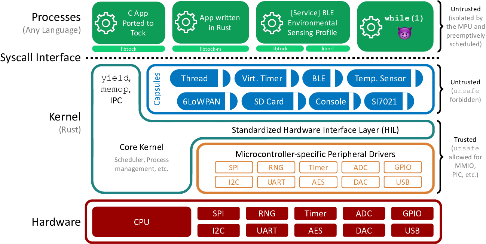

<!DOCTYPE HTML>
<html lang="en" class="sidebar-visible no-js light">
    <head>
        <!-- Book generated using mdBook -->
        <meta charset="UTF-8">
        <title>Tockドキュメント</title>
        
        <meta name="robots" content="noindex" />
        
        


        <!-- Custom HTML head -->
        


        <meta content="text/html; charset=utf-8" http-equiv="Content-Type">
        <meta name="description" content="">
        <meta name="viewport" content="width=device-width, initial-scale=1">
        <meta name="theme-color" content="#ffffff" />

        <link rel="icon" href="favicon.svg">
        <link rel="shortcut icon" href="favicon.png">
        <link rel="stylesheet" href="css/variables.css">
        <link rel="stylesheet" href="css/general.css">
        <link rel="stylesheet" href="css/chrome.css">
        <link rel="stylesheet" href="css/print.css" media="print">

        <!-- Fonts -->
        <link rel="stylesheet" href="FontAwesome/css/font-awesome.css">
        
        <link rel="stylesheet" href="fonts/fonts.css">
        

        <!-- Highlight.js Stylesheets -->
        <link rel="stylesheet" href="highlight.css">
        <link rel="stylesheet" href="tomorrow-night.css">
        <link rel="stylesheet" href="ayu-highlight.css">

        <!-- Custom theme stylesheets -->
        

        
    </head>
    <body>
        <!-- Provide site root to javascript -->
        <script type="text/javascript">
            var path_to_root = "";
            var default_theme = window.matchMedia("(prefers-color-scheme: dark)").matches ? "navy" : "light";
        </script>

        <!-- Work around some values being stored in localStorage wrapped in quotes -->
        <script type="text/javascript">
            try {
                var theme = localStorage.getItem('mdbook-theme');
                var sidebar = localStorage.getItem('mdbook-sidebar');

                if (theme.startsWith('"') && theme.endsWith('"')) {
                    localStorage.setItem('mdbook-theme', theme.slice(1, theme.length - 1));
                }

                if (sidebar.startsWith('"') && sidebar.endsWith('"')) {
                    localStorage.setItem('mdbook-sidebar', sidebar.slice(1, sidebar.length - 1));
                }
            } catch (e) { }
        </script>

        <!-- Set the theme before any content is loaded, prevents flash -->
        <script type="text/javascript">
            var theme;
            try { theme = localStorage.getItem('mdbook-theme'); } catch(e) { }
            if (theme === null || theme === undefined) { theme = default_theme; }
            var html = document.querySelector('html');
            html.classList.remove('no-js')
            html.classList.remove('light')
            html.classList.add(theme);
            html.classList.add('js');
        </script>

        <!-- Hide / unhide sidebar before it is displayed -->
        <script type="text/javascript">
            var html = document.querySelector('html');
            var sidebar = 'hidden';
            if (document.body.clientWidth >= 1080) {
                try { sidebar = localStorage.getItem('mdbook-sidebar'); } catch(e) { }
                sidebar = sidebar || 'visible';
            }
            html.classList.remove('sidebar-visible');
            html.classList.add("sidebar-" + sidebar);
        </script>

        <nav id="sidebar" class="sidebar" aria-label="Table of contents">
            <div class="sidebar-scrollbox">
                <ol class="chapter"><li class="chapter-item expanded "><a href="Overview.html"><strong aria-hidden="true">1.</strong> Tockの概要</a></li><li class="chapter-item expanded "><a href="Design.html"><strong aria-hidden="true">2.</strong> Tockの設計</a></li><li class="chapter-item expanded "><a href="threat_model/index.html"><strong aria-hidden="true">3.</strong> Threat Model</a></li><li class="chapter-item expanded affix "><li class="part-title">Tockの実装</li><li class="chapter-item expanded "><a href="Lifetimes.html"><strong aria-hidden="true">4.</strong> ライフタイム</a></li><li class="chapter-item expanded "><a href="Mutable_References.html"><strong aria-hidden="true">5.</strong> 可変参照</a></li><li class="chapter-item expanded "><a href="Soundness.html"><strong aria-hidden="true">6.</strong> 安全性</a></li><li class="chapter-item expanded "><a href="Compilation.html"><strong aria-hidden="true">7.</strong> コンパイル</a></li><li class="chapter-item expanded "><a href="TockBinaryFormat.html"><strong aria-hidden="true">8.</strong> TBF: Tockバイナリフォーマット</a></li><li class="chapter-item expanded "><a href="Memory_Layout.html"><strong aria-hidden="true">9.</strong> メモリレイアウト</a></li><li class="chapter-item expanded "><a href="Memory_Isolation.html"><strong aria-hidden="true">10.</strong> メモリ隔離</a></li><li class="chapter-item expanded "><a href="Registers.html"><strong aria-hidden="true">11.</strong> レジスタ</a></li><li class="chapter-item expanded "><a href="Startup.html"><strong aria-hidden="true">12.</strong> 起動</a></li><li class="chapter-item expanded "><a href="Syscalls.html"><strong aria-hidden="true">13.</strong> システムコール</a></li><li class="chapter-item expanded "><a href="Userland.html"><strong aria-hidden="true">14.</strong> ユーザランド</a></li><li class="chapter-item expanded "><a href="Networking_Stack.html"><strong aria-hidden="true">15.</strong> Networking Stack</a></li><li class="chapter-item expanded "><a href="Configuration.html"><strong aria-hidden="true">16.</strong> 構成</a></li><li class="chapter-item expanded affix "><li class="part-title">インターフェースの詳細</li><li class="chapter-item expanded "><a href="syscalls/index.html"><strong aria-hidden="true">17.</strong> システムコールインターフェース</a></li><li><ol class="section"><li class="chapter-item expanded "><strong aria-hidden="true">17.1.</strong> コアカーネル提供</li><li><ol class="section"><li class="chapter-item expanded "><a href="syscalls/memop.html"><strong aria-hidden="true">17.1.1.</strong> memop</a></li></ol></li><li class="chapter-item expanded "><strong aria-hidden="true">17.2.</strong> カプセル提供</li><li><ol class="section"><li class="chapter-item expanded "><a href="syscalls/00000_alarm.html"><strong aria-hidden="true">17.2.1.</strong> Alarm</a></li><li class="chapter-item expanded "><a href="syscalls/00001_console.html"><strong aria-hidden="true">17.2.2.</strong> Console</a></li><li class="chapter-item expanded "><a href="syscalls/00002_leds.html"><strong aria-hidden="true">17.2.3.</strong> LED</a></li><li class="chapter-item expanded "><a href="syscalls/00003_buttons.html"><strong aria-hidden="true">17.2.4.</strong> Button</a></li><li class="chapter-item expanded "><a href="syscalls/00004_gpio.html"><strong aria-hidden="true">17.2.5.</strong> GPIO</a></li><li class="chapter-item expanded "><a href="syscalls/00005_adc.html"><strong aria-hidden="true">17.2.6.</strong> ADC</a></li><li class="chapter-item expanded "><a href="syscalls/00007_analog_comparator.html"><strong aria-hidden="true">17.2.7.</strong> AnalogComparator</a></li><li class="chapter-item expanded "><a href="syscalls/00008_low_level_debug.html"><strong aria-hidden="true">17.2.8.</strong> Low-Level Debug</a></li><li class="chapter-item expanded "><a href="syscalls/30002_udp.html"><strong aria-hidden="true">17.2.9.</strong> UDP</a></li><li class="chapter-item expanded "><a href="syscalls/60000_ambient_temperature.html"><strong aria-hidden="true">17.2.10.</strong> Ambient Temp</a></li><li class="chapter-item expanded "><a href="syscalls/60001_humidity.html"><strong aria-hidden="true">17.2.11.</strong> Humidity</a></li><li class="chapter-item expanded "><a href="syscalls/60002_luminance.html"><strong aria-hidden="true">17.2.12.</strong> Luminance</a></li><li class="chapter-item expanded "><a href="syscalls/70005_l3gd20.html"><strong aria-hidden="true">17.2.13.</strong> L3GD20</a></li><li class="chapter-item expanded "><a href="syscalls/70006_lsm303dlhc.html"><strong aria-hidden="true">17.2.14.</strong> LSM303DLHC</a></li><li class="chapter-item expanded "><a href="syscalls/80005_hd44780.html"><strong aria-hidden="true">17.2.15.</strong> HD44780</a></li></ol></li></ol></li><li class="chapter-item expanded "><a href="reference/index.html"><strong aria-hidden="true">18.</strong> Internal Kernel Interfaces</a></li><li><ol class="section"><li class="chapter-item expanded "><a href="reference/trd1-trds.html"><strong aria-hidden="true">18.1.</strong> TRD 1: Tock Reference</a></li><li class="chapter-item expanded "><a href="reference/trd102-adc.html"><strong aria-hidden="true">18.2.</strong> TRD 102: ADC</a></li></ol></li><li class="chapter-item expanded "><li class="part-title">Tockのセットアップと使用法</li><li class="chapter-item expanded "><a href="Getting_Started.html"><strong aria-hidden="true">19.</strong> Getting Started</a></li><li class="chapter-item expanded "><a href="Porting.html"><strong aria-hidden="true">20.</strong> Tockのポーティング</a></li><li class="chapter-item expanded "><a href="OutOfTree.html"><strong aria-hidden="true">21.</strong> ツリー外のボード</a></li><li class="chapter-item expanded "><a href="debugging/index.html"><strong aria-hidden="true">22.</strong> Debugging Help</a></li><li class="chapter-item expanded "><a href="Style.html"><strong aria-hidden="true">23.</strong> Style</a></li><li class="chapter-item expanded affix "><li class="part-title">Management of Tock</li><li class="chapter-item expanded "><a href="wg/index.html"><strong aria-hidden="true">24.</strong> Working Groups</a></li><li class="chapter-item expanded "><a href="CodeReview.html"><strong aria-hidden="true">25.</strong> Code Review Process</a></li></ol>
            </div>
            <div id="sidebar-resize-handle" class="sidebar-resize-handle"></div>
        </nav>

        <div id="page-wrapper" class="page-wrapper">

            <div class="page">
                
                <div id="menu-bar-hover-placeholder"></div>
                <div id="menu-bar" class="menu-bar sticky bordered">
                    <div class="left-buttons">
                        <button id="sidebar-toggle" class="icon-button" type="button" title="Toggle Table of Contents" aria-label="Toggle Table of Contents" aria-controls="sidebar">
                            <i class="fa fa-bars"></i>
                        </button>
                        <button id="theme-toggle" class="icon-button" type="button" title="Change theme" aria-label="Change theme" aria-haspopup="true" aria-expanded="false" aria-controls="theme-list">
                            <i class="fa fa-paint-brush"></i>
                        </button>
                        <ul id="theme-list" class="theme-popup" aria-label="Themes" role="menu">
                            <li role="none"><button role="menuitem" class="theme" id="light">Light (default)</button></li>
                            <li role="none"><button role="menuitem" class="theme" id="rust">Rust</button></li>
                            <li role="none"><button role="menuitem" class="theme" id="coal">Coal</button></li>
                            <li role="none"><button role="menuitem" class="theme" id="navy">Navy</button></li>
                            <li role="none"><button role="menuitem" class="theme" id="ayu">Ayu</button></li>
                        </ul>
                        
                        <button id="search-toggle" class="icon-button" type="button" title="Search. (Shortkey: s)" aria-label="Toggle Searchbar" aria-expanded="false" aria-keyshortcuts="S" aria-controls="searchbar">
                            <i class="fa fa-search"></i>
                        </button>
                        
                    </div>

                    <h1 class="menu-title">Tockドキュメント</h1>

                    <div class="right-buttons">
                        <a href="print.html" title="Print this book" aria-label="Print this book">
                            <i id="print-button" class="fa fa-print"></i>
                        </a>
                        
                    </div>
                </div>

                
                <div id="search-wrapper" class="hidden">
                    <form id="searchbar-outer" class="searchbar-outer">
                        <input type="search" name="search" id="searchbar" name="searchbar" placeholder="Search this book ..." aria-controls="searchresults-outer" aria-describedby="searchresults-header">
                    </form>
                    <div id="searchresults-outer" class="searchresults-outer hidden">
                        <div id="searchresults-header" class="searchresults-header"></div>
                        <ul id="searchresults">
                        </ul>
                    </div>
                </div>
                

                <!-- Apply ARIA attributes after the sidebar and the sidebar toggle button are added to the DOM -->
                <script type="text/javascript">
                    document.getElementById('sidebar-toggle').setAttribute('aria-expanded', sidebar === 'visible');
                    document.getElementById('sidebar').setAttribute('aria-hidden', sidebar !== 'visible');
                    Array.from(document.querySelectorAll('#sidebar a')).forEach(function(link) {
                        link.setAttribute('tabIndex', sidebar === 'visible' ? 0 : -1);
                    });
                </script>

                <div id="content" class="content">
                    <main>
                        <h1><a class="header" href="#tockの概要" id="tockの概要">Tockの概要</a></h1>
<p>Tock は、Cortex-M、および、RISC-Vマイクロコントローラ用のセキュアな組み込み
オペレーティングシステムです。Tockは、ハードウェアがメモリ保護ユニット（MPU）を
持っていることを前提としています。MPUを持たないシステムでは複数の信頼できない
プロセスを同時にサポートすることも、Tockの安全性とセキュリティな特性の維持をする
こともできないからです。Tockカーネルとその拡張機能（<em>カプセル</em>と呼ばれる）は
Rustで書かれています。</p>
<p>Tockは、任意の言語で書かれた複数の独立した信頼できないプロセスを実行することができます。
Tockが同時にサポートできるプロセスの数は、MCUのフラッシュとRAMにより制限されます。
Tockはさまざまなスケジュールアルゴリズムの使用を設定できますが、Tockのデフォルト
スケジューラはプリエンプティブであり、ラウンドロビン方式を使用します。Tockはマイクロ
カーネルアーキテクチャを採用しています。複雑なドライバとサービスの多くは信頼できない
プロセスとして実装されており、アプリケーションなどの他のプロセスをプロセス間通信(IPC)を
介して呼び出すことができます。</p>
<p>このドキュメントでは、Tockのアーキテクチャの概要、Tockにおける異なるクラスのコード、
Tockが使用する保護機構、そしてこの構造がソフトウェアのディレクトリ構造にどのように
反映されているかについて説明します。</p>
<!-- npm i -g markdown-toc; markdown-toc -i Overview.md -->
<!-- toc -->
<ul>
<li><a href="Overview.html#tock%E3%81%AE%E6%A6%82%E8%A6%81">Tockの概要</a>
<ul>
<li><a href="Overview.html#tock%E3%81%AE%E3%82%A2%E3%83%BC%E3%82%AD%E3%83%86%E3%82%AF%E3%83%81%E3%83%A3">Tockのアーキテクチャ</a></li>
<li><a href="Overview.html#tock%E3%81%AE%E3%83%87%E3%82%A3%E3%83%AC%E3%82%AF%E3%83%88%E3%83%AA%E6%A7%8B%E9%80%A0">Tockのディレクトリ構造</a></li>
</ul>
</li>
</ul>
<!-- tocstop -->
<h2><a class="header" href="#tockのアーキテクチャ" id="tockのアーキテクチャ">Tockのアーキテクチャ</a></h2>
<p></p>
<p>上の図は、Tockのアーキテクチャを示しています。コードは3つのカテゴリ、<em>コアカーネル</em>、
<em>カプセル</em>、<em>プロセス</em>のいずれかに分類されます。</p>
<p>コアカーネルとカプセルはRustで書かれています。Rustは型安全なシステム言語です。この
言語とそのカーネル設計への影響については他のドキュメントで詳しく説明されていますが、
鍵となるのは、Rustのコードはメモリを意図したものと異なる使用ができない（たとえば、
バッファオーバーフロー、偽ポインタ、デッドスタックフレームポインタの保持など）ことです。
これらの制約は、OSカーネルがしなければならない多くのこと（たとえば、データシートで
指定されているメモリアドレスに存在するペリフェラルのアクセスなど）を妨げるため、非常に
小さなコアカーネルは「安全でない」Rustコードを使用することでこれらの制約を破る
ことが許されています。しかし、カプセルは安全でない機能を使用することはできません。
これは、コアカーネルのコードは非常に小さく慎重に書かれているが、カーネルに追加される
新たなカプセルは安全なコードであり、信頼される必要はないということを意味します。</p>
<p>プロセスは任意の言語で書くことができます。カーネルは、ハードウェアメモリ保護ユニット
（MPU）を使用して、自分自身と他のプロセスを不正なプロセスコードから保護します。
プロセスが許可されていないメモリにアクセスしようとすると、MPUは例外を発生させます。
カーネルはこの例外を処理してプロセスを終了させます。</p>
<p>カーネルは4つの主要なシステムコールを提供します。</p>
<ul>
<li>command: プロセスからカーネルのコールを行います。</li>
<li>subscribe: カーネルからコールされるプロセスのコールバックを登録します。</li>
<li>allow: プロセス内のメモリにカーネルがアクセスできるようにします。</li>
<li>yield: コールバックが呼び出されるまでプロセスを一時停止します。</li>
</ul>
<p>yield以外のすべてのシステムコールはノンブロッキングです。長時間かかる可能性のある
コマンド（UART経由のメッセージ送信など）はすぐに戻り、処理が完了するとコールバックが
発行されます。yieldシステムコールは、コールバックが呼び出されるまでプロセスをブロック
します。通常、ユーザーランドのコードは、コマンドを実行し、yieldを使用してコールバックが
完了するまで待機するというブロック関数を実装します。</p>
<p>command、subscribe, allowの各システムコールはすべて、最初の引数としてドライバIDを
受け取ります。これは、システムコールがカーネル内のどのドライバを対象としているかを
示します。ドライバはシステムコールを実装したカプセルです。</p>
<h2><a class="header" href="#tockのディレクトリ構造" id="tockのディレクトリ構造">Tockのディレクトリ構造</a></h2>
<p>Tockにはいくつかの主要なコードディレクトリがあります。</p>
<ul>
<li>
<p><strong>arch</strong>: アーキテクチャ固有のコードを格納します。つまり、Cortex-M0やCortex-M4
固有のコードです。これには、コンテキストスイッチの実行やシステムコール（ユーザーコード
からカーネルコードへのトラップ）を行うコードが含まれます。</p>
</li>
<li>
<p><strong>boards</strong>: imix、Hail、nrf52dkなどの特定のTockプラットフォーム用のコードを
格納します。通常、これはカーネルが持つすべてのカプセル、MCUのIOピンを適切な状態に
設定するコード、カーネルを初期化するコード、プロセスをロードするコードなどを定義する
構造体です。このディレクトリで最も重要なファイルは<code>main.rs</code>であり、その最も重要な
初期化関数は（MCUがリセットされたときに実行される）<code>reset_handler</code>です。ボード
コードでは、システムコールデバイス識別子をカプセルにマッピングする方法も
<code>with_driver</code>関数の中で定義しています。</p>
</li>
<li>
<p><strong>capsules</strong>: 特定のペリフェラルのチップ固有実装の上に構築できるMCUに依存しない
カーネル拡張を格納します。システムコールを提供するカプセルもあります。たとえば、
この  ディレクトリにある<code>spi</code>モジュールは、チップのSPI実装を使って、そのシステム
コールを提供する実装を構築しています。</p>
</li>
<li>
<p><strong>chips</strong>: SPI、I2C、GPIO、UARTの実装やその他のマイクロコントローラ固有のコード
を格納します。chipsとboardsの区別はマイクロコントローラとフルプラットフォームの
違いです。たとえば、多くのマイクロコントローラは複数のUARTを持ちます。どのUARTが
Tockと通信するのにはどのUARTが主に使われるのか、また、別のチップを制御するには
どのUARTが使用されるのかは、ボード上にチップがどのように配置され、どのピンが公開
されているかにより定義されます。したがって、チップはUARTの実装を提供し、ボードは
どのUARTが何に使われるかを定義します。</p>
</li>
<li>
<p><strong>doc</strong>: 内部インターフェースの仕様やチュートリアルを含むTockのドキュメントを
格納します。</p>
</li>
<li>
<p><strong>kernel</strong>: スケジューラ、プロセス、メモリ管理など、マイクロコントローラに依存しない
カーネルコードを格納します。このディレクトリとarchがすべてのコアカーネルコードを
格納する場所です。</p>
</li>
<li>
<p><strong>libraries</strong>: 内部で使用したり、外部と共有するライブラリを格納します。いくつかの
プリミティブがTock用に作成されていますが、他のプロジェクトにも有用でないかと考えて
います。ここは各クレートを置く場所です。</p>
</li>
<li>
<p><strong>tools</strong>: コードフォーマットチェック、バイナリ変換、ビルドスクリプトなど、
コンパイルやコードメンテナンスに役立つ関連ツールを格納します。</p>
</li>
<li>
<p><strong>vagrant</strong>: 仮想マシン環境でTockを動かすための情報を格納します。</p>
</li>
</ul>
<h1><a class="header" href="#tockの設計" id="tockの設計">Tockの設計</a></h1>
<!-- npm i -g markdown-toc; markdown-toc -i Design.md -->
<!-- toc -->
<ul>
<li><a href="Design.html#tock%E3%81%AE%E8%A8%AD%E8%A8%88">Tockの設計</a>
<ul>
<li><a href="Design.html#%E3%82%A2%E3%83%BC%E3%82%AD%E3%83%86%E3%82%AF%E3%83%81%E3%83%A3">アーキテクチャ</a>
<ul>
<li><a href="Design.html#%E3%82%AB%E3%83%97%E3%82%BB%E3%83%AB">カプセル</a></li>
<li><a href="Design.html#%E3%83%97%E3%83%AD%E3%82%BB%E3%82%B9">プロセス</a>
<ul>
<li><a href="Design.html#%E3%83%A1%E3%83%A2%E3%83%AA%E3%83%AC%E3%82%A4%E3%82%A2%E3%82%A6%E3%83%88">メモリレイアウト</a></li>
</ul>
</li>
<li><a href="Design.html#%E3%82%B0%E3%83%A9%E3%83%B3%E3%83%88">グラント</a></li>
</ul>
</li>
<li><a href="Design.html#%E3%82%AB%E3%83%BC%E3%83%8D%E3%83%AB%E8%A8%AD%E8%A8%88%E5%8E%9F%E7%90%86">カーネル設計原理</a>
<ul>
<li><a href="Design.html#hil%E3%81%AE%E5%BD%B9%E5%89%B2">HILの役割</a></li>
<li><a href="Design.html#%E3%82%B9%E3%83%97%E3%83%AA%E3%83%83%E3%83%88%E3%83%95%E3%82%A7%E3%83%BC%E3%82%BA%E6%93%8D%E4%BD%9C">スプリットフェーズ操作</a></li>
<li><a href="Design.html#%E5%A4%96%E9%83%A8%E4%BE%9D%E5%AD%98%E3%81%AA%E3%81%97">外部依存なし</a></li>
<li><a href="Design.html#unsafe%E3%81%A8%E3%82%B1%E3%82%A4%E3%83%91%E3%83%93%E3%83%AA%E3%83%86%E3%82%A3%E3%81%AE%E4%BD%BF%E7%94%A8"><code>unsafe</code>とケイパビリティの使用</a></li>
<li><a href="Design.html#%E4%BD%BF%E7%94%A8%E3%81%A8%E7%90%86%E8%A7%A3%E3%81%AE%E5%AE%B9%E6%98%93%E3%81%95">使用と理解の容易さ</a></li>
<li><a href="Design.html#%E5%AE%9F%E8%A8%BC%E6%B8%88%E3%81%BF%E3%81%AE%E6%A9%9F%E8%83%BD">実証済みの機能</a></li>
<li><a href="Design.html#%E7%A9%8D%E6%A5%B5%E7%9A%84%E3%81%AB%E3%83%9E%E3%83%BC%E3%82%B8%E8%87%86%E3%81%99%E3%82%8B%E3%81%93%E3%81%A8%E3%81%AA%E3%81%8F%E3%82%A2%E3%83%BC%E3%82%AB%E3%82%A4%E3%83%96">積極的にマージ、臆することなくアーカイブ</a></li>
</ul>
</li>
</ul>
</li>
</ul>
<!-- tocstop -->
<p>ほとんどのオペレーティングシステムは、プロセスなどの抽象化を使いコンポーネント間の隔離を
提供しています。各コンポーネントには他のコンポーネントがアクセスできない独自の（スタック、
ヒープ、データ用の）システムメモリが与えられます。プロセスが優れているのは、隔離と並行処理
の双方に便利な抽象化を提供するからです。しかし、1MB以下のメモリしか持たないマイクロ
コントローラのようなリソースに制約のあるシステムでは、このアプローチは、隔離の粒度と
リソース消費の間にトレードオフの関係を導きます。</p>
<p>Tockのアーキテクチャは、コンポーネントの隔離には言語サンドボックスを、カーネルの並行
処理には協調スケジューリングモデルを、各々使用することで、このトレードオフを解決します。
その結果、隔離は（多かれ少なかれ）リソース消費という面では自由になっていますが、
プリエンプティブなスケジューリングが犠牲になっています（つまり、悪意のあるコンポーネント
は、例えば無限ループでスピンすることによりシステムをブロックすることができます）。</p>
<p>第一に、カーネル内のコンポーネントを含む、Tockのすべてのコンポーネントは互いを
信用していません。カーネル内ではメモリや計算のオーバーヘッドを発生しない_カプセル_と
呼ばれる言語ベースの隔離抽象化によりこれを実現しています。ユーザ空間では、Tockは伝統的な
プロセスモデルを（多かれ少なかれ）使用しており、プロセスはハードウェア保護機構を使用して
カーネルや他のプロセスから隔離されています。</p>
<p>さらに、Tockは他の組み込みシステム特有の目標を念頭に置いて設計されています。Tockは
システムの全体的な信頼性を重視し、バグが発生した場合にはシステムの進行を妨げるような
コンポーネントを抑制します (可能であれば停止します)。</p>
<h2><a class="header" href="#アーキテクチャ" id="アーキテクチャ">アーキテクチャ</a></h2>
<p></p>
<p>Tockには3つのアーキテクチャコンポーネントがあります。一つは、Rustで書かれた小さな信頼
できるカーネルであり、ハードウェア抽象化層(HAL)、スケジューラ、プラットフォーム固有の
設定を実装しています。その他のシステムコンポーネントは、2つの保護機構の一つで実装されて
おり、<strong>カプセル</strong>はカーネルと一緒にコンパイルされ、安全のためにRustの型とモジュール
システムを使用し、<strong>プロセス</strong>は実行時の保護のためにMPUを使用します。</p>
<p>システムコンポーネント（アプリケーション、ドライバ、仮想化レイヤなど）は、カプセル
またはプロセスのいずれかに実装することができますが、それぞれのメカニズムは、並行処理と
安全性において、メモリ消費量、パフォーマンス、粒度に関するトレードオフがあります。</p>
<table><thead><tr><th>カテゴリ</th><th>カプセル</th><th>プロセス</th></tr></thead><tbody>
<tr><td>保護</td><td>言語</td><td>ハードウェア</td></tr>
<tr><td>メモリオーバヘッド</td><td>なし</td><td>独立したスタック</td></tr>
<tr><td>保護の粒度</td><td>細かい</td><td>粗い</td></tr>
<tr><td>並行処理</td><td>協調的</td><td>プリエンプティブ</td></tr>
<tr><td>実行時更新</td><td>いいえ</td><td>はい</td></tr>
</tbody></table>
<p>結果として、それぞれが異なるコンポーネントの実装に適しています。一般に、ドライバや仮想化
レイヤはカプセルとして実装され、ネットワークスタックなどの既存のコード/ライブラリを
使用するアプリケーションや複雑なドライバはプロセスとして実装されます。</p>
<h3><a class="header" href="#カプセル" id="カプセル">カプセル</a></h3>
<p>カプセルは、Rustの構造体と関連する関数です。カプセルは直接相互に作用し、公開フィールドに
アクセスしたり、他のカプセルの関数を呼び出したりします。信頼できるプラットフォーム設定
コードがカプセルを初期化し、必要とする他のカプセルやカーネルリソースへのアクセスを可能に
します。カプセルは、特定の関数やフィールドをエクスポートしないことで内部状態を保護でき
ます。</p>
<p>カプセルはカーネル内部で特権ハードウェアモードで実行されますが、Rustの型とモジュール
システムは、バグや悪意のあるカプセルからコアカーネルを保護します。型安全性とメモリ安全性
はコンパイル時に適用されるため、安全性に関連するオーバーヘッドはなく、カプセルに必要な
エラーチェックは最小限です。たとえば、カプセルは参照の有効性をチェックする必要がありま
せん。参照が存在すれば、それは正しい型の有効なメモリを指しています。コンポーネントの分割
によるオーバーヘッドが実質的にないため、非常に細かい粒度の隔離が可能になります。</p>
<p>Rustの言語レベルの保護は強力な安全性を保証します。カプセルがRustの型システムを破壊
できない限り、カプセルは明示的に与えられたリソースにしかアクセスできず、そのリソースが
公開しているインターフェースにより許可された方法でしかアクセスできません。ただし、
カプセルはカーネルと同じシングルスレッドのイベントループで協調的にスケジュールされる
ため、システムの生存のためには信頼できるものでなければなりません。カプセルがパニックに
陥ったり、イベントハンドラに復帰しなかったりすると、システムは再起動することでしか回復
できません。</p>
<h3><a class="header" href="#プロセス" id="プロセス">プロセス</a></h3>
<p>プロセスはカーネルから隔離された独立したアプリケーションであり、カーネルとは別の実行
スレッドで削減された権限で実行されます。カーネルはプロセスをプリエンプティブに
スケジュールするので、プロセスはカプセルよりも強くシステムの生存を保証します。さらに、
実行時にプロセスの隔離を強制するためにハードウェア保護を使用します。これにより、
プロセスは任意の言語で記述でき、実行時に安全にロードすることができます。</p>
<h4><a class="header" href="#メモリレイアウト" id="メモリレイアウト">メモリレイアウト</a></h4>
<p>プロセスは、ハードウェアメモリ保護ユニット (MPU) により、他のプロセスやカーネル、
基盤となるハードウェアから明示的に隔離されています。MPUはプロセスがアクセスできる
メモリアドレスを制限します。プロセスが許可された領域外にアクセスするとフォールトと
なり、カーネルトラップを発生させます。</p>
<p>フラッシュに格納されているコードは、読み取り専用のメモリ保護領域でアクセス可能になります。
各プロセスはRAM上の連続した領域が割り当てられてます。プロセスのこれまでにない点として、
アドレス空間の先頭に「グラント」領域が存在することが挙げられます。これは、メモリ保護
領域によりカバーされたプロセスに割り当てられたメモリであり、プロセスは読むことも
書くこともできません。グラント領域は（後述しますが）システムコールに応じて生存と安全性を
確保するためにカーネルがプロセスからメモリを借りられるようにするために必要となります。</p>
<h3><a class="header" href="#グラント" id="グラント">グラント</a></h3>
<p>カプセルは動的にメモリを割り当てることができません。カーネル内での動的な割り当ては、
メモリが枯渇するか否かの予測を困難にするからです。単一カップセルによる不十分なメモリ
管理はカーネルの残りの部分のエラーの原因となります。さらに、単一のスタックを使用するので、
カーネルはカプセルのエラーから簡単に回復することができません。</p>
<p>しかし、カプセルはプロセスの要求に応じて動的にメモリを割り当てる必要があることがよく
あります。たとえば、仮想タイマードライバは、プロセスが作成する新たなタイマーごとに
メタデータを保持するために構造体を割り当てなければなりません。そのため、Tockは
リクエストを行うプロセスのメモリからカプセルが動的に割り当てることを可能にしています。</p>
<p>しかし、カプセルがプロセスメモリへの参照を直接保持することは安全ではありません。
プロセスはクラッシュし、動的にロードされる可能性があるので、カーネルコード全体にわたる
明示的なチェックを行わなければ、プロセスメモリへの参照が未だに有効であることを保証する
ことはできません。</p>
<p>カプセルがプロセスから安全にメモリを割り当てるためには、カーネルは次の3つの属性を強制
しなければなりません。</p>
<ol>
<li>
<p>割り当てられたメモリはカプセルが型システムを破ることを許さない。</p>
</li>
<li>
<p>カプセルはプロセスが生きている間だけプロセスメモリへのポインタにアクセスできる。</p>
</li>
<li>
<p>カーネルは、終了したプロセスからメモリを取り戻すことができなければならない。</p>
</li>
</ol>
<p>Tockは、メモリグラントを通じてこれら3つの要件を満たす安全なメモリ割り当て機構を提供
します。カプセルはカプセルと相互作用するプロセスのメモリから任意の型のデータを割り
当てることができます。このメモリはグラントセグメントから割り当てられます。</p>
<p>allowを介して渡されるバッファと同様に、グラントメモリへの参照は逆参照をする前に
プロセスがまだ生きていることを保証する型安全な構造体でラップされます。カプセル内の
バッファ型にしかなることができない共有バッファとは異なり、グラントメモリは任意の型
として定義することができます。そのため、プロセスはこのメモリにアクセスできません。
そうすることは型安全性を破ることになるからです。</p>
<h2><a class="header" href="#カーネル設計原理" id="カーネル設計原理">カーネル設計原理</a></h2>
<p>Tockの目標を達成し、ハードウェア間での移植性を促進し、持続可能なオペレーティング
システムを保証するために、時がたつにつれ、Tockカーネルのための設計原理が現れてきました。
これらはカーネルへの新たな貢献が維持しなければならない一般原理です。しかし、これらの
原理はTockの開発によりわかってきたものであり、TockとRustのエコシステムの進化に
合わせて進化し続けるでしょう。</p>
<h3><a class="header" href="#hilの役割" id="hilの役割">HILの役割</a></h3>
<p>一般的に、Tockカーネルは次の3つのレイヤーで構成されています。</p>
<ol>
<li>
<p>チップ固有のドライバ。通常、これらのドライバは<code>chips</code>サブディレクトリにある
クレートか、別のリポジトリにある同等のクレートにあります（たとえば、Titanポートは
ツリーの外にありますが、その<code>h1b</code>クレートはこれと同等です)。これらのドライバは、
特定のマイクロコントローラのハードウェアに固有の実装を持っています。理想的には、
それらの実装はきわめてシンプルであり、単に共通のインタフェース（HIL）に従うだけ
です。必ずしもそうとは限りませんが、それが理想です。</p>
</li>
<li>
<p>チップ非依存でポータブルなペリフェラルドライバとサブシステム。通常、これらは
<code>capsules</code>クレートにあります。これらには、仮想アラームや仮想I2Cスタックのような
ものや、チップ内には存在しないハードウェアペリフェラル（センサ、ラジオなど）用の
ドライバが含まれます。通常、これらのドライバはHILを介してチップ固有のドライバに
依存します。</p>
</li>
<li>
<p>システムコールドライバ。通常、これも<code>capsules</code>クレートにあります。これらは、
システムコールインタフェースのある一部を実装するドライバであり、(2)よりもさらに
ハードウェアから抽象化されていることが多いです。たとえば、温度センサシステム
コールドライバは、ポータブルペリフェラルドライバとして実装されているものを含め、
任意の温度センサを使用することができる。</p>
<p>システムコールインタフェースは、様々な方法で実装できるもう一つの標準化のポイントです。
そのため、全く異なるハードウェアスタックを使用する、その結果、全く異なるHILやチップ
固有のドライバを使用する同一のシステムコールインタフェースの実装が複数存在することは
完全に合理的です（たとえば、USB経由で動作するコンソールドライバは、USBをUART HIL
に合わせようとするのではなく、同じシステムコールを実装する別のシステムコールドライバ
として実装することができるでしょう）。</p>
</li>
</ol>
<p>その重要性から、これらのレイヤー間のインターフェースはTockの設計と実装の最重要な部分と
なっています。これらのインターフェースはTockのハードウェアインターフェースレイヤ
（HIL）と呼ばれています。HILはRustのトレイとのポータブルコレクションであり、ボータブル
にも、非ポータルにも実装することができます。HILの非ポータブルな実装の例としては、特定の
チップのカウンタレジスタと比較レジスタで実装されたアラームがあり、ポータブルな実装の例と
しては、一つのアラームの上に複数のアラームを多重化する仮想化レイヤがあります。</p>
<p>HILは、一緒に使用することを意図した1つ以上のRustトレイトで構成されています。中には
HILのトレイトのサブセットの実装だけで良いケースもあります。たとえば、アナログデジタル
変換（ADC）HILは、単一サンプルとストリームサンプルという2つのトレイを持つことがで
ある実装では単一サンプルのみをサポートし、ストリーミングトレイトを実装しないことが
ことができます。場合があります。</p>
<p>HILインターフェースの選択はきわめて重要であり、従うべきいくつかの一般原則があります。</p>
<ol>
<li>
<p>HILの実装はできる限り一般的なものであるべきです。さまざまなハードウェアを通じて
あまりうまく動作しないインターフェースであるとしたら、おそらくそれは間違った
インターフェースです。それは、高レベルすぎるか、低レベルすぎるか、あるいは、ただ
柔軟性にかけるものです。一般的に、HILは特定のアプリケーションやハードウェアに
最適になるように設計されるべきではありませんし、特定のアプリケーションとハード
ウェアの組み合わせに最適化されるべきではありません。それが本当に必要な場合には、
ドライバをチップやボードに特化させ、HILをまったく使用しないことができます。</p>
<p>ある便利なインターフェースに関して、ネイティブで提供できるチップもあれば、必要な
ハードウェアサポートはないが、何からの方法でその機能をエミュレートできるチップが
ある場合もあります。このような場合、TockはHILに「高度な」トレイトを使用します。
これは、HILのすべての実装者がその機能を実装する必要はなく、あるチップでより洗練
された機能を公開することを可能にするものです。たとえば、UART HILには<code>ReceiveAdvanced</code>
トレイトがありますが、このトレイトにはバイト中に一時停止が検出されるまでUART上の
バイトを受信する特別な関数<code>receive_automatic()</code>があります。この関数はSAM4L
ハードウェアでは直接サポートされていますが、タイマとGPIO割り込みを使用して
エミュレートすることも可能です。これを高度なトレイトに含めることにより、カプセルは
このインターフェースを使用することができますが、必要な機能を持たない他のUART実装は
それを実装する必要がありません。</p>
</li>
<li>
<p>HILの実装は、それがデバイスが使用される唯一の方法であると仮定できます。その結果、
Tockは特定のサービスや抽象化のために複数のHILを持つことを避けようとします。一般に、
カーネルは同じデバイスに対して複数のHILを使用して同時にサポートすることはできない
からです。たとえば、わずかに異なるAPIを持つUART用に2つの異なるHILがあるとします。
それぞれのHILに対するチップ固有の実装では、ハードウェアレジスタの読み書きや
割り込み処理を行う必要があるため、同時には存在することはできません。HILがデバイスを
使用する唯一の方法であると仮定することで、将来起きる可能性のある矛盾やユースケースを
心配することなく、TokcはHILのセマンティクスを正確に定義することが可能になります。</p>
</li>
</ol>
<h3><a class="header" href="#スプリットフェーズ操作" id="スプリットフェーズ操作">スプリットフェーズ操作</a></h3>
<p>Tockではプロセスはタイムスライスされ、プリエンプションされますが、カーネルはそうでは
ありません。すべてのプロセスはRun-to-completionです。これは重要な設計上の選択であり、
これによりカーネルが多くのタスクのために多くのスタックを割り当てることを避けることができ、
静的変数やその他の共有変数についてより単純に推論することが可能になるからです。</p>
<p>したがって、Tockカーネル内のすべてのI/O操作は非同期かつノンブロッキングです。メソッド
コールは操作を開始して直ちに戻ります。操作が完了すると、操作を実装している構造体が
コールバックをコールします。Tockはクロージャではなくコールバックを使用します。通常、
クロージャは動的メモリ割り当てを必要としますが、カーネルはこれを避け、一般にサポート
しないからです。</p>
<p>この設計はドライバの作成を複雑にします。一般的に、ブロッキングAPIの方が使いやすいから
です。しかし、これは個々のドライバの機能的な正しさ（エラーを誘発しやすいからであり、
正しく書けないからではありません）が発生しやすいからです)よりもカーネルの全体的な安全性
（たとえば、メモリ枯渇の回避や他のコードの実行独占の防止) を優先するための意識的な
選択です 。</p>
<p>カーネルが一時的にブロックできるケースは限られます。たとえば、SAM4LのGPIO
コントローラは、操作の間に準備が整うまでに最大5サイクルかかることがあります。技術的
には、完全に非同期のドライバであれば、操作は直ちに返り、処理が完了したらコールバックを
発行するというようにフェーズを分割することができます。しかし、コールバックを設定する
だけでも5サイクル以上かかるので、5サイクルスピンすることは単純なだけでなく、コストも
安くなります。そのため、この実装では返る前に数サイクルスピンするようにしてあります。
つまち、操作は同期的です。しかし、これらのケースはまれです。その操作は遅延中に他の
コードを実行させる価値がないほど高速でなければなりません。</p>
<h3><a class="header" href="#外部依存なし" id="外部依存なし">外部依存なし</a></h3>
<p>Tockはカーネル内のすべてのクレートで外部ライブラリを使用しないことを選択しています。
これは安全性を促進するです。これにより、Tockコードの監査にはTockリポジトリのコード
だけを検査すればよくなるからからです。Tockは<code>unsafe</code>の使用を非常に限定的なものに
しようとしており、それが使用される際にはその理由を明確にするようにしています。外部に
依存関係を持つと、特に外部ライブラリが進化するにつれて、<code>unsafe</code>の使用が正しいことを
保証することが明らかに困難になります。</p>
<p>しかし、外部ライブラリが非常に有用であることも認識しています。Tockの妥協点は
ライブラリの一部を<code>libraries</code>フォルダに取り込むことです。これにより、ライブラリの
ソースを同じリポジトリに置く一方で、ライブラリを明確に別のクレートして維持することに
なります。これを行う頻度は制限しようとしています。</p>
<p>将来的には、<code>cargo</code>やその他のRustツールによって、依存ライブラリの監査や管理が非常に
簡単になることを期待しています。たとえば、今のところ、cargoは依存ライブラリが<code>unsafe</code>を
使用している場合にエラーを発生させる機構を持っていません。依存コードが安全であることを
保証するための新しいツールが登場すれば、Tockは外部依存ライブラリを活用できるように
なるでしょう。</p>
<h3><a class="header" href="#unsafeとケイパビリティの使用" id="unsafeとケイパビリティの使用"><code>unsafe</code>とケイパビリティの使用</a></h3>
<p>Tockはカーネルにおける<code>unsafe</code>コードの量を最小限にしようとしています。もちろん、
カーネルが行わなければならない操作の中には、Rustのメモリ安全保証を根本的に破る
ものが多数あります。これらの操作を区分化し、最終的に安全な方法で使用する方法を説明
しようとしています。</p>
<p>Rustの安全性に違反する操作に対して、Tockは関数、構造体、トレイトに<code>unsafe</code>として
マークします。これはこれらの要素を使用できるクレートを制限します。一般的に、Tockは
安全でない操作がどこで発生しているかを明確にするために、<code>unsafe</code>キーワードを付ける
ことを要求しています。たとえば、メモリマップド入出力(MMIO)レジスタにおいて、任意の型を
そのレジスタを表す構造体へキャスティングすることは、レジスタマップとアドレスが正しい
ことが検証されない限りメモリの安全性を破ります。このことを示すために、キャストを行う
ことは<code>unsafe</code>であると明示されています。しかし、キャストが完了すれば、これらの
レジスタにアクセスすることはメモリの安全性を破ることはありません。したがって、
レジスタの使用には<code>unsafe</code>キーワードは必要ありません。</p>
<p>しかし、潜在的に危険なすべてのコードがRustの安全モデルに違反するわけではありません。
たとえば、ボード上で実行中のプロセスを停止させることは言語レベルの安全性には違反
しません。しかし、セキュリティとシステムの信頼性の観点からは問題のある操作である
可能性があります。必ずしもすべてのカーネルコードが任意のプロセスを停止できるように
するべきではないからです（特に、信頼できないカプセルはこのAPIに対してこれができる
ようにするべきではありません）。これらのタイプの関数へのアクセスを制限する一つの方法は、
<code>unsafe</code>機構を再利用することでしょう。<code>unsafe</code>の使用を制限されているコードが
<code>unsafe</code>関数を実行しようとした場合、cargoが警告を発するからです。しかし、これは
<code>unsafe</code>の使用を混乱させ、コードが潜在的に安全性に違反しているのか、それとも制限された
APIであるかを理解することが困難になります。</p>
<p>Tockではこの代わりに重要なAPIへのアクセスを制限する<a href="Soundness.html#capabilities-restricting-access-to-certain-functions-and-operations">ケーパビリティ</a>を
使用します。そのため、カーネル内の公開APIであっても、他のコードがそれらを使用できる
ことが非常に制限されているものは、その関数シグネチャに特定のケイパビリティを必要と
するべきです。これにより、明示的にケイパビリティを付与されていないコードが保護された
APIを呼び出すことを防ぐことができます。</p>
<p>最小特権の原則を促進するために、ケイパビリティは比較的細かく設定されており、特定の
APIへのアクセスを狭くしています。これは一般的に新たなAPIは新たなケイパビリティを
定義する必要があることを意味します。</p>
<h3><a class="header" href="#使用と理解の容易さ" id="使用と理解の容易さ">使用と理解の容易さ</a></h3>
<p>可能な限り、Tockの設計は新規ユーザや開発者がTockを理解して利用するための障壁を
低くするように最適化されています。これは、パフォーマンスよりも読みやすさや分かりやすさを
優先した設計を意図的に選択していることもあることを意味します。</p>
<p>例として、Tockは通常、Rustの<a href="https://doc.rust-lang.org/1.0.0/book/conditional-compilation.html">features</a>や<code>#[cfg()]</code>属性を使用した条件付きコンパイルの使用を
避けています。一連のfeaturesの使用はカーネルを構築する際にどのコードを含めるべきかを
正確に最適化することにつながりますが、featuresに慣れていないユーザにとって、いつどの
featuresを有効にするかの決定は非常に難しいものなります。おそらく、このようなユーザは
デフォルトの設定を使用するので、featuresを利用する利点を減らすことになるでしょう。
また、条件付きコンパイルは、featuresにより実行されているコードが大幅に変わるため、
特定のボードで実行中のカーネルのバージョンを正確に理解することが非常に困難になります。
最後に、デフォルト以外のオプションは、デフォルトの設定ほど十分にテストされている可能性が
低く、利用できないカーネルのバージョンになる可能性があります。</p>
<p>Tockはまた、Tockがユーザにとって「すぐに動く」ことを保証しようとしています。これは、
Tockを動作させるための手順を最小限にしようとしていることからも明らかです。ビルド
システムには多くの開発者にお馴染みの<code>make</code>を使用しており、ボードフォルダで<code>make</code>を
実行するだけでカーネルがコンパイルされます。最もサポートされているボード（Hailと
imix）では<code>make program</code>を実行するだけでプログラムすることができます。アプリを
インストールするにはもう一つのコマンド<code>tockloader install blink</code>を実行するだけ
です。Tockloaderは今後もTockの使いやすさをサポートするために拡張を続けていきます。
現在のところ、Tockの「すぐに動く」という設計目標は完全には達成されていません。
しかし、今後の設計上の決定はTockが「すぐに動く」ことを促進するようにし続ける必要が
あります。</p>
<h3><a class="header" href="#実証済みの機能" id="実証済みの機能">実証済みの機能</a></h3>
<p>Tockは明確なユースケースが確立されていない限り、カーネルに機能を追加することは
ありません。たとえば、赤黒木の実装を<code>kernel/src/common</code>に追加することは、将来的に
Tockの新機能に役立つかもしれません。しかし、赤黒木を必要とする動機となるような
カーネル内部のユースケースがなければそれがマージされることはないでしょう。この一般的な
原則は、プルリクエストの新たな機能を評価するための出発点を提供します。</p>
<p>また、ユースケースを必要とすることで、他の内部カーネルAPIが変更されたときに更新される
だけでなく、コードがテストされたり、使用されたりする可能性が高くなります。</p>
<h3><a class="header" href="#積極的にマージ臆することなくアーカイブ" id="積極的にマージ臆することなくアーカイブ">積極的にマージ、臆することなくアーカイブ</a></h3>
<p>学術研究をルーツに持つ実験的な組み込みオペレーティングシステムとして、Tockは、新規の、
リスクの高い、実験的な、あるいは焦点の絞られたコードの貢献を受ける可能性が高く、
それらは Tockの長期的な成長に役立つかもしれませんし、そうでないかもしれません。
新しい実験的なコードのために&quot;hold&quot;や&quot;contributions&quot;リポジトリを使うのではなく、
Tockは新しい機能をTockの本流にマージしようとします。これはコードのメンテナンス負担を
軽減し（ツリー外でメンテナンスする必要がない）、機能をより目に見える形にすることが
できます。</p>
<p>しかし、すべての機能が受け入れられたり、完成したり、有用性が証明されたりするわけではなく、
コードをTockの本流に置くことが全体的なメンテナンス負担になることもあります。このような
場合、Tockはコードを<a href="https://github.com/tock/tock-archive/">アーカイブリポジトリ</a>に移動します。</p>
<h1><a class="header" href="#tock-threat-model" id="tock-threat-model">Tock Threat Model</a></h1>
<p><strong>Note: This threat model is not descriptive of Tock's current implementation.
It describes how we intend Tock to work as of some future release, perhaps
2.0.</strong></p>
<h2><a class="header" href="#overview" id="overview">Overview</a></h2>
<p>Tock provides hardware-based isolation between processes as well as
language-based isolation between kernel capsules.</p>
<p>Tock supports a variety of hardware, including boards defined in the Tock
repository and boards defined &quot;out of tree&quot; in a separate repository.
Additionally, Tock's installation model may vary between different use cases
even when those use cases are based on the same hardware. As a result of Tock's
flexibility, the mechanisms it uses to provide isolation — and the strength of
that isolation — vary from deployment to deployment.</p>
<p>This threat model describes the isolation provided by Tock as well as the trust
model that Tock uses to implement that isolation. Users of Tock, which include
board integrators and application developers, should use this threat model to
understand what isolation Tock provides to them (and what isolation it may not
provide). Tock developers should use this threat model as a guide for how to
provide Tock's isolation guarantees.</p>
<h2><a class="header" href="#definitions" id="definitions">Definitions</a></h2>
<p>These definitions are shared between the documents in this directory.</p>
<p>A <strong>process</strong> is a runtime instantiation of an application binary. When an
application binary &quot;restarts&quot;, its process is terminated and a new process is
started using the same binary. Note that the kernel is not considered a process,
although it is a thread of execution.</p>
<p><strong>Process data</strong> includes a process' binary in non-volatile storage, its memory
footprint in RAM, and any data that conceptually belongs to the process that is
held by the kernel or other processes. For example, if a process is reading from
a UART then the data in the UART buffer is considered the process' data, even
when it is stored in a location in RAM only readable by the kernel.</p>
<p><strong>Kernel data</strong> includes the kernel's image in non-volatile storage as well as
data in RAM that does not conceptually belong to processes. For example, the
scheduler's data structures are kernel data.</p>
<p><strong>Capsule data</strong> is data that is associated with a particular kernel capsule.
This data can be either kernel data or process data, depending on its
conceptual owner. For example, an ADC driver's configuration is kernel data,
while samples an ADC driver takes on behalf of a process are process data.</p>
<p><strong>Tock's users</strong> refers to entities that make use of Tock OS. In the context of
threat modelling, this typically refers to board integrators (entities that
combine Tock components into an OS to run on a specific piece of hardware) and
application developers (who consume Tock's APIs and rely on the OS' guarantees).</p>
<h2><a class="header" href="#isolation-provided-to-processes" id="isolation-provided-to-processes">Isolation Provided to Processes</a></h2>
<p><strong>Confidentiality:</strong> A process' data may not be accessed by other processes or
by capsules, unless explicitly permitted by the process. Note that Tock does not
generally provide defense against side channel attacks; see the <a href="threat_model/index.html#side-channel-defense">Side Channel
Defense</a> heading below for more details. Additionally,
<a href="threat_model/Virtualization.html">Virtualization</a> describes some limitations on isolation for
shared resources.</p>
<p><strong>Integrity:</strong> Process data may not be modified by other processes or by
capsules, except when allowed by the process.</p>
<p><strong>Availability:</strong> Processes may not deny service to each other at runtime. As an
exception to this rule, some finite resources may be allocated on a
first-come-first-served basis. This exception is described in detail in
<a href="threat_model/Virtualization.html">Virtualization</a>.</p>
<h2><a class="header" href="#isolation-provided-to-kernel-code" id="isolation-provided-to-kernel-code">Isolation Provided to Kernel Code</a></h2>
<p><strong>Confidentiality:</strong> Kernel data may not be accessed by processes, except where
explicitly permitted by the owning component. Kernel data may not be accessed by
capsules, except where explicitly permitted by the owning component. The
limitations about <a href="threat_model/index.html#side-channel-defense">side channel defense</a> and
<a href="threat_model/Virtualization.html">Virtualization</a> that apply to process data also apply to
kernel data.</p>
<p><strong>Integrity:</strong> Processes and capsules may not modify kernel data except through
APIs intentionally exposed by the owning code.</p>
<p><strong>Availability:</strong> Processes cannot starve the kernel of resources or otherwise
perform denial-of-service attacks against the kernel. This does not extend to
capsule code; capsule code may deny service to trusted kernel code. As described
in <a href="threat_model/Virtualization.html">Virtualization</a>, kernel APIs should be designed to
prevent starvation.</p>
<h2><a class="header" href="#isolation-that-tock-does-not-provide" id="isolation-that-tock-does-not-provide">Isolation that Tock does NOT Provide</a></h2>
<p>There are practical limits to the isolation that Tock can provide; this section
describes some of those limits.</p>
<h3><a class="header" href="#side-channel-defense" id="side-channel-defense">Side Channel Defense</a></h3>
<p>In general, Tock's users should assume that Tock does NOT provide side channel
mitigations except where Tock's documentation indicates side channel mitigations
exist.</p>
<p>Tock's answer to &quot;should code X mitigate side channel Y&quot; is generally &quot;no&quot;. Many
side channels that Tock can mitigate in theory are too expensive for Tock to
mitigate in practice. As a result, Tock does not mitigate side channels by
default. However, specific Tock components may provide and document their own
side channel mitigation. For instance, Tock may provide a cryptography API that
implements constant-time operations, and may document the side channel defense
in the cryptography API's documentation.</p>
<p>In deciding whether to mitigate a side channel, Tock developers should consider
both the cost of mitigating the side channel as well as the value provided by
mitigating that side channel. For example:</p>
<ol>
<li>
<p>Tock does not hide a process' CPU usage from other processes. Hiding CPU
utilization generally requires making significant performance tradeoffs, and
CPU utilization is not a particularly sensitive signal.</p>
</li>
<li>
<p>Although Tock protects a process' data from unauthorized access, Tock does
not hide the size of a process' data regions. Without virtual memory
hardware, it is very difficult to hide a process' size, and that size is not
particularly sensitive.</p>
</li>
<li>
<p>It is often practical to build constant-time cryptographic API
implementations, and protecting the secrecy of plaintext is valuable. As
such, it may make sense for a Tock board to expose a cryptographic API with
some side channel defenses.</p>
</li>
</ol>
<h3><a class="header" href="#guaranteed-launching-of-binaries" id="guaranteed-launching-of-binaries">Guaranteed Launching of Binaries</a></h3>
<p>Tock does not guarantee that binaries it finds are launched as processes. For
example, if there is not enough RAM available to launch every binary then the
kernel will skip some binaries.</p>
<p>This parallels the &quot;first-come, first-served&quot; resource reservation process
described in <a href="threat_model/Virtualization.html#availability">Virtualization</a>.</p>
<h2><a class="header" href="#components-trusted-to-provide-isolation" id="components-trusted-to-provide-isolation">Components Trusted to Provide Isolation</a></h2>
<p>The Tock kernel depends on several components (including hardware and software)
in order to implement the above isolation guarantees. Some of these components,
such as the application loader, may vary depending on Tock's use case. The
following documents describe the trust model that exists between the Tock kernel
and its security-relevant dependencies:</p>
<ul>
<li>
<p><a href="threat_model/Capsule_Isolation.html">Capsule Isolation</a> describes the coding practices used
to isolate capsules from the remainder of the kernel.</p>
</li>
<li>
<p><a href="threat_model/Application_Loader.html">Application Loader</a> describes the trust placed in the
application deployment mechanism.</p>
</li>
<li>
<p><a href="threat_model/TBF_Headers.html">TBF Headers</a> describes the trust model associated with the
<a href="threat_model/../TockBinaryFormat.html">Tock Binary Format</a> headers.</p>
</li>
<li>
<p><a href="threat_model/Code_Review.html">Code Review</a> describes code review practices used to ensure
the trustworthiness of Tock's codebase.</p>
</li>
</ul>
<h2><a class="header" href="#what-is-an-application" id="what-is-an-application">What is an &quot;Application&quot;?</a></h2>
<p>Tock does not currently have a precise definition of &quot;application&quot;, although
there is consensus on the following:</p>
<ul>
<li>
<p>Unlike a process, an application persists across reboots and updates. For
example, an application binary can be updated without becoming a new
application but the update will create a new process.</p>
</li>
<li>
<p>An application consists of at least one application binary (in the Tock Binary
Format), although it is unclear whether multiple application binaries can
collectively be considered a single application (e.g. if they implement a
single piece of functionality).</p>
</li>
</ul>
<p>This section will be updated when we have a more precise definition of
&quot;application&quot;.</p>
<h1><a class="header" href="#ライフタイム" id="ライフタイム">ライフタイム</a></h1>
<p>Tockカーネルの値は、以下の3つの方法で割り当てることができます。</p>
<ol>
<li>
<p><strong>静的割り当て</strong>。静的に割り当てられた値は解放されることはありません。
これらの値はRustでは<code>'static</code>ライフタイムの「借用」であると表現されます。</p>
</li>
<li>
<p><strong>スタック割り当て</strong>。スタック割り当てされた値はレキシカル境界のライフ
タイムを持ちます。すなわち、ソースコードを見れば、それがいつ解放されるかがわかります。このような値への参照を作成すると、Rustの型システムは、参照に「ライフタイム」を割り当てることで、値が解放された後ではけっして参照が使用されないことを保証します。</p>
</li>
<li>
<p><strong>グラント値</strong>。プロセスのグラント領域から割り当てられた値は、ランタイム
依存のライフタイムを持ちます。たとえば、それがいつ解放されるかは、プロセスがクラッシュするか否かに依存します。Rustの型システムではランタイム依存のライフタイムを表現できないため、Tockでのグラント値への参照は、参照元が所有する <code>Grant</code>型を介して行われます。</p>
</li>
</ol>
<p>次に、Rust のライフタイムの概念が Tock の値のライフタイムにどのように対応するか、また、これがカーネル内での異なるタイプの値の使用にどのように影響するかについて説明します。</p>
<!-- npm i -g markdown-toc; markdown-toc -i Lifetimes.md -->
<!-- toc -->
<ul>
<li><a href="Lifetimes.html#%E3%83%A9%E3%82%A4%E3%83%95%E3%82%BF%E3%82%A4%E3%83%A0">ライフタイム</a>
<ul>
<li><a href="Lifetimes.html#rust%E3%81%AE%E3%83%A9%E3%82%A4%E3%83%95%E3%82%BF%E3%82%A4%E3%83%A0">Rustのライフタイム</a></li>
<li><a href="Lifetimes.html#%E3%83%90%E3%83%83%E3%83%95%E3%82%A1%E7%AE%A1%E7%90%86">バッファ管理</a></li>
<li><a href="Lifetimes.html#%E5%BE%AA%E7%92%B0%E4%BE%9D%E5%AD%98">循環依存</a></li>
</ul>
</li>
</ul>
<!-- tocstop -->
<h2><a class="header" href="#rustのライフタイム" id="rustのライフタイム">Rustのライフタイム</a></h2>
<p>Rustにおける参照（_借用_と呼ばれる）は、それがどのスコープで有効であるかを決定する
その型に関連付けられた_ライフタイム_を持ちます。参照のライフタイムは、借用した値よりも
制限されたものでなければなりません。これにより、コンパイラは参照が有効なスコープから
抜け出せないことを保証します。</p>
<p>その結果、参照を格納するデータ構造体は、その参照の最小ライフタイムを宣言しなければ
なりません。たとえば、次のようにします。</p>
<pre><pre class="playground"><code class="language-rust">
<span class="boring">#![allow(unused)]
</span><span class="boring">fn main() {
</span>struct Foo&lt;'a&gt; {
  bar: &amp;'a Bar
}
<span class="boring">}
</span></code></pre></pre>
<p>これは別の型である<code>Bar</code>への参照を持つデータ構造体<code>Foo</code>を定義します。この参照は
ライフタイム<code>'a</code>を持ち、これは<code>Foo</code>の型パラメータです。<code>'a</code>はライフタイムを示す
名前として、ジェネリック<code>List&lt;E&gt;</code>における<code>E</code>のように任意に選んだものであることに
注意してください。また、参照が常に永遠に有効でなければならない場合は、その参照を
含む型（たとえば<code>Foo</code>）のライフタイムに関係なく、型パラメータではなく、明示的な
ライフタイムである<code>'static</code>を使用することも可能です。</p>
<pre><pre class="playground"><code class="language-rust">
<span class="boring">#![allow(unused)]
</span><span class="boring">fn main() {
</span>struct Foo {
  bar: &amp;'static Bar
}
<span class="boring">}
</span></code></pre></pre>
<h2><a class="header" href="#バッファ管理" id="バッファ管理">バッファ管理</a></h2>
<p>非同期ハードウェア操作で使用されるバッファは静的でなければなりません。ハードウェアが
そのポインタを放棄する前にバッファが解放されないことを（ハードウェアに対して）保証する
必要がありますが、一方で、ハードウェアは、自分があるレキシカル境界の中でしかバッファに
アクセスしないこと（なぜならハードウェアを非同期的に使用しているので）を我々（すなわち、
Rustコンパイラ）に伝える方法がありません。これを解決するために、ハードウェアに渡される
バッファは静的に割り当てる必要があります。</p>
<h2><a class="header" href="#循環依存" id="循環依存">循環依存</a></h2>
<p>Tockはカプセルが互いにアクセスできるようにするために循環依存を使用します。具体的には、
2つの互いに依存しあうカプセルは、それぞれが他方への参照を含むフィールドを持ちます。
たとえば、タイマー<code>Alarm</code>トレイトのクライアントは、タイマーを開始/停止するために
タイマーのインスタンスへの参照を必要とし、タイマーのインスタンスはイベントを伝播する
ためにクライアントへの参照を必要とします。これはプラットフォームの定義でオブジェクトの
作成後にオブジェクトへの接続を可能にする<code>set_client</code>関数により処理されます。</p>
<pre><pre class="playground"><code class="language-rust">
<span class="boring">#![allow(unused)]
</span><span class="boring">fn main() {
</span>impl Foo&lt;'a&gt; {
  fn set_client(&amp;self, client: &amp;'a Client) {
    self.client.set(client);
  }
}
<span class="boring">}
</span></code></pre></pre>
<h1><a class="header" href="#tockにおける可変参照---メモリコンテナセル" id="tockにおける可変参照---メモリコンテナセル">Tockにおける可変参照 - メモリコンテナ（セル）</a></h1>
<p>借用はRustの安全性を保証するためのRust言語の最重要な部分です。しかし、動的なメモリ
割り当てがない（ヒープがない）場合、イベント駆動型のコードはRustの借用セマンティクスに
よる困難に直面することになります。多くの場合、複数の構造体は、どのイベントが発生した
かに基づいてある構造体を呼び出せる（共有できる）必要があります。たとえば、無線
インターフェイスを表す構造体は使用するバスからのコールバックだけでなく、上位レイアで
あるネットワークスタックからのコールも処理する必要があります。これらのコーラーは両者
とも無線構造体の状態を変更できる必要がありますが、Rustの借用チェッカは両者が構造体への
可変参照を持つことを許しません。</p>
<p>この問題を解決するために、Tockは、構造体内部のメモリへの参照が漏れない（内部での
変更がない）限り、構造体が変更可能な2つの参照を持つことは安全であるという観察に基づいて
構築されています。Tockはこの目標を達成するために<em>メモリコンテナ</em>と呼ばれる、可変である
ことは許可するが、内部での変更は許さない一連の型を使用します。Rust標準ライブラリには
<code>Cell</code>と<code>RefCell</code>という2つのメモリコンテナ型があります。Tockは<code>Cell</code>を広範囲に
使用していますが、5つの新しいメモリコンテナ型を追加しています。各々はカーネルコードに
広く見える特有な使用法に合わせたものになっています。</p>
<!-- npm i -g markdown-toc; markdown-toc -i Mutable_References.md -->
<!-- toc -->
<ul>
<li><a href="Mutable_References.html#tock%E3%81%AB%E3%81%8A%E3%81%91%E3%82%8B%E5%8F%AF%E5%A4%89%E5%8F%82%E7%85%A7---%E3%83%A1%E3%83%A2%E3%83%AA%E3%82%B3%E3%83%B3%E3%83%86%E3%83%8A%E3%82%BB%E3%83%AB">Tockにおける可変参照 - メモリコンテナ（セル）</a>
<ul>
<li><a href="Mutable_References.html#rust%E3%81%AB%E3%81%8A%E3%81%91%E3%82%8B%E5%80%9F%E7%94%A8%E3%81%AE%E7%B0%A1%E5%8D%98%E3%81%AA%E6%A6%82%E8%A6%81">Rustにおける借用の簡単な概要</a></li>
<li><a href="Mutable_References.html#%E3%82%A4%E3%83%99%E3%83%B3%E3%83%88%E9%A7%86%E5%8B%95%E5%9E%8B%E3%82%B3%E3%83%BC%E3%83%89%E3%81%AB%E3%81%8A%E3%81%91%E3%82%8B%E5%80%9F%E7%94%A8%E3%81%AE%E5%95%8F%E9%A1%8C%E7%82%B9">イベント駆動型コードにおける借用の問題点</a></li>
<li><a href="Mutable_References.html#tock%E3%81%AB%E3%81%8A%E3%81%91%E3%82%8Bcell">Tockにおける<code>Cell</code></a></li>
<li><a href="Mutable_References.html#takecell%E6%8A%BD%E8%B1%A1%E5%8C%96"><code>TakeCell</code>抽象化</a>
<ul>
<li><a href="Mutable_References.html#take%E3%81%A8replace%E3%81%AE%E4%BD%BF%E7%94%A8%E4%BE%8B"><code>take</code>と<code>replace</code>の使用例</a></li>
<li><a href="Mutable_References.html#map%E3%81%AE%E4%BD%BF%E7%94%A8%E4%BE%8B"><code>map</code>の使用例</a>
<ul>
<li><a href="Mutable_References.html#map%E3%81%AE%E5%A4%89%E7%95%B0"><code>map</code>の変異</a></li>
</ul>
</li>
</ul>
</li>
<li><a href="Mutable_References.html#mapcell"><code>MapCell</code></a></li>
<li><a href="Mutable_References.html#optionalcell"><code>OptionalCell</code></a></li>
<li><a href="Mutable_References.html#volatilecell"><code>VolatileCell</code></a></li>
<li><a href="Mutable_References.html#cell%E3%81%AE%E6%8B%A1%E5%BC%B5%E6%A9%9F%E8%83%BD">Cellの拡張機能</a>
<ul>
<li><a href="Mutable_References.html#numericcellext"><code>NumericCellExt</code></a></li>
</ul>
</li>
</ul>
</li>
</ul>
<!-- tocstop -->
<h2><a class="header" href="#rustにおける借用の簡単な概要" id="rustにおける借用の簡単な概要">Rustにおける借用の簡単な概要</a></h2>
<p>所有権と借用はRustの設計上の2つの特徴であり、競合状態を防ぎ、ダングリングポインタを
生み出すコードを書くことを不可能にします。</p>
<p>借用はメモリへの参照を可能にするためのRustの機構です。C++などの他言語の参照と同様に、
借用は、構造体全体をコピーするのではなく、ポインタを渡すことで大きな構造体を効率的に
渡すことを可能します。しかし、Rustのコンパイラは借用を制限し、メモリへの同時書き込みや
同時読み書きによって引き起こされる競合状態が発生できないようにしています。Rustでは、
コードを一つの可変（書き込み可能な）参照か、任意の数の読み取り専用参照に制限しています。</p>
<p>コードのある部分がメモリのある部分への可変参照を持っている場合、その他の部分のコードは
そのメモリ内で他の参照を持たないことも重要です。そうでなければ言語は安全ではありません。
たとえば、ポインタと値のいずれかを持つことができる<code>enum</code>の場合を考えてみましょう。</p>
<pre><pre class="playground"><code class="language-rust">
<span class="boring">#![allow(unused)]
</span><span class="boring">fn main() {
</span>enum NumOrPointer {
  Num(u32),
  Pointer(&amp;'static mut u32)
}
<span class="boring">}
</span></code></pre></pre>
<p>Rustの<code>enum</code>は、型安全なCの共用体のようなものです。コードが<code>NumOrPointer</code>への可変
参照とカプセル化された<code>Pointer</code>への読み取り専用参照の両者を持っているとします。<code>NumOrPointer</code>参照を持つコードがそれを<code>Num</code>に変更すると、<code>Num</code>には任意の値を設定
することができます。しかし、<code>Pointer</code>への参照は依然としてポインタとしてメモリに
アクセスすることができます。これら2つの表現は同じメモリを使用しますので、これは
<code>Num</code>への参照はそれば望む任意のポインタを作成することができ、Rustの型の安全性を
破ることを意味します。</p>
<pre><pre class="playground"><code class="language-rust">
<span class="boring">#![allow(unused)]
</span><span class="boring">fn main() {
</span>// 注意: 不正な例
let external : &amp;mut NumOrPointer;
match external {
  &amp;mut Pointer(ref mut internal) =&gt; {
    // これは安全性を破り
    // 0xdeadbeefにあるメモリに書き込む
    *external = Num(0xdeadbeef);
    *internal = 12345;
  },
  ...
}
<span class="boring">}
</span></code></pre></pre>
<p>Tockカーネルはシングルスレッドなので競合条件はなく、複数の参照があったとしても
（数/ポインタの例のように）内部で互いにポイントしない限り安全な場合があります。しかし、
Rustはこのことを知りませんので、その規則は依然として残ります。実際のところ、Rustの
規則はイベント駆動型のコードで問題を引き起こします。</p>
<h2><a class="header" href="#イベント駆動型コードにおける借用の問題点" id="イベント駆動型コードにおける借用の問題点">イベント駆動型コードにおける借用の問題点</a></h2>
<p>イベント駆動型のコードでは同じオブジェクトへの書き込み可能な参照が複数必要になることが
よくあります。たとえば、定期的にセンサをサンプリングし、シリアルポートを介してコマンドを
受信するイベント駆動型の組み込みアプリケーションを考えてみましょう。このアプリケーション
では、タイマー、センサデータの取得、コマンドの受信といった2つまたは3つのイベント
コールバックが登録される可能性があります。各コールバックはカーネル内の異なる
コンポーネントに登録され、これらの各コンポーネントはコールバックを発行するために
オブジェクトへの参照を必要とします。すなわち、各コールバックのジェネレータは、
アプリケーションへの書き込み可能な独自の参照を必要とします。しかし、Rustの規則は
複数の可変参照を許可しません。</p>
<h2><a class="header" href="#tockにおけるcell" id="tockにおけるcell">Tockにおける<code>Cell</code></a></h2>
<p>Tockはさまざまなデータ型のためにいくつかの<a href="https://doc.rust-lang.org/core/cell/">Cell</a>型を
使用します。以下の表は様々な型をまとめたもので、以下に詳細を示します。</p>
<table><thead><tr><th>Cell型</th><th>最適な用途 　</th><th>例</th><th>一般的な用途</th></tr></thead><tbody>
<tr><td><code>Cell</code></td><td>プリミティブ型</td><td><code>Cell&lt;bool&gt;</code>,<br/><a href="../kernel/src/sched/mod.rs"><code>sched/mod.rs</code></a></td><td>状態変数（<code>enum</code>を格納）, 真偽フラグ, 長さなどの整数パラメタ。</td></tr>
<tr><td><code>TakeCell</code></td><td>小さな静的バッファ</td><td><code>TakeCell&lt;'static, [u8]&gt;</code>,<br/><a href="../capsules/src/spi.rs"><code>spi.rs</code></a></td><td>データを送受信するための静的バッファを格納する。</td></tr>
<tr><td><code>MapCell</code></td><td>大きな静的バッファ</td><td><code>MapCell&lt;App&gt;</code>,<br/><a href="../capsules/src/spi.rs"><code>spi.rs</code></a></td><td>参照を大きなバッファ（たとえば、アプリケーションばっふぁ）に委譲する。</td></tr>
<tr><td><code>OptionalCell</code></td><td>オプションパラメタ</td><td><code>client: OptionalCell&lt;&amp;'static hil::nonvolatile_storage::</code><br/><code>NonvolatileStorageClient&gt;</code>,<br/><a href="../capsules/src/nonvolatile_to_pages.rs"><code>nonvolatile_to_pages.rs</code></a></td><td>セットされる前のクライアントのように、初期化可能な状態を保持する。</td></tr>
<tr><td><code>VolatileCell</code></td><td>レジスタ</td><td><code>VolatileCell&lt;u32&gt;</code></td><td><code>tock_registers</code>クレートにより使用されるMMIOレジスタをアクセスする。</td></tr>
</tbody></table>
<h2><a class="header" href="#takecell抽象化" id="takecell抽象化"><code>TakeCell</code>抽象化</a></h2>
<p>個々のメモリコンテナは各々に特化した用途を持っていますが、その操作のほとんどは
これらの型の間で共通です。したがって、TakeCellのコンテキストにおけるメモリ
コンテナの基本的な使い方を説明し、他の型が追加で持つ機能や特殊な機能については
各自のセクションで説明します。<code>tock/libraries/tock-cell/src/take_cell.rs</code>には次のように書かれています。</p>
<blockquote>
<p><code>TakeCell</code>は可変メモリへの潜在的な参照です。借用規則は、クライアントに
メモリをセルの外に移動させるか、クロージャ内で借用操作を行うように強制する
ことにより強制されています。</p>
</blockquote>
<p>TakeCellは値があっても空でも構いません。nullにすることができる安全なポインタの
ようなものです。コードがTakeCellに含まれているデータを操作したい場合は、
TakeCellの外にデータを移動させる（空にする）か、<code>map</code>コールを使い
クロージャ内で操作しなければなりません。<code>map</code>を使用するにはTakeCellが実行する
コードブロックを渡します。クロージャを使用すると制御パスが誤って値を置換しない
という危険性なしに、コードがTakeCellの内容をインラインで変更することが可能に
なります。しかし、クロージャであるため、TakeCellの内容への参照が漏れることは
ありません。</p>
<p>TakeCellはコードが通常の(不変)参照を持っている場合は、その内容を変更する
ことを可能にします。これは、構造体がその状態をTakeCellに格納している場合、
構造体への通常の(不変)参照を持つコードはTakeCellの内容を変更することができ、
その結果、構造体を修正することができることを意味します。したがって、複数の
コールバックが構造体への参照を持ち、その状態を変更することが可能です。</p>
<h3><a class="header" href="#takeとreplaceの使用例" id="takeとreplaceの使用例"><code>take</code>と<code>replace</code>の使用例</a></h3>
<p><code>TakeCell.take()</code>が呼ばれると、メモリ内のロケーションの所有権はセルの外に
移動します。そして、所有権は誰が取得したとしても自由に使うことができ（所有権を
所有するので）<code>TakeCell.put()</code>や<code>TakeCell.replace()</code>を使って元に戻す
ことができます。</p>
<p>たとえば、以下の<code>chips/nrf51/src/clock.rs</code>から抽出したコードは、
ハードウェアクロックのコールバッククライアントを設定しています。</p>
<pre><pre class="playground"><code class="language-rust">
<span class="boring">#![allow(unused)]
</span><span class="boring">fn main() {
</span>pub fn set_client(&amp;self, client: &amp;'static ClockClient) {
    self.client.replace(client);
}
<span class="boring">}
</span></code></pre></pre>
<p>すでにクライアントが存在する場合は<code>client</code>で置き換えられます。
<code>self.client</code>が空の場合は<code>client</code>がセットされます。</p>
<p>以下の<code>Chips/sam4l/src/dma.rs</code>から抽出したコードコードは、現在の
ダイレクトメモリ操作（DMA）操作をキャンセルし、<code>take</code>をコールすることで
現在のトランザクションバッファをTakeCellから削除します。</p>
<pre><pre class="playground"><code class="language-rust">
<span class="boring">#![allow(unused)]
</span><span class="boring">fn main() {
</span>pub fn abort_transfer(&amp;self) -&gt; Option&lt;&amp;'static mut [u8]&gt; {
    let registers: &amp;DMARegisters = unsafe { &amp;*self.registers };
    registers.interrupt_disable.set(!0);
    // カウンタをリセットする
    registers.transfer_counter.set(0);
    self.buffer.take()
}
<span class="boring">}
</span></code></pre></pre>
<h3><a class="header" href="#mapの使用例" id="mapの使用例"><code>map</code>の使用例</a></h3>
<p>TakeCellの内容には<code>take</code>と<code>replace</code>を組み合わせることで直接アクセスする
ことができますが、通常、Tockのコードは<code>TakeCell.map()</code>を使用します。これは
<code>TakeCell.take()</code>と<code>TakeCell.replace()</code>の間に提供されたクロージャを
ラップします。このアプローチには、正しく<code>replace</code>を行わないという制御フロー
のバグがあっても、誤ってTakeCellを空にしてしまうことがないという利点が
あります。</p>
<p>以下は、<code>chips/sam4l/src/dma.rs</code>から取得した<code>map</code>の簡単な使用法を
示しています。</p>
<pre><pre class="playground"><code class="language-rust">
<span class="boring">#![allow(unused)]
</span><span class="boring">fn main() {
</span>pub fn disable(&amp;self) {
    let registers: &amp;SpiRegisters = unsafe { &amp;*self.registers };

    self.dma_read.map(|read| read.disable());
    self.dma_write.map(|write| write.disable());
    registers.cr.set(0b10);
}
<span class="boring">}
</span></code></pre></pre>
<p><code>dma_read</code>と<code>dma_write</code>はどちらも<code>TakeCell&lt;&amp;'static mut DMAChannel&gt;</code>
型、すなわち、DMAチャンネルへの可変参照のためのTakeCellです。<code>map</code>を呼び出す
ことにより、この関数は参照にアクセスして<code>disable</code>関数を呼び出すことが
できます。TakeCellが参照を持たない（空である）場合、<code>map</code>は何もしません。</p>
<p>以下は、<code>chips/sam4l/src/spi.rs</code>から取得した<code>map</code>のより複雑な使用例を
示しています。</p>
<pre><pre class="playground"><code class="language-rust">
<span class="boring">#![allow(unused)]
</span><span class="boring">fn main() {
</span>self.client.map(|cb| {
    txbuf.map(|txbuf| {
        cb.read_write_done(txbuf, rxbuf, len);
    });
});
<span class="boring">}
</span></code></pre></pre>
<p>この例では、<code>client</code>は<code>TakeCell&lt;&amp;'static SpiMasterClient&gt;</code>です。
<code>map</code>に渡されるクロージャは引数を一つ持ち、その値はTakeCellが持つ値です。
したがって、この場合、<code>cb</code>は<code>SpiMasterClient</code>への参照です。<code>client.map</code>
に渡されるクロージャはそれ自体が<code>cb</code>を使用して<code>txbuf</code>を渡してコールバックを
呼び出すクロージャを含んでいることに注意してください。</p>
<h4><a class="header" href="#mapの変異" id="mapの変異"><code>map</code>の変異</a></h4>
<p><code>TakeCell.map()</code>は<code>TakeCell</code>に格納された内容を利用するための便利な
メソッドを提供しますが、単にクロージャを実行しないことで<code>TakeCell</code>が
空であることを隠します。<code>TakeCell</code>が空の場合でも処理を可能にするために、
rust (とその延長であるTock)は追加の関数を提供しています。</p>
<p>最初の関数は<code>.map_or()</code>です。これは<code>TakeCell</code>が空であっても、値を持って
いても値を返す場合に便利です。たとえば、次のような場合、</p>
<pre><pre class="playground"><code class="language-rust">
<span class="boring">#![allow(unused)]
</span><span class="boring">fn main() {
</span>let return = if txbuf.is_some() {
    txbuf.map(|txbuf| {
        write_done(txbuf);
    });
    ReturnCode::SUCCESS
} else {
    ReturnCode::ERESERVE
};
<span class="boring">}
</span></code></pre></pre>
<p><code>.map_or()</code>を使えば次のように書くことができます。</p>
<pre><pre class="playground"><code class="language-rust">
<span class="boring">#![allow(unused)]
</span><span class="boring">fn main() {
</span>let return = txbuf.map_or(ReturnCode::ERESERVE, |txbuf| {
    write_done(txbuf);
    ReturnCode::SUCCESS
});
<span class="boring">}
</span></code></pre></pre>
<p><code>TakeCell</code>が空の場合、第1引数（エラーコード）が返され、そうでない場合は
クロージャが実行され<code>SUCCESS</code>が返されます。</p>
<p><code>TakeCell</code>が空か否により異なるコードを実行したい場合もあります。繰り返しに
なりますが、次のように書くことができます。</p>
<pre><pre class="playground"><code class="language-rust">
<span class="boring">#![allow(unused)]
</span><span class="boring">fn main() {
</span>if txbuf.is_some() {
    txbuf.map(|txbuf| {
        write_done(txbuf);
    });
} else {
    write_done_failure();
};
<span class="boring">}
</span></code></pre></pre>
<p>しかし、代わりに<code>.map_or_else()</code>関数を使うことができます。これには2つの
クロージャを渡すことができます。1つは<code>TakeCell</code>が空の場合、もう1つは
データがある場合に使われます。</p>
<pre><pre class="playground"><code class="language-rust">
<span class="boring">#![allow(unused)]
</span><span class="boring">fn main() {
</span>txbuf.map_or_else(|| {
    write_done_failure();
}, |txbuf| {
    write_done(txbuf);
});
<span class="boring">}
</span></code></pre></pre>
<p><code>.map_or()</code>の場合も<code>.map_or_else()</code>の場合も、最初の引数は<code>TakeCell</code>が
空の場合に対応することに注意してください。</p>
<h2><a class="header" href="#mapcell" id="mapcell"><code>MapCell</code></a></h2>
<p><code>MapCell</code>はその目的とインターフェースが<code>TakeCell</code>に非常に似ています。
異なるのはその背後にある実装です。<code>TakeCell</code>では、何かがセルの内容を<code>take()</code>
すると、実際にセル内のメモリが移動します。これは、<code>TakeCell</code>内のデータが
大きい場合はパフォーマンス上の問題になりますが、データが小さい場合（ポインタや
スライスなど）はサイクルとメモリの双方が節約できます。内部の<code>Option</code>は多くの
場合で最適化することができ、コードはメモリに対してではなくレジスタ上で動作する
からです。一方、<code>MapCells</code>は小さな型にいくらかのアカウンティングオーバー
ヘッドをもたらし、アクセスするための最小サイクル数を必要とします。</p>
<p><a href="(https://github.com/tock/tock/commit/5f7246d4af139864f567cebf15bfc0b49e17b787)"><code>MapCell</code>を導入したコミット</a>にはパフォーマンスベンチマークが
含まれていますが、正確なパフォーマンスは使用場面により異なります。一般的に
言えば、中型から大型のバッファは<code>MapCell</code>がふさわしいはずです。</p>
<h2><a class="header" href="#optionalcell" id="optionalcell"><code>OptionalCell</code></a></h2>
<p><a href="https://github.com/tock/tock/blob/master/libraries/tock-cells/src/optional_cell.rs"><code>OptionalCell</code></a>は
実質上、<code>Cell&lt;Option&lt;T&gt;&gt;</code>などの<code>Option</code>を含む<code>Cell</code>のラッパーです。
これはある程度<code>TakeCell</code>のインターフェイスを反映していますが、ここでは、
<code>Option</code>が利用者からは隠されています。そのため、<code>my_optional_cell.get().map(|| {})</code>ではなく、<code>my_optional_cell.map(|| {})</code>のように書くことが
できます。</p>
<p><code>OptionalCell</code>は<code>Cell</code>が保持できるものと同じ値を保持することができますが、
値が事実上設定されていない場合は、単に<code>None</code>とすることもできます。
<code>OptionalCell</code>を使用すると（<code>NumCell</code>のように）コードがより明確になり、
余分で面倒な関数呼び出しを隠すことができます。</p>
<h2><a class="header" href="#volatilecell" id="volatilecell"><code>VolatileCell</code></a></h2>
<p><code>VolatileCell</code>は、値をvolatileに読み書きするためのヘルパー型です。
これは主にメモリマップドI/Oレジスタへのアクセスに使用されます。<code>get()</code>関数と
<code>set()</code>関数は、各々<code>core::ptr::read_volatile()</code>と <code>core::ptr::write_volatile()</code>のラッパーです。</p>
<h2><a class="header" href="#cellの拡張機能" id="cellの拡張機能">Cellの拡張機能</a></h2>
<p>Tockでは、カスタム型に加えて、ユーザビリティの拡大と簡易化のために標準のCellの
一部に<a href="https://github.com/aturon/rfcs/blob/extension-trait-conventions/text/0000-extension-trait-conventions.md">拡張機能</a>を追加しています。その仕組みは、
既存のデータ型にトレイトを追加して機能を向上させることです。拡張機能を使うには、
<code>use kernel::common::cell::THE_EXTENSION</code>として、新しいトレイトを
スコープに入れるだけです。</p>
<h3><a class="header" href="#numericcellext" id="numericcellext"><code>NumericCellExt</code></a></h3>
<p><a href="https://github.com/tock/tock/blob/master/libraries/tock-cells/src/numeric_cell_ext.rs"><code>NumericCellExt</code></a>は
（<code>usize</code>や<code>i32</code>などの）「数値」型を含むcellを拡張し（<code>add()</code>や
<code>subtract()</code>などの）便利な関数を提供するものです。この拡張により、増減する
数値を格納する際のコードがより明確なものになります。たとえば、通常の<code>Cell</code>
では格納された値に1を追加するコードは、<code>my_cell.set(my_cell.get() + 1)</code>
のようになりますが、<code>NumericCellExt</code>の場合は少し理解しやすい<code>my_cell.increment()</code>（または<code>my_cell.add(1)</code>）のようになります。</p>
<h2><a class="header" href="#安全性とunsafeの問題" id="安全性とunsafeの問題">安全性とUnsafeの問題</a></h2>
<p>オペレーティングシステムはどうしても安全でないコードを使用しなければなりません。
このドキュメントでは、安全でないコードを使用するが、OS全体の安全性を維持する
必要があるTockにおける主たる機構を支える根拠を説明します。</p>
<!-- npm i -g markdown-toc; markdown-toc -i Soundness.md -->
<!-- toc -->
<ul>
<li><a href="Soundness.html#%E5%AE%89%E5%85%A8%E6%80%A7%E3%81%A8unsafe%E3%81%AE%E5%95%8F%E9%A1%8C">安全性とUnsafeの問題</a></li>
<li><a href="Soundness.html#static_init"><code>static_init!</code></a>
<ul>
<li><a href="Soundness.html#%E4%BD%BF%E7%94%A8">使用</a></li>
<li><a href="Soundness.html#%E5%AE%89%E5%85%A8%E6%80%A7">安全性</a></li>
<li><a href="Soundness.html#%E4%BB%A3%E6%9B%BF%E6%A1%88">代替案</a></li>
</ul>
</li>
<li><a href="Soundness.html#%E3%82%B1%E3%82%A4%E3%83%91%E3%83%93%E3%83%AA%E3%83%86%E3%82%A3-%E7%89%B9%E5%AE%9A%E3%81%AE%E6%A9%9F%E8%83%BD%E3%82%84%E6%93%8D%E4%BD%9C%E3%81%B8%E3%81%AE%E3%82%A2%E3%82%AF%E3%82%BB%E3%82%B9%E5%88%B6%E9%99%90">ケイパビリティ: 特定の機能や操作へのアクセス制限</a>
<ul>
<li><a href="Soundness.html#%E3%82%B1%E3%82%A4%E3%83%91%E3%83%93%E3%83%AA%E3%83%86%E3%82%A3%E3%81%AE%E4%BE%8B">ケイパビリティの例</a></li>
</ul>
</li>
</ul>
<!-- tocstop -->
<h2><a class="header" href="#static_init" id="static_init"><code>static_init!</code></a></h2>
<p><code>static_init!</code>の「型」は基本的には次のとおりです。</p>
<pre><pre class="playground"><code class="language-rust">
<span class="boring">#![allow(unused)]
</span><span class="boring">fn main() {
</span>T =&gt; (fn() -&gt; T) -&gt; &amp;'static mut T
<span class="boring">}
</span></code></pre></pre>
<p>つまり、<code>T</code>型の何かを返す関数が与えられた場合、<code>static_init!</code>はstatic
ライフタイムを持つ<code>T</code>への可変参照を返します。</p>
<p>実質的には、これは可変静的変数の宣言と同じことを意味します。</p>
<pre><pre class="playground"><code class="language-rust">
<span class="boring">#![allow(unused)]
</span><span class="boring">fn main() {
</span>static mut MY_VAR: SomeT = SomeT::const_constructor();
<span class="boring">}
</span></code></pre></pre>
<p>そして、それへの参照の作成は次のようになります。</p>
<pre><pre class="playground"><code class="language-rust">
<span class="boring">#![allow(unused)]
</span><span class="boring">fn main() {
</span>let my_ref: &amp;'static mut = &amp;mut MY_VAR;
<span class="boring">}
</span></code></pre></pre>
<p>しかし、static宣言の左辺値はconstでなければなりません（Rustには
pre-initializationセクションがないため）。そのため、<code>static_init!</code>は
基本的にconstではない初期化子を持つ静的変数を許すものです。</p>
<p>これらのケースではどちらも呼び出し元は関数を<code>unsafe</code>でラップしなければ
ならないことに注意してください。可変変数の参照は（エイリアス規則により）
安全ではないからです。</p>
<h3><a class="header" href="#使用" id="使用">使用</a></h3>
<p><code>static_init!</code>はTockではカプセルの初期化に使用され、最終的には互いに参照し
合うことになります。いずれの場合もこれらの参照は不変です。これらを静的に
割り当てることは2つの理由で重要です。第一に、リンク時のメモリ逼迫の問題を
表面化するのに役立つからです（これらがスタックに割り当てられた場合、スタック
サイズが適切でなければ、メモリ不足リンクエラーとして簡単に示さることはない
でしょう）。第二に、相互に依存するカプセルのライフタイムは同じである必要が
あり、<code>'static</code>はこれを実現する便利な方法だからです。</p>
<p>しかし、_誰が_特定のコールを行えるかを強制するために可変参照で始めることが
有用な場合があります。たとえば、SPIドライバにおけるバッファの設定は実用的な
理由から構築後まで延期されますが、プラットフォームの初期化関数だけが
（<code>main</code>関数が起動する前に）呼び出せるようにしたい場合です。プラットフォーム
設定後のすべての参照は不変であり、<code>config_buffers</code>メソッドは引数に
<code>&amp;mut self</code>を取るので、これは強制されています（<em>注意: これは厳密には必要ではないように見えるので、これができなくても大したことはないかもしれません</em>)。</p>
<h3><a class="header" href="#安全性" id="安全性">安全性</a></h3>
<p><code>static_init!</code>の使用が安全でないものになるのは、可変参照へのエイリアスの
作成に使用された場合です。これが<code>&amp;'static mut</code>を返すという事実が赤旗です
ので、これが何故OKだと考えるかを説明する必要があります。</p>
<p>他の<code>&amp;mut</code>と同じように、それは再借用されるとすぐに使えなくなります。具体的に
Tockで行っていることは、あるケースにおいて<code>static_init!</code>を呼び出した直後に
それを可変的に使用し、次にそれを不変的に再借用してカプセルに渡すことです。
あるカプセルが<code>&amp;mut</code>を受け入れた場合、コンパイラは参照を移動しようとし、
その呼び出しが失敗する(すでに他の場所で不変的に再借用されている場合)か、
それ以上の再借用ができなくなります。これは実際に共有参照として使用されない
場合は問題ないことに注意してください（もっとも、そのような使用例はないと
思いますが）。</p>
<p>ただし、<code>static_init!</code>を呼び出すコードが二度実行されないことが重要です。
これは2つの大きな問題を引き起こします。第一に、技術的には複数の可変参照が
発生する可能性があります。第二に、コンストラクタを二度実行することになり、
同一メモリへの複数の参照に関するその他の安全性や機能的な問題が発生する
可能性があります。これは、静的変数への可変参照を取るコードと変わらないと
思います。繰り返しになりますが、重要なのはどちらの場合も<code>unsafe</code>でラップ
しなければならないことです。</p>
<h3><a class="header" href="#代替案" id="代替案">代替案</a></h3>
<p><code>static_init!</code>から代わりに不変静的参照を返すことは技術的には可能だと
思われます。それにはコードを少し変更する必要があり、初期化を特定のカプセル
メソッドに制限することはできませんが、特に大きな問題ではないかもしれません。</p>
<p>また、<code>Option</code>型の何らかの静的変数をどこでも使えるようにする（これも
合理的かもしれません）。</p>
<h2><a class="header" href="#ケイパビリティ-特定の機能や操作へのアクセス制限" id="ケイパビリティ-特定の機能や操作へのアクセス制限">ケイパビリティ: 特定の機能や操作へのアクセス制限</a></h2>
<p>ある種の操作や関数、特にカーネルクレート内のものは、言語的に見れば「安全では
ない」ことはありませんが、隔離やシステム操作の観点からは安全ではありません。
たとえば、プロセスの再起動は概念的には型やメモリの安全を破るものではありません
が（Tockにおけるある実装では破りますが）、カーネル内の任意のコードが任意の
プロセスを再起動できるとしたらシステム全体の安全性を損ねます。したがって、
Tockは<code>restart_process()</code>のような関数の提供方法に注意しなければなりません。
特に、Rustによってサンドボックス化されるべき信頼できないコードであるカプセルが
<code>restart_process()</code>関数にアクセスできるようにしてはいけません。</p>
<p>さいわい、Rustはこの制限を行うためのプリミティブを提供しています。<code>unsafe</code>
キーワードの使用です。<code>unsafe</code>とマークされたすべての関数は、他の<code>unsafe</code>
関数か<code>unsafe</code>ブロックからしか呼び出すことができません。したがって、クレートで
<code>#![forbid(unsafe_code)]</code>属性を使用することにより、<code>unsafe</code>ブロックを
定義する機能を削除することによりそのクレートのすべてのモジュールは<code>unsafe</code>と
マークされたすべての関数を呼び出すことができなくなります。Tockではカプセル
クレートにはこの属性を付けています。そのため、すべてのカプセルは<code>unsafe</code>関数
を使用できません。このアプローチは効果的ですが、すべての<code>unsafe</code>関数への
アクセスを提供するか、全く提供しないかという、非常に粒度の粗いものです。より
微妙な制御を提供するために、Tockはケイパビリティ（Capabilities）と
呼ばれる機構を持っています。</p>
<p>ケイパビリティとは、本質的には、特定の関数を呼び出すために必要なゼロメモリ
オブジェクトのことです。抽象的には、<code>restart_process()</code>のような制約のある
関数は呼び出し元が特定のケイパビリティを持っている必要があります。</p>
<pre><code>restart_process(process_id: usize, capability: ProcessRestartCapability) {}
</code></pre>
<p>ケイパビリティを持たずにその関数を呼び出そうとするとコンパイルできないコードに
なります。ケイパビリティの不正な使用を防ぐために、ケイパビリティは信頼された
コードでしか作成することができません。Tockでは<code>unsafe</code>なトレイトとして
ケイパビリティを定義することでこれを実装しています。これは<code>unsafe</code>な呼び出し
ができるコードによるオブジェクトにしか実装することができません。そのため、
信頼できないカプセルクレートのコードはそれ自身ではケイパビリティを生成する
ことができませんので、代わりに別のクレートのモジュールからケイパビリティを
渡さなければなりません。</p>
<p>ケイパビリティは、非常に広範な目的のためにも、非常に狭い目的のためにも定義する
こともでき、コードは複数のケイパビリティを「要求」することができます。Tock
では、1つのオブジェクトに複数のケイパビリティトレイトを実装することにより
複数のケイパビリティを渡すことができます。</p>
<h3><a class="header" href="#ケイパビリティの例" id="ケイパビリティの例">ケイパビリティの例</a></h3>
<ol>
<li>
<p>Tockにおいてケイパビリティがいかに有用であるかの一例として、プロセスの
ロードがあります。プロセスのロードはボードの責任として残されています。
なぜなら、ボードは何らかの方法でプロセスを処理するか、ユーザランドプロセスを
全くサポートしないかを選択できるからです。しかし、カーネルクレートはプロセスを発見してロードするTockの標準的方法を提供する<code>load_processes()</code>という
便利な関数を提供しています。この関数はカーネルクレートで定義されているので
すべてのTockボードが共有できます。これは関数をpublicにするよう強制します。
これは、カーネルクレートにアクセスできる_すべての_モジュールが
<code>load_processes()</code> を呼び出すことができるという効果があります。ただし、
これを二回呼び出すと望まない結果を起こす可能性があります。一つの方法は、
関数を<code>unsafe</code>とマークし、信頼できるコードしかそれを呼び出せないように
することです。これは効果的ですが、明示的ではなく、言語レベルの安全性と
システムの操作レベルの安全性を混同してしまいます。代わりに<code>load_processes()</code>の呼び出し元が何らかのケイパビリティを持つことを要求することにより、
呼び出し元の期待がより明確になり、<code>unsafe</code>な関数を別の目的で利用する必要が
なくなります。</p>
</li>
<li>
<p>同様の例として、<code>restart_all_processes()</code>のような関数があります。
この関数は、ボード上のすべてのプロセスをフォルト状態にし、すべてのグラントを
削除した上で元の<code>_start</code>地点から再起動します。繰り返しになりますが、これは
システムレベルの目標に違反する可能性がある関数ですが、特定の状況やアプリが
失敗した際にグラントのクリーンアップをデバッグする用途には非常に役に立ちます。
しかし、<code>load_processes()</code>とは異なり、特定のイベントに反応したり、
ウォッチドッグとして動作させるためにカプセルが<code>restart_all_processes()</code>
を呼び出せるようにすることは理にかなっているかもしれません。その場合、
<code>unsafe</code>であるとマークしてアクセスを制限してもうまくいきません。カプセルは
<code>unsafe</code>なコードを呼び出せないからです。ケイパビリティを使用することで、
正しいケイパビリティを持つ呼び出し元だけが<code>restart_all_processes()</code>を
呼び出すことができ、個々のボードがどのカプセルにどのケイパビリティを付与する
かについて非常に明確にすることができます。</p>
</li>
</ol>
<h1><a class="header" href="#どのようにtockをコンパイルするか" id="どのようにtockをコンパイルするか">どのようにTockをコンパイルするか</a></h1>
<p>Tockには2種類のコンパイル生成物があります。カーネルとユーザレベルのプロセス
（アプリ）です。両者は別々にコンパイルします。さらに、プラットフォーム毎に
カーネルとプロセスのプログラミング方法が異なります。以下では、カーネルとプロセスの
コンパイルを説明し、実際のボードに各プラットフォームをプログラムする方法の例を
示します。</p>
<!-- npm i -g markdown-toc; markdown-toc -i Compilation.md -->
<!-- toc -->
<ul>
<li><a href="Compilation.html#%E3%81%A9%E3%81%AE%E3%82%88%E3%81%86%E3%81%ABtock%E3%82%92%E3%82%B3%E3%83%B3%E3%83%91%E3%82%A4%E3%83%AB%E3%81%99%E3%82%8B%E3%81%8B">どのようにTockをコンパイルするか</a>
<ul>
<li><a href="Compilation.html#%E3%82%AB%E3%83%BC%E3%83%8D%E3%83%AB%E3%81%AE%E3%82%B3%E3%83%B3%E3%83%91%E3%82%A4%E3%83%AB">カーネルのコンパイル</a>
<ul>
<li><a href="Compilation.html#tock%E3%82%B3%E3%83%B3%E3%83%91%E3%82%A4%E3%83%AB%E3%81%AE%E3%83%A9%E3%82%A4%E3%83%95">Tockコンパイルのライフ</a></li>
<li><a href="Compilation.html#llvm-binutils">LLVM Binutils</a></li>
<li><a href="Compilation.html#%E7%89%B9%E5%88%A5%E3%81%AAapps%E3%82%BB%E3%82%AF%E3%82%B7%E3%83%A7%E3%83%B3">特別な<code>.apps</code>セクション</a></li>
</ul>
</li>
<li><a href="Compilation.html#%E3%83%97%E3%83%AD%E3%82%BB%E3%82%B9%E3%81%AE%E3%82%B3%E3%83%B3%E3%83%91%E3%82%A4%E3%83%AB">プロセスのコンパイル</a>
<ul>
<li><a href="Compilation.html#%E4%BD%8D%E7%BD%AE%E7%8B%AC%E7%AB%8B%E3%81%AA%E3%82%B3%E3%83%BC%E3%83%89">位置独立なコード</a></li>
<li><a href="Compilation.html#tock%E3%83%90%E3%82%A4%E3%83%8A%E3%83%AA%E3%83%95%E3%82%A9%E3%83%BC%E3%83%9E%E3%83%83%E3%83%88">Tockバイナリフォーマット</a></li>
<li><a href="Compilation.html#tock%E3%82%A2%E3%83%97%E3%83%AA%E3%82%B1%E3%83%BC%E3%82%B7%E3%83%A7%E3%83%B3%E3%83%90%E3%83%B3%E3%83%89%E3%83%AB">Tockアプリケーションバンドル</a>
<ul>
<li><a href="Compilation.html#tab%E3%83%95%E3%82%A9%E3%83%BC%E3%83%9E%E3%83%83%E3%83%88">TABフォーマット</a></li>
<li><a href="Compilation.html#%E3%83%A1%E3%82%BF%E3%83%87%E3%83%BC%E3%82%BF">メタデータ</a></li>
</ul>
</li>
</ul>
</li>
<li><a href="Compilation.html#%E3%82%AB%E3%83%BC%E3%83%8D%E3%83%AB%E3%81%A8%E3%83%97%E3%83%AD%E3%82%BB%E3%82%B9%E3%81%AE%E3%83%9C%E3%83%BC%E3%83%89%E3%81%B8%E3%81%AE%E3%83%AD%E3%83%BC%E3%83%89">カーネルとプロセスのボードへのロード</a></li>
</ul>
</li>
</ul>
<!-- tocstop -->
<h2><a class="header" href="#カーネルのコンパイル" id="カーネルのコンパイル">カーネルのコンパイル</a></h2>
<p>カーネルは5つのRustクレート(パッケージ)に分類できます。</p>
<ul>
<li>
<p>コアカーネルクレート。これには、割り込みの処理やプロセスのスケジューリングなどの
主要なカーネル操作、<code>TakeCell</code>などの共有カーネルライブラリ、HIL（Hardware
Interface Layer）の定義を含みます。<code>kernel/</code>フォルダにあります。</p>
</li>
<li>
<p>アーキテクチャ（_ARM Cortex M4_など）クレート。コンテキストスイッチングを実装し、
メモリ保護とsystickドライバを提供します。<code>arch/</code>フォルダにあります。</p>
</li>
<li>
<p>チップ固有（_Atmel SAM4L_など）のクレート。割り込みを処理し、チップのペリフェラル
用のハードウェア抽象化レイヤを実装します。<code>chips/</code>フォルダにあります。</p>
</li>
<li>
<p>ハードウェアに依存しないドライバと仮想化レイヤのための1つ(または複数)のクレート。
<code>capsules/</code>フォルダにあります。Tockを使用する外部プロジェクトは各自のドライバ用に
追加のクレートを作成することができます。</p>
</li>
<li>
<p>プラットフォーム固有（_Imix_など）のクレート。チップとそのペリフェラルを設定し、
ドライバにペリフェラルを割り当て、仮想化レイヤを設定し、システムコールインタフェースを
定義します。<code>boards/</code>にあります。</p>
</li>
</ul>
<p>これらのクレートはプラットフォームのクレートを依存関係グラフのベースとして、Rustの
パッケージマネージャである<a href="http://doc.crates.io">Cargo</a>を使ってコンパイルされます。
実際には、Cargoの使用はTockのMakefileシステムにより隠蔽されます。ユーザは<code>boards/</code>
の適切なディレクトリで<code>make</code>と入力するだけで、そのプラットフォーム用のカーネルをビルド
できます。</p>
<p>内部的には、Makefileは単にビルドを処理するCargoを呼び出しているだけです。たとえば、
imixプラットフォームでの<code>make</code>は次のように変換されます。</p>
<pre><code class="language-bash">$ cargo build --release --target=thumbv7em-none-eabi
</code></pre>
<p><code>--release</code>引数は、最適化を有効にしてRustコンパイラを起動するようにCargoに指示します。
<code>--target</code>は、コンパイラ用のLLVMデータレイアウト定義やアーキテクチャ定義を含むターゲット
仕様をCargoに指定します。</p>
<h3><a class="header" href="#tockコンパイルのライフ" id="tockコンパイルのライフ">Tockコンパイルのライフ</a></h3>
<p>Cargoがプラットフォームクレートのコンパイルを開始すると、まず、すべての依存関係を
再帰的に解決します。依存関係グラフにわたって要件を満たすパッケージバージョンを選択します。
依存関係は各クレートの<code>Cargo.toml</code>ファイルで定義されており、ローカルファイルシステム、
リモートのgitリポジトリ、<a href="http://crates.io">crates.io</a>で公開されているパッケージの
パスを参照します。</p>
<p>依存関係が満たされると、Cargoは次に各クレイトを順番にコンパイルしていきます。
各クレートは<code>rlib</code>（オブジェクトファイルを含む<code>ar</code>アーカイブ）としてコンパイルされ、
プラットフォームクレートのコンパイルによる実行可能なELFファイルに結合されます。</p>
<p><code>--verbose</code>引数を渡すことによりCargoが実行する各コマンドを見ることができます。
Tockのビルドシステムでは<code>make V=1</code>と実行することで冗長コマンドを見ることができます。</p>
<h3><a class="header" href="#llvm-binutils" id="llvm-binutils">LLVM Binutils</a></h3>
<p>TockはRustツールチェーンに含まれている<code>lld</code>、<code>objcopy</code>、<code> size</code>の各ツールを使用して、マイクロコントローラ上で実行されるカーネルバイナリを生成します。これには主に3つの意味が
あります。</p>
<ol>
<li>
<p>このツールはGNUバージョンとは完全な機能互換性があるわけではありません。両者は
非常に似ていますが、全く同じ動作をしないエッジケースがあります。これは時間が経てば
改善されるでしょうが、予期せぬ問題が発生した場合に備えて注意しておく価値があります。</p>
</li>
<li>
<p>このツールはRustのバージョンに合わせて自動的に更新されます。このツールはRust
ツールチェーンのすべてのバージョンでコンパイルされて出荷されるrustup
コンポーネントである<code>llvm-tools</code>で提供されます。したがって、RustがRust
リポジトリで使用しているバージョンを更新した場合、Tockもその更新を使うことに
なります。</p>
</li>
<li>
<p>Tockはこれらのツールを提供する外部依存関係を使用しなくなりました。これにより、
すべてのTock開発者が同じバージョンのツールを使用することが保証されるはずです。</p>
</li>
</ol>
<h3><a class="header" href="#特別なappsセクション" id="特別なappsセクション">特別な<code>.apps</code>セクション</a></h3>
<p>Tockカーネルは、アプリケーションがロードされるものと同じ物理アドレスにある<code>.apps</code>
セクションをカーネルの<code>.elf</code>ファイルの中に含んでいます。カーネルをコンパイルする際、
これは単なるプレースホルダであり、意味のあるデータは置かれません。これは、カーネルと
アプリを一緒にフラッシュできるように、カーネル<code>.elf</code>ファイルとアプリケーション
バイナリをモノリシックな<code>.elf</code>ファイルとして簡単に更新できるようにするために
存在しています。</p>
<p>Tockビルドシステムがカーネルバイナリを作成する際、このセクションを明示的に削除し、
プレースホルダがカーネルバイナリに含まれないようにします。</p>
<p>特別な<code>.apps</code>セクションを使用するために<code>objcopy</code>でプレースホルダを実際のアプリ
バイナリに置き換えることができます。一般的なコマンドは次のようになります。</p>
<pre><code class="language-bash">$ arm-none-eabi-objcopy --update-section .apps=libtock-c/examples/c_hello/build/cortex-m4/cortex-m4.tbf target/thumbv7em-none-eabi/release/stm32f412gdiscovery.elf target/thumbv7em-none-eabi/release/stm32f4discovery-app.elf
</code></pre>
<p>これは、カーネルELFであるstm32f412gdiscovery.elf内のプレースホルダセクション
<code>.apps</code>を&quot;c_hello&quot;アプリケーションTBFに置き換え、stm32f4discovery-app.elfと
いう名前の新しい<code>.elf</code>を作成します。</p>
<h2><a class="header" href="#プロセスのコンパイル" id="プロセスのコンパイル">プロセスのコンパイル</a></h2>
<p>他の多くの組み込みシステムとは異なり、Tockではアプリケーションコードのコンパイルは
カーネルのコンパイルとは完全に分離されています。アプリケーションは少なくとも2つの
ライブラリ<code>libtock</code>と<code>newlib</code>とともにコンパイルされ、独立したバイナリが構築されます。
このバイナリはTockプラットフォーム上にアップロードされ、ロードされてすでに存在する
カーネルとともに実行することができます。</p>
<p>Tockは次の要件を満たす任意のプログラミング言語とコンパイラをサポートしています。</p>
<ol>
<li>
<p>アプリケーションは、位置独立なコード（PIC）としてビルドされていること。</p>
</li>
<li>
<p>アプリケーションは、Flashコンテンツを<code>0x80000000</code>より上のアドレスに、RAM
コンテンツをそれより下に配置するローダスクリプトでリンクされていること。</p>
</li>
<li>
<p>アプリケーションのバイナリは、バイナリ内のセクション位置を詳細に記述したヘッダ
から開始していること。</p>
</li>
</ol>
<p>第一要件はこの直後に説明しますが、他の2つの要件は<a href="Compilation.html#tock-binary-format">Tockバイナリフォーマット</a>で
詳しく説明します。</p>
<h3><a class="header" href="#位置独立なコード" id="位置独立なコード">位置独立なコード</a></h3>
<p>Tockはカーネルとは別にアプリケーションをロードし、複数のアプリケーションを同時に実行する
ことができるので、アプリケーションは事前にどのアドレスにロードされるかを知ることが
できません。この問題は多くのコンピュータシステムに共通しており、通常は、実行時に動的に
コードをリンク・ロードすることで対処しています。</p>
<p>しかし、Tockはこれとは異なる選択をしており、位置独立なコードとしてコンパイルされることを
アプリケーションに要求しています。PICでコンパイルすると、指定された絶対アドレスへの
ジャンプは使用せず、すべての制御フローが現在のPC相対になります。すべてのデータアクセスは
そのアプリのデータセグメントの開始アドレス相対になり、データセグメントのアドレスは
<code>base register</code>と呼ばれるレジスタに格納されます。これにより、FlashとRAM内の
セグメントを任意の場所に配置することができ、OSはベースレジスタを正しく初期化するだけで
済みます。</p>
<p>PICコードはx86のようなアーキテクチャでは効率が悪い場合がありますが、ARM命令セットは
PIC操作に最適化されており、ほとんどのコードをほぼオーバーヘッドなしで実行することが
できます。PICの使用には実行時に多少の修正が必要ですが、再配置は容易であり、
アプリケーションがロードされる際に一度コストがかかるだけです。アプリケーションの動的
ローディングに関するより詳細な議論はTockのウェブサイト: <a href="http://www.tockos.org/blog/2016/dynamic-loading/">Dynamic Code Loading on a
MCU</a>で見ることができます。</p>
<p>アプリケーションを<code>arm-none-eabi-gcc</code>でコンパイルする際、Tockが必要とするPICコードを
ビルドするには次の4つのフラグが必要です。</p>
<ul>
<li><code>-fPIC</code>: 相対アドレスを使用するコードのみを出力します。</li>
<li><code>-msingle-pic-base</code>: データセクションに一貫して_ベースレジスタ_を使用するよう強制します。</li>
<li><code>-mpic-register=r9</code>: ベースレジスタとしてr9レジスタを使用します。</li>
<li><code>-mno-pic-data-is-text-relative</code>: データセグメントがテキストセグメントから一定のオフセットに配置されていると仮定しません。</li>
</ul>
<p>Tockアプリケーションは、Flashをアドレス<code>0x80000000</code>に、SRAMをアドレス
<code>0x00000000</code>に配置するリンカスクリプトを使用します。これにより、Flashを指し示す
再配置とRAMを指し示す再配置を簡単に区別することができます。</p>
<h3><a class="header" href="#tockバイナリフォーマット" id="tockバイナリフォーマット">Tockバイナリフォーマット</a></h3>
<p>アプリケーションを正しく読み込むために、アプリケーションは<a href="TockBinaryFormat.html">Tockバイナリフォーマット</a>に
従う必要があります。これはTockがアプリケーションを正しくロードできるようにTockアプリの
先頭バイトがこのフォーマットに従わなければならないことを意味します。</p>
<p>実際にはこれはアプリケーションに対して自動的に処理されます。コンパイルプロセスの一貫として
<a href="https://github.com/tock/elf2tab">Elf to TAB</a>と呼ばれるツールが、ELFからTockが
期待するバイナリフォーマットへの変換を行い、セクションが期待する順序で配置されることを
保証し、ロード時に必要な再配置を列挙するセクションを追加し、TBFヘッダを作成します。</p>
<h3><a class="header" href="#tockアプリケーションバンドル" id="tockアプリケーションバンドル">Tockアプリケーションバンドル</a></h3>
<p>使い易く配布可能なアプリケーションをサポートするために、Tockアプリケーションは複数の
アーキテクチャ用にコンパイルされ、&quot;Tock Application Bundle&quot;として<code>.tab</code>
ファイルにまとめられます。これにより、Tockをサポートしている任意のボードにフラッシュ
できるアプリケーション用のスタンドアロンのファイルが作成され、アプリケーションの
コンパイル時にボードを指定する必要がなくなります。TABにはほとんどすべてのTock
互換ボードにフラッシュするために必要な情報が含まれており、コンパイル時ではなく、
アプリケーションがフラッシュされる際に正しいバイナリが選択されます。</p>
<h4><a class="header" href="#tabフォーマット" id="tabフォーマット">TABフォーマット</a></h4>
<p><code>.tab</code>ファイルは、TBF互換のバイナリとアプリケーションに関する追加情報を含む
<code>metadata.toml</code>ファイルからなる<code>tar</code>アーカイブです。<code>.tab</code>ファイルを作成する
簡単なコマンド例は次のとおりです。</p>
<pre><code class="language-bash">tar cf app.tab cortex-m0.bin cortex-m4.bin metadata.toml
</code></pre>
<h4><a class="header" href="#メタデータ" id="メタデータ">メタデータ</a></h4>
<p><code>.tab</code>ファイル内の<code>metadata.toml</code>ファイルは、1行に1つのキーと値の組を含む
一連のTOMLファイルであり、より詳細な情報を提供し、アプリケーションをフラッシュする際に
役立ちます。既存のフィールドは次のとおりです。</p>
<pre><code>tab-version = 1                         // TABファイルフォーマットのバージョン
name = &quot;&lt;package name&gt;&quot;                 // アプリケーションのパッケージ名
only-for-boards = &lt;list of boards&gt;      // このアプリケーションがサポートするボードカーネルリスト（オプション）
build-date = 2017-03-20T19:37:11Z       // アプリケーションのコンパイル日時
</code></pre>
<h2><a class="header" href="#カーネルとプロセスのボードへのロード" id="カーネルとプロセスのボードへのロード">カーネルとプロセスのボードへのロード</a></h2>
<p>ボードにコードをロードする方法には特に制限はありません。JTAGと様々なブートローダが
全て等しく可能です。たとえば、<code>Hail</code>と<code>imix</code>プラットフォームは主にシリアルの &quot;tock-bootloader&quot;を使用し、他のプラットフォームは<code>jlink</code>や<code>openocd</code>を使って
JTAG接続でコードをフラッシュします。一般に、これらの方法はそのプラットフォームの
ユーザにとって何が最も簡単であるかに基づいて変更される可能性があります。</p>
<p>複数のアプリケーションを同時に使用するための最も簡単な選択肢は<code>tockloader</code>
（<a href="https://github.com/tock/tockloader">git repo</a>）を使用して
プラットフォーム上で複数のアプリケーションを管理することです。重要なことは、
現在、アプリケーションはカーネルと同じアップロードプロセスを共有していますが、
将来的には別の方法がサポートされる予定があることです。特に、ワイヤレスによる
アプリケーションのロードがTockの将来のエディションの目標になっています。</p>
<h1><a class="header" href="#tock-binary-format" id="tock-binary-format">Tock Binary Format</a></h1>
<!-- npm i -g markdown-toc; markdown-toc -i Compilation.md -->
<!-- toc -->
<ul>
<li><a href="TockBinaryFormat.html#tock-binary-format">Tock Binary Format</a>
<ul>
<li><a href="TockBinaryFormat.html#%E3%82%A2%E3%83%97%E3%83%AA%E3%81%AE%E9%80%A3%E7%B5%90%E3%83%AA%E3%82%B9%E3%83%88">アプリの連結リスト</a></li>
<li><a href="TockBinaryFormat.html#%E7%A9%BA%E3%81%AEtock%E3%82%A2%E3%83%97%E3%83%AA">空のTockアプリ</a></li>
<li><a href="TockBinaryFormat.html#tbf%E3%83%98%E3%83%83%E3%83%80%E3%83%BC">TBFヘッダー</a>
<ul>
<li><a href="TockBinaryFormat.html#tbf%E3%83%98%E3%83%83%E3%83%80%E3%81%AE%E3%83%99%E3%83%BC%E3%82%B9">TBFヘッダのベース</a></li>
<li><a href="TockBinaryFormat.html#tlv%E8%A6%81%E7%B4%A0">TLV要素</a></li>
<li><a href="TockBinaryFormat.html#tlv%E3%81%AE%E5%9E%8B">TLVの型</a>
<ul>
<li><a href="TockBinaryFormat.html#1-main"><code>1</code> Main</a></li>
<li><a href="TockBinaryFormat.html#2-writeable-flash-regions%E6%9B%B8%E3%81%8D%E8%BE%BC%E3%81%BF%E5%8F%AF%E8%83%BD%E3%81%AA%E3%83%95%E3%83%A9%E3%83%83%E3%82%B7%E3%83%A5%E9%A0%98%E5%9F%9F"><code>2</code> Writeable flash regions（書き込み可能なフラッシュ領域）</a></li>
<li><a href="TockBinaryFormat.html#3-package-name%E3%83%91%E3%83%83%E3%82%B1%E3%83%BC%E3%82%B8%E5%90%8D"><code>3</code> Package Name（パッケージ名）</a></li>
<li><a href="TockBinaryFormat.html#5-fixed-addresses%E5%9B%BA%E5%AE%9A%E3%82%A2%E3%83%89%E3%83%AC%E3%82%B9"><code>5</code> Fixed Addresses（固定アドレス）</a></li>
</ul>
</li>
</ul>
</li>
<li><a href="TockBinaryFormat.html#%E3%82%B3%E3%83%BC%E3%83%89">コード</a></li>
</ul>
</li>
</ul>
<!-- tocstop -->
<p>Tockプロセスバイナリは、TBF (Tock Binary Format) でなければなりません。TBFは、プロセスに
関するメタデータをエンコードするヘッダ部分と直接実行されるバイナリブロブ、オプションのパディングから
なります。</p>
<pre><code>Tock App Binary:

Start of app -&gt; +-------------------+
                | TBF Header        |
                +-------------------+
                | Compiled app      |
                | binary            |
                |                   |
                |                   |
                +-------------------+
                | Optional padding  |
                +-------------------+
</code></pre>
<p>ヘッダは、アプリの重要な側面を理解するためカーネル（および tockloaderなどのツール）により解釈されます。
特に、カーネルは、アプリを初めて実行する際に実行を開始すべきエントリーポイントがアプリケーションバイナリの
どこにあるのかを知る必要があります。</p>
<p>ヘッダの後は、アプリが望むバイナリデータを自由に含めることができ、そのフォーマットは完全にアプリ次第です。
たとえば、再配置のためのすべてのサポートはアプリ自体によって処理されなければなりません。</p>
<p>最後に、アプリバイナリは特定の長さにパディングすることができます。これは、長さと始点が2の累乗でなければ
ならないというMPUの制限のために必要です。</p>
<h2><a class="header" href="#アプリの連結リスト" id="アプリの連結リスト">アプリの連結リスト</a></h2>
<p>Tockのアプリは、フラッシュ内で実質的な連結リスト構造を作成します。つまり、次のアプリの開始点は、前の
アプリの終了時点のすぐ後にあります。したがって、カーネルが次のアプリの開始を見つけることができるように、
TBFヘッダはアプリの長さを指定しなければなりません。</p>
<p>アプリ間にギャップがある場合は、連結リスト構造をそのまま維持するために「空のアプリ」を挿入することができます。</p>
<p>また、機能的には、Tockアプリはサイズの長いものから短いものへとソートされます。これは、MPUのアライメントに
関する規則に一致します。</p>
<h2><a class="header" href="#空のtockアプリ" id="空のtockアプリ">空のTockアプリ</a></h2>
<p>「アプリ」はコードを含む必要はありません。アプリは無効であるとマーク付けられ、実質的にはアプリ間の
パディングとして機能します。</p>
<h2><a class="header" href="#tbfヘッダー" id="tbfヘッダー">TBFヘッダー</a></h2>
<p>TBFヘッダのフィールドは以下の通りである。ヘッダのすべてのフィールドはリトルエンディアンです。</p>
<pre><pre class="playground"><code class="language-rust">
<span class="boring">#![allow(unused)]
</span><span class="boring">fn main() {
</span>struct TbfHeader {
    version: u16,            // Version of the Tock Binary Formatのバージョン（現在は2）
    header_size: u16,        // TBFヘッダの総バイト数
    total_size: u32,         // プログラムイメージのヘッダを含むバイトサイズ
    flags: u32,              // このアプリケーションに関連するさまざまなフラグ
    checksum: u32,           // 既存のオプションの構造体を含むヘッダの全4バイトワードのXOR

    // オプションの構造体。すべてのオプション構造は４バイト境界から開始する。
    main: Option&lt;TbfHeaderMain&gt;,
    pic_options: Option&lt;TbfHeaderPicOption1Fields&gt;,
    name: Option&lt;TbfHeaderPackageName&gt;,
    flash_regions: Option&lt;TbfHeaderWriteableFlashRegions&gt;,
}

// オプションのヘッダ構造体用の識別子。
enum TbfHeaderTypes {
    TbfHeaderMain = 1,
    TbfHeaderWriteableFlashRegions = 2,
    TbfHeaderPackageName = 3,
    TbfHeaderPicOption1 = 4,
    TbfHeaderFixedAddresses = 5,
}

// 各構造体を識別する型-長さ-値ヘッダ。
struct TbfHeaderTlv {
    tipe: TbfHeaderTypes,    // どの構造体に従うかを示す16ビットの識別子。
                             // 16ビット識別子の最上位ビットがセットされた場合は、
                             // ツリー外（プライベート）のTLVエントリを示す。
    length: u16,             // 続く構造体のバイト数
}

// すべてのアプリに必要な主な設定。これが存在しない場合、「アプリ」はパディングとみなされ、
// 空の連結リスト要素をアプリのフラッシュスペースに挿入するために使用されます。
struct TbfHeaderMain {
    base: TbfHeaderTlv,
    init_fn_offset: u32,     // アプリケーションを開始するためにコールする関数
    protected_size: u32,     // アプリケーションが書き込みできないバイト数
    minimum_ram_size: u32,   // アプリケーションが必要とするRAMの量
}

// アプリのパッケージ名（オプション）
struct TbfHeaderPackageName {
    base: TbfHeaderTlv,
    package_name: [u8],      // アプリケーション名のUTF-8文字列
}

// アプリのフラッシュ空間内の定義されたフラッシュ領域
struct TbfHeaderWriteableFlashRegion {
    writeable_flash_region_offset: u32,
    writeable_flash_region_size: u32,
}

//アプリが書き込みを意図している1以上の特に識別されたフラッシュ領域
struct TbfHeaderWriteableFlashRegions {
    base: TbfHeaderTlv,
    writeable_flash_regions: [TbfHeaderWriteableFlashRegion],
}

// RAMの処理およびフラッshの処理に必要な固定の必要なアドレス
struct TbfHeaderV2FixedAddresses {
    start_process_ram: u32,
    start_process_flash: u32,
}
<span class="boring">}
</span></code></pre></pre>
<p>すべてのヘッダは4バイトの倍数であり、すべてのTLV構造体は4バイトの倍数でなければならないので、
TBFヘッダ全体は常に4バイトの倍数になります。</p>
<h3><a class="header" href="#tbfヘッダのベース" id="tbfヘッダのベース">TBFヘッダのベース</a></h3>
<p>TBFヘッダは、ベースヘッダとそれに続く型-長さ-値がエンコードされた要素シーケンスを含む。ベースヘッダと
TLV要素のすべてのフィールドはリトルエンディアンである。ベースヘッダは16バイトで、5つのフィールドを持つ。</p>
<pre><code>0             2             4             6             8
+-------------+-------------+---------------------------+
| Version     | Header Size | Total Size                |
+-------------+-------------+---------------------------+
| Flags                     | Checksum                  |
+---------------------------+---------------------------+
</code></pre>
<ul>
<li>
<p><code>Version</code> TBFヘッダバージョンを示す16ビットの符号なし整数。常に<code>2</code>。</p>
</li>
<li>
<p><code>Header Size</code> TBFヘッダ全体（ベースヘッダとすべてのTLV要素を含む）の長さをバイト単位で示す
16ビットの符号なし整数。</p>
</li>
<li>
<p><code>Total Size</code> TBF全体（ヘッダを含む）のサイズをバイト単位で示す32ビットの符号なし整数。</p>
</li>
<li>
<p><code>Flags</code> プロセスの属性を指定する。</p>
<pre><code>   3                   2                   1                   0
 1 0 9 8 7 6 5 4 3 2 1 0 9 8 7 6 5 4 3 2 1 0 9 8 7 6 5 4 3 2 1 0
+-+-+-+-+-+-+-+-+-+-+-+-+-+-+-+-+-+-+-+-+-+-+-+-+-+-+-+-+-+-+-+-+
| Reserved                                                  |S|E|
+-+-+-+-+-+-+-+-+-+-+-+-+-+-+-+-+-+-+-+-+-+-+-+-+-+-+-+-+-+-+-+-+
</code></pre>
<ul>
<li>Bit 0 はプロセスが有効であるか否かを示す。<code>1</code>はプロセスが有効であることを示す。
有効でないプロセスは起動時に実行されない。</li>
<li>Bit 1 はプロセスがスティッキーであるか否かを示す。<code>1</code>はプロセスがスティッキーであることをindicates the process is
示す。スティッキープロセスは削除時に追加の確認が行われる。たとえば、<code>tockloader</code>では
削除するのに<code>--force</code>フラグの指定が必要になる。これは常に利用可能であるべきプロセスとして
実行するサービスに有用である。</li>
<li>Bits 2-31 はリザーブで0をセットする必要がある。</li>
</ul>
</li>
<li>
<p><code>Checksum</code> は、チェックサムフィールドを含むワードを除いたヘッダーの各4倍とワードをXORした結果で
ある。</p>
</li>
</ul>
<h3><a class="header" href="#tlv要素" id="tlv要素">TLV要素</a></h3>
<p>ヘッダの後には直接、TLV要素のシーケンスが続きます。TLV要素は4バイトにアラインされます。TLV要素のサイズが
4バイトアラインでない場合は、最大3バイトのパディングが行われます。各要素は、16ビットの型と16 ビットの長さで
始まり、要素データが続きます。</p>
<pre><code>0             2             4
+-------------+-------------+-----...---+
| Type        | Length      | Data      |
+-------------+-------------+-----...---+
</code></pre>
<ul>
<li><code>Type</code> 要素の型を示す16ビットの符号なし整数。</li>
<li><code>Length</code> データフィードの長さをバイト単位で示す16ビットの符号なし整数。</li>
<li><code>Data</code> 要素固有のデータ。<code>data</code>フィールドの形式は<code>type</code>により決定される。</li>
</ul>
<h3><a class="header" href="#tlvの型" id="tlvの型">TLVの型</a></h3>
<p>TBFは任意の要素型を含むことができます。Tockプロジェクトで定義された要素と外部で定義された要素の間で
型IDが衝突しないように、ID空間は2つのセグメントに分割されています。Tockプロジェクトで定義された型IDは
最上位ビット（ビット15）がアンセットされ、外部で定義された型IDは最上位ビットがセットされている必要が
あります。</p>
<h4><a class="header" href="#1-main" id="1-main"><code>1</code> Main</a></h4>
<p><code>Main</code>要素は3つの32ビットフィールを持ちます。</p>
<pre><code>0             2             4             6             8
+-------------+-------------+---------------------------+
| Type (1)    | Length (12) | init_offset               |
+-------------+-------------+---------------------------+
| protected_size            | min_ram_size              |
+---------------------------+---------------------------+
</code></pre>
<ul>
<li><code>init_offset</code> 最初の実行命令（通常は<code>_start</code>シンボル）を含むバイナリペイロード（すなわち、
実際のアプリケーションバイナリ）の開始点からのバイト単位のオフセット値。</li>
<li><code>protected_size</code> プロセスが書き込めないようにするヘッダ後のバイト単位のフラッシュの量。</li>
<li><code>minimum_ram_size</code> プロセスが必要とするバイト単位のメモリの最小量。</li>
</ul>
<p>Main TLVヘッダが存在しない場合、これらの値はすべてのデフォルト値の<code>0</code>となる。</p>
<h4><a class="header" href="#2-writeable-flash-regions書き込み可能なフラッシュ領域" id="2-writeable-flash-regions書き込み可能なフラッシュ領域"><code>2</code> Writeable flash regions（書き込み可能なフラッシュ領域）</a></h4>
<p><code>Writeable flash regions</code>は、フラッシュ内のプロセスが変更を行うバイナリの領域を示します。</p>
<pre><code>0             2             4             6             8
+-------------+-------------+---------------------------+
| Type (2)    | Length (8)  | offset                    |
+-------------+-------------+-------------+-------------+
| size                      |
+---------------------------+
</code></pre>
<ul>
<li><code>offset</code> 書き込み可能領域のバイナリ開始時点からのオフセット値。</li>
<li><code>size</code> 書き込み可能領域のサイズ。</li>
</ul>
<h4><a class="header" href="#3-package-nameパッケージ名" id="3-package-nameパッケージ名"><code>3</code> Package Name（パッケージ名）</a></h4>
<p><code>Package name</code>は、バイナリのユニークな名前を指定します。唯一のフィールドはUTF−8エンコーディングの
パッケージ名です。</p>
<pre><code>0             2             4
+-------------+-------------+----------...-+
| Type (3)    |   Length    | package_name |
+-------------+-------------+----------...-+
</code></pre>
<ul>
<li><code>package_name</code>はUTF−8エンコーディングのパッケージ名です。</li>
</ul>
<h4><a class="header" href="#5-fixed-addresses固定アドレス" id="5-fixed-addresses固定アドレス"><code>5</code> Fixed Addresses（固定アドレス）</a></h4>
<p><code>Fixed Addresses</code>は、プロセスがフラッシュやRAMに必要な特定のアドレスを指定することを可能にします。
Tockは位置非依存のアプリをサポートしますが、すべてのアプリが位置非依存であるわけではありません。
これにより、カーネル（および他のツール）は、位置非依存でないバイナリを誤った場所にロードすることを
避けることができます。</p>
<pre><code>0             2             4             6             8
+-------------+-------------+---------------------------+
| Type (5)    | Length (8)  | ram_address               |
+-------------+-------------+-------------+-------------+
| flash_address             |
+---------------------------+
</code></pre>
<ul>
<li><code>ram_address</code> プロセスのメモリアドレスがスタートすべきメモリ内のアドレス。固定アドレスが
不要な場合、<code>0xFFFFFFFF</code>を設定するべきです。</li>
<li><code>flash_address</code> プロセスバイナリ（ヘッダではない）が位置すべきフラッシュ内のアドレス。
フラッシュ用にリンカに提供された値と一致する。固定アドレスが不要な場合、<code>0xFFFFFFFF</code>を
設定するべきです。</li>
</ul>
<h2><a class="header" href="#コード" id="コード">コード</a></h2>
<p>プロセスのコード自体には特定のフォーマットはありません。それはフラッシュに存在しますが、特定のアドレスが
プラットフォームによって決定されています。バイナリ内のコードは、位置非依存のコードを使用するなど、
どのようなアドレスでも正常に実行できなければなりません。</p>
<h1><a class="header" href="#メモリレイアウト-1" id="メモリレイアウト-1">メモリレイアウト</a></h1>
<p>このドキュメントでは、Tockにおいてメモリがどのように構造化され、カーネルや
アプリケーション、状態のサポートのために使用されているかを説明します。</p>
<!-- npm i -g markdown-toc; markdown-toc -i Memory_Layout.md -->
<!-- toc -->
<ul>
<li><a href="Memory_Layout.html#%E3%83%A1%E3%83%A2%E3%83%AA%E3%83%AC%E3%82%A4%E3%82%A2%E3%82%A6%E3%83%88">メモリレイアウト</a>
<ul>
<li><a href="Memory_Layout.html#flash">Flash</a>
<ul>
<li><a href="Memory_Layout.html#%E3%82%AB%E3%83%BC%E3%83%8D%E3%83%AB%E3%82%B3%E3%83%BC%E3%83%89">カーネルコード</a></li>
<li><a href="Memory_Layout.html#%E3%83%97%E3%83%AD%E3%82%BB%E3%82%B9%E3%83%AC%E3%82%B3%E3%83%BC%E3%83%89">プロセスレコード</a></li>
</ul>
</li>
<li><a href="Memory_Layout.html#ram">RAM</a>
<ul>
<li><a href="Memory_Layout.html#%E3%82%AB%E3%83%BC%E3%83%8D%E3%83%ABram">カーネルRAM</a></li>
<li><a href="Memory_Layout.html#%E3%83%97%E3%83%AD%E3%82%BB%E3%82%B9ram">プロセスRAM</a></li>
</ul>
</li>
<li><a href="Memory_Layout.html#%E3%83%8F%E3%83%BC%E3%83%89%E3%82%A6%E3%82%A7%E3%82%A2%E5%AE%9F%E8%A3%85">ハードウェア実装</a>
<ul>
<li><a href="Memory_Layout.html#sam4l">SAM4L</a>
<ul>
<li><a href="Memory_Layout.html#flash-1">Flash</a></li>
<li><a href="Memory_Layout.html#ram-1">RAM</a></li>
<li><a href="Memory_Layout.html#%E6%A6%82%E8%A6%81">概要</a></li>
</ul>
</li>
</ul>
</li>
</ul>
</li>
</ul>
<!-- tocstop -->
<p>Tockは、一つのアドレス空間に不揮発性のFlashメモリ（コード用）とRAM（スタックと
データ用）を持つCortex-Mのようなマイクロコントローラ上で動作することを意図しています。
Cortex-Mアーキテクチャはアドレス空間の高レベルなレイアウトを規定していますが、Tockの
正確なレイアウトはボードによって変えることができます。ほとんどのボードは単純にFlash
とSRAMの開始と終了を<code>layout.ld</code>ファイルで定義し、<a href="../boards/kernel_layout.ld">汎用のTockメモリマップ</a>を
インクルードしています。</p>
<h2><a class="header" href="#flash" id="flash">Flash</a></h2>
<p>不揮発性のflashメモリはカーネルコードおよびすべての<a href="TockBinaryFormat.html">プロセスコード</a>の
リンクリストを格納します。</p>
<h3><a class="header" href="#カーネルコード" id="カーネルコード">カーネルコード</a></h3>
<p>カーネルコードは2つの主要な領域に分割されます。一つは<code>.text</code>であり、ベクタテーブルと
プログラムコード、初期化ルーチン、その他の読み取り専用データを格納します。このセクションは
flashの先頭に書き込まれます。</p>
<p><code>.text</code>領域に続く2番目の主要領域は<code>.relocate</code>領域です。これはSRAMに存在する必要が
あるが、非ゼロの初期値を持ち、Tockが初期化の一環としてflashからSRAMにコピーする値を
格納します（<a href="Startup.html">起動</a>を参照してください）。</p>
<h3><a class="header" href="#プロセスレコード" id="プロセスレコード">プロセスレコード</a></h3>
<p>プロセスは<code>_sapps</code>というシンボルを使ってカーネルから取得できる既知の開始アドレスから
flashに配置されます。各プロセスはTock Binary Format (TBF) ヘッダから始まり、
実際のアプリケーションバイナリが続きます。プロセスはflash内で連続的に配置され、
各プロセスのTBFヘッダにはflash内におけるプロセス全体のサイズが含まれています。
これによりカーネルがアプリを走査するために使用する連結リスト構造を作成します。
有効なプロセスの終了は不正なTBFヘッダによって示されます。通常、有効な最後のプロセスの
後のflashページにはすべて0x00か0xFFがセットされます。</p>
<h2><a class="header" href="#ram" id="ram">RAM</a></h2>
<p>RAMはカーネルとプロセスの両者により現在使用されているデータを格納します。</p>
<h3><a class="header" href="#カーネルram" id="カーネルram">カーネルRAM</a></h3>
<p>カーネルRAMには3つの主要な領域があります。</p>
<ol>
<li>カーネルスタック.</li>
<li>カーネルデータ: 起動時にflashからコピーされた、初期化メモリ。</li>
<li>カーネルBSS: ブート時にゼロ詰めされた未初期化メモリ。</li>
</ol>
<h3><a class="header" href="#プロセスram" id="プロセスram">プロセスRAM</a></h3>
<p>プロセスRAMはすべての実行中のアプリケーションの間で分割されたメモリ空間です。</p>
<p>プロセスのRAMには4つの主要領域があります。</p>
<ol>
<li>プロセススタック</li>
<li>プロセスデータ</li>
<li>プロセスヒープ</li>
<li>ぐたんと</li>
</ol>
<p>次の図は一つのプロセスのメモリ空間を示したものです。</p>
<p></p>
<h2><a class="header" href="#ハードウェア実装" id="ハードウェア実装">ハードウェア実装</a></h2>
<h3><a class="header" href="#sam4l" id="sam4l">SAM4L</a></h3>
<p>SAM4LはHailとImixプラットフォームで使用されているマイクロコントローラです。
そのflashとRAMの構成は次のとおりです。</p>
<h4><a class="header" href="#flash-1" id="flash-1">Flash</a></h4>
<table><thead><tr><th>アドレス範囲</th><th>長さ（バイト）</th><th>内容</th><th>説明</th></tr></thead><tbody>
<tr><td>0x0-3FF</td><td>1024</td><td>ブートローダ</td><td>ブートローダ用にflashに予約済み。ベクタテーブルも。</td></tr>
<tr><td>0x400-0x5FF</td><td>512</td><td>フラッグ</td><td>フラッグ用に予約済みの空間。ブートローダが存在する場合、最初の14バイトは&quot;TOCKBOOTLOADER&quot;。</td></tr>
<tr><td>0x600-0x9FF</td><td>1024</td><td>属性</td><td>ボードとその上で実行されるソフトウェアを記述する属性を示す最大16個のキー・バリューペア。</td></tr>
<tr><td>0xA00-0xFFFF</td><td>61.5k</td><td>ブートローダ</td><td>カーネルとアプリケーションをプログラムする非JTAGの方法を提供するソフトウェアブートローダ。</td></tr>
<tr><td>0x10000-0x2FFFF</td><td>128k</td><td>カーネル</td><td>カーネル用のflash空間。</td></tr>
<tr><td>0x30000-0x7FFFF</td><td>320k</td><td>アプリケーション</td><td>アプリケーション用のflash空間。</td></tr>
</tbody></table>
<h4><a class="header" href="#ram-1" id="ram-1">RAM</a></h4>
<table><thead><tr><th>アドレス範囲</th><th>長さ（バイト）</th><th>内容</th><th>説明</th></tr></thead><tbody>
<tr><td>0x20000000-0x2000FFFF</td><td>64k</td><td>カーネルとアプリケーションのRAN</td><td>カーネルはすべてのRAMとリンクし、アプリケーションが使用するバッファを内部的に割り当てる。</td></tr>
</tbody></table>
<h4><a class="header" href="#概要" id="概要">概要</a></h4>
<p>以下の画像は、実際にどのように配置されるかの例を示しています。図では3つの
アプリケーション（crc, ip_sense, analog_comparator）が実行中の
flashとRAMの双方のアドレス空間を示しています。</p>
<p></p>
<h1><a class="header" href="#メモリ隔離" id="メモリ隔離">メモリ隔離</a></h1>
<p>このドキュメントでは、カーネルとプロセスのアクセス許可の観点から、Tockでメモリが
どのように隔離されているかを説明します。これを読む前に、<a href="Design.html">Tockの設計</a>と
<a href="Memory_Layout.html">Tockのメモリレイアウト</a>を十分に理解していることを確認して
ください。</p>
<!-- npm i -g markdown-toc; markdown-toc -i Memory_Isolation.md -->
<!-- toc -->
<ul>
<li><a href="Memory_Isolation.html#%E3%83%A1%E3%83%A2%E3%83%AA%E9%9A%94%E9%9B%A2">メモリ隔離</a>
<ul>
<li><a href="Memory_Isolation.html#%E3%83%97%E3%83%AD%E3%82%BB%E3%82%B9%E3%81%AE%E9%9A%94%E9%9B%A2">プロセスの隔離</a>
<ul>
<li><a href="Memory_Isolation.html#flash">Flash</a></li>
<li><a href="Memory_Isolation.html#ram">RAM</a></li>
</ul>
</li>
</ul>
</li>
</ul>
<!-- tocstop -->
<p>メモリの隔離はTockの重要な属性です。これがなければ、プロセスはメモリの任意の部分に
アクセスすることができ、システム全体のセキュリティが損なわれてしまいます。その理由は、
Rustはコンパイル時にメモリの安全性（二重解放やバッファオーバーフローがないなど）と
型の安全性を守りますが、どの言語でも記述可能なプロセスが、メモリ内のアクセスしては
いけないアドレスにアクセスすることを防ぐことはできないからです。このようなことが
起きないようにするためには何らかの別のコンポーネントが必要であり、さもないと
システムは信頼できないプロセスを安全にサポートすることができません。</p>
<p>信頼できないアプリケーションをサポートするために、Tockは多くの組み込みマイクロ
コントローラに搭載されているメモリ保護ユニット（MPU）を使用しています。MPUは
特定のメモリ領域にアクセス許可を設定できるハードウェアコンポーネントです。これらの
メモリ領域には、読み取り（R）、書き込み（W）、実行（X）の3つの基本的なアクセス型を
設定することができます。フルアクセスとは、特定のメモリ領域で3つのアクセス型が
すべて許可されていることを意味します。</p>
<p>プロセスはデフォルトで互いのメモリへのアクセスを許可されていないので、MPUは、プロセスが
フラッシュのどこに格納されているか、および、どのメモリが割り当てられているかに基づいて、
各プロセスを設定しなければなりません。つまり、MPUの設定はプロセスごとに異なります。
したがって、ユーザランドプロセスにコンテキストを切り替えるたびに、Tockはそのプロセス用
にMPUを再構成します。</p>
<p>システムがカーネルコードを実行しているときは、MPUは無効になっています。これは、
カーネルがアドレス空間全体にアクセスすることを妨げるハードウェア上の制限がないことを
意味します。カーネルができることはRustの型システムによって制限されています。たとえば、
カプセル（<code>unsafe</code>を使用できません）はプロセスのメモリにアクセスできません、任意の
ポインタを作成することも逆参照することもできないからです。一般に、Tockは信頼できる
コード（すなわち、<code>unsafe</code>を呼び出せるコード）の量を最小限に抑え、<code>unsafe</code>を必要と
するコードをカプセル化して、そのコードが何をするのか、システム全体の安全性を侵害しない
方法でそれをどのように使うのかを明確にしようとしています。</p>
<h2><a class="header" href="#プロセスの隔離" id="プロセスの隔離">プロセスの隔離</a></h2>
<p>アーキテクチャの観点から見ると、プロセスはバグのある、悪意さえあるかもしれない任意の
コードであると考えられます。そのため、Tockでは、アプリケーションの動作不良がシステム
全体の整合性を損なわないように注意を払っています。</p>
<h3><a class="header" href="#flash-2" id="flash-2">Flash</a></h3>
<p>フラッシュは、マイクロコントローラ上の不揮発性メモリ空間です。一般にプロセスは
フラッシュ内の任意のアドレスにアクセスすることはできず、ブートローダやカーネル
コードにアクセスすることは絶対に禁止されています。また、他のプロセスの不揮発性
領域を読み書きすることも禁止されています。</p>
<p>プロセスはフラッシュ内の各自のメモリにはアクセスできます。Tock Binary Format（TBF）
ヘッダとヘッダの後の保護領域を含む特定の領域は読み取り専用になっています。カーネルが
ヘッダの整合性を保証できなければならないからです。中でも、カーネルはフラッシュ内の次の
アプリを見つけるためにアプリの合計サイズを知る必要があります。また、カーネルはアプリを
変更することができないようにするためにアプリに関する不揮発性の情報（たとえば、Failure
状態に何回入ったかなど）を保存したい場合もあるかもしれません。</p>
<p>アプリの残りの部分、特にアプリの実際のコードは、アプリが所有していると考えられます。
アプリは自身のコードを実行するためにフラッシュを読むことができます。MCUがその不揮発性
メモリにフラッシュを使用している場合、アプリが自身のフラッシュ領域を直接変更することが
できない可能性が高くなります。通常、フラッシュは消去したり書き込んだりするために何らかの
ハードウェアペリフェラルとの相互作用を必要とするからです。この場合、アプリは自身の
フラッシュ領域を変更するためにカーネルのサポートが必要になります。</p>
<h3><a class="header" href="#ram-2" id="ram-2">RAM</a></h3>
<p>プロセスRAMは実行中のすべてのアプリ間で分割されるメモリ空間です。下図はプロセスの
メモリ空間を示しています。</p>
<p></p>
<p>プロセスは自身のRAM領域にはフルアクセスできます。グラント領域と呼ばれるRAM領域の
セグメントはプロセスではなくカーネルの使用専用に予約されています。グラント領域には
カーネルのデータ構造体が含まれているためプロセスはこの領域を読むことも書くことも
できません。</p>
<p>プロセスのメモリ領域の残りの部分は、プロセスが適切と判断した通りにスタックやヒープ、
データセクションとして使用することができます。プロセスはこれらの使用方法を完全に
制御します。スタックとヒープをどこに置いたかをカーネルに知らせるためにプロセスが
使用できるできる<code>mem</code>システムコールがありますが、これらは完全にデバッグ用です。
通常操作のためにプロセスがどのようにメモリを組織化しているかをカーネルが知る必要は
ありません。</p>
<p>プロセスは<code>allow</code>システムコールを使って自身のRAMの一部をカーネルと共有することを
明示的に選択することができます。これによりカプセルは特定の操作で使用するための
プロセスのメモリへの読み書きアクセスが可能になります。</p>
<p>プロセスは、<a href="https://book.tockos.org/tutorials/05_ipc.html">プロセス間通信（IPC）機構</a>により
相互に通信することができます。IPCを使用するには、プロセスは共有バッファとして使用する
ためにRAM内のバッファを指定し、このバッファを他のプロセスと共有したい旨をカーネルに
通知します。すると、このIPC機構を使う他のユーザがこのバッファを読み書きすることが
許されます。IPC以外ではプロセスは他のプロセスのRAMを読むことも書くこともできません。</p>
<h1><a class="header" href="#tockのレジスタインターフェース" id="tockのレジスタインターフェース">Tockのレジスタインターフェース</a></h1>
<p>このクレートはメモリマップドレジスタとビットフィールドの定義と操作のための
インターフェースです。</p>
<h2><a class="header" href="#レジスタの定義" id="レジスタの定義">レジスタの定義</a></h2>
<p>このクレートは、メモリマップドレジスタを操作する3つの型、<code>ReadWrite</code>、
<code>ReadOnly</code>、<code>WriteOnly</code>を提供します。各型は各々、読み書き、読み取り専用、
書き込み専用の機能を提供します。</p>
<p>レジスタの定義は<code>register_structs</code>マクロで行います。このマクロは各レジスタについて、
オフセット、フィールド名、型を求めます。レジスタはオフセットの昇順に連続して定義しなければ
なりません。レジスタ定義の際にはギャップをオフセットとギャップ識別子（慣例により
<code>_reservedN</code>という名前のフィールドを使用する）で明示的に注記する必要がありますが、
型は指定しません。マクロは自動的にギャップサイズを計算し、適切なパッディングを構造体に
挿入します。構造体の終わりにはそのサイズとレジスタリストの直前のオフセットを効率的に
指すように<code>@END</code>キーワードでマーク付けします。</p>
<pre><pre class="playground"><code class="language-rust">
<span class="boring">#![allow(unused)]
</span><span class="boring">fn main() {
</span>use tock_registers::registers::{ReadOnly, ReadWrite, WriteOnly};

register_structs! {
    Registers {
        // Controlレジスタ: read-write
        // 'Control'パラメータは、このレジスタが特定のグループのフィールド
        // （ビットフィールドセクションで定義されている）のみを使用するように
        // 制約する。
        (0x000 =&gt; cr: ReadWrite&lt;u8, Control::Register&gt;),

        // Statusレジスタ: read-only
        (0x001 =&gt; s: ReadOnly&lt;u8, Status::Register&gt;),

        // レジスタはバイト、ハーフワード、ワードのいずれか。Registers can be bytes, halfwords, or words:
        // 2番めの型パラメタは省略可能なことに注意せよ。この場合、これらのレジスタには
        // 定義されたビットフィールドが存在しないことを意味する。
        (0x002 =&gt; byte0: ReadWrite&lt;u8&gt;),
        (0x003 =&gt; byte1: ReadWrite&lt;u8&gt;),
        (0x004 =&gt; short: ReadWrite&lt;u16&gt;),

        // レジスタ間の空空間は以下のように定義したパッディングフィールドでマーク
        // する必要がある。このパッディングの長さはマクロにより自動的に計算される。
        (0x006 =&gt; _reserved),
        (0x008 =&gt; word: ReadWrite&lt;u32&gt;),

        // レジスタの型は何でも良いが、都合の良いことに、一連の同じレジスタが
        // 存在する場合は配列を使うことができる。
        (0x00C =&gt; array: [ReadWrite&lt;u32&gt;; 4]),
        (0x01C =&gt; ... ),

        // その他その他

        // 構造体の最後は次のようにマーク付する。
        (0x100 =&gt; @END),
    }
}
<span class="boring">}
</span></code></pre></pre>
<p>これは次のような形のCスタイルの構造体を生成します。</p>
<pre><pre class="playground"><code class="language-rust">
<span class="boring">#![allow(unused)]
</span><span class="boring">fn main() {
</span>#[repr(C)]
struct Registers {
    // Control register: read-write
    // The 'Control' parameter constrains this register to only use fields from
    // a certain group (defined below in the bitfields section).
    cr: ReadWrite&lt;u8, Control::Register&gt;,

    // Status register: read-only
    s: ReadOnly&lt;u8, Status::Register&gt;

    // Registers can be bytes, halfwords, or words:
    // Note that the second type parameter can be omitted, meaning that there
    // are no bitfields defined for these registers.
    byte0: ReadWrite&lt;u8&gt;,
    byte1: ReadWrite&lt;u8&gt;,
    short: ReadWrite&lt;u16&gt;,

    // The padding length was automatically computed as 0x008 - 0x006.
    _reserved: [u8; 2],
    word: ReadWrite&lt;u32&gt;,

    // Arrays are expanded as-is, like any other type.
    array: [ReadWrite&lt;u32&gt;; 4],

    // Etc.
}
<span class="boring">}
</span></code></pre></pre>
<p>デフォルトで構造体の<code>std</code>ユニットテストも生成されます（すなわち、<code>#[test]</code>属性のついた
テストです）。このユニットテストはオフセットとパディングが構造体の実際のフィールドと
一致していることとアライメントが正しいことを確認します。</p>
<p>これらのテストは<code>custom-test-frameworks</code>環境ではコンパイルを中断してしまうので、
テスト生成を省略することができます。そのためには、以下のカーゴ機能を追加します。</p>
<pre><code class="language-toml">[dependencies.tock-registers]
version = &quot;0.4.x&quot;
features = [&quot;no_std_unit_tests&quot;]
</code></pre>
<p>警告: 今のところ、<code>make ci-travis</code>では<strong>オフセットとアライメントをチェックするユニットテストは実行されません</strong>。
これは、レジスタ間に意図しないギャップが残った場合も検出<strong>されない</strong>ことを意味し、
<code>register_structs</code>マクロは警告なしで不正なオフセットを持つ構造体を生成することに
なります。https://github.com/tock/tock/pull/1393 の議論に従ってください。</p>
<p>たとえば、次のようにマクロを呼び出した場合、</p>
<pre><pre class="playground"><code class="language-rust">
<span class="boring">#![allow(unused)]
</span><span class="boring">fn main() {
</span>register_structs! {
    Registers {
        (0x000 =&gt; foo: ReadOnly&lt;u8&gt;),
        (0x008 =&gt; bar: ReadOnly&lt;u8&gt;),
        (0x009 =&gt; @END),
    }
}
<span class="boring">}
</span></code></pre></pre>
<p>これは次の構造体を生成します。アドレス<code>0x004</code>（レジスタ<code>foo</code>の終わり）と<code>0x008</code>
（意図したレジスタ<code>bar</code>の始まり）の間に意図しない4バイトのギャップがあります。</p>
<pre><pre class="playground"><code class="language-rust">
<span class="boring">#![allow(unused)]
</span><span class="boring">fn main() {
</span>#[repr(C)]
struct Registers {
    foo: ReadOnly&lt;u32&gt;,
    bar: ReadOnly&lt;u32&gt;,
}
<span class="boring">}
</span></code></pre></pre>
<p>デフォルトで生成された構造体とフィールドの可視性はプライベートです。構造体名または
フィールド識別子の直前に<code>pub</code>キーワードを付けることでそれらをpublicにすることができます。</p>
<p>たとえば、次のようにマクロを呼び出した場合、</p>
<pre><pre class="playground"><code class="language-rust">
<span class="boring">#![allow(unused)]
</span><span class="boring">fn main() {
</span>register_structs! {
    pub Registers {
        (0x000 =&gt; foo: ReadOnly&lt;u32&gt;),
        (0x004 =&gt; pub bar: ReadOnly&lt;u32&gt;),
        (0x008 =&gt; @END),
    }
}
<span class="boring">}
</span></code></pre></pre>
<p>次の構造体を生成します。</p>
<pre><pre class="playground"><code class="language-rust">
<span class="boring">#![allow(unused)]
</span><span class="boring">fn main() {
</span>#[repr(C)]
pub struct Registers {
    foo: ReadOnly&lt;u32&gt;,
    pub bar: ReadOnly&lt;u32&gt;,
}
<span class="boring">}
</span></code></pre></pre>
<h2><a class="header" href="#ビットフィールドの定義" id="ビットフィールドの定義">ビットフィールドの定義</a></h2>
<p>ビットフィールドは<code>register_bitfields!</code>マクロで定義します。</p>
<pre><pre class="playground"><code class="language-rust">
<span class="boring">#![allow(unused)]
</span><span class="boring">fn main() {
</span>register_bitfields! [
    // 第1パラメタはレジスタの幅です。u8, u16, u32, u64が指定できます。
    u32,

    // 後続の各パラメータは、レジスタの略語、その記述名、関連するビットフィールドで
    // ある。記述名はこのビットフィールドの「グループ」を定義する。
    // ReadWrite&lt;_, Control::Register&gt;として定義されたレジスタだけが
    // これらのビットフィールドを使用することができる。
    Control [
        // ビットフィールドは次のように定義する。
        // 名前 OFFSET(シフト数) NUMBITS(ビット数) [ /* オプションの値 */ ]

        // これはビット4と5から成る2ビットフィールである。
        RANGE OFFSET(4) NUMBITS(2) [
            // 以下の各々はビットフィールドに書き込む、またはマッチさせる
            // ことができる値の名前を定義する。このセットは排他的なものでは
            // ないことに注意されたい。フィールドには任意の定数を書き込むことが
            // 可能である。
            VeryHigh = 0,
            High = 1,
            Low = 2
        ],

        // よくあるのは1ビットのビットフィールドで、通常は単に何かを「有効」または
        //「無効」にすることを意味します。
        EN  OFFSET(3) NUMBITS(1) [],
        INT OFFSET(2) NUMBITS(1) []
    ],

    // もう一つの例:
    // Statusレジスタ
    Status [
        TXCOMPLETE  OFFSET(0) NUMBITS(1) [],
        TXINTERRUPT OFFSET(1) NUMBITS(1) [],
        RXCOMPLETE  OFFSET(2) NUMBITS(1) [],
        RXINTERRUPT OFFSET(3) NUMBITS(1) [],
        MODE        OFFSET(4) NUMBITS(3) [
            FullDuplex = 0,
            HalfDuplex = 1,
            Loopback = 2,
            Disabled = 3
        ],
        ERRORCOUNT OFFSET(6) NUMBITS(3) []
    ],

    // 単純なケースでは、オフセットは単なる数字でよく、ビット数は1にセットされる。
    InterruptFlags [
        UNDES   10,
        TXEMPTY  9,
        NSSR     8,
        OVRES    3,
        MODF     2,
        TDRE     1,
        RDRF     0
    ]
]
<span class="boring">}
</span></code></pre></pre>
<h2><a class="header" href="#レジスタインターフェースのまとめ" id="レジスタインターフェースのまとめ">レジスタインターフェースのまとめ</a></h2>
<p>レジスタインターフェースにより4つの型が提供されています。<code>ReadOnly</code>、<code>WriteOnly</code>、
<code>ReadWrite</code>、<code>Aliased</code>です。これらは以下の関数を提供します。</p>
<pre><pre class="playground"><code class="language-rust">
<span class="boring">#![allow(unused)]
</span><span class="boring">fn main() {
</span>ReadOnly&lt;T: IntLike, R: RegisterLongName = ()&gt;
.get() -&gt; T                                    // 生のレジスタ値を取得する
.read(field: Field&lt;T, R&gt;) -&gt; T                 // 指定したフィールドの値を読み取る
.read_as_enum&lt;E&gt;(field: Field&lt;T, R&gt;) -&gt; Option&lt;E&gt; // 指定したフィールドの値をenumメンバとして読み取る
.is_set(field: Field&lt;T, R&gt;) -&gt; bool            // フィールドの1つ以上のビットがセットされているかチェックする
.matches_any(value: FieldValue&lt;T, R&gt;) -&gt; bool  // 指定した任意の部分がフィールドにマッチするかチェックする
.matches_all(value: FieldValue&lt;T, R&gt;) -&gt; bool  // 指定したすべての部分がフィールドにマッチするかチェックする
.extract() -&gt; LocalRegisterCopy&lt;T, R&gt;          // レジスタのローカルコピーを作成する

WriteOnly&lt;T: IntLike, R: RegisterLongName = ()&gt;
.set(value: T)                                 // 生のレジスタ値をセットする
.write(value: FieldValue&lt;T, R&gt;)                // 一つ以上のフィールドの値を書き込み、
                                               //  その他のフィールドはゼロで上書きする
ReadWrite&lt;T: IntLike, R: RegisterLongName = ()&gt;
.get() -&gt; T                                    // 生のレジスタ値を取得する
.set(value: T)                                 // 生のレジスタ値をセットする
.read(field: Field&lt;T, R&gt;) -&gt; T                 // 指定したフィールドの値を読み取る
.read_as_enum&lt;E&gt;(field: Field&lt;T, R&gt;) -&gt; Option&lt;E&gt; // 指定したフィールドの値をenumメンバとして読み取る
.write(value: FieldValue&lt;T, R&gt;)                // 一つ以上のフィールドの値を書き込み、
                                               //  その他のフィールドはゼロで上書きする
.modify(value: FieldValue&lt;T, R&gt;)               // 一つ以上のフィールドの値を書き込み、
                                               //  その他のフィールドは変更せずそのまま残す
.modify_no_read(                               // 一つ以上のフィールドの値を書き込み、
      original: LocalRegisterCopy&lt;T, R&gt;,       //  その他のフィールドは変更せずそのまま残すが、
      value: FieldValue&lt;T, R&gt;)                 //  レジスタを読み取るのではなくオリジナル値を返す
.is_set(field: Field&lt;T, R&gt;) -&gt; bool            // フィールドの1つ以上のビットがセットされているかチェックする
.matches_any(value: FieldValue&lt;T, R&gt;) -&gt; bool  // 指定した任意の部分がフィールドにマッチするかチェックする
.matches_all(value: FieldValue&lt;T, R&gt;) -&gt; bool  // 指定したすべての部分がフィールドにマッチするかチェックする
.extract() -&gt; LocalRegisterCopy&lt;T, R&gt;          // レジスタのローカルコピーを作成する

Aliased&lt;T: IntLike, R: RegisterLongName = (), W: RegisterLongName = ()&gt;
.get() -&gt; T                                    // 生のレジスタ値を取得する
.set(value: T)                                 // 生のレジスタ値をセットする
.read(field: Field&lt;T, R&gt;) -&gt; T                 // 指定したフィールドの値を読み取る
.read_as_enum&lt;E&gt;(field: Field&lt;T, R&gt;) -&gt; Option&lt;E&gt; // 指定したフィールドの値をenumメンバとして読み取る
.write(value: FieldValue&lt;T, W&gt;)                // 一つ以上のフィールドの値を書き込み、
                                               //  その他のフィールドはゼロで上書きする
.is_set(field: Field&lt;T, R&gt;) -&gt; bool            // フィールドの1つ以上のビットがセットされているかチェックする
.matches_any(value: FieldValue&lt;T, R&gt;) -&gt; bool  // 指定した任意の部分がフィールドにマッチするかチェックする
.matches_all(value: FieldValue&lt;T, R&gt;) -&gt; bool  // 指定したすべての部分がフィールドにマッチするかチェックする
.extract() -&gt; LocalRegisterCopy&lt;T, R&gt;          // レジスタのローカルコピーを作成する
<span class="boring">}
</span></code></pre></pre>
<p><code>Aliased</code>型は、異なる意味を持つ読み取り専用レジスタと書き込み専用レジスタが同じメモリ位置にエイリアスされている場合を表します。</p>
<p>最初の型パラメータ（<code>IntLike</code>型）はu8、u16、u32、u64のいずれかです。</p>
<h2><a class="header" href="#レジスタとビットフィールの使用例" id="レジスタとビットフィールの使用例">レジスタとビットフィールの使用例</a></h2>
<p>先の2つのセクションで述べたように<code>Registers</code>構造体とそれに対応するビットフィールドを定義した仮定します。また、<code>registers</code>という名前の<code>Registers</code>構造体への不変参照があるとします。</p>
<pre><pre class="playground"><code class="language-rust">
<span class="boring">#![allow(unused)]
</span><span class="boring">fn main() {
</span>// -----------------------------------------------------------------------------
// RAW ACCESS
// -----------------------------------------------------------------------------

// レジスタの生値を直接、取得またはセットする。なんでもない。
registers.cr.set(registers.cr.get() + 1);


// -----------------------------------------------------------------------------
// READ
// -----------------------------------------------------------------------------

// `range`はRANGEフィールドの値（たとえば、0, 1, 2, 3のいずれか）を持つことになる。
// 型アノテーションは不要であるが、ここでは明確にするため指定した。
let range: u8 = registers.cr.read(Control::RANGE);

// あるいは、enumとして`range`に読み取り、`match`させることができる。
let range = registers.cr.read_as_enum(Control::RANGE);
match range {
    Some(Control::RANGE::Value::VeryHigh) =&gt; { /* ... */ }
    Some(Control::RANGE::Value::High) =&gt; { /* ... */ }
    Some(Control::RANGE::Value::Low) =&gt; { /* ... */ }

    None =&gt; unreachable!(&quot;invalid value&quot;)
}

// `en`は0か1である
let en: u8 = registers.cr.read(Control::EN);


// -----------------------------------------------------------------------------
// MODIFY
// -----------------------------------------------------------------------------

// ビットフィールドに値を書き込む。他のフィールドの値は変えずにそのまま。
registers.cr.modify(Control::RANGE.val(2)); // Leaves EN, INT unchanged

// 生の値の代わりに名前付き定数を使用できる。
registers.cr.modify(Control::RANGE::VeryHigh);

// 生の値をフィールドに書き込むもう一つの例。
registers.cr.modify(Control::EN.val(0)); // RANGEとINTは変更せずそのまま

// 1ビットフィールでは、名前付きの値、SETとCLEARが自動的に定義されている。
registers.cr.modify(Control::EN::SET);

// 複数の値を一度に書き込む。他のフィールドは変えずにそのまま。
registers.cr.modify(Control::EN::CLEAR + Control::RANGE::Low); // INT unchanged

// フィールドが重ならなければ任意の数の値を組み合わせることができる。
registers.cr.modify(Control::EN::CLEAR + Control::RANGE::High + CR::INT::SET);

// （保護レジスタのように）.modify()の使用は適切でない場合がある
// 読み取りと書き込むが対になっていないレジスタの更新を可能にするためには
// modify_no_read()を使用する。
let original = registers.cr.extract();
registers.cr.modify_no_read(original, Control::EN::CLEAR);


// -----------------------------------------------------------------------------
// WRITE
// -----------------------------------------------------------------------------

// modifyと同じインターフェスだが、指定しないフィールドはすべてゼロで
// 上書きする。
registers.cr.write(Control::RANGE.val(1)); // 暗示的に他のすべてのビットに
                                           // ゼロをセットする

// -----------------------------------------------------------------------------
// BITFLAGS
// -----------------------------------------------------------------------------

// 1ビットフィールドでセットされているかクリアされているかを簡単にチェックする。
let txcomplete: bool = registers.s.is_set(Status::TXCOMPLETE);

// -----------------------------------------------------------------------------
// MATCHING
// -----------------------------------------------------------------------------

// `matches_[any|all]`を使って指定したレジスタの状態を調べることもできる。

// TXCOMPLETEとMODE以外のフィールドの状態については問わない。
let ready: bool = registers.s.matches_all(Status::TXCOMPLETE:SET +
                                     Status::MODE::FullDuplex);

// 指定した状態になるのを待つのに非常に便利。
while !registers.s.matches_all(Status::TXCOMPLETE::SET +
                          Status::RXCOMPLETE::SET +
                          Status::TXINTERRUPT::CLEAR) {}

// あるいは、任意の割り込みが有効になっているかをチェックする。
let any_ints = registers.s.matches_any(Status::TXINTERRUPT + Status::RXINTERRUPT);

// また、一連のenum値を持つレジスタをenumとして読み取り、`match`させる
// こともできる。
let mode = registers.cr.read_as_enum(Status::MODE);

match mode {
    Some(Status::MODE::FullDuplex) =&gt; { /* ... */ }
    Some(Status::MODE::HalfDuplex) =&gt; { /* ... */ }

    None =&gt; unreachable!(&quot;invalid value&quot;)
}

// -----------------------------------------------------------------------------
// LOCAL COPY
// -----------------------------------------------------------------------------

// より複雑なコードでは、レジスタ値を一度読み取ってローカル変数に保存し、
// そのローカルコピーを使って通常のレジスタインターフェイス関数を使用
// したい場合がある。

// レジスタ値のコピーをローカル変数として作成する。
let local = registers.cr.extract();

// これでReadOnlyレジスタのすべての関数が動作する。
let txcomplete: bool = local.is_set(Status::TXCOMPLETE);

// -----------------------------------------------------------------------------
// In-Memory Registers
// -----------------------------------------------------------------------------

// 上記のすべてのレジスタ機能においてメモリ配置場所を編集したい場合があるが、実際の
// メモリ配置場所は固定されたMMIOレジスタではなく、メモリ内の任意の位置です。
// この場所がハードウェアと共有された場合（すなわち、DMA経由で）、ソフトウェアが
// 知らないうちに値が変更される可能性があるため、コードはvolatileな読み取りと
// 書き込みを行う必要があります。 これをサポートするために、ライブラリには
// `InMemoryRegister`型があります。

let control: InMemoryRegister&lt;u32, Control::Register&gt; = InMemoryRegister::new(0)
control.write(Contol::BYTE_COUNT.val(0) +
              Contol::ENABLE::Yes +
              Contol::LENGTH.val(10));
<span class="boring">}
</span></code></pre></pre>
<p><code>modify</code>は正確に一回のvolatileロードと一回のvolatileストアを、
<code>write</code>は正確に一回のvolatileストアを、<code>read</code>は正確に一回のvolatileロードを
それぞれ実行することに注意してください。 したがって、1回の呼び出しで
すべてのフィールドが同時に設定または照会されることが保証されます。</p>
<h2><a class="header" href="#パフォーマンス" id="パフォーマンス">パフォーマンス</a></h2>
<p>このインターフェイスのテスト中にバイナリを調べると、すべてが最適なインライン
ビット調整命令にコンパイルされています。言い換えれば、非公式の予備調査で
判明した限り、実行時のコストはゼロです。</p>
<h2><a class="header" href="#素敵な型チェック" id="素敵な型チェック">素敵な型チェック</a></h2>
<p>このインターフェースは型チェックを介してコンパイラが一般的な種類のバグを捕捉する
のに役立ちます。</p>
<p>たとえば、コントロールレジスタのビットフィールドを定義する場合、<code>Control</code>の
ようなわかりやすいグループ名を付けることができます。このビットフィールドのグループは
<code>ReadWrite &lt;_、Control&gt;</code>型（または<code>ReadOnly/WriteOnly</code>型など）のレジスタで
しか機能しません。たとえば、上記で定義したビットフィールドとレジスタがある場合、</p>
<pre><pre class="playground"><code class="language-rust">
<span class="boring">#![allow(unused)]
</span><span class="boring">fn main() {
</span>// この行はコンパイルされる。registers.crはビットフィールドのContorlグループ
// に関連付けられているからである。
registers.cr.modify(Control::RANGE.val(1));

// この行はコンパイルされない。registers.sはControlグループではなく、
// Statusグループに関連付けられているからである。
let range = registers.s.read(Control::RANGE);
<span class="boring">}
</span></code></pre></pre>
<h2><a class="header" href="#命名規約" id="命名規約">命名規約</a></h2>
<p>レジスタ定義にはいくつかの関連する名前があります。以下は、それぞれの命名規約の
説明です。</p>
<pre><pre class="playground"><code class="language-rust">
<span class="boring">#![allow(unused)]
</span><span class="boring">fn main() {
</span>use tock_registers::registers::ReadWrite;

#[repr(C)]
struct Registers {
    // 構造体におけるレジスタ名はデータシートに記載されているレジスタの
    // 省略形を小文字にしたものにするべきである。
    cr: ReadWrite&lt;u8, Control::Register&gt;,
}

register_bitfields! [
    u8,

    // 名前は'register'を除いたキャメルケースの長い説明的なレジスタ名に
    // するべきである。
    Control [
        // フィールド名はデータシートに記載されているフィールド名の省略形を
        // 大文字にしたものにするべきである。
        RANGE OFFSET(4) NUMBITS(3) [
            // 各フィールド値はキャメルケースでその値をできるだけ説明する
            // ものにするべきである。
            VeryHigh = 0,
            High = 1,
            Low = 2
        ]
    ]
]
<span class="boring">}
</span></code></pre></pre>
<h1><a class="header" href="#tockの起動" id="tockの起動">Tockの起動</a></h1>
<p>このドキュメントでは、Tockのすべてのコンポーネントがどのようにして起動するのかを説明します。</p>
<!-- npm i -g markdown-toc; markdown-toc -i Startup.md -->
<!-- toc -->
<ul>
<li><a href="Startup.html#tock%E3%81%AE%E8%B5%B7%E5%8B%95">Tockの起動</a>
<ul>
<li><a href="Startup.html#%E3%82%AA%E3%83%97%E3%82%B7%E3%83%A7%E3%83%B3%E3%81%AE%E3%83%96%E3%83%BC%E3%83%88%E3%83%AD%E3%83%BC%E3%83%80">オプションのブートローダ</a></li>
<li><a href="Startup.html#tock%E3%81%AE%E6%9C%80%E5%88%9D%E3%81%AE%E5%91%BD%E4%BB%A4">Tockの最初の命令</a>
<ul>
<li><a href="Startup.html#arm%E3%81%AE%E3%83%99%E3%82%AF%E3%82%BF%E3%83%86%E3%83%BC%E3%83%96%E3%83%AB%E3%81%A8irq%E3%83%86%E3%83%BC%E3%83%96%E3%83%AB">ARMのベクタテーブルとIRQテーブル</a></li>
<li><a href="Startup.html#risc-v">RISC-V</a></li>
</ul>
</li>
<li><a href="Startup.html#%E3%83%AA%E3%82%BB%E3%83%83%E3%83%88%E3%83%8F%E3%83%B3%E3%83%89%E3%83%A9">リセットハンドラ</a>
<ul>
<li><a href="Startup.html#%E3%83%A1%E3%83%A2%E3%83%AA%E3%81%AE%E5%88%9D%E6%9C%9F%E5%8C%96">メモリの初期化</a></li>
<li><a href="Startup.html#risc-v%E3%83%88%E3%83%A9%E3%83%83%E3%83%97%E3%81%AE%E3%82%BB%E3%83%83%E3%83%88%E3%82%A2%E3%83%83%E3%83%97">RISC-Vトラップのセットアップ</a></li>
<li><a href="Startup.html#mcu%E3%82%BB%E3%83%83%E3%83%88%E3%82%A2%E3%83%83%E3%83%97">MCUセットアップ</a></li>
<li><a href="Startup.html#%E3%83%9A%E3%83%AA%E3%83%95%E3%82%A7%E3%83%A9%E3%83%AB%E3%81%A8%E3%82%AB%E3%83%97%E3%82%BB%E3%83%AB%E3%81%AE%E5%88%9D%E6%9C%9F%E5%8C%96">ペリフェラルとカプセルの初期化</a></li>
</ul>
</li>
<li><a href="Startup.html#%E3%82%A2%E3%83%97%E3%83%AA%E3%82%B1%E3%83%BC%E3%82%B7%E3%83%A7%E3%83%B3%E3%81%AE%E8%B5%B7%E5%8B%95">アプリケーションの起動</a></li>
<li><a href="Startup.html#%E3%82%B9%E3%82%B1%E3%82%B8%E3%83%A5%E3%83%BC%E3%83%A9%E3%81%AE%E5%AE%9F%E8%A1%8C">スケジューラの実行</a></li>
</ul>
</li>
</ul>
<!-- tocstop -->
<p>マイクロコントローラが起動（または、リセット、割り込みが発生）すると、割り込みの種類により索引化されている_ベクタテーブル_と呼ばれている表から関数のアドレスをロードします。メモリ内のベクタテーブルの位置はチップ固有のものであり、リンク用の特別なセクションに配置されています。</p>
<p>Cortex-Mマイクロコントローラでは、ベクタテーブルがアドレス0x00000000にあることが想定されています。これはソフトウェアブートローダかTockカーネル自体のいずれかになります。</p>
<p>RISC-Vでは起動の仕方についてハードウェア設計者が非常に自由に設計することができます。通常、RISC-Vプロセッサはリセット後、ROMから実行を開始しますが、これは設定可能です。たとえば、HiFive1ボードは、ROM、ワンタイムプログラマブル(OTP)メモリ、QSPIフラッシュコントローラからのブートアウトをサポートしています。</p>
<h2><a class="header" href="#オプションのブートローダ" id="オプションのブートローダ">オプションのブートローダ</a></h2>
<p>多くのTockボード（Hailとimixを含む）は、MCUが最初に起動したときに実行
されるソフトウェアブートローダを使用します。ブートローダは、シリアルを介した
チップとの対話、新しいコードのロード、その他の管理タスクの実行をするための
手段を提供します。ブートローダが終了すると、MCUにベクトルテーブルが（既知の
アドレスに）移動したことを伝え、新しいアドレスにジャンプします。</p>
<h2><a class="header" href="#tockの最初の命令" id="tockの最初の命令">Tockの最初の命令</a></h2>
<h3><a class="header" href="#armのベクタテーブルとirqテーブル" id="armのベクタテーブルとirqテーブル">ARMのベクタテーブルとIRQテーブル</a></h3>
<p>ARMチップにおいて、Tockはベクトルテーブルを2つのセクションに分割します。
<code>.vectors</code>はすべてのARMコアに共通の最初の16エントリを保持し、<code>.irqs</code>は
その後ろに追加され、チップ固有の割り込みを保持します。</p>
<p>ベクタテーブルはソースコードでは<code>.vectors</code>セクションに配置されるように
マークされた配列として現れます。</p>
<p>Rustではベクタテーブルは次のようになります。</p>
<pre><pre class="playground"><code class="language-rust">
<span class="boring">#![allow(unused)]
</span><span class="boring">fn main() {
</span>#[link_section=&quot;.vectors&quot;]
#[used] // 最終的なバイナリになるまでシンボルが保持されることを保証する
pub static BASE_VECTORS: [unsafe extern fn(); 16] = [
    _estack,                        // スタックポインタの初期値
    tock_kernel_reset_handler,      // Tockのリセットハンドラ関数
    /* NMI */ unhandled_interrupt,  // 一般ハンドラ関数
    ...
<span class="boring">}
</span></code></pre></pre>
<p>Cではベクタテーブルは次のようになります。</p>
<pre><code class="language-c">__attribute__ ((section(&quot;.vectors&quot;)))
interrupt_function_t interrupt_table[] = {
        (interrupt_function_t) (&amp;_estack),
        tock_kernel_reset_handler,
        NMI_Handler,
</code></pre>
<p>これの執筆時点（2018年11月）において、主要なチップ（<code>sam4L</code>や<code>nrf52</code>
など）はすべての割り込みに対し同じハンドラを使用しています。それは、次の
ようになります。</p>
<pre><pre class="playground"><code class="language-rust">
<span class="boring">#![allow(unused)]
</span><span class="boring">fn main() {
</span>#[link_section = &quot;.vectors&quot;]
#[used] // Ensures that the symbol is kept until the final binary
pub static IRQS: [unsafe extern &quot;C&quot; fn(); 80] = [generic_isr; 80];
<span class="boring">}
</span></code></pre></pre>
<h3><a class="header" href="#risc-v" id="risc-v">RISC-V</a></h3>
<p>すべてのRISC-Vボードは、<code>reset_handler</code>にジャンプする前に実行する最初の
関数として<code>_start</code>関数がリンクされています。これは、この記事を書いている
時点ではインラインアセンブリです。</p>
<pre><pre class="playground"><code class="language-rust">
<span class="boring">#![allow(unused)]
</span><span class="boring">fn main() {
</span>#[cfg(all(target_arch = &quot;riscv32&quot;, target_os = &quot;none&quot;))]
#[link_section = &quot;.riscv.start&quot;]
#[export_name = &quot;_start&quot;]
#[naked]
pub extern &quot;C&quot; fn _start() {
    unsafe {
        asm! (&quot;

<span class="boring">}
</span></code></pre></pre>
<h2><a class="header" href="#リセットハンドラ" id="リセットハンドラ">リセットハンドラ</a></h2>
<p>起動時、MCUはベクトルテーブルで定義されているリセットハンドラ関数を呼び出し
ます。Tockでは、リセットハンドラ関数の実装はプラットフォーム固有のものであり、
各ボードごとに<code>boards/&lt;board&gt;/src/main.rs</code>で定義されています。</p>
<h3><a class="header" href="#メモリの初期化" id="メモリの初期化">メモリの初期化</a></h3>
<p>リセットハンドラが最初に行う操作は、カーネルメモリをフラッシュからコピーしてセットアップすることです。SAM4Lの場合、これは<code>chips/sam4l/src/lib.rs</code>に
ある<code>init()</code>関数にあります。</p>
<h3><a class="header" href="#risc-vトラップのセットアップ" id="risc-vトラップのセットアップ">RISC-Vトラップのセットアップ</a></h3>
<p>RISC-Vではトラップを処理するために<code>mtvec</code>レジスタを設定する必要があります。
ベクタの設定はチップ固有の関数で処理されます。一般的なRISC-Vのトラップ
ハンドラは、<code>arch/rv32i/src/lib.rs</code>で定義されている<code>_start_trap</code>です。</p>
<h3><a class="header" href="#mcuセットアップ" id="mcuセットアップ">MCUセットアップ</a></h3>
<p>通常、一般的なMCUの初期化が次に処理されます。これには、正しいクロックの
有効化やDMAチャンネルの設定などが含まれます。</p>
<h3><a class="header" href="#ペリフェラルとカプセルの初期化" id="ペリフェラルとカプセルの初期化">ペリフェラルとカプセルの初期化</a></h3>
<p>MCUのセットアップが終わると<code>reset_handler</code>はペリフェラルとカプセルを
初期化します。ペリフェラルはUART、ADC、SPIバスなどのオンチップサブシステム
です。これらはメモリマップドI/Oレジスタを読み書きするチップ固有のコードで
あり、対応する<code>chips</code>ディレクトリにあります。ペリフェラルはチップ固有の
実装ですが、通常、<code>kernel/src/hil</code>にあるHIL(Hardware Independent
Layer)トレイトと呼ばれるハードウェアに依存しないトレイトを提供しています。</p>
<p>カプセルはソフトウェアの抽象化とサービスです。これらはチップに依存しない
ものであり、<code>capsules</code>ディレクトリにあります。たとえば、imixとhail
プラットフォームでは、SAM4L SPIペリフェラルは<code>chips/sam4l/src/spi.rs</code>
で実装されており、SPIを仮想化して複数のカプセルでSPIの共有を可能にする
カプセルは<code>capsules/src/virtual_spi.rs</code>にあります。この仮想化はチップ
非依存にします。チップ固有のコードがSPI HILを実装しているからです
（<code>kernel/src/hil/spi.rs</code>）。プロセス用のSPIへのシステムコールAPIを
実装しているカプセルは<code>capsules/src/spi.rs</code>にあります。</p>
<p>多くのペリフェラルやカプセルを初期化するボードは、<code>reset_handler</code>からこの
複雑さをカプセル化するために<code>Component</code>トレイトを使用しています。
<code>Component</code>トレイト(<code>kernel/src/component.rs</code>) は、特定のペリフェラル、
カプセル、カプセルセットが必要とする初期化を関数<code>finalize()</code>の呼び出しと
してカプセル化します。これにより、カーネルビルドに含まれるものの変更する
ために、<code>reset_handler</code>を何行も変更せずに、初期化するコンポーネントを
変更だけですみます。コンポーネントは通常、<code>/boards</code>フォルダの<code>components</code>
クレートにありますが、ボード固有のためボードディレクトリの<code>components</code>
サブディレクトリ、たとえば、<code>boards/imix/src/imix_components</code>に
ある場合もあります。</p>
<h2><a class="header" href="#アプリケーションの起動" id="アプリケーションの起動">アプリケーションの起動</a></h2>
<p>カーネルコンポーネントのセットアップと初期化が完了したら、アプリケーションを
ロードしなければなりません。この手順は基本的にフラッシュに格納されている
プロセスごとに繰り返され、Tockバイナリフォーマットヘッダの抽出と検証、
プロセス構造体の内部配列への追加が行われます。</p>
<p>このループの例としては、<code>load_processes()</code>関数として<code>kernel/src/process.rs</code>に
あります。ポインタを設定した後、フラッシュ内の開始アドレスと指定の
メモリ残量からプロセスの作成を試みます。ヘッダが検証されると、プロセスを
メモリにロードし、プロセスに関連付けられたカーネル内のすべてのブック
キーピングの初期化を試みます。プロセスがチップ上で利用可能なメモリよりも
多くのメモリを必要とする場合、これは失敗する可能性があります。プロセスが
正常にロードされた場合、カーネルはプロセスの起動時に呼び出されるアプリ
ケーションのエントリ関数のアドレスを記録します。</p>
<p>このプロセスロードの繰り返しは、カーネルがプロセスを格納するために静的に
割り当てたメモリかプロセスに利用可能なRAMを使い果たした場合、または
フラッシュに無効なTBFヘッダがあった場合は終了します。</p>
<h2><a class="header" href="#スケジューラの実行" id="スケジューラの実行">スケジューラの実行</a></h2>
<p>Tockは、さまざまなスケジューリングアルゴリズムのプラグインを可能にする
抽象化として機能する<code>Scheduler</code>トレイトを提供しています。スケジューラは
リセットハンドラの最後に初期化される必要があります。リセットハンドラが最後に
しなければならないことは、<code>kernel.kernel_loop()</code>の呼び出しです。これは
Tockスケジューラとカーネルのメイン操作を開始します。</p>
<h1><a class="header" href="#システムコール" id="システムコール">システムコール</a></h1>
<p>このドキュメントでは、カーネルとアプリケーションの両者に関して、Tockにおいて
<a href="https://en.wikipedia.org/wiki/System_call">システムコール</a>が
どのように動作するかを説明します。これは、ドライバやアプリケーションでの
システムコールの使い方のチュートリアルではなく、現在のシステムコールの実装の
背後にある設計上の考慮事項を説明したものです。</p>
<!-- toc -->
<ul>
<li><a href="Syscalls.html#%E3%82%B7%E3%82%B9%E3%83%86%E3%83%A0%E3%82%B3%E3%83%BC%E3%83%AB">システムコール</a>
<ul>
<li><a href="Syscalls.html#tock%E3%81%AB%E3%81%8A%E3%81%91%E3%82%8B%E3%82%B7%E3%82%B9%E3%83%86%E3%83%A0%E3%82%B3%E3%83%BC%E3%83%AB%E3%81%AE%E6%A6%82%E8%A6%81">Tockにおけるシステムコールの概要</a></li>
<li><a href="Syscalls.html#%E3%83%97%E3%83%AD%E3%82%BB%E3%82%B9%E3%81%AE%E7%8A%B6%E6%85%8B">プロセスの状態</a></li>
<li><a href="Syscalls.html#%E8%B5%B7%E5%8B%95">起動</a></li>
<li><a href="Syscalls.html#%E3%82%B7%E3%82%B9%E3%83%86%E3%83%A0%E3%82%B3%E3%83%BC%E3%83%AB-1">システムコール</a>
<ul>
<li><a href="Syscalls.html#0-yield">0: Yield</a>
<ul>
<li><a href="Syscalls.html#%E5%BC%95%E6%95%B0">引数</a></li>
<li><a href="Syscalls.html#%E3%83%AA%E3%82%BF%E3%83%BC%E3%83%B3">リターン</a></li>
</ul>
</li>
<li><a href="Syscalls.html#1-subscribe">1: Subscribe</a>
<ul>
<li><a href="Syscalls.html#%E5%BC%95%E6%95%B0-1">引数</a></li>
<li><a href="Syscalls.html#%E3%83%AA%E3%82%BF%E3%83%BC%E3%83%B3-1">リターン</a></li>
</ul>
</li>
<li><a href="Syscalls.html#2-command">2: Command</a>
<ul>
<li><a href="Syscalls.html#%E5%BC%95%E6%95%B0-2">引数</a></li>
<li><a href="Syscalls.html#%E3%83%AA%E3%82%BF%E3%83%BC%E3%83%B3-2">リターン</a></li>
</ul>
</li>
<li><a href="Syscalls.html#3-allow">3: Allow</a>
<ul>
<li><a href="Syscalls.html#%E5%BC%95%E6%95%B0-3">引数</a></li>
<li><a href="Syscalls.html#%E3%83%AA%E3%82%BF%E3%83%BC%E3%83%B3-3">リターン</a></li>
</ul>
</li>
<li><a href="Syscalls.html#4-memop">4: Memop</a>
<ul>
<li><a href="Syscalls.html#%E5%BC%95%E6%95%B0-4">引数</a></li>
<li><a href="Syscalls.html#%E3%83%AA%E3%82%BF%E3%83%BC%E3%83%B3-4">リターン</a></li>
</ul>
</li>
</ul>
</li>
<li><a href="Syscalls.html#%E3%82%B3%E3%83%B3%E3%83%86%E3%82%AD%E3%82%B9%E3%83%88%E3%82%B9%E3%82%A4%E3%83%83%E3%83%81">コンテキストスイッチ</a>
<ul>
<li><a href="Syscalls.html#%E3%82%B3%E3%83%B3%E3%83%86%E3%82%AD%E3%82%B9%E3%83%88%E3%82%B9%E3%82%A4%E3%83%83%E3%83%81%E3%82%A4%E3%83%B3%E3%82%BF%E3%83%BC%E3%83%95%E3%82%A7%E3%83%BC%E3%82%B9">コンテキストスイッチインターフェース</a></li>
<li><a href="Syscalls.html#cortex-m%E3%82%A2%E3%83%BC%E3%82%AD%E3%83%86%E3%82%AF%E3%83%81%E3%83%A3%E3%81%AE%E8%A9%B3%E7%B4%B0">Cortex-Mアーキテクチャの詳細</a></li>
<li><a href="Syscalls.html#risc-v-architecture-details">RISC-V Architecture Details</a></li>
</ul>
</li>
<li><a href="Syscalls.html#%E3%82%B7%E3%82%B9%E3%83%86%E3%83%A0%E3%82%B3%E3%83%BC%E3%83%AB%E3%81%8C%E3%83%89%E3%83%A9%E3%82%A4%E3%83%90%E3%83%BC%E3%81%AB%E6%8E%A5%E7%B6%9A%E3%81%99%E3%82%8B%E6%96%B9%E6%B3%95">システムコールがドライバーに接続する方法</a></li>
<li><a href="Syscalls.html#%E5%89%B2%E3%82%8A%E5%BD%93%E3%81%A6%E3%82%89%E3%82%8C%E3%81%9F%E3%83%89%E3%83%A9%E3%82%A4%E3%83%90%E7%95%AA%E5%8F%B7">割り当てられたドライバ番号</a></li>
</ul>
</li>
</ul>
<!-- tocstop -->
<h2><a class="header" href="#tockにおけるシステムコールの概要" id="tockにおけるシステムコールの概要">Tockにおけるシステムコールの概要</a></h2>
<p>システムコールは、アプリケーションからカーネルに情報を送信するために使用
される方法です。アプリケーションは、カーネル内の関数を直接呼び出すのでは
なく、サービスコール(<code>svc</code>)割り込みをトリガしてカーネルへのコンテキスト
スイッチを発生させます。カーネルは割り込みコール時のレジスタとスタックの
値を使用して、システムコールをどのようにルートするか、どのドライバ関数を
どのデータ値で呼び出すかを決定します。</p>
<p>システムコールの使用には3つの利点があります。第一に、サービスコール割り込みの
トリガ動作をプロセッサの状態変更に使用することができます。（アプリケーションが
実行されている）非特権モードにおいてメモリ保護ユニット（MPU）によって制限
されるのではなく、サービスコールの後、カーネルがシステムリソースを完全に
制御できる特権モードに切り替わります（詳細はARMの<a href="http://infocenter.arm.com/help/index.jsp?topic=/com.arm.doc.dui0553a/CHDIGFCA.html">プロセッサモード</a>)を参照してください）。第二に、カーネルへのコンテキスト
スイッチにより、カーネルはアプリケーションに戻る前に他のリソース処理を行う
ことが可能になります。これには他のアプリケーションの実行やキューに入って
いるコールバックの処理など、多くの操作が含まれます。最後に、そして最も重要な
ことは、システムコールを使うことで、アプリケーションをカーネルから独立して
構築することが可能になります。カーネル全体のコードベースは変更される可能性が
ありますが、システムコールインタフェースが同一である限り、アプリケーションは
そのプラットフォーム上で動作するために再コンパイルする必要さえありません。
カーネルから分離されたアプリケーションは、もはやカーネルと同時にロードする
必要はありません。後でアップロードしたり、修正したり、新しいバージョンを
アップロードしたりすることが、プラットフォーム上で動作するカーネルを修正する
必要なく行なえます。</p>
<h2><a class="header" href="#プロセスの状態" id="プロセスの状態">プロセスの状態</a></h2>
<p>Tockでは、プロセスは次の3つの状態のいずれかにあります。</p>
<ul>
<li><strong>Running</strong>: 通常の動作。Runningプロセスは実行がスケジューリングされる
資格がありますが、割り込みハンドラや他のプロセスの実行を許可するために
Tockによって一時停止される可能性があります。通常の動作中は、プロセスは
明示的にyieldされるまでRunning状態を維持します。他のカーネル操作
からのコールバックはRunningプロセスには配信されません(つまり、コールバック
はプロセスを中断しません)。これらのコールバックはプロセスがyieldするまで
キューに置かれます。</li>
<li><strong>Yielded</strong>: 中断された動作。YieldedプロセスはTockによってスケジュール
されません。プロセスは、I/Oやその他の操作が完了するのを待っており、すぐに
有用な作業を行う必要がない場合に、yieldします。カーネルがYieldedプロセスに
コールバックを発行すると、プロセスはRunning状態に遷移します。</li>
<li><strong>Fault</strong>: 誤った動作。Fault状態のプロセスは、Tockによって
スケジューリングされません。プロセスは、アドレス空間外のメモリへのアクセス
などの不正な操作を行うとFault状態になります。</li>
</ul>
<h2><a class="header" href="#起動" id="起動">起動</a></h2>
<p>プロセスの初期化時に、関数呼び出しタスクが一つそのコールバックキューに追加されます。
この関数は、プロセスのTBFヘッダのENTRYポイントによって決定されており（通常は
<code>_start</code>シンボル）、レジスタ<code>r0</code> - <code>r3</code>を通じて次の引数が渡されます。</p>
<ul>
<li>r0：プロセスコードのベースアドレス</li>
<li>r1：メモリ領域に割り当てられたプロセスのベースアドレス</li>
<li>r2：その領域におけるメモリの合計量</li>
<li>r3：現在のプロセスのメモリブレーク</li>
</ul>
<h2><a class="header" href="#システムコール-1" id="システムコール-1">システムコール</a></h2>
<p>Yield（失敗することはありません）を除くすべてのシステムコールは整数のリターン
コード値をユーザ空間に返します。負のリターンコードはエラーを示します。ゼロ以上の
値は成功を示します。システムコールのリターン値が有用なデータをエンコードする場合が
あります。たとえば、<code>gpio</code>ドライバーではピンの値を読み取るコマンドは、ピンの
状態に基づいて0または1を返します。</p>
<p>現在、次のリターンコードが定義されており、<code>tock.h</code>ヘッダによりCからも
<code>#defines</code>して使用できます（<code>TOCK_</code>が前置する）。</p>
<pre><pre class="playground"><code class="language-rust">
<span class="boring">#![allow(unused)]
</span><span class="boring">fn main() {
</span>pub enum ReturnCode {
    SuccessWithValue { value: usize }, // 成功値は &gt;= 0 でなければならない
    SUCCESS,
    FAIL, //.......... 一般的な失敗状態
    EBUSY, //......... 対象のシステムがビジー; リトライせよ
    EALREADY, //...... 要求された状態はすでにセットされている
    EOFF, //.......... コンポーネントの電源が入っていない
    ERESERVE, //...... 使用前に予約が必要
    EINVAL, //........ 不正なパラメタが渡された
    ESIZE, //......... 渡されたパラメタが大きすぎる
    ECANCEL, //....... 呼び出しにより操作がキャンセルされた
    ENOMEM, //........ 要求されたメモリが利用できない
    ENOSUPPORT, //.... 操作またはコマンドはサポートされていない
    ENODEVICE, //..... 装置が存在しない
    EUNINSTALLED, //.. 装置が物理的に設置されていない
    ENOACK, //........ パケット送信が確認されなかった
}
<span class="boring">}
</span></code></pre></pre>
<h3><a class="header" href="#0-yield" id="0-yield">0: Yield</a></h3>
<p>Yieldは、現在のプロセスをRunning状態からYielded状態に移行し、別のコールバックが
プロセスを再スケジュールするまでプロセスは再度実行されません。</p>
<p>Yieldが呼び出された際、プロセスが実行待機のコールバックをキューに入れていた
場合、スケジューラが他の操作を最初に優先することを選択しない限り、プロセスは
直ちにRunning状態に戻り、最初のコールバックが実行されます。</p>
<pre><pre class="playground"><code class="language-rust">
<span class="boring">#![allow(unused)]
</span><span class="boring">fn main() {
</span>yield()
<span class="boring">}
</span></code></pre></pre>
<h4><a class="header" href="#引数" id="引数">引数</a></h4>
<p>なし.</p>
<h4><a class="header" href="#リターン" id="リターン">リターン</a></h4>
<p>なし.</p>
<h3><a class="header" href="#1-subscribe" id="1-subscribe">1: Subscribe</a></h3>
<p>Subscribeはさまざまなイベントにより実行されるコールバック関数を割り当てます。</p>
<p>コールバック関数は（<code>driver</code>と<code>subscribe_number</code>）ペア、別名<em>コールバックID</em>に
より一意に識別されます。<code>subscribe</code>を呼び出す際、このコールバックIDに対して
保留中のコールバックが存在する場合、それらはキューから削除され、新しいコールバック
関数がそのコールバックIDにバインドされます。</p>
<p>プロセスはコールバック引数としてnullポインタを渡することで（このコールバックIDを
持つ保留中のコールバックをフラッシュすることに加えて）ドライバに以前に設定された
コールバックを無効にするように要求できます。</p>
<pre><pre class="playground"><code class="language-rust">
<span class="boring">#![allow(unused)]
</span><span class="boring">fn main() {
</span>subscribe(driver: u32, subscribe_number: u32, callback: u32, userdata: u32) -&gt; ReturnCode as u32
<span class="boring">}
</span></code></pre></pre>
<h4><a class="header" href="#引数-1" id="引数-1">引数</a></h4>
<ul>
<li><code>driver</code>: どのドライバをコールするかを指定する整数。</li>
<li><code>subscribe_number</code>:どの関数をサブスクライブさせるかを示す整数インデックス</li>
<li><code>callback</code>: このイベントが生じた際に実行させるコールバック関数へのポインタ。
すべてのコールバックはCスタイルの関数シグニチャ
<code>void callback(int arg1, int arg2, int arg3, void* data)</code>に従う。</li>
<li><code>userdata</code>: カーネルにより<code>callback</code>の最後の引数として渡される任意の型の
値へのポインタ。</li>
</ul>
<p>個々のドライバーは、そのコールバックを生成する可能性のあるイベントと<code>subscribe_number</code>とのマッピングと、各<code>コールバック</code>引数の意味を定義します。</p>
<h4><a class="header" href="#リターン-1" id="リターン-1">リターン</a></h4>
<ul>
<li><code>ENODEVICE</code>。<code>driver</code>が有効なカーネルドライバーを参照していない場合。</li>
<li><code>ENOSUPPORT</code>。ドライバ存在するが、<code>subscribe_number</code>をサポートしていない場合。</li>
<li>特定のドライバーに基づくその他のリターンコード。</li>
</ul>
<h3><a class="header" href="#2-command" id="2-command">2: Command</a></h3>
<p>Commandは、特定の動作を実行するようにドライバーに指示します。</p>
<pre><pre class="playground"><code class="language-rust">
<span class="boring">#![allow(unused)]
</span><span class="boring">fn main() {
</span>command(driver: u32, command_number: u32, argument1: u32, argument2: u32) -&gt; ReturnCode as u32
<span class="boring">}
</span></code></pre></pre>
<h4><a class="header" href="#引数-2" id="引数-2">引数</a></h4>
<ul>
<li><code>driver</code>: どのドライバをコールするかを指定する整数。</li>
<li><code>command_number</code>: 要求するコマンドを指定する整数。</li>
<li><code>argument1</code>: コマンド固有の引数。</li>
<li><code>argument2</code>: コマンド固有の引数。</li>
</ul>
<p><code>command_number</code>は、ユーザ空間からどのコマンドが呼び出されたのかをドライバーに
通知し、2つの<code>argument</code>はドライバーとコマンド番号に固有です。実際に使用されて
いる引数の一例は、<code>led</code>ドライバにあります。ここでは、LEDを点灯するコマンドが
LEDの指定に引数を使用しています。</p>
<p>TockにおけるCommandシステムコールに関する規約の1つは、実行中のカーネルで
ドライバがサポートされている場合、コマンド番号0は常に0以上の値を返すというものです。
これは、すべてのアプリケーションは任意のドライバ番号に対してコマンド番号0を呼び出して、
ドライバが存在するか、関連する機能がサポートされているかを判別できることを意味します。
ほとんどの場合、このコマンド番号は0を返し、ドライバーが存在することを示します。
ただし、ボード上に何個のLEDが存在するかを示す<code>led</code>ドライバの場合のように、
存在するデバイスの数のような追加の意味をリターン値に持たせることも可能です。</p>
<h4><a class="header" href="#リターン-2" id="リターン-2">リターン</a></h4>
<ul>
<li><code>ENODEVICE</code>。<code>driver</code>が有効なカーネルドライバを参照していない場合。</li>
<li><code>ENOSUPPORT</code>。ドライバは存在するが、<code>command_number</code>をサポートしていない場合。</li>
<li>特定のドライバーに基づくその他のリターンコード。</li>
</ul>
<h3><a class="header" href="#3-allow" id="3-allow">3: Allow</a></h3>
<p>Allowはカーネルとアプリケーション間で共有されるものとしてあるメモリ領域を
マーク付けします。NULLポインタを渡すと対応するドライバに共有メモリ領域への
アクセスの停止を要求します。</p>
<pre><pre class="playground"><code class="language-rust">
<span class="boring">#![allow(unused)]
</span><span class="boring">fn main() {
</span>allow(driver: u32, allow_number: u32, pointer: usize, size: u32) -&gt; ReturnCode as u32
<span class="boring">}
</span></code></pre></pre>
<h4><a class="header" href="#引数-3" id="引数-3">引数</a></h4>
<ul>
<li><code>driver</code>: どのドライバにアクセスを与えるかを指定する整数。</li>
<li><code>allow_number</code>: このバッファの目的を指定するドライバ固有の整数。</li>
<li><code>pointer</code>: プロセスメモリ空間におけるバッファの開始地点へのポインタ。</li>
<li><code>size</code>: バッファの長さを指定する整数のバイト数。</li>
</ul>
<p>多くのドライバコマンドは実行前にバッファがAllowされていることを要求します。
一度Allowれたバッファは使用するために再度Allowされる必要はありません。</p>
<p>この記事を書いている時点では、ほとんどのTockドライバは各アプリケーションに複数の
仮想デバイスを提供していません。アプリケーションがあるドライバの複数のユーザを必要と
する場合（たとえば、I2Cを使った2つのライブラリがある場合）、各ライブラリは操作を
開始する前にバッファを再度許可する必要があります。</p>
<h4><a class="header" href="#リターン-3" id="リターン-3">リターン</a></h4>
<ul>
<li><code>ENODEVICE</code>。<code>driver</code>が有効なカーネルドライバを参照していない場合。</li>
<li><code>ENOSUPPORT</code>。ドライバは存在するが、<code>allow_number</code>をサポートしていない場合。</li>
<li><code>EINVAL</code> the buffer referred to by <code>pointer</code>と<code>size</code>で参照された
バッファが完全に、またはその一部がプロセスがアクセス可能なRAMの外にある。</li>
<li>Other return codes based on the specific driver.</li>
</ul>
<h3><a class="header" href="#4-memop" id="4-memop">4: Memop</a></h3>
<p>Memopはプロセスが利用可能なメモリセグメントを拡張し、割り当てられたメモリ空間への
ポインタをプロセスが取得可能にし、スタックとヒープの開始位置をプロセスがカーネルに
伝えるメカニズムを提供し、その他、プロセスメモリに関わる操作を行います。</p>
<pre><pre class="playground"><code class="language-rust">
<span class="boring">#![allow(unused)]
</span><span class="boring">fn main() {
</span>memop(op_type: u32, argument: u32) -&gt; [[ VARIES ]] as u32
<span class="boring">}
</span></code></pre></pre>
<h4><a class="header" href="#引数-4" id="引数-4">引数</a></h4>
<ul>
<li><code>op_type</code>: これが<code>brk</code> (0)であるか、<code>sbrk</code> (1)であるか、その他のmemop
コールであるかを指定する整数。</li>
<li><code>argument</code>: <code>brk</code>, <code>sbrk</code>, その他のコールに対する引数。</li>
</ul>
<p>memopの操作は各々固有のものであり、各コールの詳細は
<a href="syscalls/memop.html">memopシステムコールドキュメント</a>で見ることができます。</p>
<h4><a class="header" href="#リターン-4" id="リターン-4">リターン</a></h4>
<ul>
<li>各memopコールによる。</li>
</ul>
<h2><a class="header" href="#コンテキストスイッチ" id="コンテキストスイッチ">コンテキストスイッチ</a></h2>
<p>コンテキストスイッチの処理はチップ固有ではなく実際にアーキテクチャに依存している
数少ないTockのコードの一つです。このコードは該当するアーキテクチャの<code>arch/</code>
フォルダの<code>lib.rs</code>にあります。このコードはプロセッサの低レベルの機能を扱うため、
Rustの関数呼び出しとしてラップされたアセンブリで書かれています。</p>
<h3><a class="header" href="#コンテキストスイッチインターフェース" id="コンテキストスイッチインターフェース">コンテキストスイッチインターフェース</a></h3>
<p>（<code>/arch</code>フォルダにある）アーキテクチャークレートは、カーネルがユーザ空間に正しく
切り替えられるようにするために必要な関数を定義する<code>UserspaceKernelBoundary</code>
トレイトの実装を担当しています。これらの関数は、どのレジスタをスタックに保存するか、
スタックポインタをどこに保存するか、どのデータをTockシステムコールインタフェースに
渡すかなど、アーキテクチャ固有のコンテキストスイッチの実現方法の詳細を処理します。</p>
<h3><a class="header" href="#cortex-mアーキテクチャの詳細" id="cortex-mアーキテクチャの詳細">Cortex-Mアーキテクチャの詳細</a></h3>
<p>すべてのアプリケーションが実行される前だがプロセスが作成された後に、カーネルで
開始され、カーネルは<code>switch_to_user</code>を呼び出します。このコードはPIC
ベースレジスタとプロセススタックポインタを含むアプリケーション用のレジスタを設定した
後、<code>svc</code>のコールによりサービスコール割り込みをトリガします。<code>svc</code>ハンドラコードは
システムがアプリケーションへの切り替えとカーネルへの切り替えのどちらを希望しているかを
自動的に判断し、プロセッサモードを設定します。最後に <code>svc</code>ハンドラは復帰し、PCを
アプリのエントリーポイントに向けます。</p>
<p>アプリケーションは実行中は非特権モードにあります。カーネルリソースを使用する必要が
ある場合、<code>svc</code>命令を実行してシステムコールを発行します。<code>svc_handler</code>は、
アプリからカーネルに切り替えるべきだと判断し、プロセッサモードを特権モードに設定
して復帰します。スタックは（プロセススタックポインタではなく）カーネルスタック
ポインタに変更されたので、実行は<code>svc</code>の直後に<code>switch_to_user</code>へと返り、
アプリケーションが起動されます。<code>switch_to_user</code>はレジスタを保存してカーネルへと
返り、システムコールが処理されることになります。</p>
<p>次の<code>switch_to_user</code>呼び出しでは、アプリケーションは、実行をカーネルに切り替えた
システムコールの後の命令を指しているプロセススタックポインタに基づいて実行を再開
します。</p>
<p>システムコールはユーザ空間のメモリを上書きする可能性があります。カーネルはAllowに
より以前に与えられたバッファに書き込む場合があるからです。カーネルはリターン値
レジスタ（<code>r0</code>）以外のユーザ空間レジスタの上書きはしません。しかし、Yieldは戻る前に
ユーザ空間のコールバックを呼び出すことができるので、より多くのレジスタを上書きする
ものとして扱わなければなりません。このコールバックは、r0-r3, r12, lrを上書きする
可能性があります。Yieldに関する詳細はlibtock-cのsyscallコードにある<a href="https://github.com/tock/libtock-c/blob/f5004277ec88c2afe8f473a06b74aa2faba70d68/libtock/tock.c#L49">このコメント</a>を
参照してください。</p>
<h3><a class="header" href="#risc-v-architecture-details" id="risc-v-architecture-details">RISC-V Architecture Details</a></h3>
<p>Tock assumes that a RISC-V platform that supports context switching has two
privilege modes: machine mode and user mode.</p>
<p>The RISC-V architecture provides very lean support for context switching,
providing significant flexibility in software on how to support context
switches. The hardware guarantees the following will happen during a context
switch: when switching from kernel mode to user mode by calling the <code>mret</code>
instruction, the PC is set to the value in the <code>mepc</code> CSR, and the privilege
mode is set to the value in the <code>MPP</code> bits of the <code>mstatus</code> CSR. When switching
from user mode to kernel mode using the <code>ecall</code> instruction, the PC of the
<code>ecall</code> instruction is saved to the <code>mepc</code> CSR, the correct bits are set in the
<code>mcause</code> CSR, and the privilege mode is restored to machine mode. The kernel can
store 32 bits of state in the <code>mscratch</code> CSR.</p>
<p>Tock handles context switching using the following process. When switching to
userland, all register contents are saved to the kernel's stack. Additionally, a
pointer to a per-process struct of stored process state and the PC of where in
the kernel to resume executing after the app switches back to kernel mode are
stored to the kernel's stack. Then, the PC of the app to start executing is put
into the <code>mepc</code> CSR, the kernel stack pointer is saved in <code>mscratch</code>, and the
previous contents of the app's registers from the per-process stored state
struct are copied back into the registers. Then <code>mret</code> is called to switch to
user mode and begin executing the app.</p>
<p>When the app calls a syscall, it uses the <code>ecall</code> instruction. This causes the
trap handler to execute. The trap handler checks <code>mscratch</code>, and if the value is
nonzero then it contains the stack pointer of the kernel and this trap must have
happened while the system was executing an application. Then, the kernel stack
pointer from <code>mscratch</code> is used to find the pointer to the stored state struct,
and all app registers are saved. The trap handler also saves the app PC from the
<code>mepc</code> CSR and the <code>mcause</code> CSR. It then loads the kernel address of where to
resume the context switching code to <code>mepc</code> and calls <code>mret</code> to exit the trap
handler. Back in the context switching code, the kernel restores its registers
from its stack. Then, using the contents of <code>mcause</code> the kernel decides why the
application stopped executing, and if it was a syscall which syscall the app
called. Returning the context switch reason ends the context switching process.</p>
<p>All values for the syscall functions are passed in registers <code>a0-a4</code>. No values
are stored to the application stack. The return value for syscalls is set in a0.
In most syscalls the kernel will not clobber any userspace registers except for
this return value register (<code>a0</code>). However, the <code>yield()</code> syscall results in a
callback getting run in the app. This can clobber all caller saved registers, as
well as the return address (<code>ra</code>) register.</p>
<h2><a class="header" href="#システムコールがドライバーに接続する方法" id="システムコールがドライバーに接続する方法">システムコールがドライバーに接続する方法</a></h2>
<p>システムコールが行われた後、そのコールは<code>sched.rs</code>にあるTockカーネルにより
一連の手順を経て処理、ルーティングされます。</p>
<ol>
<li>カーネルは、プラットフォームが提供するシステムコールフィルタ関数を呼び出して、
そのシステムコールを処理すべきか判断します。これは<code>yield</code>には適用されません。
フィルタ関数はシステムコールと、システムコールを発行したプロセスを受け取り、
システムコールが処理されるべきか、またはプロセスにエラーが返されるべきかを
知らせるために<code>Result((), ReturnCode)</code>を返します。</li>
</ol>
<p>フィルタ関数がシステムコールを拒否する場合、<code>Err(ReturnCode)</code>を返し、
<code>ReturnCode</code>がシステムコールのリターンコードとしてアプリに提供されます。
それ以外はシステムコールを処理します。</p>
<p><em>フィルタインタフェースは現段階ではunsatableであり、変更される可能性があります。</em></p>
<ol start="2">
<li>
<p>システムコール番号が有効なシステムコール型と照合されます。yieldとmemopは
カーネルによって処理される特別な機能を持っています。<code>commadn</code>と<code>subscribe</code>、
<code>allow</code>はドライバに転送され処理されます。</p>
</li>
<li>
<p><code>command</code>、<code>subscribe</code>、<code>allow</code>の各システムコールを転送するために、
各ボードは<code>Platform</code>トレイトを実装した構造体を作成します。このトレイトを
実装するには、ドライバ番号という1つの引数を取り、それがサポートされていれば
正しいドライバへの参照を、サポートされていなければ<code>None</code>を返す<code>with_driver()</code>
関数を実装するだけです。カーネルは残りのシステムコール引数を使ってドライバ上で
適切なシステムコール関数を呼び出します。</p>
</li>
</ol>
<p><code>Platform</code>トレイトを実装したボードの例は次のようになります。</p>
<pre><pre class="playground"><code class="language-rust">
<span class="boring">#![allow(unused)]
</span><span class="boring">fn main() {
</span>struct TestBoard {
    console: &amp;'static Console&lt;'static, usart::USART&gt;,
}

impl Platform for TestBoard {
    fn with_driver&lt;F, R&gt;(&amp;self, driver_num: usize, f: F) -&gt; R
        where F: FnOnce(Option&lt;&amp;kernel::Driver&gt;) -&gt; R
    {

        match driver_num {
            0 =&gt; f(Some(self.console)), // 実際のコードでは0ではなく
                                        // capsules::console::DRIVER_NUMを使用する
            _ =&gt; f(None),
        }
    }
}
<span class="boring">}
</span></code></pre></pre>
<p><code>TestBoard</code>はUARTコンソールという1つのドライバをサポートしており、それを
ドライバ番号0にマップしています。ドライバ番号0に対するすべての<code>command</code>、
<code>subscribe</code>、<code>allow</code>システムコールはコンソールに転送され、その他のすべての
ドライブ番号は<code>ReturnCode::ENODEVICE</code>を返します。</p>
<h2><a class="header" href="#割り当てられたドライバ番号" id="割り当てられたドライバ番号">割り当てられたドライバ番号</a></h2>
<p>ドキュメント化されているドライバはすべて<a href="syscalls/README.html">doc/syscalls</a>
フォルダにあります。</p>
<p><code>with_driver()</code>関数はドライバを識別するための引数<code>driver_num</code>を取ります。
最上位のビットがセットされた<code>driver_num</code>はプライベートであり、ツリー外のドライバで
使用可能です。</p>
<h1><a class="header" href="#ユーザランド" id="ユーザランド">ユーザランド</a></h1>
<p>このドキュメントでは、アプリケーションコードがTockにおいてどのように動作するかを
説明します。これは、各自のアプリケーションを作成するためのガイドではなく、
アプリケーションがどのように機能するかの背後にある設計思想に関するドキュメントです。</p>
<!-- npm i -g markdown-toc; markdown-toc -i Userland.md -->
<!-- toc -->
<ul>
<li><a href="Userland.html#%E3%83%A6%E3%83%BC%E3%82%B6%E3%83%A9%E3%83%B3%E3%83%89">ユーザランド</a>
<ul>
<li><a href="Userland.html#tock%E3%81%AB%E3%81%8A%E3%81%91%E3%82%8B%E3%82%A2%E3%83%97%E3%83%AA%E3%82%B1%E3%83%BC%E3%82%B7%E3%83%A7%E3%83%B3%E3%81%AE%E6%A6%82%E8%A6%81">Tockにおけるアプリケーションの概要</a></li>
<li><a href="Userland.html#%E3%82%B7%E3%82%B9%E3%83%86%E3%83%A0%E3%82%B3%E3%83%BC%E3%83%AB">システムコール</a></li>
<li><a href="Userland.html#%E3%82%B3%E3%83%BC%E3%83%AB%E3%83%90%E3%83%83%E3%82%AF">コールバック</a></li>
<li><a href="Userland.html#%E3%83%97%E3%83%AD%E3%82%BB%E3%82%B9%E9%96%93%E9%80%9A%E4%BF%A1">プロセス間通信</a>
<ul>
<li><a href="Userland.html#%E3%82%B5%E3%83%BC%E3%83%93%E3%82%B9">サービス</a></li>
<li><a href="Userland.html#%E3%82%AF%E3%83%A9%E3%82%A4%E3%82%A2%E3%83%B3%E3%83%88">クライアント</a></li>
</ul>
</li>
<li><a href="Userland.html#%E3%82%A2%E3%83%97%E3%83%AA%E3%82%B1%E3%83%BC%E3%82%B7%E3%83%A7%E3%83%B3%E3%82%A8%E3%83%B3%E3%83%88%E3%83%AA%E3%83%9D%E3%82%A4%E3%83%B3%E3%83%88">アプリケーションエントリポイント</a></li>
<li><a href="Userland.html#%E3%82%B9%E3%82%BF%E3%83%83%E3%82%AF%E3%81%A8%E3%83%92%E3%83%BC%E3%83%97">スタックとヒープ</a></li>
<li><a href="Userland.html#%E3%83%87%E3%83%90%E3%83%83%E3%82%B0">デバッグ</a></li>
<li><a href="Userland.html#%E3%82%A2%E3%83%97%E3%83%AA%E3%82%B1%E3%83%BC%E3%82%B7%E3%83%A7%E3%83%B3">アプリケーション</a></li>
</ul>
</li>
</ul>
<!-- tocstop -->
<h2><a class="header" href="#tockにおけるアプリケーションの概要" id="tockにおけるアプリケーションの概要">Tockにおけるアプリケーションの概要</a></h2>
<p>Tockにおけるアプリケーションはエンドユーザのために何らかのタスクを達成するための
ユーザレベルのコードです。デバイスドライバとチップ固有の詳細、一般的な
オペレーティングシステムのタスクを処理するカーネルコードとアプリケーションは
区別されます。既存の多くの組み込みオペレーティングシステムとは異なり、Tockでは
アプリケーションがカーネルと一緒にはコンパイルされていません。アプリケーションは
<a href="https://en.wikipedia.org/wiki/System_call">システムコール</a>を介して
カーネルや他のアプリケーションと相互作用する完全に分離されたコードです。</p>
<p>アプリケーションはカーネルの一部ではないので、マイクロコントローラ上で実行可能な
コードにコンパイルできる任意の言語で書くことができます。Tockは複数のアプリケーションの
同時実行をサポートします。協調的マルチプログラミングがデフォルトですが、
アプリケーションをタイムスライスすることも可能です。アプリケーションは、
システムコールを介したプロセス間通信(IPC)で相互に通信できます。</p>
<p>アプリケーションはインストールアドレスとロードアドレスをコンパイル時に知ることが
できません。現在のTockの設計では、アプリケーションは[位置独立なコード]
(https://en.wikipedia.org/wiki/Position-independent_code)（PIC）と
してコンパイルされる必要があります。これにより、アプリケーションはロードされた
任意のアドレスから実行できるようになります。TockアプリにおけるPICの使用は基本的な
選択ではありませんので、将来のシステムのバージョンでは、実行時再配置可能なコードを
サポートする可能性もあります。</p>
<p>アプリケーションは非特権コードです。メモリのすべての部分にアクセスできるわけは
ありません。各自の境界を超えたメモリにアクセスしようとするとフォールトが発生します
（Linuxコードにおけるセグメンテーションフォールトと同じです）。ハードウェアを
使用するには、アプリケーションはカーネルを呼び出さなければなりません。</p>
<h2><a class="header" href="#システムコール-2" id="システムコール-2">システムコール</a></h2>
<p>システムコール（別名、syscalls）はカーネルへのコマンドの送信に使用されます。
システムコールには、ドライバへのコマンド、コールバックの購読、アプリケーション
関連データを保存できるようにカーネルにメモリを付与すること、他のアプリケーション
コードとの通信など多くのものが含まれます。実際には、システムコールはライブラリ
コードを通して行われ、アプリケーションが直接対応する必要はありません。</p>
<p>たとえば、GPIOピンをハイに設定する次のようなシステムコールを考えます。</p>
<pre><code class="language-c">int gpio_set(GPIO_Pin_t pin) {
  return command(GPIO_DRIVER_NUM, 2, pin);
}
</code></pre>
<p>commandシステムコール自体はARMアセンブリ命令<code>svc</code>（サービスコール）として
実装されています。</p>
<pre><code class="language-c">int __attribute__((naked))
command(uint32_t driver, uint32_t command, int data) {
  asm volatile(&quot;svc 2\nbx lr&quot; ::: &quot;memory&quot;, &quot;r0&quot;);
}
</code></pre>
<p>より深い考察は<a href="./Syscalls.html">システムコールドキュメント</a>で見ることことができます。</p>
<h2><a class="header" href="#コールバック" id="コールバック">コールバック</a></h2>
<p>Tockは、<a href="https://en.wikipedia.org/wiki/Callback_(computer_programming)">コールバック関数</a>を
使用して非同期イベントを処理することが多い、組み込みアプリケーションをサポートする
ように設計されています。たとえば、タイマーコールバックを受け取るためには、
まず、タイマーが発火した際に呼び出してもらいたい関数への関数ポインタを指定して
<code>timer_subscribe</code>を呼び出します。コールバックを実行させたい特定の状態は
ポインタ<code>userdata</code>として渡すことができます。アプリケーションがタイマーを起動
した後は、<code>yield</code>を呼び出するとタイマーが発火し、コールバック関数が呼び出されます。</p>
<p>現在のTockの実装では、イベントが処理されるには<code>yield</code>が呼び出される必要があることに
注意してください。アプリケーションへのコールバックはイベントが発生した際にキューに
入れられますが、アプリケーションは<code>yield</code>を呼び出すまでイベントを受け取れません。
これはTockにとって根本的なものではありませんので、将来のバージョンでは、任意の
システムコールに対して、あるいはアプリケーションのタイムスライシングを実行する際に
コールバックを実行するようになるかもしれません。コールバックを受け取り、実行した後、
アプリケーションコードは<code>yield</code>後も継続します。「終了した」アプリケーション
（すなわち、<code>main()</code>から返った）アプリケーションは、カーネルにスケジュール
されないようにループ内で<code>yield</code>を呼び出す必要があります。</p>
<h2><a class="header" href="#プロセス間通信" id="プロセス間通信">プロセス間通信</a></h2>
<p>IPCにより複数のアプリケーションが共有バッファを介して直接通信を行うことができます。
TockではIPCはサービス・クライアントモデルで実装されています。各アプリはサービスを
1つサポートすることができ、サービスはアプリのTockバイナリフォーマットヘッダに
含まれるパッケージ名により識別されます。アプリは複数のサービスと通信することができ、
検出されたサービスごとに固有のハンドルを取得します。クライアントとサービスは共有
バッファを介して通信します。各クライアントは自身のアプリケーションメモリの一部を
サービスと共有し、サービスに通知して共有バッファを解析するように指示することが
できます。</p>
<h3><a class="header" href="#サービス" id="サービス">サービス</a></h3>
<p>サービスはアプリのTBFヘッダに含まれるパッケージ名により命名されます。サービスを
登録するためにアプリは<code>ipc_register_svc()</code>を呼び出してコールバックを設定します。
このコールバックは、クライアントがそのサービスのnotifyを呼び出すごとに呼び出されます。</p>
<h3><a class="header" href="#クライアント" id="クライアント">クライアント</a></h3>
<p>クライアントはまず<code>ipc_discover()</code>関数を使って使いたいサービスを発見する必要が
あります。次に、<code>ipc_share()</code>を呼び出してサービスとバッファを共有することが
できます。サービスにバッファを使って何かをするよう指示するためにクライアントは
<code>ipc_notify_svc()</code>を呼び出すことができます。アプリがサービスから通知を得たい
場合は、サービスが<code>ipc_notify_client()</code>を呼び出した時にサービスからイベントを
受け取るために<code>ipc_register_client_cb()</code>を呼び出す必要があります。</p>
<p>これらの関数の詳細については<code>libtock-c</code>の<code>ipc.h</code>を参照してください。</p>
<h2><a class="header" href="#アプリケーションエントリポイント" id="アプリケーションエントリポイント">アプリケーションエントリポイント</a></h2>
<p>アプリケーションはTBFヘッダに変数<code>init_fn_offset</code>を設定し、カーネルが最初に
呼び出すべき関数を指定します。この関数は次のシグネチャを持つ必要があります。</p>
<pre><code class="language-c">void _start(void* text_start, void* mem_start, void* memory_len, void* app_heap_break);
</code></pre>
<p>Tockカーネルはアプリケーションプロセスのスタックやヒープレイアウトに関しては制限
しないようにしています。そのため、プロセスは非常にミニマムな環境で起動し、初期
スタックはシステムコールのサポートには十分ですが、それ以上のものはありません。
アプリケーションの起動ルーチンはまず、<a href="/doc/syscalls/memop.html#operation-type-0-brk">プログラムブレークを動かして</a>
希望のレイアウトに合わせ、実行に追従するようスタックとヒープを設定するべきです。</p>
<h2><a class="header" href="#スタックとヒープ" id="スタックとヒープ">スタックとヒープ</a></h2>
<p>アプリケーションはTBFヘッダに<code>minimum_ram_size</code>変数を設定することで必要な
メモリ量を指定することができます。Tockカーネルはこれを最小値として扱うことに
注意してください。使用するプラットフォームによってはメモリ量が要求した量より
大きくなることがありますが、小さくなることは絶対にありません。</p>
<p>アプリケーションをロードするためのメモリが不足している場合、カーネルはロード中に
失敗し、メッセージを表示します。</p>
<p>アプリケーションが実行時に割り当てられたメモリを超過した場合、アプリケーションは
クラッシュします（その例は<a href="Userland.html#debugging">デバッグ</a>セクションを参照してください）。</p>
<h2><a class="header" href="#デバッグ" id="デバッグ">デバッグ</a></h2>
<p>アプリケーションがクラッシュした場合、Tockは多くの有用な情報を提供します。
デフォルトでは、アプリケーションがクラッシュすると、Tockはプラットフォームの
デフォルトコンソールインターフェイス上にクラッシュダンプを表示します。</p>
<p>アプリケーションはロード時に再配置されるので、アプリケーションが最初にコンパイル
された時に生成されたバイナリとデバッグ用の<code>.lst</code>ファイルは、ボードで実際に
実行中のアプリケーションとは一致しないことに注意してください。一致したファイル
（特に一致した<code>.lst</code>ファイル）を生成するには、対象となるappディレクトリで
<code>make debug</code>を実行することでアプリケーションが実際に実行されるものにマッチする
適切な<code>.lst</code>ファイルを作成することができます。コマンドの呼び出し例については
デバッグプリントの最後を参照してください。</p>
<pre><code>---| Fault Status |---
Data Access Violation:              true
Forced Hard Fault:                  true
Faulting Memory Address:            0x00000000
Fault Status Register (CFSR):       0x00000082
Hard Fault Status Register (HFSR):  0x40000000

---| App Status |---
App: crash_dummy   -   [Fault]
 Events Queued: 0   Syscall Count: 0   Dropped Callback Count: 0
 Restart Count: 0
 Last Syscall: None

 ╔═══════════╤══════════════════════════════════════════╗
 ║  Address  │ Region Name    Used | Allocated (bytes)  ║
 ╚0x20006000═╪══════════════════════════════════════════╝
             │ ▼ Grant         948 |    948
  0x20005C4C ┼───────────────────────────────────────────
             │ Unused
  0x200049F0 ┼───────────────────────────────────────────
             │ ▲ Heap            0 |   4700               S
  0x200049F0 ┼─────────────────────────────────────────── R
             │ Data            496 |    496               A
  0x20004800 ┼─────────────────────────────────────────── M
             │ ▼ Stack          72 |   2048
  0x200047B8 ┼───────────────────────────────────────────
             │ Unused
  0x20004000 ┴───────────────────────────────────────────
             .....
  0x00030400 ┬─────────────────────────────────────────── F
             │ App Flash       976                        L
  0x00030030 ┼─────────────────────────────────────────── A
             │ Protected        48                        S
  0x00030000 ┴─────────────────────────────────────────── H

  R0 : 0x00000000    R6 : 0x20004894
  R1 : 0x00000001    R7 : 0x20004000
  R2 : 0x00000000    R8 : 0x00000000
  R3 : 0x00000000    R10: 0x00000000
  R4 : 0x00000000    R11: 0x00000000
  R5 : 0x20004800    R12: 0x12E36C82
  R9 : 0x20004800 (Static Base Register)
  SP : 0x200047B8 (Process Stack Pointer)
  LR : 0x000301B7
  PC : 0x000300AA
 YPC : 0x000301B6

 APSR: N 0 Z 1 C 1 V 0 Q 0
       GE 0 0 0 0
 EPSR: ICI.IT 0x00
       ThumbBit true

 Cortex-M MPU
  Region 0: base: 0x20004000, length: 8192 bytes; ReadWrite (0x3)
  Region 1: base:    0x30000, length: 1024 bytes; ReadOnly (0x6)
  Region 2: Unused
  Region 3: Unused
  Region 4: Unused
  Region 5: Unused
  Region 6: Unused
  Region 7: Unused

To debug, run `make debug RAM_START=0x20004000 FLASH_INIT=0x30059`
in the app's folder and open the .lst file.
</code></pre>
<h2><a class="header" href="#アプリケーション" id="アプリケーション">アプリケーション</a></h2>
<p>アプリケーションの例については、言語固有のユーザランドリポジトリを参照してください。</p>
<ul>
<li><a href="https://github.com/tock/libtock-c">libtock-c</a>: C and C++ apps.</li>
<li><a href="https://github.com/tock/libtock-rs">libtock-rs</a>: Rust apps.</li>
</ul>
<h1><a class="header" href="#tock-networking-stack-design-document" id="tock-networking-stack-design-document">Tock Networking Stack Design Document</a></h1>
<p><em>NOTE: This document is a work in progress.</em></p>
<p>This document describes the design of the Networking stack on Tock.</p>
<p>The design described in this document is based off of ideas contributed by
Phil Levis, Amit Levy, Paul Crews, Hubert Teo, Mateo Garcia, Daniel Giffin, and
Hudson Ayers.</p>
<h3><a class="header" href="#table-of-contents" id="table-of-contents">Table of Contents</a></h3>
<p>This document is split into several sections. These are as follows:</p>
<ol>
<li>
<p>Principles - Describes the main principles which the design of
this stack intended to meet,
along with some justification of why these principles matter. Ultimately,
the design should follow from these principles.</p>
</li>
<li>
<p>Stack Diagram - Graphically depicts the layout of the stack</p>
</li>
<li>
<p>Explanation of queuing - Describes where packets are queued prior to
transmission.</p>
</li>
<li>
<p>List of Traits - Describes the traits which will exist at each layer of the
stack. For traits that may seem surprisingly complex, provide examples of
specific messages that require this more complex trait as opposed to the
more obvious, simpler trait that might be expected.</p>
</li>
<li>
<p>Explanation of Queuing - Describe queueing principles for this stack</p>
</li>
<li>
<p>Description of rx path</p>
</li>
<li>
<p>Description of the userland interface to the networking stack</p>
</li>
<li>
<p>Implementation Details - Describes how certain implementations of these
traits will work, providing some examples with pseudocode or commented
explanations of functionality</p>
</li>
<li>
<p>Example Message Traversals - Shows how different example messages (Thread or
otherwise) will traverse the stack</p>
</li>
</ol>
<h2><a class="header" href="#principles" id="principles">Principles</a></h2>
<ol>
<li>
<p>Keep the simple case simple</p>
<ul>
<li>Sending an IP packet via an established network should not
require a more complicated interface than send(destination, packet)</li>
<li>If functionality were added to allow for the transmission of IP packets over
the BLE interface, this IP send function should not have to deal with any
options or MessageInfo structs that include 802.15.4 layer information.</li>
<li>This principle reflects a desire to limit the complexity of Thread/the
tock networking stack to the capsules that implement the stack. This
prevents the burden of this complexity from being passed up to whatever
applications use Thread</li>
</ul>
</li>
<li>
<p>Layering is separate from encapsulation</p>
<ul>
<li>Libraries that handle encapsulation should not be contained within any
specific layering construct. For example, If the Thread control unit wants
to encapsulate a UDP payload inside of a UDP packet inside of an IP packet,
it should be able to do so using encapsulation libraries and get the
resulting IP packet without having to pass through all of the protocol layers</li>
<li>Accordingly, implementations of layers can take advantage of these
encapsulation libraries, but are not required to.</li>
</ul>
</li>
<li>
<p>Dataplane traits are Thread-independent</p>
<ul>
<li>For example, the IP trait should not make any assumption that send()
will be called for a message that will be passed down to the 15.4 layer, in
case this IP trait is used on top of an implementation that passes IP
packets down to be sent over a BLE link layer. Accordingly the IP trait
can not expose any arguments regarding 802.15.4 security parameters.</li>
<li>Even for instances where the only implementation of a trait in the near
future will be a Thread-based implementation, the traits should not
require anything that limit such a trait to Thread-based implementations</li>
</ul>
</li>
<li>
<p>Transmission and reception APIs are decoupled</p>
<ul>
<li>This allows for instances where receive and send_done callbacks should
be delivered to different clients (ex: Server listening on all addresses
but also sending messages from specific addresses)</li>
<li>Prevents send path from having to navigate the added complexity required
for Thread to determine whether to forward received messages up the stack</li>
</ul>
</li>
</ol>
<h2><a class="header" href="#stack-diagram" id="stack-diagram">Stack Diagram</a></h2>
<pre><code>IPv6 over ethernet:      Non-Thread 15.4:   Thread Stack:                                       Encapsulation Libraries
+-------------------+-------------------+----------------------------+
|                         Application                                |-------------------\
----------------------------------------+-------------+---+----------+                    \
|TCP Send| UDP Send |TCP Send| UDP Send |  | TCP Send |   | UDP Send |--\                  v
+--------+----------+--------+----------+  +----------+   +----------+   \               +------------+  +------------+
|     IP Send       |     IP Send       |  |         IP Send         |    \      -----&gt;  | UDP Packet |  | TCP Packet |
|                   |                   |  +-------------------------+     \    /        +------------+  +------------+
|                   |                   |                            |      \  /         +-----------+
|                   |                   |                            |       -+-------&gt;  | IP Packet |
|                   |                   |       THREAD               |       /           +-----------+
| IP Send calls eth | IP Send calls 15.4|                   &lt;--------|------&gt;            +-------------------------+
| 6lowpan libs with | 6lowpan libs with |                            |       \ -------&gt;  | 6lowpan compress_Packet |
| default values    | default values    |                            |        \          +-------------------------+
|                   |                   |                            |         \         +-------------------------+
|                   |                   +                +-----------|          ------&gt;  | 6lowpan fragment_Packet |
|                   |                   |                | 15.4 Send |                   +-------------------------+
|-------------------|-------------------+----------------------------+
|     ethernet      |          IEEE 802.15.4 Link Layer              |
+-------------------+------------------------------------------------+
</code></pre>
<p>Notes on the stack:</p>
<ul>
<li>IP messages sent via Thread networks are sent through Thread using an IP Send
method that exposes only the parameters specified in the IP_Send trait.
Other parameters of the message (6lowpan decisions, link layer parameters,
many IP header options) are decided by Thread.</li>
<li>The stack provides an interface for the application layer to send
raw IPv6 packets over Thread.</li>
<li>When the Thread control plane generates messages (MLE messages etc.), they are
formatted using calls to the encapsulation libraries and then delivered to the
802.15.4 layer using the 15.4 send function</li>
<li>This stack design allows Thread to control header elements from transport down
to link layer, and to set link layer security parameters and more as required
for certain packers</li>
<li>The application can either directly send IP messages using the IP Send
implementation exposed by the Thread stack or it can use the UDP Send
and TCP send implementation exposed by the Thread stack. If the application
uses the TCP or UDP send implementations it must use the transport packet library
to insert its payload inside a packet and set certain header fields.
The transport send method uses the IP Packet library to set certain
IP fields before handing the packet off to Thread. Thread then sets other
parameters at other layers as needed before sending the packet off via the
15.4 send function implemented for Thread.</li>
<li>Note that currently this design leaves it up to the application layer to
decide what interface any given packet will be transmitted from. This is
because currently we are working towards a minimum functional stack.
However, once this is working we intend to add a layer below the application
layer that would handle interface multiplexing by destination address via a
forwarding table. This should be straightforward to add in to our current
design.</li>
<li>This stack does not demonstrate a full set of functionality we are planning to
implement now. Rather it demonstrates how this setup allows for multiple
implementations of each layer based off of traits and libraries such that a
flexible network stack can be configured, rather than creating a network
stack designed such that applications can only use Thread.</li>
</ul>
<h2><a class="header" href="#explanation-of-queuing" id="explanation-of-queuing">Explanation of Queuing</a></h2>
<p>Queuing happens at the application layer in this stack.
The userland interface to the
networking stack (described in greater detail in Networking_Userland.md)
already handles queueing multiple packets sent from userland apps.
In the kernel, any application which wishes to send multiple UDP packets must
handle queueing itself, waiting for a send_done to return from the radio
before calling send on the next packet in a series of packets.</p>
<h2><a class="header" href="#list-of-traits" id="list-of-traits">List of Traits</a></h2>
<p>This section describes a number of traits which must be implemented by any
network stack. It is expected that multiple implementations of some of these
traits may exist to allow for Tock to support more than just Thread networking.</p>
<p>Before discussing these traits - a note on buffers:</p>
<blockquote>
<p>Prior implementations of the tock networking stack passed around references
to 'static mut [u8] to pass packets along the stack. This is not ideal from a
standpoint of wanting
to be able to prevent as many errors as possible at compile time. The next iteration
of code will pass 'typed' buffers up and down the stack. There are a number
of packet library traits defined below (e.g. IPPacket, UDPPacket, etc.).
Transport Layer traits will be implemented by a struct that will contain at least one field -
a [u8] buffer with lifetime 'a. Lower level traits will simply contain
payload fields that are Transport Level packet traits (thanks to a
TransportPacket enum). This design allows for all buffers passed to
be passed as type 'UDPPacket', 'IPPacket', etc. An added advantage of this
design is that each buffer can easily be operated on using the library
functions associated with this buffer type.</p>
</blockquote>
<p>The traits below are organized by the network layer they would typically be
associated with.</p>
<h3><a class="header" href="#transport-layer" id="transport-layer">Transport Layer</a></h3>
<p>Thus far, the only transport layer protocol implemented in Tock is UDP.</p>
<p>Documentation describing the structs and traits that define the UDP layer can
be found in capsules/src/net/udp/(udp.rs, udp_send.rs, udp_recv.rs)</p>
<p>Additionally, a driver exists that provides a userland interface via which
udp packets can be sent and received. This is described in greater detail in
Networking_Userland.md</p>
<h3><a class="header" href="#network-stack-receive-path" id="network-stack-receive-path">Network Stack Receive Path</a></h3>
<ul>
<li>The radio in the kernel has a single <code>RxClient</code>, which is set as the mac layer (awake_mac, typically)</li>
<li>The mac layer (i.e. <code>AwakeMac</code>) has a single <code>RxClient</code>, which is the mac_device(<code>ieee802154::Framer::framer</code>)</li>
<li>The Mac device has a single receive client - <code>MuxMac</code> (virtual MAC device).</li>
<li>The <code>MuxMac</code> can have multiple &quot;users&quot; which are of type <code>MacUser</code></li>
<li>Any received packet is passed to ALL MacUsers, which are expected to filter packets themselves accordingly.</li>
<li>Right now, we initialize two MacUsers in the kernel (in main.rs/components). These are the 'radio_mac', which is the MacUser for the RadioDriver that enables the userland interface to directly send 802154 frames, and udp_mac, the mac layer that is ultimately associated with the udp userland interface.</li>
<li>The udp_mac MacUser has a single receive client, which is the <code>sixlowpan_state</code> struct</li>
<li><code>sixlowpan_state</code> has a single rx_client, which in our case is a single struct that implements the <code>ip_receive </code> trait.</li>
<li>the <code>ip_receive</code> implementing struct (<code>IP6RecvStruct</code>) has a single client, which is udp_recv, a <code>UDPReceive</code> struct.</li>
<li>The UDPReceive struct is a field of the UDPDriver, which ultimately passes the packets up to userland.</li>
</ul>
<p>So what are the implications of all this?</p>
<ol>
<li>
<p>Currently, any userland app could receive udp packets intended for
anyone else if the app implmenets 6lowpan itself on the received raw frames.</p>
</li>
<li>
<p>Currently, packets are only muxed at the Mac layer.</p>
</li>
<li>
<p>Right now the IPReceive struct receives all IP packets sent to the MAC address of this device, and soon will drop all packets sent to non-local addresses. Right now, the device effectively only has one address anyway, as we only support 6lowpan over 15.4, and as we haven't implemented a loopback interface on the IP_send path. If, in the future, we implement IP forwarding on Tock, we will need to add an IPSend object to the IPReceiver which would then retransmit any packets received that were not destined for local addresses.</p>
</li>
</ol>
<h2><a class="header" href="#explanation-of-configuration" id="explanation-of-configuration">Explanation of Configuration</a></h2>
<p>This section describes how the IP stack can be configured, including setting
addresses and other parameters of the MAC layer.</p>
<ul>
<li>
<p>Source IP address: An array of local interfaces on the device is contained in main.rs.
Currently, this array contains two hardcoded addresses, and one address generated from the
unique serial number on the sam4l.</p>
</li>
<li>
<p>Destination IP address: The destination IP address is configured by passing the address
to the send_to() call when sending IPv6 packets.</p>
</li>
<li>
<p>src MAC address: This address is configured in main.rs. Currently, the src mac address
for each device is configured by default to be a 16-bit short address representing the last 16 bits
of the unique 120 bit serial number on the sam4l. However, userland apps can change the src address
by calling ieee802154_set_address()</p>
</li>
<li>
<p>dst MAC address: This is currently a constant set in main.rs. (DST_MAC_ADDR). In the future
this will change, once Tock implements IPv6 Neighbor Discovery.</p>
</li>
<li>
<p>src pan: This is set via a constant configured in main.rs (PAN_ID). The same constant is used
for the dst pan.</p>
</li>
<li>
<p>dst pan: Same as src_pan. If we need to support use of the broadcast PAN as a dst_pan, this
may change.</p>
</li>
<li>
<p>radio channel: Configured as a constant in main.rs (RADIO_CHANNEL).</p>
</li>
</ul>
<h2><a class="header" href="#tock-userland-networking-design" id="tock-userland-networking-design">Tock Userland Networking Design</a></h2>
<p>This section describes the current userland interface for the networking stack
on Tock. This section should serve as a description of the abstraction
provided by libTock - what the exact system call interface looks like or how
libTock or the kernel implements this functionality is out-of-scope of this
document.</p>
<h3><a class="header" href="#overview-1" id="overview-1">Overview</a></h3>
<p>The Tock networking stack and libTock should attempt to expose a networking
interface that is similar to the POSIX networking interface. The primary
motivation for this design choice is that application programmers are used
to the POSIX networking interface design, and significant amounts of code
have already been written for POSIX-style network interfaces. By designing
the libTock networking interface to be as similar to POSIX as possible, we
hope to improve developer experience while enabling the easy transition of
networking code to Tock.</p>
<h3><a class="header" href="#design" id="design">Design</a></h3>
<p>udp.c and udp.h in libtock-c/libtock define the userland interface to the
Tock networking stack. These files interact with capsules/src/net/udp/driver.rs
in the main tock repository. driver.rs implements an interface for sending
and receiving UDP messages. It also exposes a list of interace addresses to
the application layer. The primary functionality embedded in the UDP driver
is within the allow(), subscribe(), and command() calls which can be made to
the driver.</p>
<p>Details of this driver can be found in <code>doc/syscalls</code> folder</p>
<p>udp.c and udp.h in libtock-c make it easy to interact with this driver interface.
Important functions available to userland apps written in c include:</p>
<p><code>udp_socket()</code> - sets the port on which the app will receive udp packets,
and sets the <code>src_port</code> of outgoing packets sent via that socket. Once socket
binding is implemented in the kernel, this function will handle reserving ports
to listen on and send from.</p>
<p><code>udp_close()</code> - currently just returns success, but once socket binding has been
implemented in the kernel, this function will handle freeing bound ports.</p>
<p><code>udp_send_to()</code> - Sends a udp packet to a specified addr/port pair, returns the result
of the tranmission once the radio has transmitted it (or once a failure has occured).</p>
<p><code>udp_recv_from_sync()</code> - Pass an interface to listen on and an incoming source address
to listen for. Sets up a callback to wait for a received packet, and yeilds until that
callback is triggered. This function never returns if a packet is not received.</p>
<p><code>udp_recv_from()</code> - Pass an interface to listen on and an incoming source address to
listen for. However, this takes in a buffer to which the received packet should be placed,
and returns the callback that will be triggered when a packet is received.</p>
<p><code>udp_list_ifaces()</code> - Populates the passed pointer of ipv6 addresses with the available
ipv6 addresses of the interfaces on the device. Right now this merely returns a constant
hardcoded into the UDP driver, but should change to return the source IP addresses held
in the network configuration file once that is created. Returns up to <code>len</code> addresses.</p>
<p>Other design notes:</p>
<p>The current design of the driver has a few limitations, these include:</p>
<ul>
<li>
<p>Currently, any app can listen on any address/port pair</p>
</li>
<li>
<p>The current tx implementation allows for starvation, e.g. an app with an earlier app ID can
starve a later ID by sending constantly.</p>
</li>
</ul>
<h4><a class="header" href="#posix-socket-api-functions" id="posix-socket-api-functions">POSIX Socket API Functions</a></h4>
<p>Below is a fairly comprehensive overview of the POSIX networking socket
interface. Note that much of this functionality pertains to TCP or connection-
based protocols, which we currently do not handle.</p>
<ul>
<li>
<p><code>socket(domain, type, protocol) -&gt; int fd</code></p>
<ul>
<li><code>domain</code>: AF_INET, AF_INET6, AF_UNIX</li>
<li><code>type</code>: SOCK_STREAM (TCP), SOCK_DGRAM (UDP), SOCK_SEQPACKET (?), SOCK_RAW</li>
<li><code>protocol</code>: IPPROTO_TCP, IPPROTO_SCTP, IPPROTO_UDP, IPPROTO_DCCP</li>
</ul>
</li>
<li>
<p><code>bind(socketfd, my_addr, addrlen) -&gt; int success</code></p>
<ul>
<li><code>socketfd</code>: Socket file descriptor to bind to</li>
<li><code>my_addr</code>: Address to bind on</li>
<li><code>addrlen</code>: Length of address</li>
</ul>
</li>
<li>
<p><code>listen(socketfd, backlog) -&gt; int success</code></p>
<ul>
<li><code>socketfd</code>: Socket file descriptor</li>
<li><code>backlog</code>: Number of pending connections to be queued</li>
</ul>
<p>Only necessary for stream-oriented data modes</p>
</li>
<li>
<p><code>connect(socketfd, addr, addrlen) -&gt; int success</code></p>
<ul>
<li><code>socketfd</code>: Socket file descriptor to connect with</li>
<li><code>addr</code>: Address to connect to (server protocol address)</li>
<li><code>addrlen</code>: Length of address</li>
</ul>
<p>When used with connectionless protocols, defines the remote address for
sending and receiving data, allowing the use of functions such as <code>send()</code>
and <code>recv()</code> and preventing the reception of datagrams from other sources.</p>
</li>
<li>
<p><code>accept(socketfd, cliaddr, addrlen) -&gt; int success</code></p>
<ul>
<li><code>socketfd</code>: Socket file descriptor of the listening socket that has the
connection queued</li>
<li><code>cliaddr</code>: A pointer to an address to receive the client's address information</li>
<li><code>addrlen</code>: Specifies the size of the client address structure</li>
</ul>
</li>
<li>
<p><code>send(socketfd, buffer, length, flags) -&gt; int success</code></p>
<ul>
<li><code>socketfd</code>: Socket file descriptor to send on</li>
<li><code>buffer</code>: Buffer to send</li>
<li><code>length</code>: Length of buffer to send</li>
<li><code>flags</code>: Various flags for the transmission</li>
</ul>
<p>Note that the <code>send()</code> function will only send a message when the <code>socketfd</code>
is connected (including for connectionless sockets)</p>
</li>
<li>
<p><code>sendto(socketfd, buffer, length, flags, dst_addr, addrlen) -&gt; int success</code></p>
<ul>
<li><code>socketfd</code>: Socket file descriptor to send on</li>
<li><code>buffer</code>: Buffer to send</li>
<li><code>length</code>: Length of buffer to send</li>
<li><code>flags</code>: Various flags for the transmission</li>
<li><code>dst_addr</code>: Address to send to (ignored for connection type sockets)</li>
<li><code>addrlen</code>: Length of <code>dst_addr</code></li>
</ul>
<p>Note that if the socket is a connection type, dst_addr will be ignored.</p>
</li>
<li>
<p><code>recv(socketfd, buffer, length, flags)</code></p>
<ul>
<li><code>socketfd</code>: Socket file descriptor to receive on</li>
<li><code>buffer</code>: Buffer where the message will be stored</li>
<li><code>length</code>: Length of buffer</li>
<li><code>flags</code>: Type of message reception</li>
</ul>
<p>Typically used with connected sockets as it does not permit the application
to retrieve the source address of received data.</p>
</li>
<li>
<p><code>recvfrom(socketfd, buffer, length, flags, address, addrlen)</code></p>
<ul>
<li><code>socketfd</code>: Socket file descriptor to receive on</li>
<li><code>buffer</code>: Buffer to store the message</li>
<li><code>length</code>: Length of the buffer</li>
<li><code>flags</code>: Various flags for reception</li>
<li><code>address</code>: Pointer to a structure to store the sending address</li>
<li><code>addrlen</code>: Length of address structure</li>
</ul>
<p>Normally used with connectionless sockets as it permits the application to
retrieve the source address of received data</p>
</li>
<li>
<p><code>close(socketfd)</code></p>
<ul>
<li><code>socketfd</code>: Socket file descriptor to delete</li>
</ul>
</li>
<li>
<p><code>gethostbyname()/gethostbyaddr()</code>
Legacy interfaces for resolving host names and addresses</p>
</li>
<li>
<p><code>select(nfds, readfds, writefds, errorfds, timeout)</code></p>
<ul>
<li><code>nfds</code>: The range of file descriptors to be tested (0..nfds)</li>
<li><code>readfds</code>: On input, specifies file descriptors to be checked to see if they
are ready to be read. On output, indicates which file descriptors are ready
to be read</li>
<li><code>writefds</code>: Same as readfds, but for writing</li>
<li><code>errorfds</code>: Same as readfds, writefds, but for errors</li>
<li><code>timeout</code>: A structure that indicates the max amount of time to block if
no file descriptors are ready. If None, blocks indefinitely</li>
</ul>
</li>
<li>
<p><code>poll(fds, nfds, timeout)</code></p>
<ul>
<li><code>fds</code>: Array of structures for file descriptors to be checked. The array
members are structures which contain the file descriptor, and events
to check for plus areas to write which events occurred</li>
<li><code>nfds</code>: Number of elements in the fds array</li>
<li><code>timeout</code>: If 0 return immediately, or if -1 block indefinitely. Otherwise,
wait at least <code>timeout</code> milliseconds for an event to occur</li>
</ul>
</li>
<li>
<p><code>getsockopt()/setsockopt()</code></p>
</li>
</ul>
<h4><a class="header" href="#tock-userland-api" id="tock-userland-api">Tock Userland API</a></h4>
<p>Below is a list of desired functionality for the libTock userland API.</p>
<ul>
<li>
<p><code>struct sock_addr_t</code>
<code>ipv6_addr_t</code>: IPv6 address (single or ANY)
<code>port_t</code>: Transport level port (single or ANY)</p>
</li>
<li>
<p><code>struct sock_handle_t</code>
Opaque to the user; allocated in userland by malloc (or on the stack)</p>
</li>
<li>
<p><code>list_ifaces() -&gt; iface[]</code>
<code>ifaces</code>: A list of <code>ipv6_addr_t, name</code> pairs corresponding to all
interfaces available</p>
</li>
<li>
<p><code>udp_socket(sock_handle_t, sock_addr_t) -&gt; int socketfd</code>
<code>socketfd</code>: Socket object to be initialized as a UDP socket with the given
address information
<code>sock_addr_t</code>: Contains an IPv6 address and a port</p>
</li>
<li>
<p><code>udp_close(sock_handle_t)</code>
<code>sock_handle_t</code>: Socket to close</p>
</li>
<li>
<p><code>send_to(sock_handle_t, buffer, length, sock_addr_t)</code></p>
<ul>
<li><code>sock_handle_t</code>: Socket to send using</li>
<li><code>buffer</code>: Buffer to send</li>
<li><code>length</code>: Length of buffer to send</li>
<li><code>sock_addr_t</code>: Address struct (IPv6 address, port) to send the packet from</li>
</ul>
</li>
<li>
<p><code>recv_from(sock_handle_t, buffer, length, sock_addr_t)</code></p>
<ul>
<li><code>sock_handle_t</code>: Receiving socket</li>
<li><code>buffer</code>: Buffer to receive into</li>
<li><code>length</code>: Length of buffer</li>
<li><code>sock_addr_t</code>: Struct where the kernel writes the received packet's sender
information</li>
</ul>
</li>
</ul>
<h4><a class="header" href="#differences-between-the-apis" id="differences-between-the-apis">Differences Between the APIs</a></h4>
<p>There are two major differences between the proposed Tock APIs and the standard
POSIX APIs. First, the POSIX APIs must support connection-based protocols such
as TCP, whereas the Tock API is only concerned with connectionless, datagram
based protocols. Second, the POSIX interface has a concept of the <code>sock_addr_t</code>
structure, which is used to encapsulate information such as port numbers to
bind on and interface addresses. This makes <code>bind_to_port</code> redundant in POSIX,
as we can simply set the port number in the <code>sock_addr_t</code> struct when binding.
I think one of the major questions is whether to adopt this convention, or to
use the above definitions for at least the first iteration.</p>
<h3><a class="header" href="#example-ip_sense" id="example-ip_sense">Example: <code>ip_sense</code></a></h3>
<p>An example use of the userland networking stack can be found in libtock-c/examples/ip_sense</p>
<h2><a class="header" href="#implementation-details-for-potential-future-thread-implementation" id="implementation-details-for-potential-future-thread-implementation">Implementation Details for potential future Thread implementation</a></h2>
<p>This section was written when the networking stack was incomplete, and aspects
may be outdated. This goes for all sections following this point in the document.</p>
<p>The Thread specification determines an entire control plane that spans many
different layers in the OSI networking model. To adequately understand the
interactions and dependencies between these layers' behaviors, it might help to
trace several types of messages and see how each layer processes the different
types of messages. Let's trace carefully the way OpenThread handles messages.</p>
<p>We begin with the most fundamental message: a data-plane message that does not
interact with the Thread control plane save for passing through a
Thread-defined network interface. Note that some of the procedures in the below
traces will not make sense when taken independently: the responsibility-passing
will only make sense when all the message types are taken as a whole.
Additionally, no claim is made as to whether or not this sequence of callbacks
is the optimal way to express these interactions: it is just OpenThread's way
of doing it.</p>
<h3><a class="header" href="#data-plane-ipv6-datagram" id="data-plane-ipv6-datagram">Data plane: IPv6 datagram</a></h3>
<ol>
<li>Upper layer (application) wants to send a payload</li>
</ol>
<ul>
<li>Provides payload</li>
<li>Specifies the IP6 interface to send it on (via some identifier)</li>
<li>Specifies protocol (IP6 next header field)</li>
<li>Specifies destination IP6 address</li>
<li>Possibly doesn't specify source IP6 address</li>
</ul>
<ol start="2">
<li>IP6 interface dispatcher (with knowledge of all the interfaces) fills in the
IP6 header and produces an IP6 message</li>
</ol>
<ul>
<li>Payload, protocol, and destination address used directly from the upper layer</li>
<li>Source address is more complicated
<ul>
<li>If the address is specified and is not multicast, it is used directly</li>
<li>If the address is unspecified or multicast, source address is determined
from the specific IP6 selected AND the destination address via a matching scheme on
the addresses associated with the interface.</li>
</ul>
</li>
<li>Now that the addresses are determined, the IP6 layer computes the pseudoheader
checksum.
<ul>
<li>If the application layer's payload has a checksum that includes the pseudoheader
(UDP, ICMP6), this partial checksum is now used to update the checksum field in the payload.</li>
</ul>
</li>
</ul>
<ol start="3">
<li>The actual IP6 interface (Thread-controlled) tries to send that message</li>
</ol>
<ul>
<li>First step is to determine whether the message can be sent immediately or not (sleepy child or not).
This passes the message to the scheduler. This is important for sleepy children where there is a
control scheme that determines when messages are sent.</li>
<li>Next, determine the MAC src/dest addresses.
<ul>
<li>If this is a direct transmission, there is a source matching scheme to determine if the destination address
used should be short or long. The same length is used for the source MAC address, obtained from the MAC interface.</li>
</ul>
</li>
<li>Notify the MAC layer to notify you that your message can be sent.</li>
</ul>
<ol start="4">
<li>The MAC layer schedules its transmissions and determines that it can send the above message</li>
</ol>
<ul>
<li>MAC sets the transmission power</li>
<li>MAC sets the channel differently depending on the message type</li>
</ul>
<ol start="5">
<li>The IP6 interface fills up the frame. This is the chance for the IP6 interface to do things like
fragmentation, retransmission, and so on. The MAC layer just wants a frame.</li>
</ol>
<ul>
<li>XXX: The IP6 interface fills up the MAC header. This should really be the responsibility of the MAC layer.
Anyway, here is what is done:
<ul>
<li>Channel, source PAN ID, destination PAN ID, and security modes are determined by message type.
Note that the channel set by the MAC layer is sometimes overwritten.</li>
<li>A mesh extension header is added for some messages. (eg. indirect transmissions)</li>
</ul>
</li>
<li>The IP6 message is then 6LoWPAN-compressed/fragmented into the payload section of the frame.</li>
</ul>
<ol start="6">
<li>The MAC layer receives the raw frame and tries to send it</li>
</ol>
<ul>
<li>MAC sets the sequence number of the frame (from the previous sequence number for the correct link neighbor),
if it is not a retransmission</li>
<li>The frame is secured if needed. This is another can of worms:
<ul>
<li>Frame counter is dependent on the link neighbor and whether or not the frame is a retransmission</li>
<li>Key is dependent on which key id mode is selected, and also the link neighbor's key sequence</li>
<li>Key sequence != frame counter</li>
<li>One particular mode requires using a key, source and frame counter that is a Thread-defined constant.</li>
</ul>
</li>
<li>The frame is transmitted, an ACK is waited for, and the process completes.</li>
</ul>
<p>As you can see, the data dependencies are nowhere as clean as the OSI model
dictates. The complexity mostly arises because</p>
<ul>
<li>Layer 4 checksum can include IPv6 pseudoheader</li>
<li>IP6 source address (mesh local? link local? multicast?) is determined by
interface and destination address</li>
<li>MAC src/dest addresses are dependent on the next device on the route to the
IP6 destination address</li>
<li>Channel, src/dest PAN ID, security is dependent on message type</li>
<li>Mesh extension header presence is dependent on message type</li>
<li>Sequence number is dependent on message type and destination</li>
</ul>
<p>Note that all of the MAC layer dependencies in step 5 can be pre-decided so
that the MAC layer is the only one responsible for writing the MAC header.</p>
<p>This gives a pretty good overview of what minimally needs to be done to even be
able to send normal IPv6 datagrams, but does not cover all of Thread's
complexities. Next, we look at some control-plane messages.</p>
<h3><a class="header" href="#control-plane-mle-messages" id="control-plane-mle-messages">Control plane: MLE messages</a></h3>
<ol>
<li>The MLE layer encapsulates its messages in UDP on a constant port</li>
</ol>
<ul>
<li>Security is determined by MLE message type. If MLE-layer security is
required, the frame is secured using the same CCM* encryption scheme used
in the MAC layer, but with a different key discipline.</li>
<li>MLE key sequence is global across a single Thread device</li>
<li>MLE sets IP6 source address to the interface's link local address</li>
</ul>
<ol start="2">
<li>This UDP-encapsulated MLE message is sent to the IP6 dispatch again</li>
<li>The actual IP6 interface (Thread-controlled) tries to send that message</li>
<li>The MAC layer schedules the transmission</li>
<li>The IP6 interface fills up the frame.</li>
</ol>
<ul>
<li>MLE messages disable link-layer security when MLE-layer security is
present. However, if link-layer security is disabled and the MLE message
doesn't fit in a single frame, link-layer security is enabled so that
fragmentation can proceed.</li>
</ul>
<ol start="6">
<li>The MAC layer receives the raw frame and tries to send it</li>
</ol>
<p>The only cross-layer dependency introduced by the MLE layer is the dependency
between MLE-layer security and link-layer security. Whether or not the MLE
layer sits atop an actual UDP socket is an implementation detail.</p>
<h3><a class="header" href="#control-plane-mesh-forwarding" id="control-plane-mesh-forwarding">Control plane: Mesh forwarding</a></h3>
<p>If Thread REED devices are to be eventually supported in Tock, then we must
also consider this case. If a frame is sent to a router which is not its final
destination, then the router must forward that message to the next hop.</p>
<ol>
<li>The MAC layer receives a frame, decrypts it and passes it to the IP6 interface</li>
<li>The IP6 reception reads the frame and realizes that it is an indirect
transmission that has to be forwarded again</li>
</ol>
<ul>
<li>The frame must contain a mesh header, and the HopsLeft field in it should
be decremented</li>
<li>The rest of the payload remains the same</li>
<li>Hence, the IP6 interface needs to send a raw 6LoWPAN-compressed frame</li>
</ul>
<ol start="3">
<li>The IP6 transmission interface receives a raw 6LoWPAN-compressed frame to be
transmitted again</li>
</ol>
<ul>
<li>This frame must still be scheduled: it might be destined for a sleepy
device that is not yet awake</li>
</ul>
<ol start="4">
<li>The MAC layer schedules the transmission</li>
<li>The IP6 transmission interface copies the frame to be retransmitted
verbatim, but with the modified mesh header and a new MAC header</li>
<li>The MAC layer receives the raw frame and tries to send it</li>
</ol>
<p>This example shows that the IP6 transmission interface may need to handle more
message types than just IP6 datagrams: there is a case where it is convenient
to be able to handle a datagram that is already 6LoWPAN compressed.</p>
<h3><a class="header" href="#control-plane-mac-data-polling" id="control-plane-mac-data-polling">Control plane: MAC data polling</a></h3>
<p>From time to time, a sleepy edge device will wake up and begin polling its
parent to check if any frames are available for it. This is done via a MAC
command frame, which must still be sent through the transmission pipeline with
link security enabled (Key ID mode 1).  OpenThread does this by routing it
through the IP6 transmission interface, which arguably isn't the right choice.</p>
<ol>
<li>Data poll manager send a data poll message directly to the IP6 transmission
interface, skipping the IP6 dispatch</li>
<li>The IP6 transmission interface notices the different type of message, which
always warrants a direct transmission.</li>
<li>The MAC layer schedules the transmission</li>
<li>The IP6 transmission interface fills in the frame</li>
</ol>
<ul>
<li>The MAC dest is set to the parent of this node and the MAC src is set to be
the same length as the address of the parent</li>
<li>The payload is filled up to contain the Data Request MAC command</li>
<li>The MAC security level and key ID mode is also fixed for MAC commands under
the Thread specification</li>
</ul>
<ol start="5">
<li>The MAC layer secures the frame and sends it out</li>
</ol>
<p>We could imagine giving the data poll manager direct access as a client of the
MAC layer to avoid having to shuffle data through the IP6 transmission
interface. This is only justified because MAC command frames are never
6LoWPAN-compressed or fragmented, nor do they depend on the IP6 interface in
any way.</p>
<h3><a class="header" href="#control-plane-child-supervision" id="control-plane-child-supervision">Control plane: Child supervision</a></h3>
<p>This type of message behaves similarly to the MAC data polls. The message is
essentially and empty MAC frame, but OpenThread chooses to also route it
through the IP6 transmission interface. It would be far better to allow a child
supervision implementation to be a direct client of the MAC interface.</p>
<h3><a class="header" href="#control-plane-joiner-entrust-and-mle-announce" id="control-plane-joiner-entrust-and-mle-announce">Control plane: Joiner entrust and MLE announce</a></h3>
<p>These two message types are also explicitly marked, because they require a
specific Key ID Mode to be selected when producing the frame for the MAC
interface.</p>
<h3><a class="header" href="#caveat-about-mac-layer-security" id="caveat-about-mac-layer-security">Caveat about MAC layer security</a></h3>
<p>So far, it seems like we can expect the MAC layer to have no cross-layer
dependencies: it receives frames with a completely specified description of how
they are to be secured and transmitted, and just does so. However, this is not
entirely the case.</p>
<p>When the frame is being secured, the key ID mode has been set by the upper
layers as described above, and this key ID mode is used to select between a few
different key disciplines. For example, mode 0 is only used by Joiner entrust
messages and uses the Thread KEK sequence. Mode 1 uses the MAC key sequence and
Mode 2 is a constant key used only in MLE announce messages. Hence, this key ID
mode selection is actually enabling an upper layer to determine the specific
key being used in the link layer.</p>
<p>Note that we cannot just reduce this dependency by allowing the upper layer to
specify the key used in MAC encryption. During frame reception, the MAC layer
itself has to know which key to use in order to decrypt the frames correctly.</p>
<h1><a class="header" href="#構成" id="構成">構成</a></h1>
<p>Tockは種々のプラットフォーム（複数のアーキテクチャと利用可能なさまざまなペリフェラル）
において、また、複数のユースケース（たとえば、「本番環境」とさまざまなレベルのデバッグ
詳細のデバッグビルド）を念頭に置いて動作することを意図しています。</p>
<p>Tockでは構成は&quot;ifdef&quot;条件付きコードの落とし穴（テストがやりにくくなります）を
避けるためにいくつかの原則に従っています。これは現在、2つの方法で行われています。</p>
<ul>
<li>
<p><strong>コードの複数パッケージへの分離</strong>。各抽象化レベル（コアカーネル、CPU
アーキテクチャ、チップ、ボード）は各自パッケージを持ち、ボードの構成は関連する
チップに基づいて、ボード上で利用可能なペリフェラルに関連するドライバを宣言する
ことで行われます。詳細は<a href="Compilation.html">コンパイルドキュメント</a>を参照して
ください。</p>
</li>
<li>
<p><strong>カスタムカーネル構成</strong>。カーネルの詳細な構成（たとえば、syscallsトレースの
デバッグ出力の有効化など）を容易にするために<code>config</code>構造体が
<code>kernel/src/config.rs</code>で定義されています。構成を変更するには、このファイルで
定義されている静的な<code>const</code>オブジェクトの値を変更します。構成を使用するには、
単に値を読み込むだけです。たとえば、ブール値の構成を使用するには<code>if</code>文を使用
します。構成が<code>const</code>であるという事実により、コンパイラは構文と型をチェック
する一方で、（この設定のコストがゼロになるように) 最適化によりデッドコードを
削除することができます。</p>
</li>
</ul>
<h1><a class="header" href="#tockシステムコール" id="tockシステムコール">Tockシステムコール</a></h1>
<p>このフォルダには、ユーザ空間とカーネルの間のインターフェースに関する詳細な
ドキュメントが含まれています。それは、ABIインターフェース、カーネルが提供する
システムコール、（<code>allow</code>、<code>schedule</code>、<code>command</code>を使用する)ドライバ固有の
インターフェースの詳細です。一般的なシステムコールの詳細については、
<a href="syscalls/../Syscalls.html">システムコール</a>を参照してください。</p>
<!-- toc -->
<ul>
<li><a href="syscalls/index.html#tock%E3%82%B7%E3%82%B9%E3%83%86%E3%83%A0%E3%82%B3%E3%83%BC%E3%83%AB">Tockシステムコール</a>
<ul>
<li><a href="syscalls/index.html#%E3%82%B7%E3%82%B9%E3%83%86%E3%83%A0%E3%82%B3%E3%83%BC%E3%83%AB%E3%81%AE%E3%83%90%E3%82%A4%E3%83%8A%E3%83%AA%E3%82%A4%E3%83%B3%E3%82%BF%E3%83%BC%E3%83%95%E3%82%A7%E3%83%BC%E3%82%B9">システムコールのバイナリインターフェース</a></li>
<li><a href="syscalls/index.html#%E3%82%B3%E3%82%A2%E3%82%AB%E3%83%BC%E3%83%8D%E3%83%AB%E6%8F%90%E4%BE%9B%E3%81%AE%E3%82%B7%E3%82%B9%E3%83%86%E3%83%A0%E3%82%B3%E3%83%BC%E3%83%AB">コアカーネル提供のシステムコール</a></li>
<li><a href="syscalls/index.html#%E3%82%AB%E3%83%97%E3%82%BB%E3%83%AB%E6%8F%90%E4%BE%9B%E3%81%AE%E3%83%89%E3%83%A9%E3%82%A4%E3%83%90">カプセル提供のドライバ</a>
<ul>
<li><a href="syscalls/index.html#%E5%9F%BA%E6%9C%AC">基本</a></li>
<li><a href="syscalls/index.html#%E3%82%AB%E3%83%BC%E3%83%8D%E3%83%AB">カーネル</a></li>
<li><a href="syscalls/index.html#hardware-access">Hardware Access</a></li>
<li><a href="syscalls/index.html#%E7%84%A1%E7%B7%9A%E9%80%9A%E4%BF%A1">無線通信</a></li>
<li><a href="syscalls/index.html#%E6%9A%97%E5%8F%B7">暗号</a></li>
<li><a href="syscalls/index.html#%E3%82%B9%E3%83%88%E3%83%AC%E3%83%BC%E3%82%B8">ストレージ</a></li>
<li><a href="syscalls/index.html#%E3%82%BB%E3%83%B3%E3%82%B5">センサ</a></li>
<li><a href="syscalls/index.html#%E3%82%BB%E3%83%B3%E3%82%B5ic">センサIC</a></li>
<li><a href="syscalls/index.html#%E3%81%9D%E3%81%AE%E4%BB%96%E3%81%AEic">その他のIC</a></li>
</ul>
</li>
</ul>
</li>
</ul>
<!-- tocstop -->
<h2><a class="header" href="#システムコールのバイナリインターフェース" id="システムコールのバイナリインターフェース">システムコールのバイナリインターフェース</a></h2>
<p><a href="syscalls/../Syscalls.html">アプリケーションバイナリインターフェース</a>の詳細。</p>
<h2><a class="header" href="#コアカーネル提供のシステムコール" id="コアカーネル提供のシステムコール">コアカーネル提供のシステムコール</a></h2>
<ul>
<li><a href="syscalls/memop.html"><code>memop</code></a>: メモリ関連の操作。</li>
</ul>
<h2><a class="header" href="#カプセル提供のドライバ" id="カプセル提供のドライバ">カプセル提供のドライバ</a></h2>
<p>恒久的なドライバ番号が割り当てられているドライバ型は、以下の表の通りです。
&quot;1.0&quot;の列は、Tock 1.0リリースでドライバが安定しているか否かを示します
（&quot;✓&quot;は安定を示します)。</p>
<h3><a class="header" href="#基本" id="基本">基本</a></h3>
<table><thead><tr><th>1.0</th><th>ドライバ番号</th><th>ドライバ</th><th>記述　</th></tr></thead><tbody>
<tr><td>✓</td><td>0x00000</td><td><a href="syscalls/00000_alarm.html">Alarm</a></td><td>ユーザ空間のタイマーとして使用される</td></tr>
<tr><td>✓</td><td>0x00001</td><td><a href="syscalls/00001_console.html">Console</a></td><td>UART console</td></tr>
<tr><td>✓</td><td>0x00002</td><td><a href="syscalls/00002_leds.html">LED</a></td><td>ボード上のLEDを制御する</td></tr>
<tr><td>✓</td><td>0x00003</td><td><a href="syscalls/00003_buttons.html">Button</a></td><td>ボード上のボタンから割り込みを取得する</td></tr>
<tr><td>✓</td><td>0x00005</td><td><a href="syscalls/00005_adc.html">ADC</a></td><td>アナログ・デジタルコンバータ</td></tr>
<tr><td></td><td>0x00006</td><td>DAC</td><td>デジタル・アナログコンバータ</td></tr>
<tr><td></td><td>0x00007</td><td><a href="syscalls/00007_analog_comparator.html">AnalogComparator</a></td><td>アナログコンパレータ</td></tr>
<tr><td></td><td>0x00008</td><td><a href="syscalls/00008_low_level_debug.html">Low-Level Debug</a></td><td>低レベルデバッグツール</td></tr>
</tbody></table>
<h3><a class="header" href="#カーネル" id="カーネル">カーネル</a></h3>
<table><thead><tr><th>1.0</th><th>ドライバ番号</th><th>ドライバ</th><th>記述　</th></tr></thead><tbody>
<tr><td></td><td>0x10000</td><td>IPC</td><td>プロセス間通信</td></tr>
</tbody></table>
<h3><a class="header" href="#hardware-access" id="hardware-access">Hardware Access</a></h3>
<table><thead><tr><th>1.0</th><th>ドライバ番号</th><th>ドライバ</th><th>記述　</th></tr></thead><tbody>
<tr><td></td><td>0x00004</td><td><a href="syscalls/00004_gpio.html">GPIO</a></td><td>GPIOピンの設定と読み取り</td></tr>
<tr><td></td><td>0x20000</td><td>UART</td><td>UART</td></tr>
<tr><td></td><td>0x20001</td><td>SPI</td><td>生のSPIマスタインターフェース</td></tr>
<tr><td></td><td>0x20002</td><td>SPI Slave</td><td>生のSPIスレーブインターフェース</td></tr>
<tr><td></td><td>0x20003</td><td>I2C Master</td><td>生のI2Cマスタインターフェース</td></tr>
<tr><td></td><td>0x20004</td><td>I2C Slave</td><td>生のI2Cスレーブインターフェース</td></tr>
<tr><td></td><td>0x20005</td><td>USB</td><td>USBインターフェース</td></tr>
</tbody></table>
<p><em>注:</em> GPIOはTock 2.0で番号が付け直される予定です。</p>
<h3><a class="header" href="#無線通信" id="無線通信">無線通信</a></h3>
<table><thead><tr><th>1.0</th><th>ドライバ番号</th><th>ドライバ</th><th>記述　</th></tr></thead><tbody>
<tr><td></td><td>0x30000</td><td>BLE</td><td>Bluetooth Low Energy</td></tr>
<tr><td></td><td>0x30001</td><td>802.15.4</td><td>IEEE 802.15.4</td></tr>
<tr><td></td><td>0x30002</td><td><a href="syscalls/30002_udp.html">UDP</a></td><td>UDP/6LoWPANインターフェース</td></tr>
</tbody></table>
<h3><a class="header" href="#暗号" id="暗号">暗号</a></h3>
<table><thead><tr><th>1.0</th><th>ドライバ番号</th><th>ドライバ</th><th>記述　</th></tr></thead><tbody>
<tr><td></td><td>0x40000</td><td>AES</td><td>AES共通鍵暗号</td></tr>
<tr><td></td><td>0x40001</td><td>RNG</td><td>乱数生成器</td></tr>
<tr><td></td><td>0x40002</td><td>CRC</td><td>巡回冗長検査計算</td></tr>
</tbody></table>
<h3><a class="header" href="#ストレージ" id="ストレージ">ストレージ</a></h3>
<table><thead><tr><th>1.0</th><th>ドライバ番号</th><th>ドライバ</th><th>記述　</th></tr></thead><tbody>
<tr><td></td><td>0x50000</td><td>App Flash</td><td>アプリが各自のFlashに書き込みを可能にする</td></tr>
<tr><td></td><td>0x50001</td><td>Nonvolatile Storage</td><td>永続ストレージ用の汎用インターフェース</td></tr>
<tr><td></td><td>0x50002</td><td>SDCard</td><td>SDカードへの生ブロックアクセス</td></tr>
</tbody></table>
<h3><a class="header" href="#センサ" id="センサ">センサ</a></h3>
<table><thead><tr><th>1.0</th><th>ドライバ番号</th><th>ドライバ</th><th>記述　</th></tr></thead><tbody>
<tr><td>✓</td><td>0x60000</td><td><a href="syscalls/60000_ambient_temperature.html">Ambient Temp.</a></td><td>環境温度（摂氏）</td></tr>
<tr><td>✓</td><td>0x60001</td><td><a href="syscalls/60001_humidity.html">Humidity</a></td><td>湿度センサ（％）</td></tr>
<tr><td>✓</td><td>0x60002</td><td><a href="syscalls/60002_luminance.html">Luminance</a></td><td>環境光センサ（ルーメン）</td></tr>
<tr><td></td><td>0x60003</td><td>Pressure</td><td>圧力センサ</td></tr>
<tr><td></td><td>0x60004</td><td>Ninedof</td><td>仮想加速度計/磁力計/ジャイロスコープ</td></tr>
</tbody></table>
<h3><a class="header" href="#センサic" id="センサic">センサIC</a></h3>
<table><thead><tr><th>1.0</th><th>ドライバ番号</th><th>ドライバ</th><th>記述　</th></tr></thead><tbody>
<tr><td></td><td>0x70000</td><td>TSL2561</td><td>光センサ</td></tr>
<tr><td></td><td>0x70001</td><td>TMP006</td><td>温度センサ</td></tr>
<tr><td></td><td>0x70004</td><td>LPS25HB</td><td>圧力センサ</td></tr>
<tr><td></td><td>0x70005</td><td><a href="syscalls/70005_l3gd20.html">L3GD20</a></td><td>3軸ジャイロスコープ、温度センサ</td></tr>
<tr><td></td><td>0x70006</td><td><a href="syscalls/70006_lsm303dlhc.html">LSM303DLHC</a></td><td>3軸加速度計、磁力計、温度センサ</td></tr>
</tbody></table>
<h3><a class="header" href="#その他のic" id="その他のic">その他のIC</a></h3>
<table><thead><tr><th>1.0</th><th>ドライバ番号</th><th>ドライバ</th><th>記述　</th></tr></thead><tbody>
<tr><td></td><td>0x80000</td><td>LTC294X</td><td>バッテリゲージIC</td></tr>
<tr><td></td><td>0x80001</td><td>MAX17205</td><td>バッテリゲージIC</td></tr>
<tr><td></td><td>0x80002</td><td>PCA9544A</td><td>I2Cアドレス多重化装置</td></tr>
<tr><td></td><td>0x80003</td><td>GPIO Async</td><td>非同期GPIOピン</td></tr>
<tr><td></td><td>0x80004</td><td>nRF51822</td><td>nRF51822 BLE SoCへのnRF シリアル化リンク</td></tr>
<tr><td></td><td>0x80005</td><td><a href="syscalls/80005_hd44780.html">HD44780</a></td><td>LCD HD44780カプセル</td></tr>
</tbody></table>
<h1><a class="header" href="#memop" id="memop">Memop</a></h1>
<h2><a class="header" href="#overview-2" id="overview-2">Overview</a></h2>
<p><code>memop</code> is a core Tock syscall. Most memop syscalls are read-only information
such as where a process was loaded in flash and ram. Processes also use memop
to grow the application heap (<code>brk</code> and <code>sbrk</code>) or to provide optional
debugging information such as the top of the stack for processes that manage
their own stack.</p>
<p>All memop calls pass an operation type as the first parameter. Some include
an argument in the second parameter:</p>
<pre><pre class="playground"><code class="language-rust">
<span class="boring">#![allow(unused)]
</span><span class="boring">fn main() {
</span>memop(op_type: u32, argument: u32) -&gt; [[ VARIES ]] as u32
<span class="boring">}
</span></code></pre></pre>
<h2><a class="header" href="#memory-operations" id="memory-operations">Memory Operations</a></h2>
<ul>
<li>
<h3><a class="header" href="#operation-type-0-brk" id="operation-type-0-brk">Operation type <code>0</code>: <code>brk</code></a></h3>
<p><strong>Description</strong>: Change the location of the program break to the absolute
address provided.</p>
<p><strong>Argument 1</strong> <code>as *u8</code>: Address of the new program break (aka maximum
accessible value).</p>
<p><strong>Returns</strong> <code>ReturnCode as u32</code>: <code>SUCCESS</code> or <code>ENOMEM</code>.</p>
</li>
<li>
<h3><a class="header" href="#operation-type-1-sbrk" id="operation-type-1-sbrk">Operation type <code>1</code>: <code>sbrk</code></a></h3>
<p><strong>Description</strong>: Move the program break up or down by the specified number
of bytes.</p>
<p><strong>Argument 1</strong> <code>as i32</code>: Number of bytes to move the program break.</p>
<p><strong>Returns</strong> <code>as *u8</code>: The previous program break (the start of the newly allocated memory) or <code>ENOMEM</code>.</p>
</li>
<li>
<h3><a class="header" href="#operation-type-2-memory-start" id="operation-type-2-memory-start">Operation type <code>2</code>: Memory start</a></h3>
<p><strong>Description</strong>: Get the address of the start of the application's RAM
allocation.</p>
<p><strong>Argument 1</strong>: unused</p>
<p><strong>Returns</strong> <code>as *u8</code>: The address.</p>
</li>
<li>
<h3><a class="header" href="#operation-type-3-memory-end" id="operation-type-3-memory-end">Operation type <code>3</code>: Memory end</a></h3>
<p><strong>Description</strong>: Get the address pointing to the first address after the
end of the application's RAM allocation.</p>
<p><strong>Argument 1</strong>: unused</p>
<p><strong>Returns</strong> <code>as *u8</code>: The address.</p>
</li>
<li>
<h3><a class="header" href="#operation-type-4-flash-start" id="operation-type-4-flash-start">Operation type <code>4</code>: Flash start</a></h3>
<p><strong>Description</strong>: Get the address of the start of the application's flash
region. This is where the TBF header is located.</p>
<p><strong>Argument 1</strong>: unused</p>
<p><strong>Returns</strong> <code>as *u8</code>: The address.</p>
</li>
<li>
<h3><a class="header" href="#operation-type-5-flash-end" id="operation-type-5-flash-end">Operation type <code>5</code>: Flash end</a></h3>
<p><strong>Description</strong>: Get the address pointing to the first address after the
end of the application's flash region.</p>
<p><strong>Argument 1</strong>: unused</p>
<p><strong>Returns</strong> <code>as *u8</code>: The address.</p>
</li>
<li>
<h3><a class="header" href="#operation-type-6-grant-start" id="operation-type-6-grant-start">Operation type <code>6</code>: Grant start</a></h3>
<p><strong>Description</strong>: Get the address of the lowest address of the grant region
for the app. (Note: the grant end is by definition the memory end, so there
is no corresponding grant end syscall.)</p>
<p><strong>Argument 1</strong>: unused</p>
<p><strong>Returns</strong> <code>as *u8</code>: The address.</p>
</li>
<li>
<h3><a class="header" href="#operation-type-7-flash-regions" id="operation-type-7-flash-regions">Operation type <code>7</code>: Flash regions</a></h3>
<p><strong>Description</strong>: Get the number of writeable flash regions defined in the
header of this app.</p>
<p><strong>Argument 1</strong>: unused</p>
<p><strong>Returns</strong> <code>as u32</code>: The number of regions.</p>
</li>
<li>
<h3><a class="header" href="#operation-type-8-flash-region-start-address" id="operation-type-8-flash-region-start-address">Operation type <code>8</code>: Flash region start address</a></h3>
<p><strong>Description</strong>: Get the start address of the writeable region indexed
from 0.</p>
<p><strong>Argument 1</strong> <code>as u32</code>: Which region.</p>
<p><strong>Returns</strong> <code>as *u8</code>: The start address of the selected region, or <code>(void*) -1</code> if the requested region does not exist.</p>
</li>
<li>
<h3><a class="header" href="#operation-type-9-flash-region-end-address" id="operation-type-9-flash-region-end-address">Operation type <code>9</code>: Flash region end address</a></h3>
<p><strong>Description</strong>: Get the end address of the writeable region indexed
from 0.</p>
<p><strong>Argument 1</strong> <code>as u32</code>: Which region.</p>
<p><strong>Returns</strong> <code>as *u8</code>: The address immediately after the selected region, or
<code>(void*) -1</code> if the requested region does not exist.</p>
</li>
<li>
<h3><a class="header" href="#operation-type-10-debug-specify-stack-location" id="operation-type-10-debug-specify-stack-location">Operation type <code>10</code>: (debug) Specify stack location</a></h3>
<p><strong>Description</strong>: Specify the top of the application stack.</p>
<p><strong>Argument 1</strong> <code>as *const u8</code>: Address of the stack top.</p>
<p><strong>Returns</strong> <code>ReturnCode as u32</code>: Always <code>SUCCESS</code>.</p>
</li>
<li>
<h3><a class="header" href="#operation-type-11-debug-specify-heap-location" id="operation-type-11-debug-specify-heap-location">Operation type <code>11</code>: (debug) Specify heap location</a></h3>
<p><strong>Description</strong>: Specify the start of the application heap.</p>
<p><strong>Argument 1</strong> <code>as *const u8</code>: Address of the heap start.</p>
<p><strong>Returns</strong> <code>ReturnCode as u32</code>: Always <code>SUCCESS</code>.</p>
</li>
</ul>
<hr />
<h2><a class="header" href="#driver-number-0x00000" id="driver-number-0x00000">driver number: 0x00000</a></h2>
<h1><a class="header" href="#alarm" id="alarm">Alarm</a></h1>
<h2><a class="header" href="#overview-3" id="overview-3">Overview</a></h2>
<p>The alarm driver exposes a wrapping hardware counter to processes. An alarm can
report the current tic value and notify via a callback when the counter reaches
a certain value.</p>
<p>The alarm's frequency is platform-specific, but must be <em>at least</em> 1kHz.</p>
<h2><a class="header" href="#command" id="command">Command</a></h2>
<ul>
<li>
<h3><a class="header" href="#command-number-0" id="command-number-0">Command number: <code>0</code></a></h3>
<p><strong>Description</strong>: Does the driver exist?</p>
<p><strong>Argument 1</strong>: unused</p>
<p><strong>Argument 2</strong>: unused</p>
<p><strong>Returns</strong>: The number of concurrent notifications supported per process,
0 if unbounded, otherwise ENODEVICE</p>
</li>
<li>
<h3><a class="header" href="#command-number-1" id="command-number-1">Command number: <code>1</code></a></h3>
<p><strong>Description</strong>: Returns the clock frequency of the alarm.</p>
<p><strong>Argument 1</strong>: unused</p>
<p><strong>Argument 2</strong>: unused</p>
<p><strong>Returns</strong>: The frequency in Hertz.</p>
</li>
<li>
<h3><a class="header" href="#command-number-2" id="command-number-2">Command number: <code>2</code></a></h3>
<p><strong>Description</strong>: Read the current counter tic value.</p>
<p><strong>Argument 1</strong>: unused</p>
<p><strong>Argument 2</strong>: unused</p>
<p><strong>Returns</strong>: The counter value in tics.</p>
</li>
<li>
<h3><a class="header" href="#command-number-3" id="command-number-3">Command number: <code>3</code></a></h3>
<p><strong>Description</strong>: Stop an outstanding alarm notification.</p>
<p><strong>Argument 1</strong>: Alarm notification identifer as returned from command 4.</p>
<p><strong>Argument 2</strong>: unused</p>
<p><strong>Returns</strong>: EINVAL if the notification identifier is invalid, EALREADY if
the notification is already disabled, or SUCCESS.</p>
</li>
<li>
<h3><a class="header" href="#command-number-4" id="command-number-4">Command number: <code>4</code></a></h3>
<p><strong>Description</strong>: Set an alarm notification for a counter value.
Notification invokes the callback set with subscribe.</p>
<p><strong>Argument 1</strong>: The counter tic value to notify.</p>
<p><strong>Argument 2</strong>: unused</p>
<p><strong>Returns</strong>: EINVAL if the notification identifier is invalid, EALREADY if
the notification is already disabled, or SUCCESS.</p>
</li>
<li>
<h3><a class="header" href="#command-number-5-experimental" id="command-number-5-experimental">Command number: <code>5</code> (experimental)</a></h3>
<p><strong>Description</strong>: Set an alarm notification for a counter value relative to the current value.
Notification invokes the callback set with subscribe.</p>
<p><strong>Argument 1</strong>: The relative counter tic value to notify.</p>
<p><strong>Argument 2</strong>: unused</p>
<p><strong>Returns</strong>: EINVAL if the notification identifier is invalid, EALREADY if
the notification is already disabled, or SUCCESS.</p>
</li>
</ul>
<h2><a class="header" href="#subscribe" id="subscribe">Subscribe</a></h2>
<ul>
<li>
<h3><a class="header" href="#subscribe-number-0" id="subscribe-number-0">Subscribe number: <code>0</code></a></h3>
<p><strong>Description</strong>: Subscribe to alarm notifications.</p>
<p><strong>Callback signature</strong>: The callback recieves two arguments: the counter
tic value when the alarm notifiation expired and the notification
identifier returned from command 4. The value of the remaining argument is
undefined.</p>
<p><strong>Returns</strong>: SUCCESS if the subscribe was successful or ENOMEM if the
driver failed to allocate memory for the transaction.</p>
</li>
</ul>
<hr />
<h2><a class="header" href="#driver-number-0x00001" id="driver-number-0x00001">driver number: 0x00001</a></h2>
<h1><a class="header" href="#console" id="console">Console</a></h1>
<h2><a class="header" href="#overview-4" id="overview-4">Overview</a></h2>
<p>The console driver allows the process to write buffers to serial device. To
write a buffer, a process must share the buffer using <code>allow</code> then initiate the
write using a <code>command</code> call. It may also using <code>subscribe</code> to receive a
callback when the write has completed.</p>
<p>Once the write has completed, the buffer shared with the driver is released, so
can be deallocated by the process. This also means that it is necessary to
share a buffer for every write transaction, even if it's the same buffer.</p>
<h2><a class="header" href="#command-1" id="command-1">Command</a></h2>
<ul>
<li>
<h3><a class="header" href="#command-number-0-1" id="command-number-0-1">Command number: <code>0</code></a></h3>
<p><strong>Description</strong>: Does the driver exist?</p>
<p><strong>Argument 1</strong>: unused</p>
<p><strong>Argument 2</strong>: unused</p>
<p><strong>Returns</strong>: SUCCESS if it exists, otherwise ENODEVICE</p>
</li>
<li>
<h3><a class="header" href="#command-number-1-1" id="command-number-1-1">Command number: <code>1</code></a></h3>
<p><strong>Description</strong>: Initiate a write transaction of a buffer shared using <code>allow</code>.
At the end of the transaction, a callback will be delivered if the process
has <code>subscribed</code>.</p>
<p><strong>Argument 1</strong>: The maximum number of bytes to write.</p>
<p><strong>Argument 2</strong>: unused</p>
<p><strong>Returns</strong>: SUCCESS if the command was successful, EBUSY if no buffer was
shared, or ENOMEM if the driver failed to allocate memory for the
transaction.</p>
</li>
<li>
<h3><a class="header" href="#command-number-2-1" id="command-number-2-1">Command number: <code>2</code></a></h3>
<p><strong>Description</strong>: Initiate a read transaction into a buffer shared using <code>allow</code>.
At the end of the transaction, a callback will be delivered if the process
has <code>subscribed</code> to read events using <code>subscribe number</code> 2.</p>
<p><strong>Argument 1</strong>: The maximum number of bytes to write.</p>
<p><strong>Argument 2</strong>: unused</p>
<p><strong>Returns</strong>: SUCCESS if the command was successful, EBUSY if no buffer was
shared, or ENOMEM if the driver failed to allocate memory for the
transaction.</p>
</li>
<li>
<h3><a class="header" href="#command-number-3-1" id="command-number-3-1">Command number: <code>3</code></a></h3>
<p><strong>Description</strong>: Abort any ongoing read transactions.
Any received bytes will be delivered via callback if the process
has <code>subscribed</code> to read events using <code>subscribe number</code> 2.</p>
<p><strong>Argument 1</strong>: unused</p>
<p><strong>Argument 2</strong>: unused</p>
<p><strong>Returns</strong>: SUCCESS if the command was successful, EBUSY if no buffer was
shared, or ENOMEM if the driver failed to allocate memory for the
transaction.</p>
</li>
</ul>
<h2><a class="header" href="#subscribe-1" id="subscribe-1">Subscribe</a></h2>
<ul>
<li>
<h3><a class="header" href="#subscribe-number-1" id="subscribe-number-1">Subscribe number: <code>1</code></a></h3>
<p><strong>Description</strong>: Subscribe to write transaction completion event. The
callback will be called whenever a write transaction completes.</p>
<p><strong>Callback signature</strong>: The callback receives a single argument, the number
of bytes written in the transaction. The value of the remaining arguments
is undefined.</p>
<p><strong>Returns</strong>: SUCCESS if the subscribe was successful or ENOMEM if the
driver failed to allocate memory for the transaction.</p>
</li>
<li>
<h3><a class="header" href="#subscribe-number-2" id="subscribe-number-2">Subscribe number: <code>2</code></a></h3>
<p><strong>Description</strong>: Subscribe to read transaction completion event. The
callback will be called whenever a read transaction completes.</p>
<p><strong>Callback signature</strong>: The callback receives a single argument, the number
of bytes read in the transaction. The value of the remaining arguments
is undefined.</p>
<p><strong>Returns</strong>: SUCCESS if the subscribe was successful or ENOMEM if the
driver failed to allocate memory for the transaction.</p>
</li>
</ul>
<h2><a class="header" href="#allow" id="allow">Allow</a></h2>
<ul>
<li>
<h3><a class="header" href="#allow-number-1" id="allow-number-1">Allow number: <code>1</code></a></h3>
<p><strong>Description</strong>: Sets a shared buffer to be used as a source of data for
the next write transaction. A shared buffer is released if it is replaced
by a subsequent call and after a write transaction is completed. Replacing
the buffer after beginning a write transaction but before receiving a
completion callback is undefined (most likely either the original buffer or
new buffer will be written in its entirety but not both).</p>
<p><strong>Returns</strong>: SUCCESS if the subscribe was successful or ENOMEM if the
driver failed to allocate memory for the transaction.</p>
</li>
<li>
<h3><a class="header" href="#allow-number-2" id="allow-number-2">Allow number: <code>2</code></a></h3>
<p><strong>Description</strong>: Sets a shared buffer to be read into by the next read
transaction. A shared buffer is released in two cases: if it is replaced by
a subsequent call or after a read transaction is completed. Replacing the
buffer after beginning a read transaction but before receiving a completion
callback is undefined (most likely either the original buffer or new buffer
will be sent in its entirety but not both).</p>
<p><strong>Returns</strong>: SUCCESS if the subscribe was successful or ENOMEM if the
driver failed to allocate memory for the transaction.</p>
</li>
</ul>
<hr />
<h2><a class="header" href="#driver-number-0x00002" id="driver-number-0x00002">driver number: 0x00002</a></h2>
<h1><a class="header" href="#leds" id="leds">LEDs</a></h1>
<h2><a class="header" href="#overview-5" id="overview-5">Overview</a></h2>
<p>The LEDs driver provides userspace with synchronous control of an array of
discrete LEDs. The LEDs can be turned on, off, and toggled.</p>
<p>LEDs are indexed in the array starting at 0. The order of the LEDs and the
mapping between indexes and actual LEDs is set by the kernel in the board's
main file.</p>
<h2><a class="header" href="#command-2" id="command-2">Command</a></h2>
<ul>
<li>
<h3><a class="header" href="#command-number-0-2" id="command-number-0-2">Command number: <code>0</code></a></h3>
<p><strong>Description</strong>: How many LEDs are supported on this board.</p>
<p><strong>Argument 1</strong>: unused</p>
<p><strong>Argument 2</strong>: unused</p>
<p><strong>Returns</strong>: The number of LEDs on the board, or <code>ENODEVICE</code> if this driver
is not present on the board.</p>
</li>
<li>
<h3><a class="header" href="#command-number-1-2" id="command-number-1-2">Command number: <code>1</code></a></h3>
<p><strong>Description</strong>: Turn on an LED.</p>
<p><strong>Argument 1</strong>: The index of the LED to turn on, starting at 0.</p>
<p><strong>Argument 2</strong>: unused</p>
<p><strong>Returns</strong>: <code>SUCCESS</code> if the LED index is valid, <code>EINVAL</code> otherwise.</p>
</li>
<li>
<h3><a class="header" href="#command-number-2-2" id="command-number-2-2">Command number: <code>2</code></a></h3>
<p><strong>Description</strong>: Turn off an LED.</p>
<p><strong>Argument 1</strong>: The index of the LED to turn off, starting at 0.</p>
<p><strong>Argument 2</strong>: unused</p>
<p><strong>Returns</strong>: <code>SUCCESS</code> if the LED index is valid, <code>EINVAL</code> otherwise.</p>
</li>
<li>
<h3><a class="header" href="#command-number-3-2" id="command-number-3-2">Command number: <code>3</code></a></h3>
<p><strong>Description</strong>: Toggle an LED. If the LED is currently on it will be turned
off, and vice-versa.</p>
<p><strong>Argument 1</strong>: The index of the LED to toggle, starting at 0.</p>
<p><strong>Argument 2</strong>: unused</p>
<p><strong>Returns</strong>: <code>SUCCESS</code> if the LED index is valid, <code>EINVAL</code> otherwise.</p>
</li>
</ul>
<h2><a class="header" href="#subscribe-2" id="subscribe-2">Subscribe</a></h2>
<p>Unused for the LED driver. Will always return <code>ENOSUPPORT</code>.</p>
<h2><a class="header" href="#allow-1" id="allow-1">Allow</a></h2>
<p>Unused for the LED driver. Will always return <code>ENOSUPPORT</code>.</p>
<hr />
<h2><a class="header" href="#driver-number-0x00003" id="driver-number-0x00003">driver number: 0x00003</a></h2>
<h1><a class="header" href="#buttons" id="buttons">Buttons</a></h1>
<h2><a class="header" href="#overview-6" id="overview-6">Overview</a></h2>
<p>The buttons driver allows userspace to receive callbacks when buttons on the
board are pressed (and depressed). This driver can support multiple buttons.</p>
<p>Buttons are indexed in the array starting at 0. The order of the buttons and the
mapping between indexes and actual buttons is set by the kernel in the board's
main file.</p>
<h2><a class="header" href="#command-3" id="command-3">Command</a></h2>
<ul>
<li>
<h3><a class="header" href="#command-number-0-3" id="command-number-0-3">Command number: <code>0</code></a></h3>
<p><strong>Description</strong>: How many buttons are supported on this board.</p>
<p><strong>Argument 1</strong>: unused</p>
<p><strong>Argument 2</strong>: unused</p>
<p><strong>Returns</strong>: The number of buttons on the board, or <code>ENODEVICE</code> if this
driver is not present on the board.</p>
</li>
<li>
<h3><a class="header" href="#command-number-1-3" id="command-number-1-3">Command number: <code>1</code></a></h3>
<p><strong>Description</strong>: Enable interrupts for a button. The interrupts will occur
both when the button is pressed and depressed. The callback will indicate
which event occurred. This command will succeed even if a callback is
not registered yet.</p>
<p><strong>Argument 1</strong>: The index of the button to enable interrupts for, starting at</p>
<ol start="0">
<li></li>
</ol>
<p><strong>Argument 2</strong>: unused</p>
<p><strong>Returns</strong>: SUCCESS if the command was successful, ENOMEM if the driver
cannot support another app, and <code>EINVAL</code> if the app is somehow invalid.</p>
</li>
<li>
<h3><a class="header" href="#command-number-2-3" id="command-number-2-3">Command number: <code>2</code></a></h3>
<p><strong>Description</strong>: Disable the interrupt for a button. This will not remove
the callback (if one is set).</p>
<p><strong>Argument 1</strong>: The index of the button to disable interrupts for, starting at</p>
<ol start="0">
<li></li>
</ol>
<p><strong>Argument 2</strong>: unused</p>
<p><strong>Returns</strong>: SUCCESS if the command was successful, ENOMEM if the driver
cannot support another app, and <code>EINVAL</code> if the app is somehow invalid.</p>
</li>
<li>
<h3><a class="header" href="#command-number-3-3" id="command-number-3-3">Command number: <code>3</code></a></h3>
<p><strong>Description</strong>: Read the current state of the button.</p>
<p><strong>Argument 1</strong>: The index of the button to read, starting at 0.</p>
<p><strong>Argument 2</strong>: unused</p>
<p><strong>Returns</strong>: 0 if the button is not currently pressed, and 1 button is
currently being pressed.</p>
</li>
</ul>
<h2><a class="header" href="#subscribe-3" id="subscribe-3">Subscribe</a></h2>
<ul>
<li>
<h3><a class="header" href="#subscribe-number-0-1" id="subscribe-number-0-1">Subscribe number: <code>0</code></a></h3>
<p><strong>Description</strong>: Subscribe a callback that will fire when any button is
pressed or depressed. Registering the callback does not have an effect on
whether any button interrupts are enabled.</p>
<p><strong>Callback signature</strong>: The callback receives two arguments. The first is
the index of the button that was pressed or depressed, and the second is
whether the button was pressed or depressed. If the button was pressed,
the second value will be a 1, if the button was released the value will be
a 0.</p>
<p><strong>Returns</strong>: SUCCESS if the subscribe was successful, ENOMEM if the driver
cannot support another app, and <code>EINVAL</code> if the app is somehow invalid.</p>
</li>
</ul>
<h2><a class="header" href="#allow-2" id="allow-2">Allow</a></h2>
<p>Unused for the LED driver. Will always return <code>ENOSUPPORT</code>.</p>
<hr />
<h2><a class="header" href="#driver-number-0x00004" id="driver-number-0x00004">driver number: <code>0x00004</code></a></h2>
<h1><a class="header" href="#gpio" id="gpio">GPIO</a></h1>
<h2><a class="header" href="#overview-7" id="overview-7">Overview</a></h2>
<p>The GPIO driver allows userspace to synchronously control the output and
receive callbacks on changes in the input for a set of GPIO pins.</p>
<p>This is a low-level GPIO driver designed to export &quot;hardware-like&quot; control
of GPIO pins to userspace. Not all platforms will expose all or even any
pins using this interface to userspace.</p>
<p><em>Unstable:</em> As this is a low-level interface, the mapping of GPIO pins
is currently unstable and unspecified. Users of this driver must consult
their board for a mapping from pin identifiers used in this driver to
actual hardware pins. This mapping is currently subject to change.</p>
<h2><a class="header" href="#command-4" id="command-4">Command</a></h2>
<ul>
<li>
<h3><a class="header" href="#command-number-0-4" id="command-number-0-4">Command number: <code>0</code></a></h3>
<p><strong>Description</strong>: Whether GPIO pins are exported by this board.</p>
<p><strong>Argument 1</strong>: unused</p>
<p><strong>Argument 2</strong>: unused</p>
<p><strong>Returns</strong>: <em>Unstable:</em> Most boards return the number of GPIO pins
available, however users should consult their board for details of
this return value.
<code>ENODEVICE</code> if this driver is not present on the board.</p>
</li>
<li>
<h3><a class="header" href="#command-number-1-4" id="command-number-1-4">Command number: <code>1</code></a></h3>
<p><strong>Description</strong>: Enable output on a GPIO pin. After enabling output,
output-related operations on the pin (<code>set</code>, <code>clear</code>, <code>toggle</code>) are
available. Using input operations on a pin in this state is undefined.</p>
<p><strong>Argument 1</strong>: The identifier of the GPIO pin to enable output for.</p>
<p><strong>Argument 2</strong>: unused</p>
<p><strong>Returns</strong>: SUCCESS if the command was successful, and <code>EINVAL</code> if the
argument refers to a non-existent pin.</p>
</li>
<li>
<h3><a class="header" href="#command-number-2-4" id="command-number-2-4">Command number: <code>2</code></a></h3>
<p><strong>Description</strong>: Set the output of a GPIO pin (high). Using this command
without first enabling output is undefined.</p>
<p><strong>Argument 1</strong>: The identifier of the GPIO pin to set.</p>
<p><strong>Argument 2</strong>: unused</p>
<p><strong>Returns</strong>: <code>SUCCESS</code> if the pin identifier is valid, <code>EINVAL</code> otherwise.</p>
</li>
<li>
<h3><a class="header" href="#command-number-3-4" id="command-number-3-4">Command number: <code>3</code></a></h3>
<p><strong>Description</strong>: Clear the output of a GPIO pin (low). Using this command
without first enabling output is undefined.</p>
<p><strong>Argument 1</strong>: The identifier of the GPIO pin to clear.</p>
<p><strong>Argument 2</strong>: unused</p>
<p><strong>Returns</strong>: <code>SUCCESS</code> if the pin identifier is valid, <code>EINVAL</code> otherwise.</p>
</li>
<li>
<h3><a class="header" href="#command-number-4-1" id="command-number-4-1">Command number: <code>4</code></a></h3>
<p><strong>Description</strong>: Toggle the output of a GPIO pin. If the pin was
previously high, this operation clears it. If it was previously low, sets
it. Using this command without first enabling output is undefined.</p>
<p><strong>Argument 1</strong>: The identifier of the GPIO pin to toggle.</p>
<p><strong>Argument 2</strong>: unused</p>
<p><strong>Returns</strong>: <code>SUCCESS</code> if the pin identifier is valid, <code>EINVAL</code> otherwise.</p>
</li>
<li>
<h3><a class="header" href="#command-number-5" id="command-number-5">Command number: <code>5</code></a></h3>
<p><strong>Description</strong>: Enable and configure input on a GPIO pin. After enabling
input, input-related operations on the pin (e.g. <code>read</code>) are available.
Using output operations on a pin in this state is undefined.</p>
<p><strong>Argument 1</strong>: The identifier of the GPIO pin to toggle.</p>
<p><strong>Argument 2</strong>: requested resistor to attach to the pin: <code>0</code> for pull-none,
<code>1</code> for pull-up, or <code>2</code> for pull-down. Other values are undefined.</p>
<p><strong>Returns</strong>: <code>SUCCESS</code> if the pin identifier is valid, <code>EINVAL</code> if it is
invalid, and <code>ENOSUPPORT</code> if the resistor configuration is not supported by
the hardware. If any error is returned, no state will be changed.</p>
</li>
<li>
<h3><a class="header" href="#command-number-6" id="command-number-6">Command number: <code>6</code></a></h3>
<p><strong>Description</strong>: Read the current value of a GPIO pin.</p>
<p><strong>Argument 1</strong>: The identifier of the GPIO pin to read.</p>
<p><strong>Argument 2</strong>: unused</p>
<p><strong>Returns</strong>: <code>EINVAL</code> if the identifier of the pin is invalid, <code>1</code> if the
value of the pin is high or <code>0</code> if it is low.</p>
</li>
<li>
<h3><a class="header" href="#command-number-7" id="command-number-7">Command number: <code>7</code></a></h3>
<p><strong>Description</strong>: Configure interrupts on a GPIO pin.
After enabling interrupts, the callback set in subscribe will be called
when the pin level changes.
Using this command without first enabling input is undefined.</p>
<p><strong>Argument 1</strong>: The identifier of the GPIO pin to read.</p>
<p><strong>Argument 2</strong>: Indicates which events trigger callbacks: <code>0</code> for either
edge, <code>1</code> for rising edge, or <code>2</code> for falling edge. Other values are
undefined.</p>
<p><strong>Returns</strong>: <code>SUCCESS</code> if the pin identifier is valid, <code>EINVAL</code> if it is
invalid, and <code>ENOSUPPORT</code> if an invalid interrupt mode is passed in the
configuration field of the argument. If any error is returned, no state
will be changed.</p>
</li>
</ul>
<h2><a class="header" href="#subscribe-4" id="subscribe-4">Subscribe</a></h2>
<ul>
<li>
<h3><a class="header" href="#subscribe-number-0-2" id="subscribe-number-0-2">Subscribe number: <code>0</code></a></h3>
<p><strong>Description</strong>: Subscribe a callback that will fire when any GPIO pin whose
interrupts have been enabled changes level. Registering the callback does
not have an effect on whether any GPIO pin interrupts are enabled.</p>
<p><strong>Callback signature</strong>: The callback receives two arguments. The first is
the identifier of the GPIO pin whose level has changed, and the second is
the value of the pin when the interrupt occurred. The second argument has
the same semantics as the return value for the <code>read</code> command: <code>0</code> for low,
<code>1</code> for high.</p>
<p><strong>Returns</strong>: SUCCESS if the subscribe was successful, ENOMEM if the driver
cannot support another app, and <code>EINVAL</code> if the app is somehow invalid.</p>
</li>
</ul>
<h2><a class="header" href="#allow-3" id="allow-3">Allow</a></h2>
<p>Unused for the GPIO driver. Will always return <code>ENOSUPPORT</code>.</p>
<hr />
<h2><a class="header" href="#driver-number-0x00005" id="driver-number-0x00005">driver number: 0x00005</a></h2>
<h1><a class="header" href="#adc-analog-to-digital-converter" id="adc-analog-to-digital-converter">ADC (Analog-to-Digital Converter)</a></h1>
<h2><a class="header" href="#overview-8" id="overview-8">Overview</a></h2>
<p>The ADC driver allows userspace to measure analog signals. The signals, such as
a sensor measurement or voltage level, are usually connected to external pins
on the microcontroller, referred to as channels, and this driver supports
selecting which channel to measure from. Channels available to userspace are
selected by the board configuration, and are indexed starting from zero.
The number of bits of data in each sample and the possible voltage range of
each sample are chip specific.</p>
<p>The ADC driver is capable of requesting single samples, single samples repeated
at a specified frequency, a buffer full of samples at a specified frequency,
and continuously sampling at a specified frequency. The minimum and maximum
sampling frequencies are chip specific.</p>
<h2><a class="header" href="#command-5" id="command-5">Command</a></h2>
<ul>
<li>
<h3><a class="header" href="#command-number-0-5" id="command-number-0-5">Command number: <code>0</code></a></h3>
<p><strong>Description</strong>: How many ADC channels are supported on this board.</p>
<p><strong>Argument 1</strong>: Unused.</p>
<p><strong>Argument 2</strong>: unused</p>
<p><strong>Returns</strong>: The number of channels on the board, or <code>ENODEVICE</code> if this
driver is not present on the board.</p>
</li>
<li>
<h3><a class="header" href="#command-number-1-5" id="command-number-1-5">Command number: <code>1</code></a></h3>
<p><strong>Description</strong>: Measure the analog value of a single channel once. The
callback will return the sample. This command will succeed even if a
callback is not registered yet.</p>
<p><strong>Argument 1</strong>: The index of the channel to sample, starting at 0.</p>
<p><strong>Argument 2</strong>: unused</p>
<p><strong>Returns</strong>: <code>SUCCESS</code> if the command was successful, <code>EBUSY</code> if the ADC is
already sampling a channel, and <code>EINVAL</code> if the channel index is invalid.
<code>FAIL</code> may also be returned if the hardware has a fault.</p>
</li>
<li>
<h3><a class="header" href="#command-number-2-5" id="command-number-2-5">Command number: <code>2</code></a></h3>
<p><strong>Description</strong>: Measure the analog value of a single channel repeatedly.
The callback will return each sample value individually. This command will
succeed even if a callback is not registered yet.</p>
<p><strong>Argument 1</strong>: The index of the channel to sample, starting at 0.</p>
<p><strong>Argument 2</strong>: The frequency at which to sample the value.</p>
<p><strong>Returns</strong>: <code>SUCCESS</code> if the command was successful, <code>EBUSY</code> if the ADC is
already sampling a channel, and <code>EINVAL</code> if the channel index is invalid or
the frequency is outside of the acceptable range. <code>FAIL</code> may also be
returned if the hardware has a fault.</p>
</li>
<li>
<h3><a class="header" href="#command-number-3-5" id="command-number-3-5">Command number: <code>3</code></a></h3>
<p><strong>Description</strong>: Measure the analog value of a single channel repeatedly,
filling a buffer with data before sending a callback. The callback will
return the buffer of samples. This command will succeed even if a callback
is not registered yet. A buffer must have previously been provided through
an <code>allow</code> call before this command will succeed.</p>
<p><strong>Argument 1</strong>: The index of the channel to sample, starting at 0.</p>
<p><strong>Argument 2</strong>: The frequency at which to sample the value.</p>
<p><strong>Returns</strong>: <code>SUCCESS</code> if the command was successful, <code>EBUSY</code> if the ADC is
already sampling a channel, <code>ENOMEM</code> if a buffer has not been provided, and
<code>EINVAL</code> if the channel index is invalid or the frequency is outside of the
acceptable range. <code>FAIL</code> may also be returned if the hardware has a fault.</p>
</li>
<li>
<h3><a class="header" href="#command-number-4-2" id="command-number-4-2">Command number: <code>4</code></a></h3>
<p><strong>Description</strong>: Measure the analog value of a single channel continuously.
Two buffers must be provided by <code>allow</code> calls before this command will
succeed. The buffers will be filled with samples in an alternating fashion,
with the callback returning the buffer full of samples. Special care must
be taken when using this command to ensure that the buffer sizes are large
enough for the specified sampling frequency that all samples can be read
before the next buffer is filled with samples. This command will succeed
even if a callback is not registered yet.</p>
<p><strong>Argument 1</strong>: The index of the channel to sample, starting at 0.</p>
<p><strong>Argument 2</strong>: The frequency at which to sample the value.</p>
<p><strong>Returns</strong>: <code>SUCCESS</code> if the command was successful, <code>EBUSY</code> if the ADC is
already sampling a channel, <code>ENOMEM</code> if both buffers have not been
provided, and <code>EINVAL</code> if the channel index is invalid or the frequency is
outside of the acceptable range. <code>FAIL</code> may also be returned if the
hardware has a fault.</p>
</li>
<li>
<h3><a class="header" href="#command-number-5-1" id="command-number-5-1">Command number: <code>5</code></a></h3>
<p><strong>Description</strong>: Stop any active sampling operation. This command is
successful even if no sampling operation was in progress.</p>
<p><strong>Argument 1</strong>: Unused.</p>
<p><strong>Argument 2</strong>: unused</p>
<p><strong>Returns</strong>: <code>SUCCESS</code> in all cases.</p>
</li>
</ul>
<h2><a class="header" href="#subscribe-5" id="subscribe-5">Subscribe</a></h2>
<ul>
<li>
<h3><a class="header" href="#subscribe-number-0-3" id="subscribe-number-0-3">Subscribe number: <code>0</code></a></h3>
<p><strong>Description</strong>: Register a callback that will fire when requested samples
are ready, replacing any previously registered callback. The samples
collected before a callback is fired depends on the command which began the
sampling operation. Registering the callback does not start or stop any
sampling operations.</p>
<p><strong>Callback signature</strong>: The signature of the callback depends on the
command used to begin sampling operations. In all cases, the first argument
is the type of ADC sampling operation that triggered this callback. If the
operation provides individual samples (singly or repeatedly), the second
argument will be the channel on which sampling occurred and the third
argument will be the sample value. If the operation provides buffered
samples (singly or repeatedly), the second argument will contain the
channel index in the least significant 8 bits and the length of the buffer
in the most significant 24 bits, while the third argument will be a pointer
to the buffer filled with samples.</p>
<p><strong>Returns</strong>: <code>SUCCESS</code> in all cases.</p>
</li>
</ul>
<h2><a class="header" href="#allow-4" id="allow-4">Allow</a></h2>
<ul>
<li>
<h3><a class="header" href="#allow-number-0" id="allow-number-0">Allow number: <code>0</code></a></h3>
<p><strong>Description</strong>: Provide a buffer into which samples values can be placed,
replacing any previously provided buffer. This buffer will be used for any
singly collected buffered data and will be used in addition to the second
buffer for repeated buffered sampling. Future ADC operations will continue
to use the same buffer.</p>
<p><strong>Returns</strong>: <code>SUCCESS</code> in all cases.</p>
</li>
<li>
<h3><a class="header" href="#allow-number-1-1" id="allow-number-1-1">Allow number: <code>1</code></a></h3>
<p><strong>Description</strong>: Provide a buffer into which samples values can be placed
when repeatedly buffered sampling, replacing any previously provided buffer.
This buffer and the other provided buffer will be alternated between. Future
ADC operations will continue to use the same buffer.</p>
<p><strong>Returns</strong>: <code>SUCCESS</code> in all cases.</p>
</li>
</ul>
<hr />
<h2><a class="header" href="#driver-number-0x00007" id="driver-number-0x00007">driver number: 0x00007</a></h2>
<h1><a class="header" href="#analog-comparator" id="analog-comparator">Analog Comparator</a></h1>
<h2><a class="header" href="#overview-9" id="overview-9">Overview</a></h2>
<p>The Analog Comparator driver allows userspace to compare voltages and
gives an output depending on this comparison. </p>
<p>Analog Comparators (ACs) can be first of all be configured in the 'normal
mode', in which each AC performs a single comparison of two voltages. They can
also be configured to send an interrupt as soon as a voltage is higher than another voltage, i.e. when a voltage exceeds a certain threshold. </p>
<p>A specific AC is referred to as ACx, where x is any number from 0 to n, and n is
the index of the last AC module.</p>
<h2><a class="header" href="#command-6" id="command-6">Command</a></h2>
<ul>
<li>
<h3><a class="header" href="#command-number-0-6" id="command-number-0-6">Command number: <code>0</code></a></h3>
<p><strong>Description</strong>: Does the driver exist?</p>
<p><strong>Argument 1</strong>: unused</p>
<p><strong>Argument 2</strong>: unused</p>
<p><strong>Returns</strong>: <code>SUCCESS</code> if it exists, otherwise <code>ENODEVICE</code></p>
</li>
<li>
<h3><a class="header" href="#command-number-1-6" id="command-number-1-6">Command number: <code>1</code></a></h3>
<p><strong>Description</strong>: Do a comparison of two inputs, referred to as the positive
input voltage and the negative input voltage (Vp and Vn).</p>
<p><strong>Argument 1</strong>: The index of the Analog Comparator for which the comparison
needs to be made, starting at 0.</p>
<p><strong>Argument 2</strong>: unused</p>
<p><strong>Returns</strong>: The output of this function is <code>True</code> when Vp &gt; Vn, and 
<code>False</code> if Vp &lt; Vn.</p>
</li>
<li>
<h3><a class="header" href="#command-number-2-6" id="command-number-2-6">Command number: <code>2</code></a></h3>
<p><strong>Description</strong>: Start interrupts on an analog comparator. This analog
comparator will then listen, and the callback set in subscribe will be
called when the positive input voltage is higher than the negative input 
voltage (Vp &gt; Vn).</p>
<p><strong>Argument 1</strong>: The index of the Analog Comparator for which the comparison
needs to be made, starting at 0.</p>
<p><strong>Argument 2</strong>: unused</p>
<p><strong>Returns</strong>: <code>SUCCESS</code> if starting interrupts was succesful.</p>
</li>
<li>
<h3><a class="header" href="#command-number-4-3" id="command-number-4-3">Command number: <code>4</code></a></h3>
<p><strong>Description</strong>: Stop interrupts on an analog comparator. </p>
<p><strong>Argument 1</strong>: The index of the Analog Comparator for which the comparison
needs to be made, starting at 0.</p>
<p><strong>Argument 2</strong>: unused</p>
<p><strong>Returns</strong>: <code>SUCCESS</code> if stopping interrupts was succesful.</p>
</li>
</ul>
<hr />
<h2><a class="header" href="#driver-number-0x00008" id="driver-number-0x00008">driver number: 0x00008</a></h2>
<h1><a class="header" href="#low-level-debug" id="low-level-debug">Low-Level Debug</a></h1>
<h2><a class="header" href="#overview-10" id="overview-10">Overview</a></h2>
<p>The low-level debug driver provides tools to diagnose userspace issues that make
normal debugging workflows (e.g. printing to the console) difficult. It allows
libraries to print alert codes and apps to print numeric information using only
the <code>command</code> system call, and is easy to call from handwritten assembly. The
driver is in capsules/src/low_level_debug.rs.</p>
<h2><a class="header" href="#command-7" id="command-7">Command</a></h2>
<ul>
<li>
<p>Description: command() is used to print alert codes and numbers. The driver
does not provide a way for an app to wait for the print to complete. If the
app prints too many messages in a row, the driver will print a message
indicating it has dropped some debug messages.</p>
</li>
<li>
<h3><a class="header" href="#command-number-0-7" id="command-number-0-7">Command Number: 0</a></h3>
<p><strong>Description</strong>: Driver check.</p>
<p><strong>Argument 1</strong>: Unused</p>
<p><strong>Argument 2</strong>: Unused</p>
<p><strong>Returns</strong>: SUCCESS</p>
</li>
<li>
<h3><a class="header" href="#command-number-1-7" id="command-number-1-7">Command Number: 1</a></h3>
<p><strong>Description</strong>: Print a predefined alert code. The available alert codes
are listed later in this doc. Predefined alert codes are intended for use in
library code, and are defined here to avoid collisions between projects.</p>
<p><strong>Argument 1</strong>: Alert code to print</p>
<p><strong>Argument 2</strong>: Unused</p>
<p><strong>Returns</strong>: SUCCESS</p>
</li>
<li>
<h3><a class="header" href="#command-number-2-7" id="command-number-2-7">Command Number: 2</a></h3>
<p><strong>Description</strong>: Print a single number. The number will be printed in
hexadecimal. In general, this should only be added temporarily for debugging
and should not be called by released library code.</p>
<p><strong>Argument 1</strong>: Number to print</p>
<p><strong>Argument 2</strong>: Unused</p>
<p><strong>Returns</strong>: SUCCESS</p>
</li>
<li>
<h3><a class="header" href="#command-number-3-6" id="command-number-3-6">Command Number: 3</a></h3>
<p><strong>Description</strong>: Print two numbers. The numbers will be printed in
hexadecimal. Like command 2, this is intended for temporary debugging and
should not be called by released library code. If you want to print multiple
values, it is often useful to use the first argument to indicate what value
is being printed.</p>
<p><strong>Argument 1</strong>: First number to print</p>
<p><strong>Argument 2</strong>: Second number to print</p>
<p><strong>Returns</strong>: SUCCESS</p>
</li>
</ul>
<h2><a class="header" href="#predefined-alert-codes" id="predefined-alert-codes">Predefined Alert Codes</a></h2>
<p>The following alert codes are defined for use with the predefined alert code
command (#1). As an alternative to this table, the binary in tools/alert_codes
may be used to decode the alert codes.</p>
<table><thead><tr><th>Alert Code</th><th>Description</th></tr></thead><tbody>
<tr><td>0x01</td><td>Application panic (e.g. panic!() called in Rust code)</td></tr>
<tr><td>0x02</td><td>A statically-linked app was not installed in the correct location in flash</td></tr>
</tbody></table>
<hr />
<h2><a class="header" href="#driver-number-0x30002" id="driver-number-0x30002">driver number: 0x30002</a></h2>
<h1><a class="header" href="#udp" id="udp">UDP</a></h1>
<h2><a class="header" href="#overview-11" id="overview-11">Overview</a></h2>
<p>The UDP driver allows a process to send and receive UDP packets using the
Tock networking stack. Currently, this driver allows for tx and rx of
UDP packets via 6LoWPAN, which sits on top of the 802.15.4 radio.</p>
<p>This driver can be found in capsules/src/net/udp/driver.rs
driver.rs implements an interface for sending
and receiving UDP messages. It also exposes a list of interace addresses to
the application layer. The primary functionality embedded in the UDP driver
is within the allow(), subscribe(), and command() calls which can be made to
the driver.</p>
<h2><a class="header" href="#allow-5" id="allow-5">Allow</a></h2>
<ul>
<li>
<p>Description allow() is used to setup buffers to read/write from. This function takes in
an <code>allow_num</code> and a slice. These allow_nums determine which buffer is being
setup as follows:</p>
</li>
<li>
<h3><a class="header" href="#allow-number-0-1" id="allow-number-0-1">Allow Number: 0</a></h3>
<p><strong>Description</strong>: Read Buffer.</p>
<p><strong>Argument 1</strong>: Slice into which the received payload should be stored</p>
<p><strong>Returns</strong>: SUCCESS</p>
</li>
<li>
<h3><a class="header" href="#allow-number-1-2" id="allow-number-1-2">Allow Number: 1</a></h3>
<p><strong>Description</strong>: Write Buffer.</p>
<p><strong>Argument 1</strong>: Slice containing the UDP payload to be transmitted</p>
<p><strong>Returns</strong>: SUCCESS</p>
</li>
<li>
<h3><a class="header" href="#allow-number-2-1" id="allow-number-2-1">Allow Number: 2</a></h3>
<p><strong>Description</strong>: Tx Config Buffer.</p>
<p><strong>Argument 1</strong>: Slice containing config information, namely source/destination
addresses and ports.
Specifically, the config buffer should be the size of two sock_addr_t
structs. The first half of the buffer should contain the
source address/port (represented as a sock_addr_t)
from which the application expects to send.
The second half of the buffer should contain the destination
address/port which the application wishes to send the next packet to.</p>
<p><strong>Returns</strong>: SUCCESS</p>
</li>
<li>
<h3><a class="header" href="#allow-number-3" id="allow-number-3">Allow Number: 3</a></h3>
<p><strong>Description</strong>: RX Config Buffer.</p>
<p><strong>Argument 1</strong>: Slice containing the Rx config buffer.
Used to contain source/destination addresses
and ports for receives (separate from <code>2</code> because receives may
be waiting for an incoming packet asynchronously). Specifically,
the rx config buffer should be the size of two sock_addr_t
structs. The first half of the buffer should contain the
address/port (represented as a sock_addr_t)
on which the application is listening.
The second half of the buffer should contain the incoming source
address/port which the application wishes to listen for.</p>
<p><strong>Returns</strong>: SUCCESS</p>
</li>
</ul>
<h2><a class="header" href="#subscribe-6" id="subscribe-6">Subscribe</a></h2>
<ul>
<li>
<p>Description: subscribe() is used to setup callbacks for when frames are transmitted or received.
It takes in a callback and a subscribe number. The subscribe number indicates the
callback type:</p>
</li>
<li>
<h3><a class="header" href="#subscribe-number-0-4" id="subscribe-number-0-4">Subscribe Number: 0</a></h3>
<p><strong>Description</strong>: Setup callback for when frame is received. This callback cannot be set unless
the app is bound to a local UDP endpoint.</p>
<p><strong>Argument 1</strong>: The callback</p>
<p><strong>Argument 2</strong>: AppId</p>
<p><strong>Returns</strong>: ERESERVE if the app is not currently bound to a port, SUCCESS otherwise.</p>
</li>
<li>
<h3><a class="header" href="#subscribe-number-1-1" id="subscribe-number-1-1">Subscribe Number: 1</a></h3>
<p><strong>Description</strong>: Setup callback for when frame is transmitted.</p>
<p><strong>Argument 1</strong>: The callback</p>
<p><strong>Argument 2</strong>: AppId</p>
<p><strong>Returns</strong>: SUCCESS</p>
</li>
</ul>
<h2><a class="header" href="#command-8" id="command-8">Command</a></h2>
<ul>
<li>
<p>Description: command() is used to get the interface list or to transmit a payload. The action
taken by the driver is determined by the passed command_num:</p>
</li>
<li>
<h3><a class="header" href="#command-number-0-8" id="command-number-0-8">Command Number: 0</a></h3>
<p><strong>Description</strong>: Driver check.</p>
<p><strong>Argument 1</strong>: Unused</p>
<p><strong>Argument 2</strong>: Unused</p>
<p><strong>Argument 3</strong>: Unused</p>
<p><strong>Returns</strong>: SUCCESS</p>
</li>
<li>
<h3><a class="header" href="#command-number-1-8" id="command-number-1-8">Command Number: 1</a></h3>
<p><strong>Description</strong>: Get the interface list</p>
<p><strong>Argument 1</strong>: Number of requested interface addresses</p>
<p><strong>Argument 2</strong>: Unused</p>
<p><strong>Argument 3</strong>: AppId</p>
<p><strong>Returns</strong>: SuccessWithValue, where value is the total number of interfaces</p>
</li>
<li>
<h3><a class="header" href="#command-number-2-8" id="command-number-2-8">Command Number: 2</a></h3>
<p><strong>Description</strong>: Transmit Payload</p>
<p><strong>Argument 1</strong>: Unused</p>
<p><strong>Argument 2</strong>: Unused</p>
<p><strong>Argument 3</strong>: AppId</p>
<p><strong>Returns</strong>: EBUSY is this process already has a pending tx.
Returns EINVAL if no valid buffer has been loaded into the write buffer,
or if the config buffer is the wrong length, or if the destination and source
port/address pairs cannot be parsed.
Otherwise, returns the result of do_next_tx_immediate(). Notably, a successful
transmit can produce two different success values. If success is returned,
this simply means that the packet was queued. In this case, the app still
still needs to wait for a callback to check if any errors occurred before
the packet was passed to the radio. However, if SuccessWithValue
is returned with value 1, this means the the packet was successfully passed
the radio without any errors, which tells the userland application that it does
not need to wait for a callback to check if any errors occured while the packet
was being passed down to the radio. Any successful return value indicates that
the app should wait for a send_done() callback before attempting to queue another
packet.
Currently, only will transmit if the app has bound to the port passed in the tx_cfg
buf as the source address. If no port is bound, returns ERESERVE, if it tries to
send on a port other than the port which is bound, returns EINVALID.</p>
<pre><code>         Notably, the currently transmit implementation allows for starvation - an
         an app with a lower app id can send constantly and starve an app with a
         later ID.
</code></pre>
</li>
<li>
<h3><a class="header" href="#command-number-3-7" id="command-number-3-7">Command Number: 3</a></h3>
<p><strong>Description</strong>: Bind to the address and port in rx_cfg.
This command should be called after allow() is called on the rx_cfg buffer, and
after subscribe() is used to set up the recv callback. If this command is called
and the address in rx_cfg is 0::0 : 0, this command will reset the option
containing the bound port to None, and set the rx callback to None.</p>
<p><strong>Argument 1</strong>: Unused</p>
<p><strong>Argument 2</strong>: Unused</p>
<p><strong>Argument 3</strong>: AppId</p>
<p><strong>Returns</strong>: Returns SUCCESS if that addr/port combo is free,
returns EINVAL if the address requested is not a local interface, or if the port
requested is 0. Returns EBUSY if that port is already bound to by another app.</p>
</li>
<li>
<h3><a class="header" href="#command-number-4-4" id="command-number-4-4">Command Number: 4</a></h3>
<p><strong>Description</strong>: Returns the maximum payload that can be transmitted by apps using this driver.
This represents the size of the payload buffer in the kernel. Apps can use
this syscall to ensure they do not attempt to send too-large messages.</p>
<p><strong>Argument 1</strong>: Unused</p>
<p><strong>Argument 2</strong>: Unused</p>
<p><strong>Argument 3</strong>: AppId</p>
<p><strong>Returns</strong>: Returns SUCCESSWithValue, where the value is the maximum tx payload length</p>
</li>
</ul>
<hr />
<h2><a class="header" href="#driver-number-0x60000" id="driver-number-0x60000">driver number: 0x60000</a></h2>
<h1><a class="header" href="#ambient-temperature" id="ambient-temperature">Ambient Temperature</a></h1>
<h2><a class="header" href="#overview-12" id="overview-12">Overview</a></h2>
<p>The ambient temperature driver allows a process to read the ambient temperature
from a sensor. Temperature is reported in degrees centigrate at a precision of
hundredths of degrees</p>
<h2><a class="header" href="#command-9" id="command-9">Command</a></h2>
<ul>
<li>
<h3><a class="header" href="#command-number-0-9" id="command-number-0-9">Command number: <code>0</code></a></h3>
<p><strong>Description</strong>: Does the driver exist?</p>
<p><strong>Argument 1</strong>: unused</p>
<p><strong>Argument 2</strong>: unused</p>
<p><strong>Returns</strong>: SUCCESS if it exists, otherwise ENODEVICE</p>
</li>
<li>
<h3><a class="header" href="#command-number-1-9" id="command-number-1-9">Command number: <code>1</code></a></h3>
<p><strong>Description</strong>: Initiate a sensor reading.  When a reading is ready, a
callback will be delivered if the process has <code>subscribed</code>.</p>
<p><strong>Argument 1</strong>: unused</p>
<p><strong>Argument 2</strong>: unused</p>
<p><strong>Returns</strong>: <code>EBUSY</code> if a reading is already pending, <code>ENOMEM</code> if there
isn't sufficient grant memory available, or <code>SUCCESS</code> if the sensor reading
was initiated successfully.</p>
</li>
</ul>
<h2><a class="header" href="#subscribe-7" id="subscribe-7">Subscribe</a></h2>
<ul>
<li>
<h3><a class="header" href="#subscribe-number-0-5" id="subscribe-number-0-5">Subscribe number: <code>0</code></a></h3>
<p><strong>Description</strong>: Subscribe to temperature readings.</p>
<p><strong>Callback signature</strong>: The callback receives a single argument, the
temperature in hundredths of degrees centigrate.</p>
<p><strong>Returns</strong>: SUCCESS if the subscribe was successful or ENOMEM if the
driver failed to allocate memory to store the callback.</p>
</li>
</ul>
<hr />
<h2><a class="header" href="#driver-number-0x60001" id="driver-number-0x60001">driver number: 0x60001</a></h2>
<h1><a class="header" href="#humidity" id="humidity">Humidity</a></h1>
<h2><a class="header" href="#overview-13" id="overview-13">Overview</a></h2>
<p>The humidity driver allows a process to read the ambient humidity
from a sensor. Humidity is reported in percent at a precision of
hundredths of a percent.</p>
<h2><a class="header" href="#command-10" id="command-10">Command</a></h2>
<ul>
<li>
<h3><a class="header" href="#command-number-0-10" id="command-number-0-10">Command number: <code>0</code></a></h3>
<p><strong>Description</strong>: Does the driver exist?</p>
<p><strong>Argument 1</strong>: unused</p>
<p><strong>Argument 2</strong>: unused</p>
<p><strong>Returns</strong>: SUCCESS if it exists, otherwise ENODEVICE</p>
</li>
<li>
<h3><a class="header" href="#command-number-1-10" id="command-number-1-10">Command number: <code>1</code></a></h3>
<p><strong>Description</strong>: Initiate a sensor reading.  When a reading is ready, a
callback will be delivered if the process has <code>subscribed</code>.</p>
<p><strong>Argument 1</strong>: unused</p>
<p><strong>Argument 2</strong>: unused</p>
<p><strong>Returns</strong>: <code>EBUSY</code> if a reading is already pending, <code>ENOMEM</code> if there
isn't sufficient grant memory available, or <code>SUCCESS</code> if the sensor reading
was initiated successfully.</p>
</li>
</ul>
<h2><a class="header" href="#subscribe-8" id="subscribe-8">Subscribe</a></h2>
<ul>
<li>
<h3><a class="header" href="#subscribe-number-0-6" id="subscribe-number-0-6">Subscribe number: <code>0</code></a></h3>
<p><strong>Description</strong>: Subscribe to humidity readings.</p>
<p><strong>Callback signature</strong>: The callback receives a single argument, the
humidity in hundredths of percent.</p>
<p><strong>Returns</strong>: SUCCESS if the subscribe was successful or ENOMEM if the
driver failed to allocate memory to store the callback.</p>
</li>
</ul>
<hr />
<h2><a class="header" href="#driver-number-0x60002" id="driver-number-0x60002">driver number: 0x60002</a></h2>
<h1><a class="header" href="#luminance" id="luminance">Luminance</a></h1>
<h2><a class="header" href="#overview-14" id="overview-14">Overview</a></h2>
<p>The ambient light driver allows a process to read the ambient light
from a sensor. Luminance is reported in lux (lx).</p>
<h2><a class="header" href="#command-11" id="command-11">Command</a></h2>
<ul>
<li>
<h3><a class="header" href="#command-number-0-11" id="command-number-0-11">Command number: <code>0</code></a></h3>
<p><strong>Description</strong>: Does the driver exist?</p>
<p><strong>Argument 1</strong>: unused</p>
<p><strong>Argument 2</strong>: unused</p>
<p><strong>Returns</strong>: SUCCESS if it exists, otherwise ENODEVICE</p>
</li>
<li>
<h3><a class="header" href="#command-number-1-11" id="command-number-1-11">Command number: <code>1</code></a></h3>
<p><strong>Description</strong>: Initiate a sensor reading.  When a reading is ready, a
callback will be delivered if the process has <code>subscribed</code>.</p>
<p><strong>Argument 1</strong>: unused</p>
<p><strong>Argument 2</strong>: unused</p>
<p><strong>Returns</strong>: <code>EBUSY</code> if a reading is already pending, <code>ENOMEM</code> if there
isn't sufficient grant memory available, or <code>SUCCESS</code> if the sensor reading
was initiated successfully.</p>
</li>
</ul>
<h2><a class="header" href="#subscribe-9" id="subscribe-9">Subscribe</a></h2>
<ul>
<li>
<h3><a class="header" href="#subscribe-number-0-7" id="subscribe-number-0-7">Subscribe number: <code>0</code></a></h3>
<p><strong>Description</strong>: Subscribe to luminance readings.</p>
<p><strong>Callback signature</strong>: The callback receives a single argument, the
luminance in lux (lx).</p>
<p><strong>Returns</strong>: SUCCESS if the subscribe was successful or ENOMEM if the
driver failed to allocate memory to store the callback.</p>
</li>
</ul>
<hr />
<h2><a class="header" href="#driver-number-0x70005" id="driver-number-0x70005">driver number: 0x70005</a></h2>
<h1><a class="header" href="#l3gd20" id="l3gd20">L3GD20</a></h1>
<h2><a class="header" href="#overview-15" id="overview-15">Overview</a></h2>
<p>Three axis gyroscope and temperature sensor.</p>
<p><a href="https://www.pololu.com/file/0J563/L3GD20.pdf">Manual</a></p>
<h2><a class="header" href="#command-12" id="command-12">Command</a></h2>
<ul>
<li>
<h3><a class="header" href="#command-number-0-12" id="command-number-0-12">Command number: <code>0</code></a></h3>
<p><strong>Description</strong>: Returns SUCCESS</p>
<p><strong>Argument 1</strong>: unused</p>
<p><strong>Argument 2</strong>: unused</p>
<p><strong>Returns</strong>: 0</p>
</li>
<li>
<h3><a class="header" href="#command-number-1-12" id="command-number-1-12">Command number: <code>1</code></a></h3>
<p><strong>Description</strong>: Verifies whether the hardware sensor is present.</p>
<p><strong>Argument 1</strong>: unused</p>
<p><strong>Argument 2</strong>: unused</p>
<p><strong>Returns</strong>: <code>SUCCESS</code> if there is no other command in progress, <code>EBUSY</code> otherwise.</p>
</li>
<li>
<h3><a class="header" href="#command-number-2-9" id="command-number-2-9">Command number: <code>2</code></a></h3>
<p><strong>Description</strong>: Powers on the sensor.</p>
<p><strong>Argument 1</strong>: unused</p>
<p><strong>Argument 2</strong>: unused</p>
<p><strong>Returns</strong>: <code>SUCCESS</code> if there is no other command in progress, <code>EBUSY</code> otherwise.</p>
</li>
<li>
<h3><a class="header" href="#command-number-3-8" id="command-number-3-8">Command number: <code>3</code></a></h3>
<p><strong>Description</strong>: Sets the sensors scale</p>
<p><strong>Argument 1</strong>: 0, 1 or 2 (see manual 34)</p>
<p><strong>Argument 2</strong>: unused</p>
<p><strong>Returns</strong>: <code>SUCCESS</code> if there is no other command in progress, <code>EBUSY</code> otherwise.</p>
</li>
<li>
<h3><a class="header" href="#command-number-4-5" id="command-number-4-5">Command number: <code>4</code></a></h3>
<p><strong>Description</strong>: Enables or disables the high pass filter</p>
<p><strong>Argument 1</strong>: 1 for enable, 0 for disable</p>
<p><strong>Argument 2</strong>: unused</p>
<p><strong>Returns</strong>: <code>SUCCESS</code> if there is no other command in progress, <code>EBUSY</code> otherwise.</p>
</li>
<li>
<h3><a class="header" href="#command-number-5-2" id="command-number-5-2">Command number: <code>5</code></a></h3>
<p><strong>Description</strong>: Sets the high pass filter mode and divider</p>
<p><strong>Argument 1</strong>: mode (0, 1 or 2, see manual page 33)</p>
<p><strong>Argument 2</strong>: divider (0 .. 9, see manual page 33)</p>
<p><strong>Returns</strong>: <code>SUCCESS</code> if there is no other command in progress, <code>EBUSY</code> otherwise.</p>
</li>
<li>
<h3><a class="header" href="#command-number-6-1" id="command-number-6-1">Command number: <code>6</code></a></h3>
<p><strong>Description</strong>: Reads X, Y and Z</p>
<p><strong>Argument 1</strong>: unused</p>
<p><strong>Argument 2</strong>: unused</p>
<p><strong>Returns</strong>: <code>SUCCESS</code> if there is no other command in progress, <code>EBUSY</code> otherwise.</p>
</li>
<li>
<h3><a class="header" href="#command-number-7-1" id="command-number-7-1">Command number: <code>7</code></a></h3>
<p><strong>Description</strong>: Reads the temperature</p>
<p><strong>Argument 1</strong>: unused</p>
<p><strong>Argument 2</strong>: unused</p>
<p><strong>Returns</strong>: <code>SUCCESS</code> if there is no other command in progress, <code>EBUSY</code> otherwise.</p>
</li>
</ul>
<h2><a class="header" href="#subscribe-10" id="subscribe-10">Subscribe</a></h2>
<p>All the commands return a callback when done.</p>
<ul>
<li>
<h3><a class="header" href="#subscribe-number-0-8" id="subscribe-number-0-8">Subscribe number <code>0</code></a></h3>
<p><strong>Description</strong>: Called when commands are done</p>
<p><strong>Argument 1</strong>: </p>
<ul>
<li>Command 1: 1 present, 0 not present</li>
<li>Command 6: X rotation</li>
<li>Command 7: temperature in deg C</li>
</ul>
<p><strong>Argument 2</strong>: </p>
<ul>
<li>Command 6: Y rotation</li>
</ul>
<p><strong>Argument 3</strong>: </p>
<ul>
<li>Command 6: Z rotation</li>
</ul>
</li>
</ul>
<h2><a class="header" href="#allow-6" id="allow-6">Allow</a></h2>
<p>Unused for the L3GD20 driver. Will always return <code>ENOSUPPORT</code>.</p>
<hr />
<h2><a class="header" href="#driver-number-0x70006" id="driver-number-0x70006">driver number: 0x70006</a></h2>
<h1><a class="header" href="#lsm303dlhc" id="lsm303dlhc">LSM303DLHC</a></h1>
<h2><a class="header" href="#overview-16" id="overview-16">Overview</a></h2>
<p>Three axis accelerometer, magnetometer and temperature sensor.</p>
<p><a href="https://www.st.com/resource/en/datasheet/lsm303dlhc.pdf">Manual</a></p>
<h2><a class="header" href="#command-13" id="command-13">Command</a></h2>
<ul>
<li>
<h3><a class="header" href="#command-number-0-13" id="command-number-0-13">Command number: <code>0</code></a></h3>
<p><strong>Description</strong>: Returns SUCCESS</p>
<p><strong>Argument 1</strong>: unused</p>
<p><strong>Argument 2</strong>: unused</p>
<p><strong>Returns</strong>: 0</p>
</li>
<li>
<h3><a class="header" href="#command-number-1-13" id="command-number-1-13">Command number: <code>1</code></a></h3>
<p><strong>Description</strong>: Performs a test read/write to verify that the hardware sensor is present.</p>
<p><strong>Argument 1</strong>: unused</p>
<p><strong>Argument 2</strong>: unused</p>
<p><strong>Returns</strong>: <code>SUCCESS</code> if presence test has started successfully, <code>EBUSY</code> otherwise.</p>
</li>
<li>
<h3><a class="header" href="#command-number-2-10" id="command-number-2-10">Command number: <code>2</code></a></h3>
<p><strong>Description</strong>: Set Accelerometer Power Mode.</p>
<p><strong>Argument 1</strong>: Accelerometer Data rate defined in manual table 20, page 25</p>
<p><strong>Argument 2</strong>: Low power mode (1 on, 0 off) </p>
<p><strong>Returns</strong>: <code>SUCCESS</code> if there is no other command in progress, <code>EBUSY</code> otherwise.</p>
</li>
<li>
<h3><a class="header" href="#command-number-3-9" id="command-number-3-9">Command number: <code>3</code></a></h3>
<p><strong>Description</strong>: Set Accelerometer Scale and Resolution.</p>
<p><strong>Argument 1</strong>: Accelerometer scale defined in manual table 27, page 27</p>
<p><strong>Argument 2</strong>: High resolution (1 on, 0 off)</p>
<p><strong>Returns</strong>: <code>SUCCESS</code> if there is no other command in progress, <code>EBUSY</code> otherwise.</p>
</li>
<li>
<h3><a class="header" href="#command-number-4-6" id="command-number-4-6">Command number: <code>4</code></a></h3>
<p><strong>Description</strong>: Set Magnetometer Temperature Enable and Data Rate.</p>
<p><strong>Argument 1</strong>: Temperature enable (1 on, 0 off)</p>
<p><strong>Argument 2</strong>: Magnetometer Data rate defined in manual table 72, page 37</p>
<p><strong>Returns</strong>: <code>SUCCESS</code> if there is no other command in progress, <code>EBUSY</code> otherwise.</p>
</li>
<li>
<h3><a class="header" href="#command-number-5-3" id="command-number-5-3">Command number: <code>5</code></a></h3>
<p><strong>Description</strong>: Set magnetometer range.</p>
<p><strong>Argument 1</strong>: Magnetometer range defined in manual table 75, page 38</p>
<p><strong>Argument 2</strong>: unused</p>
<p><strong>Returns</strong>: <code>SUCCESS</code> if there is no other command in progress, <code>EBUSY</code> otherwise.</p>
</li>
<li>
<h3><a class="header" href="#command-number-6-2" id="command-number-6-2">Command number: <code>6</code></a></h3>
<p><strong>Description</strong>: Reads Acceleration X, Y and Z</p>
<p><strong>Argument 1</strong>: unused</p>
<p><strong>Argument 2</strong>: unused</p>
<p><strong>Returns</strong>: <code>SUCCESS</code> if there is no other command in progress, <code>EBUSY</code> otherwise.</p>
</li>
<li>
<h3><a class="header" href="#command-number-7-2" id="command-number-7-2">Command number: <code>7</code></a></h3>
<p><strong>Description</strong>: Reads the temperature</p>
<p><strong>Argument 1</strong>: unused</p>
<p><strong>Argument 2</strong>: unused</p>
<p><strong>Returns</strong>: <code>SUCCESS</code> if there is no other command in progress, <code>EBUSY</code> otherwise.</p>
</li>
<li>
<h3><a class="header" href="#command-number-8" id="command-number-8">Command number: <code>8</code></a></h3>
<p><strong>Description</strong>: Reads Magnetometer X, Y and Z</p>
<p><strong>Argument 1</strong>: unused</p>
<p><strong>Argument 2</strong>: unused</p>
<p><strong>Returns</strong>: <code>SUCCESS</code> if there is no other command in progress, <code>EBUSY</code> otherwise.</p>
</li>
</ul>
<h2><a class="header" href="#subscribe-11" id="subscribe-11">Subscribe</a></h2>
<p>All the commands return a callback when done.</p>
<ul>
<li>
<h3><a class="header" href="#subscribe-number-0-9" id="subscribe-number-0-9">Subscribe number <code>0</code></a></h3>
<p><strong>Description</strong>: Called when commands are done</p>
<p><strong>Argument 1</strong>: </p>
<ul>
<li>Command 1: 1 present, 0 not present</li>
<li>Command 6: X acceleration in m/s2 (not scaled)</li>
<li>Command 7: temperature in deg C * 8</li>
<li>Command 8: X magnetometer in Gauss (not scaled)</li>
</ul>
<p><strong>Argument 2</strong>: </p>
<ul>
<li>Command 6: Y acceleration in m/s2 (not scaled)</li>
<li>Command 8: Y magnetometer in Gauss (not scaled)</li>
</ul>
<p><strong>Argument 3</strong>: </p>
<ul>
<li>Command 6: Z acceleration in m/s2 (not scaled)</li>
<li>Command 8: Z magnetometer in Gauss (not scaled)</li>
</ul>
</li>
</ul>
<h2><a class="header" href="#allow-7" id="allow-7">Allow</a></h2>
<p>Unused for the LSM303DLHC driver. Will always return <code>ENOSUPPORT</code>.</p>
<hr />
<h2><a class="header" href="#driver-number-0x80005" id="driver-number-0x80005">driver number: 0x80005</a></h2>
<h1><a class="header" href="#hd44780" id="hd44780">HD44780</a></h1>
<h2><a class="header" href="#overview-17" id="overview-17">Overview</a></h2>
<p>The HD44780 LCD driver allows userspace access to a device connected this way:</p>
<ul>
<li>RS pin: GPIO PIN</li>
<li>RW pin: GND</li>
<li>EN pin: GPIO PIN</li>
<li>DATA4 pin: GPIO PIN</li>
<li>DATA5 pin: GPIO PIN</li>
<li>DATA6 pin: GPIO PIN</li>
<li>DATA7 pin: GPIO PIN</li>
</ul>
<p>The pins numbers are set up in the HD44780 component.</p>
<h2><a class="header" href="#command-14" id="command-14">Command</a></h2>
<ul>
<li>
<h3><a class="header" href="#command-number-0-14" id="command-number-0-14">Command number: <code>0</code></a></h3>
<p><strong>Description</strong>: Initialize the HD44780 LCD using two arguments given.</p>
<p><strong>Argument 1</strong>: Number of columns on the LCD.</p>
<p><strong>Argument 2</strong>: Number of lines on the LCD.</p>
<p><strong>Returns</strong>: <code>SUCCESS</code> if the command was saved successfully in the 
command buffer, <code>EBUSY</code> otherwise (the buffer was full).</p>
</li>
<li>
<h3><a class="header" href="#command-number-1-14" id="command-number-1-14">Command number: <code>1</code></a></h3>
<p><strong>Description</strong>: Set cursor to a given position.</p>
<p><strong>Argument 1</strong>: The column on which to set the cursor.</p>
<p><strong>Argument 2</strong>: The line on which to set the cursor.</p>
<p><strong>Returns</strong>: <code>SUCCESS</code> if the command was saved successfully, <code>EBUSY</code> 
otherwise.</p>
</li>
<li>
<h3><a class="header" href="#command-number-2-11" id="command-number-2-11">Command number: <code>2</code></a></h3>
<p><strong>Description</strong>: Home command, clears the display and sets the cursor 
to (0,0).</p>
<p><strong>Argument 1</strong>: unused</p>
<p><strong>Argument 2</strong>: unused</p>
<p><strong>Returns</strong>: <code>SUCCESS</code> if the command was saved successfully, <code>EBUSY</code>
otherwise.</p>
</li>
<li>
<h3><a class="header" href="#command-number-3-10" id="command-number-3-10">Command number: <code>3</code></a></h3>
<p><strong>Description</strong>: Clear command, clears the display and sets the cursor 
to (0,0).</p>
<p><strong>Argument 1</strong>: unused</p>
<p><strong>Argument 2</strong>: unused</p>
<p><strong>Returns</strong>: <code>SUCCESS</code> if the command was saved successfully, <code>EBUSY</code>
otherwise.</p>
</li>
<li>
<h3><a class="header" href="#command-number-4-7" id="command-number-4-7">Command number: <code>4</code></a></h3>
<p><strong>Description</strong>: Left_to_right or Right_to_left command.</p>
<p><strong>Argument 1</strong>: </p>
<p><em><strong>0</strong></em>: - Left_to_right: flow the text from left to right.</p>
<p><em><strong>1</strong></em> - Right_to_left: flow the text from right to left.</p>
<p><strong>Argument 2</strong>: unused</p>
<p><strong>Returns</strong>: <code>SUCCESS</code> if the command was saved successfully, <code>EBUSY</code>
otherwise.</p>
</li>
<li>
<h3><a class="header" href="#command-number-5-4" id="command-number-5-4">Command number: <code>5</code></a></h3>
<p><strong>Description</strong>: Autoscroll or No_autoscroll command.</p>
<p><strong>Argument 1</strong>: </p>
<p><em><strong>0</strong></em>: - Autoscroll: 'right justify' the text from the cursor.</p>
<p><em><strong>1</strong></em>: - No_autoscroll: 'left justify' the text from the cursor.</p>
<p><strong>Argument 2</strong>: unused</p>
<p><strong>Returns</strong>: <code>SUCCESS</code> if the command was saved successfully, <code>EBUSY</code>
otherwise.</p>
</li>
<li>
<h3><a class="header" href="#command-number-6-3" id="command-number-6-3">Command number: <code>6</code></a></h3>
<p><strong>Description</strong>: Cursor or No_cursor command.</p>
<p><strong>Argument 1</strong>: </p>
<p><em><strong>0</strong></em> - Cursor: Turn on the underline cursor.</p>
<p><em><strong>1</strong></em> - No_cursor: Turn off the underline cursor.</p>
<p><strong>Argument 2</strong>: unused</p>
<p><strong>Returns</strong>: <code>SUCCESS</code> if the command was saved successfully, <code>EBUSY</code>
otherwise.</p>
<ul>
<li>
<h3><a class="header" href="#command-number-7-3" id="command-number-7-3">Command number: <code>7</code></a></h3>
</li>
</ul>
<p><strong>Description</strong>: Display or No_display command.</p>
<p><strong>Argument 1</strong>: </p>
<p><em><strong>0</strong></em> - Display: Turn on the display very quickly.</p>
<p><em><strong>1</strong></em> - No_display: Turn off the display very quickly.</p>
<p><strong>Argument 2</strong>: unused</p>
<p><strong>Returns</strong>: <code>SUCCESS</code> if the command was saved successfully, <code>EBUSY</code>
otherwise.</p>
<ul>
<li>
<h3><a class="header" href="#command-number-8-1" id="command-number-8-1">Command number: <code>8</code></a></h3>
</li>
</ul>
<p><strong>Description</strong>: Blink or No_blink command.</p>
<p><strong>Argument 1</strong>: </p>
<p><em><strong>0</strong></em> - Blink: Turn on the blinking cursor display.</p>
<p><em><strong>1</strong></em> - No_blink: Turn off the blinking cursor display.</p>
<p><strong>Argument 2</strong>: unused</p>
<p><strong>Returns</strong>: <code>SUCCESS</code> if the command was saved successfully, <code>EBUSY</code>
otherwise.</p>
<ul>
<li>
<h3><a class="header" href="#command-number-9" id="command-number-9">Command number: <code>9</code></a></h3>
</li>
</ul>
<p><strong>Description</strong>: Scroll_display_left or Scroll_display_right command.</p>
<p><strong>Argument 1</strong>: </p>
<p><em><strong>0</strong></em> - Scroll_display_left:  Scroll the display to the left
without changing the RAM.</p>
<p><em><strong>1</strong></em> - Scroll_display_right: Scroll the display to the right
without changing the RAM.</p>
<p><strong>Argument 2</strong>: unused</p>
<p><strong>Returns</strong>: <code>SUCCESS</code> if the command was saved successfully, <code>EBUSY</code>
otherwise.</p>
</li>
</ul>
<h2><a class="header" href="#allow-8" id="allow-8">Allow</a></h2>
<ul>
<li>
<h3><a class="header" href="#allow-number-0-2" id="allow-number-0-2">Allow number: <code>0</code></a></h3>
<p><strong>Description</strong>: Send a buffer from the userspace to the kernelspace to be
displayed on the LCD.</p>
<p><strong>Argument 1</strong>: Slice -&gt; the buffer sent to be displayed.</p>
<p><strong>Returns</strong>: SuccessWithValue, the number of bytes saved to the command
buffer to the displayed.</p>
</li>
</ul>
<h2><a class="header" href="#subscribe-12" id="subscribe-12">Subscribe</a></h2>
<p>Unimplemented for the LCD_16x2 driver. Will always return <code>ENOSUPPORT</code>.</p>
<h2><a class="header" href="#yield" id="yield">Yield</a></h2>
<p>Unimplemented.</p>
<h1><a class="header" href="#internal-api-reference-documents" id="internal-api-reference-documents">Internal API Reference Documents</a></h1>
<p>These files document internal Tock APIs.</p>
<h2><a class="header" href="#tock-reference-documents" id="tock-reference-documents">Tock Reference Documents</a></h2>
<ul>
<li><strong><a href="reference/trd1-trds.html">TRD 1</a></strong>: Tock Reference Documents</li>
<li><strong><a href="reference/trd102-adc.html">TRD 102</a></strong>: ADC</li>
</ul>
<h1><a class="header" href="#tock-reference-document-trd-structure-and-keywords" id="tock-reference-document-trd-structure-and-keywords">Tock Reference Document (TRD) Structure and Keywords</a></h1>
<p><strong>TRD:</strong> 1<br/>
<strong>Working Group:</strong> Kernel<br/>
<strong>Type:</strong> Best Common Practice<br/>
<strong>Status:</strong> Final<br/>
<strong>Authors:</strong> Philip Levis, Daniel Griffin<br/></p>
<h2><a class="header" href="#abstract" id="abstract">Abstract</a></h2>
<p>This document describes the structure followed by all Tock Reference
Documents (TRDs), and defines the meaning of several key words in
those documents.</p>
<h1><a class="header" href="#1-introduction" id="1-introduction">1 Introduction</a></h1>
<p>To simplify management, reading, and tracking development,
all Tock Reference Documents (TRDs) MUST have a particular
structure. Additionally, to simplify development and improve
implementation interoperability, all TRDs MUST observe the meaning of
several key words that specify levels of compliance. This document
describes and follows both.</p>
<h1><a class="header" href="#2-keywords" id="2-keywords">2 Keywords</a></h1>
<p>The key words &quot;MUST&quot;, &quot;MUST NOT&quot;, &quot;REQUIRED&quot;, &quot;SHALL&quot;, &quot;SHALL NOT&quot;,
&quot;SHOULD&quot;, &quot;SHOULD NOT&quot;, &quot;RECOMMENDED&quot;, &quot;MAY&quot;, and &quot;OPTIONAL&quot; in this
document are to be interpreted as described in <a href="reference/trd1-trds.html" title="Tock Reference Document (TRD) Structure and Keywords">TRD1</a>.</p>
<p>Note that the force of these words is modified by the requirement
level of the document in which they are used. These words hold their
special meanings only when capitalized, and documents SHOULD avoid using
these words uncapitalized in order to minimize confusion.</p>
<h2><a class="header" href="#21-must" id="21-must">2.1 MUST</a></h2>
<p>MUST: This word, or the terms &quot;REQUIRED&quot; or &quot;SHALL&quot;, mean that the
definition is an absolute requirement of the document.</p>
<h2><a class="header" href="#22-must-not" id="22-must-not">2.2 MUST NOT</a></h2>
<p>MUST NOT: This phrase, or the phrase &quot;SHALL NOT&quot;, mean that the
definition is an absolute prohibition of the document.</p>
<h2><a class="header" href="#23-should" id="23-should">2.3 SHOULD</a></h2>
<p>SHOULD: This word, or the adjective &quot;RECOMMENDED&quot;, mean that there
may exist valid reasons in particular circumstances to ignore a
particular item, but the full implications must be understood and
carefully weighed before choosing a different course.</p>
<h2><a class="header" href="#24-should-not" id="24-should-not">2.4 SHOULD NOT</a></h2>
<p>SHOULD NOT: This phrase, or the phrase &quot;NOT RECOMMENDED&quot; mean that
there may exist valid reasons in particular circumstances when the
particular behavior is acceptable or even useful, but the full
implications should be understood and the case carefully weighed
before implementing any behavior described with this label.</p>
<h2><a class="header" href="#25-may" id="25-may">2.5 MAY</a></h2>
<p>MAY: This word, or the adjective &quot;OPTIONAL&quot;, mean that an item is
truly optional.  One implementer may choose to include the item
because a particular application requires it or because the
implementer feels that it enhances the system while another
implementer may omit the same item.  An implementation which does not
include a particular option MUST be prepared to interoperate with
another implementation which does include the option, though perhaps
with reduced functionality. Similarly, an implementation which does
include a particular option MUST be prepared to interoperate with
another implementation which does not include the option (except, of
course, for the feature the option provides.)</p>
<h2><a class="header" href="#26-guidance-in-the-use-of-these-imperatives" id="26-guidance-in-the-use-of-these-imperatives">2.6 Guidance in the use of these Imperatives</a></h2>
<p>Imperatives of the type defined in this memo must be used with care
and sparingly.  In particular, they MUST only be used where it is
actually required for interoperation or to limit behavior which has
potential for causing harm (e.g., limiting retransmissions)  For
example, they must not be used to try to impose a particular method
on implementors where the method is not required for
interoperability.</p>
<h1><a class="header" href="#3-trd-structure" id="3-trd-structure">3 TRD Structure</a></h1>
<p>A TRD MUST begin with a title, and then follow with a header and a
body. The header states document metadata, for management and status.
The body contains the content of the proposal.</p>
<p>All TRDs MUST conform to <a href="https://daringfireball.net/projects/markdown/" title="Markdown">Markdown syntax</a> to enable
translation to HTML and LaTeX, and for useful display in web tools.</p>
<h2><a class="header" href="#31-trd-header" id="31-trd-header">3.1 TRD Header</a></h2>
<p>The TRD header has several fields which MUST be included, as well as
others which MAY be included. The TRD header MUST NOT include fields
which are not specified in TRD 1 or supplementary Best Common Practice
TRDs. The first five header fields MUST be included in all TRDs, in
the order stated below.  The Markdown syntax to use when composing a
header is modeled by this document's header.</p>
<p>The first field is &quot;TRD,&quot; and specifies the TRD number of the
document. A TRD's number is unique. This document is TRD 1. The
TRD type (discussed below) determines TRD number assignment. Generally,
when a document is ready to be a TRD, it is assigned the smallest
available number. BCP TRDs start at 1 and all other TRDs
(Documentary, Experimental, and Informational) start at 101.</p>
<p>The second field, &quot;Working Group,&quot; states the name of the working
group that produced the document. This document was produced by the
Kernel Working Group.</p>
<p>The third field is &quot;Type,&quot; and specifies the type of TRD the document
is. There are four types of TRD: Best Current Practice (BCP),
Documentary, Informational, and Experimental. This document's type is Best
Current Practice.</p>
<p><em>Best Current Practice</em> is the closest thing TRDs have to a standard: it
represents conclusions from significant experience and work by its
authors. Developers desiring to add code (or TRDs) to Tock SHOULD
follow all current BCPs. </p>
<p><em>Documentary</em> TRDs describe a system or protocol that exists; a
documentary TRD MUST reference an implementation that a reader can
easily obtain.  Documentary TRDs simplify interoperability when 
needed, and document Tock implementations.</p>
<p><em>Informational</em> TRDs provide information that is of interest to the
community. Informational TRDs include data gathered on radio behavior,
hardware characteristics, other aspects of Tock software/hardware,
organizational and logistic information,
or experiences which could help the community achieve its goals.</p>
<p><em>Experimental</em> TRDs describe a completely experimental approach to a
problem, which are outside the Tock release stream and will not
necessarily become part of it.  Unlike Documentary TRDs, Experimental
TRDs may describe systems that do not have a reference implementation.</p>
<p>The fourth field is &quot;Status,&quot; which specifies the status of the TRD.
A TRD's status can be either &quot;Draft,&quot; which means it is a work in
progress, or &quot;Final,&quot; which means it is complete and will not change.
Once a TRD has the status &quot;Final,&quot; the only change allowed is the
addition of an &quot;Obsoleted By&quot; field.</p>
<p>The &quot;Obsoletes&quot; field is a backward pointer to an earlier TRD which
the current TRD renders obsolete. An Obsoletes field MAY have multiple
TRDs listed.  For example, if TRD 121 were to replace TRDs 111 and
116, it would have the field &quot;Obsoletes: 111, 116&quot;.</p>
<p>The &quot;Obsoleted By&quot; field is added to a Final TRD when another TRD has
rendered it obsolete. The field contains the number of the obsoleting
TRD. For example, if TRD 111 were obsoleted by TRD 121, it would have
the field &quot;Obsoleted By: 121&quot;.</p>
<p>&quot;Obsoletes&quot; and &quot;Obsoleted By&quot; fields MUST agree. For a TRD to list another
TRD in its Obsoletes field, then that TRD MUST list it in the Obsoleted By
field.</p>
<p>The obsoletion fields are used to keep track of evolutions and modifications
of a single abstraction. They are not intended to force a single approach or
mechanism over alternative possibilities.</p>
<p>The final required field is &quot;Authors,&quot; which states the names of the
authors of the document. Full contact information should not be listed
here (see Section 3.2).</p>
<p>There is an optional field, &quot;Extends.&quot; The &quot;Extends&quot; field refers to
another TRD. The purpose of this field is to denote when a TRD represents
an addition to an existing TRD. Meeting the requirements of a TRD with an
Extends field requires also meeting the requirements of all TRDs listed 
in the Extends field.</p>
<p>If a TRD is a Draft, then four additional fields MUST be included:
Draft-Created, Draft-Modified, Draft-Version, and Draft-Discuss.
Draft-Created states the date the document was created, Draft-Modified
states when it was last modified. Draft-Version specifies the version
of the draft, which MUST increase every time a modification is
made. Draft-Discuss specifies the email address of a mailing list
where the draft is being discussed. Final and Obsolete TRDs MUST NOT
have these fields, which are for Drafts only.</p>
<h2><a class="header" href="#32-trd-body" id="32-trd-body">3.2 TRD Body</a></h2>
<p>A TRD body SHOULD begin with an Abstract, which gives a brief overview
of the content of the TRD. A longer TRD MAY, after the Abstract, have
a Table of Contents. After the Abstract and Table of Contents there
SHOULD be an Introduction, stating the problem the TRD seeks to solve
and providing needed background information.</p>
<p>If a TRD is Documentary, it MUST have a section entitled
&quot;Implementation,&quot; which instructs the reader how to obtain the
implementation documented.</p>
<p>If a TRD is Best Current Practice, it MUST have a section entitled
&quot;Reference,&quot; which points the reader to one or more reference uses of
the practices.</p>
<p>The last three sections of a TRD are author information, citations,
and appendices. A TRD MUST have an author information section titled
entitled &quot;Author's Address&quot; or &quot;Authors' Addresses.&quot; A TRD MAY have
a citation section entitled &quot;Citations.&quot; A citations section MUST
immediately follow the author information section. A TRD MAY have
appendices. Appendices MUST immediately follow the citations section,
or if there is no citations section, the author information section.
Appendices are lettered.  Please refer to Appendix A for details.</p>
<h1><a class="header" href="#4-file-names" id="4-file-names">4 File names</a></h1>
<p>TRDs MUST be stored in the Tock repository with a file name of</p>
<p>trd[number]-[desc].md</p>
<p>Where number is the TRD number and desc is a short, one word description.
The name of this document is trd1-trds.md.</p>
<h1><a class="header" href="#5-reference" id="5-reference">5 Reference</a></h1>
<p>The reference use of this document is TRD 1 (itself).</p>
<h1><a class="header" href="#6-acknowledgments" id="6-acknowledgments">6 Acknowledgments</a></h1>
<p>The definitions of the compliance terms are a direct copy of
definitions taken from IETF RFC 2119. This document is heavily copied
from TinyOS Enhancement Proposal 1 (TEP 1).</p>
<h1><a class="header" href="#7-authors-address" id="7-authors-address">7 Author's Address</a></h1>
<pre><code>Philip Levis
409 Gates Hall
Stanford University
Stanford, CA 94305

phone - +1 650 725 9046

email - pal@cs.stanford.edu
</code></pre>
<h1><a class="header" href="#appendix-a-example-appendix" id="appendix-a-example-appendix">Appendix A Example Appendix</a></h1>
<p>This is an example appendix. Appendices begin with the letter A.</p>
<h1><a class="header" href="#kernel-analog-to-digital-conversion-hil" id="kernel-analog-to-digital-conversion-hil">Kernel Analog-to-Digital Conversion HIL</a></h1>
<p><strong>TRD:</strong> 102 <br/>
<strong>Working Group:</strong> Kernel<br/>
<strong>Type:</strong> Documentary<br/>
<strong>Status:</strong> Draft <br/>
<strong>Author:</strong> Philip Levis and Branden Ghena<br/>
<strong>Draft-Created:</strong> Dec 18, 2016<br/>
<strong>Draft-Modified:</strong> June 12, 2017<br/>
<strong>Draft-Version:</strong> 2<br/>
<strong>Draft-Discuss:</strong> tock-dev@googlegroups.com</br></p>
<h2><a class="header" href="#abstract-1" id="abstract-1">Abstract</a></h2>
<p>This document describes the hardware independent layer interface (HIL) for
analog-to-digital conversion in the Tock operating system kernel. It describes
the Rust traits and other definitions for this service as well as the reasoning
behind them. This document also describes an implementation of the ADC HIL for
the SAM4L. This document is in full compliance with <a href="reference/trd102-adc.html#trd1">TRD1</a>.</p>
<h1><a class="header" href="#1-introduction-1" id="1-introduction-1">1 Introduction</a></h1>
<p>Analog-to-digital converters (ADCs) are devices that convert analog input
signals to discrete digital output signals, typically voltage to a binary
number. While different microcontrollers can have very different control
registers and operating modes, the basic high-level interface they provide
is very uniform. Software that wishes to use more advanced features can
directly use the per-chip implementations, which may export these features.</p>
<p>The ADC HIL is the kernel crate, in module hil::adc. It
provides three traits:</p>
<ul>
<li>kernel::hil::adc::Adc - provides basic interface for individual analog samples</li>
<li>kernel::hil::adc::Client - receives individual analog samples from the ADC</li>
<li>kernel::hil::adc::AdcHighSpeed - provides high speed buffered analog sampling interface</li>
<li>kernel::hil::adc::HighSpeedClient - receives buffers of analog samples from the ADC</li>
</ul>
<p>The rest of this document discusses each in turn.</p>
<h1><a class="header" href="#2-adc-trait" id="2-adc-trait">2 Adc trait</a></h1>
<p>The Adc trait is for requesting individual analog to digital conversions,
either one-shot or repeatedly. It is implemented by chip drivers to provide ADC
functionality. Data is provided through the Client trait. It has four functions
and one associated type:</p>
<pre><code>/// Simple interface for reading an ADC sample on any channel.
pub trait Adc {
    /// The chip-dependent type of an ADC channel.
    type Channel;

    /// Initialize must be called before taking a sample.
    fn initialize(&amp;self) -&gt; ReturnCode;

    /// Request a single ADC sample on a particular channel.
    /// Used for individual samples that have no timing requirements.
    fn sample(&amp;self, channel: &amp;Self::Channel) -&gt; ReturnCode;

    /// Request repeated ADC samples on a particular channel.
    /// Callbacks will occur at the given frequency with low jitter and can be
    /// set to any frequency supported by the chip implementation. However
    /// callbacks may be limited based on how quickly the system can service
    /// individual samples, leading to missed samples at high frequencies.
    fn sample_continuous(&amp;self, channel: &amp;Self::Channel, frequency: u32) -&gt; ReturnCode;

    /// Stop a sampling operation.
    /// Can be used to stop any simple or high-speed sampling operation. No
    /// further callbacks will occur.
    fn stop_sampling(&amp;self) -&gt; ReturnCode;
}
</code></pre>
<p>The <code>initialize</code> function configures the hardware to perform analog sampling.
It MUST be called at least once before any samples are taken. It only needs to
be called once, not once per sample. This function MUST return SUCCESS upon
correct initialization or FAIL if the hardware fails to initialize
successfully. If the driver is already initialized, the function SHOULD return
SUCCESS.</p>
<p>The <code>sample</code> function starts a single conversion on the specified ADC channel.
The exact binding of this channel to external or internal analog inputs is
board-dependent. The function MUST return SUCCESS if the analog conversion has
been started, EOFF if the ADC is not initialized or enabled, EBUSY if a
conversion is already in progress, or EINVAL if the specified channel is
invalid. The <code>sample_ready</code> callback of the client MUST be called when the
conversion is complete.</p>
<p>The <code>sample_continuous</code> function begins repeated individual conversions on a
specified channel. Conversions MUST continue at the specified frequency until
<code>stop_sampling</code> is called. The <code>sample_ready</code> callback of the client MUST be
called when each conversion is complete. The channels and frequency ranges
supported are board-dependent. The function MUST return SUCCESS if repeated
analog conversions have been started,  EOFF if the ADC is not initialized or
enabled, EBUSY if a conversion is already in progress, or EINVAL if the
specified channel or frequency are invalid.</p>
<p>The <code>stop_sampling</code> function can be used to stop any sampling operation,
single, continuous, or high speed. Conversions which have already begun are
canceled. <code>stop_sampling</code> MUST be safe to call from any callback in the Client
or HighSpeedClient traits. The function MUST return SUCCESS, EOFF, or EINVAL.
SUCCESS indicates that all conversions are stopped and no further callbacks
will occur, EOFF means the ADC is not initialized or enabled, and EINVAL means
the ADC was not active.</p>
<p>The <code>channel</code> type is used to signify which ADC channel to sample data on for
various commands. What it maps to is implementation-specific, possibly an I/O
pin number or abstract notion of a channel. One approach used for channels by
the SAM4L implementation is for the capsule to keep an array of possible
channels, which are connected to pins by the board <code>main.rs</code> file, and selected
from by userland applications.</p>
<h1><a class="header" href="#3-client-trait" id="3-client-trait">3 Client trait</a></h1>
<p>The Client trait handles responses from Adc trait sampling commands. It is
implemented by capsules to receive chip driver responses. It has one function:</p>
<pre><code>/// Trait for handling callbacks from simple ADC calls.
pub trait Client {
    /// Called when a sample is ready.
    fn sample_ready(&amp;self, sample: u16);
}
</code></pre>
<p>The <code>sample_ready</code> function is called whenever data is available from a
<code>sample</code> or <code>sample_continuous</code> call. It is safe to call <code>stop_sampling</code> within
the <code>sample_ready</code> callback. The sample data returned is a maximum of 16 bits
in resolution, with the exact data resolution being chip-specific. If data is
less than 16 bits (for example 12-bits on the SAM4L), it SHOULD be placed in
the least significant bits of the <code>sample</code> value.</p>
<h1><a class="header" href="#4-adchighspeed-trait" id="4-adchighspeed-trait">4 AdcHighSpeed trait</a></h1>
<p>The AdcHighSpeed trait is used for sampling data at high frequencies such that
receiving individual samples would be untenable. Instead, it provides an
interface that returns buffers filled with samples. This trait relies on the
Adc trait being implemented as well in order to provide primitives like
<code>intialize</code> and <code>stop_sampling</code> which are used for ADCs in this mode as well.
While we expect many chips to support the Adc trait, we expect the AdcHighSpeed
trait to be implemented due to a high-speed sampling need on a platform. The
trait has three functions:</p>
<pre><code>/// Interface for continuously sampling at a given frequency on a channel.
/// Requires the AdcSimple interface to have been implemented as well.
pub trait AdcHighSpeed: Adc {
    /// Start sampling continuously into buffers.
    /// Samples are double-buffered, going first into `buffer1` and then into
    /// `buffer2`. A callback is performed to the client whenever either buffer
    /// is full, which expects either a second buffer to be sent via the
    /// `provide_buffer` call. Length fields correspond to the number of
    /// samples that should be collected in each buffer. If an error occurs,
    /// the buffers will be returned.
    fn sample_highspeed(&amp;self,
                        channel: &amp;Self::Channel,
                        frequency: u32,
                        buffer1: &amp;'static mut [u16],
                        length1: usize,
                        buffer2: &amp;'static mut [u16],
                        length2: usize)
                        -&gt; (ReturnCode, Option&lt;&amp;'static mut [u16]&gt;,
                            Option&lt;&amp;'static mut [u16]&gt;);

    /// Provide a new buffer to fill with the ongoing `sample_continuous`
    /// configuration.
    /// Expected to be called in a `buffer_ready` callback. Note that if this
    /// is not called before the second buffer is filled, samples will be
    /// missed. Length field corresponds to the number of samples that should
    /// be collected in the buffer. If an error occurs, the buffer will be
    /// returned.
    fn provide_buffer(&amp;self,
                      buf: &amp;'static mut [u16],
                      length: usize)
                      -&gt; (ReturnCode, Option&lt;&amp;'static mut [u16]&gt;);

    /// Reclaim ownership of buffers.
    /// Can only be called when the ADC is inactive, which occurs after a
    /// successful `stop_sampling`. Used to reclaim buffers after a sampling
    /// operation is complete. Returns success if the ADC was inactive, but
    /// there may still be no buffers that are `some` if the driver had already
    /// returned all buffers.
    fn retrieve_buffers(&amp;self)
                        -&gt; (ReturnCode, Option&lt;&amp;'static mut [u16]&gt;,
                            Option&lt;&amp;'static mut [u16]&gt;);
}
</code></pre>
<p>The <code>sample_highspeed</code> function is used to perform high-speed double-buffered
sampling. After the first buffer is filled with samples, the <code>samples_ready</code>
function will be called and sampling will immediately continue into the second
buffer in order to reduce jitter between samples. Additional buffers SHOULD be
passed through the <code>provide_buffer</code> call. However, if none are provided, the
driver MUST cease sampling once it runs out of buffers. In case of an error,
the buffers will be immediately returned from the function. The channels and
frequencies acceptable are chip-specific. The return code MUST be SUCCESS if
sampling has begun successfully, EOFF if the ADC is not enabled or initialized,
EBUSY if the ADC is in use, or EINVAL if the channel or frequency are invalid.</p>
<p>The <code>provide_buffer</code> function is used to provide additional buffers to an
ongoing high-speed sampling operation. It is expected to be called within a
<code>samples_ready</code> callback in order to keep sampling running without delay. In
case of an error, the buffer will be immediately returned from the function. It
is not an error to fail to call <code>provide_buffer</code> and the underlying driver MUST
cease sampling if no buffers are remaining. It is an error to call
<code>provide_buffer</code> twice without having received a buffer through
<code>samples_ready</code>. The prior settings for channel and frequency will persist. The
return code MUST be SUCCESS if the buffer has been saved for later use, EOFF if
the ADC is not initialized or enabled, EINVAL if there is no currently running
continuous sampling operation, or EBUSY if an additional buffer has already
been provided.</p>
<p>The <code>retrieve_buffers</code> function returns ownership of all buffers owned by the
chip implementation. All ADC operations MUST be stopped before buffers are
returned. Any data within the buffers SHOULD be considered invalid. It is
expected that <code>retrieve_buffers</code> will be called from within a <code>samples_ready</code>
callback after calling <code>stop_sampling</code>. Up to two buffers will be returned by
the function. The return code MUST be SUCCESS if the ADC is not in operation
(although as few as zero buffers may be returned), EINVAL MUST be returned if
an ADC operation is still in progress.</p>
<h1><a class="header" href="#5-highspeedclient-trait" id="5-highspeedclient-trait">5 HighSpeedClient trait</a></h1>
<p>The HighSpeedClient trait is used to receive samples from a call to
<code>sample_highspeed</code>. It is implemented by a capsule to receive chip driver
responses. It has one function:</p>
<pre><code>/// Trait for handling callbacks from high-speed ADC calls.
pub trait HighSpeedClient {
    /// Called when a buffer is full.
    /// The length provided will always be less than or equal to the length of
    /// the buffer. Expects an additional call to either provide another buffer
    /// or stop sampling
    fn samples_ready(&amp;self, buf: &amp;'static mut [u16], length: usize);
}
</code></pre>
<p>The <code>samples_ready</code> function receives a buffer filled with up to <code>length</code>
number of samples. Each sample MAY be up to 16 bits in size. Smaller samples
SHOULD be aligned such that the data is in the least significant bits of each
value. The length field MUST match the length passed in with the buffer
(through either <code>sample_highspeed</code> or <code>provide_buffer</code>). Within the
<code>samples_ready</code> callback, the capsule SHOULD call <code>provide_buffer</code> if it wishes
to continue sampling. Alternatively, <code>stop_sampling</code> and <code>retrieve_buffers</code>
SHOULD be called to stop the ongoing ADC operation. </p>
<h1><a class="header" href="#6-example-implementation-sam4l" id="6-example-implementation-sam4l">6 Example Implementation: SAM4L</a></h1>
<p>The SAM4L ADC has a flexible ADC, supporting differential and single-ended
inputs, 8 or 12 bit samples, configurable clocks, reference voltages, and
grounds. It supports periodic sampling supported by an internal timer.  The
SAM4L ADC uses generic clock 10 (GCLK10). The ADC is peripheral 38, so its
control registers are found at address 0x40038000. A complete description of
the ADC can be found in Chapter 38 (Page 995) of the
<a href="http://www.atmel.com/images/atmel-42023-arm-microcontroller-atsam4l-low-power-lcd_datasheet.pdf">SAM4L datasheet</a>.</p>
<p>The current implementation, found in <code>chips/sam4l/adc.rs</code>, implements 
the <code>Adc</code> and <code>AdcHighSpeed</code> traits.</p>
<h2><a class="header" href="#61-adc-channels" id="61-adc-channels">6.1 ADC Channels</a></h2>
<p>In order to provide a list of ADC channels to the capsule and userland, the
SAM4L implementation creates an AdcChannel struct which contains and enum
defining its value. Each possible ADC channel is then statically created. Other
chips may want to consider a similar system.</p>
<pre><code>/// Representation of an ADC channel on the SAM4L.
pub struct AdcChannel {
    chan_num: u32,
    internal: u32,
}

/// SAM4L ADC channels.
#[derive(Copy,Clone,Debug)]
#[repr(u8)]
enum Channel {
    AD0 = 0x00,
    AD1 = 0x01,
    ...
    ReferenceGround = 0x17,
}

/// Initialization of an ADC channel.
impl AdcChannel {
    /// Create a new ADC channel.
    /// channel - Channel enum representing the channel number and whether it is
    ///           internal
    const fn new(channel: Channel) -&gt; AdcChannel {
        AdcChannel {
            chan_num: ((channel as u8) &amp; 0x0F) as u32,
            internal: (((channel as u8) &gt;&gt; 4) &amp; 0x01) as u32,
        }
    }
}

/// Statically allocated ADC channels. Used in board configurations to specify
/// which channels are used on the platform.
pub static mut CHANNEL_AD0: AdcChannel = AdcChannel::new(Channel::AD0);
pub static mut CHANNEL_AD1: AdcChannel = AdcChannel::new(Channel::AD1);
...
pub static mut CHANNEL_REFERENCE_GROUND: AdcChannel = AdcChannel::new(Channel::ReferenceGround);
</code></pre>
<h2><a class="header" href="#62-client-type" id="62-client-type">6.2 Client Type</a></h2>
<p>It is difficult in Rust to require a argument that implements two types.
However, it is convenient for the implementation to expect a single client that
implements both the <code>adc::Client</code> and <code>adc::HighSpeedClient</code> interfaces. It is
possible to do so by defining a new trait that requires each.</p>
<pre><code>/// Create a trait of both client types to allow a single client reference to
/// act as both
pub trait EverythingClient: hil::adc::Client + hil::adc::HighSpeedClient {}
impl&lt;C: hil::adc::Client + hil::adc::HighSpeedClient&gt; EverythingClient for C {}
</code></pre>
<h2><a class="header" href="#63-clock-initialization" id="63-clock-initialization">6.3 Clock Initialization</a></h2>
<p>The ADC clock on the SAM4L is poorly documented. It is required to both
generate a clock based on the PBA clock as well as GCLK10. However, the clock
used for samples by the ADC run at 1.5 MHz at the highest (for single sampling
mode). In order to handle this, the SAM4L ADC implementation first divides down
the clock to reach a value less than or equal to 1.5 MHz (exactly 1.5 MHz in
practice for a CPU clock running at 48 MHz).</p>
<h2><a class="header" href="#64-adc-initialization" id="64-adc-initialization">6.4 ADC Initialization</a></h2>
<p>The process of initializing the ADC is well documented in the SAM4L datasheet,
unfortunately it seems to be entirely false. While following the documentation
allows for single sampling, high speed sampling fails in practice after a small
number of samples (order less than 100) have been collected. After much
experimentation and comparison to other SAM4L code available online, it was
determined that the initialization process should be:</p>
<ol>
<li>Enable clock</li>
<li>Configure ADC</li>
<li>Reset ADC</li>
<li>Enable ADC</li>
<li>Wait until ADC status is set to enabled</li>
<li>Enable the Bandgap and Reference Buffers</li>
<li>Wait until the buffers are enabled</li>
</ol>
<p>It is quite possible that other orders of initialization are valid, however
proceed with caution.</p>
<h1><a class="header" href="#7-authors-address-1" id="7-authors-address-1">7 Authors' Address</a></h1>
<pre><code>Philip Levis
409 Gates Hall
Stanford University
Stanford, CA 94305

phone - +1 650 725 9046

email - pal@cs.stanford.edu
</code></pre>
<pre><code>Branden Ghena

email - brghena@umich.edu
</code></pre>
<h1><a class="header" href="#8-citations" id="8-citations">8 Citations</a></h1>
<p><a name="trd1"/>[TRD1] <a href="reference/trd1-trds.html">Tock Reference Document (TRD) Structure and Keywords</a></p>
<h1><a class="header" href="#tock-getting-started-guide" id="tock-getting-started-guide">Tock Getting Started Guide</a></h1>
<p>This covers how to install the toolchain on your platform to start using and
developing Tock.</p>
<!-- npm i -g markdown-toc; markdown-toc -i Getting_Started.md -->
<!-- toc -->
<ul>
<li><a href="Getting_Started.html#requirements">Requirements</a>
<ul>
<li><a href="Getting_Started.html#super-quick-setup">Super Quick Setup</a></li>
<li><a href="Getting_Started.html#installing-requirements">Installing Requirements</a>
<ul>
<li><a href="Getting_Started.html#rust-nightly">Rust (nightly)</a></li>
<li><a href="Getting_Started.html#tockloader">Tockloader</a></li>
</ul>
</li>
</ul>
</li>
<li><a href="Getting_Started.html#compiling-the-kernel">Compiling the Kernel</a></li>
<li><a href="Getting_Started.html#loading-the-kernel-onto-a-board">Loading the kernel onto a board</a>
<ul>
<li><a href="Getting_Started.html#installing-jlinkexe">Installing <code>JLinkExe</code></a></li>
<li><a href="Getting_Started.html#installing-openocd">Installing <code>openocd</code></a></li>
<li><a href="Getting_Started.html#linux-adding-a-udev-rule">(Linux): Adding a <code>udev</code> rule</a></li>
</ul>
</li>
<li><a href="Getting_Started.html#installing-your-first-application">Installing your first application</a></li>
<li><a href="Getting_Started.html#compiling-applications">Compiling applications</a></li>
<li><a href="Getting_Started.html#developing-tockos">Developing TockOS</a>
<ul>
<li><a href="Getting_Started.html#formatting-rust-source-code">Formatting Rust source code</a></li>
<li><a href="Getting_Started.html#keeping-build-tools-up-to-date">Keeping build tools up to date</a></li>
</ul>
</li>
</ul>
<!-- tocstop -->
<h2><a class="header" href="#requirements" id="requirements">Requirements</a></h2>
<ol>
<li>
<p><a href="http://www.rust-lang.org/">Rust</a></p>
</li>
<li>
<p><a href="https://rustup.rs/">rustup</a> to install Rust (version &gt;= 1.11.0)</p>
</li>
<li>
<p>Command line utilities: make</p>
</li>
<li>
<p>A supported board or QEMU configuration.</p>
<p>If you are just starting to work with TockOS, you should look in
the <a href="../boards/README.html"><code>boards/</code> subdirectory</a> and choose one of
the options with <code>tockloader</code> support to load applications, as that
is the configuration that most examples and tutorials assume.</p>
<p><strong>Note:</strong> QEMU support in Tock is in the early stages. Please be
sure to check whether and how QEMU is supported for a board based on
the table in the <a href="../boards/README.html"><code>boards/</code> subdirectory</a>.
The <code>make ci-job-qemu</code> target is the authority on QEMU support.</p>
<ul>
<li>Info about testing Tock on QEMU
<ul>
<li>01/08/2020 : Among the boards supported by Tock, <a href="../boards/hifive1/#running-in-qemu">SiFive HiFive1 RISC-V Board</a> can be tested in QEMU.</li>
</ul>
</li>
</ul>
</li>
</ol>
<h3><a class="header" href="#super-quick-setup" id="super-quick-setup">Super Quick Setup</a></h3>
<p>Nix:</p>
<pre><code>$ nix-shell
</code></pre>
<p>MacOS:</p>
<pre><code>$ curl https://sh.rustup.rs -sSf | sh
$ pip3 install --upgrade tockloader
</code></pre>
<p>Ubuntu:</p>
<pre><code>$ curl https://sh.rustup.rs -sSf | sh
$ pip3 install --upgrade tockloader --user
$ grep -q dialout &lt;(groups $(whoami)) || sudo usermod -a -G dialout $(whoami) # Note, will need to reboot if prompted for password
</code></pre>
<p>Then build the kernel by running <code>make</code> in the <code>boards/&lt;platform&gt;</code> directory.</p>
<h3><a class="header" href="#installing-requirements" id="installing-requirements">Installing Requirements</a></h3>
<p>These steps go into a little more depth. Note that the build system is capable
of installing some of these tools, but you can also install them yourself.</p>
<h4><a class="header" href="#rust-nightly" id="rust-nightly">Rust (nightly)</a></h4>
<p>We are using <code>nightly-2020-06-03</code>. We require
installing it with <a href="http://www.rustup.rs">rustup</a> so you can manage multiple
versions of Rust and continue using stable versions for other Rust code:</p>
<pre><code class="language-bash">$ curl https://sh.rustup.rs -sSf | sh
</code></pre>
<p>This will install <code>rustup</code> in your home directory, so you will need to
source <code>~/.profile</code> or open a new shell to add the <code>.cargo/bin</code> directory
to your <code>$PATH</code>.</p>
<p>Then install the correct nightly version of Rust:</p>
<pre><code class="language-bash">$ rustup install nightly-2020-06-03
</code></pre>
<h4><a class="header" href="#tockloader" id="tockloader">Tockloader</a></h4>
<p><code>tockloader</code> programs the kernel and applications onto boards, and also has
features that are generally useful for all Tock boards, such as easy-to-manage
serial connections, along with the ability to list, add, replace, and remove
applications over JTAG (or USB if a bootloader is installed).</p>
<ol>
<li><a href="https://github.com/tock/tockloader">tockloader</a> (version &gt;= 1.0)</li>
</ol>
<p>Tockloader is a Python application and can be installed with the Python
package manager (pip).</p>
<pre><code class="language-bash">(Linux): pip3 install --upgrade tockloader --user
(MacOS): pip3 install --upgrade tockloader
</code></pre>
<h2><a class="header" href="#compiling-the-kernel" id="compiling-the-kernel">Compiling the Kernel</a></h2>
<p>Tock builds a unique kernel for every <em>board</em> it supports. Boards include
details like pulling together the correct chips and pin assignments. To
build a kernel, first choose a board, then navigate to that board directory.
e.g. <code>cd boards/nordic/nrf52840dk ; make</code>.</p>
<p>Some boards have special build options that can only be used within the board's
directory.  All boards share a few common targets:</p>
<ul>
<li><code>all</code> (default): Compile Tock for this board.</li>
<li><code>debug</code>: Generate build(s) for debugging support, details vary per board.</li>
<li><code>doc</code>: Build documentation for this board.</li>
<li><code>clean</code>: Remove built artifacts for this board.</li>
<li><code>flash</code>: Load code using JTAG, if available.</li>
<li><code>program</code>: Load code using a bootloader, if available.</li>
</ul>
<p>The <a href="../boards/README.html">board-specific READMEs</a> in each board's
subdirectory provide more details for each platform.</p>
<h2><a class="header" href="#loading-the-kernel-onto-a-board" id="loading-the-kernel-onto-a-board">Loading the kernel onto a board</a></h2>
<p>The process to load the kernel onto the board depends on the board.
There are two main variants: some boards (notably the
<a href="../boards/imix/README.html">Imix</a> and <a href="../boards/hail/README.html">Hail</a>
boards) have a serial bootloader, most other boards use a programming
adapter that supports the JTAG or SWD protocol instead.</p>
<p>To load a kernel onto a board using a serial bootloader, no other
software is required and you can just run</p>
<pre><code>$ make program
</code></pre>
<p>in the board's directory. To load the kernel using a programming
adapter, you need the appropriate software that supports the adapter
and can then install the kernel by running</p>
<pre><code>$ make flash
</code></pre>
<p>Depending on the adapter, you will need either the free <code>openocd</code> or
Segger's proprietary <code>JLinkExe</code>. Programming adapters are available as
standalone devices (for example the <a href="https://www.segger.com/j-link-edu.html">JLink EDU JTAG
debugger</a> available on
<a href="https://www.digikey.com/product-detail/en/segger-microcontroller-systems/8.08.90-J-LINK-EDU/899-1008-ND/2263130">Digikey</a>),
but most development boards come with an onboard programming and
debugging adapter. In that case, the board you use determines which
software you will need and the <code>Makefile</code> in the board directory will
know which one to call. Again, the <a href="../boards/README.html">board-specific
READMEs</a> provide the required details.</p>
<h3><a class="header" href="#installing-jlinkexe" id="installing-jlinkexe">Installing <code>JLinkExe</code></a></h3>
<p><code>JLink</code> is available <a href="https://www.segger.com/downloads/jlink">from the Segger
website</a>. You want to install
the &quot;J-Link Software and Documentation Pack&quot;. There are various
packages available depending on operating system. We require a version
greater than or equal to <code>5.0</code>.</p>
<h3><a class="header" href="#installing-openocd" id="installing-openocd">Installing <code>openocd</code></a></h3>
<p><code>Openocd</code> works with various programming and debugging adapters. For
most purposes, available distribution packages are sufficient and it can
be installed with:</p>
<pre><code class="language-bash">(Linux/Debian): sudo apt-get install openocd
(MacOS): brew install open-ocd
</code></pre>
<p>We require at least version <code>0.8.0</code> to support the SAM4L on <code>imix</code> if
you choose to flash it using an adapter instead of the bootloader.
Some boards (at the time of writing the HiFive1 RISC-V board) may
require newer or unreleased versions, in that case you should follow
the installation instructions on the <a href="http://openocd.org/getting-openocd/"><code>openocd</code>
website</a>.</p>
<h3><a class="header" href="#linux-adding-a-udev-rule" id="linux-adding-a-udev-rule">(Linux): Adding a <code>udev</code> rule</a></h3>
<p>Depending on which programming adapter you use, you may want to add a
<code>udev</code> rule in <code>/etc/udev/rules.d</code> that allows you to interact with
the board as a user instead of as root. If you install the <code>deb</code>
packet of the <code>JLink</code> software it will automatically install a
<code>/etc/udev/rules.d/99-jlink.rules</code> that allows everyone to access the
adapter. If you use something else, like for example the onboard
programmer of a ST Nucleo board, you could install something like this as
<code>/etc/udev/rules.d/99-stlinkv2-1.rules</code>:</p>
<pre><code># stm32 nucleo boards, with onboard st/linkv2-1
# ie, STM32F0, STM32F4.
# STM32VL has st/linkv1, which is quite different

SUBSYSTEMS==&quot;usb&quot;, ATTRS{idVendor}==&quot;0483&quot;, ATTRS{idProduct}==&quot;374b&quot;, \
    MODE:=&quot;0660&quot;, GROUP=&quot;dialout&quot;, \
    SYMLINK+=&quot;stlinkv2-1_%n&quot;
</code></pre>
<h2><a class="header" href="#installing-your-first-application" id="installing-your-first-application">Installing your first application</a></h2>
<p>A kernel alone isn't much use, as an embedded developer you want to
see some LEDs blink.  Fortunately, there is an example <code>blink</code> app
available from the TockOS app repository which <code>tockloader</code> can
download and install (if you are using a board that is supported
by <code>tockloader</code>).</p>
<p>For certain boards (e.g. Hail and imix), <code>tockloader</code> can read
attributes from the board to configure how it communicates with the
board. For many boards, however, <code>tockloader</code> cannot know
which board and communication method you want to use, so you have to
tell it explicitly. For example:</p>
<pre><code class="language-bash">$ tockloader install --board nrf52dk --jlink blink
Could not find TAB named &quot;blink&quot; locally.

[0]     No
[1]     Yes

Would you like to check the online TAB repository for that app?[0] 1
Installing apps on the board...
Using known arch and jtag-device for known board nrf52dk
Finished in 2.567 seconds
</code></pre>
<p>Boards that use <code>openocd</code> will of course require the parameter
<code>--openocd</code> instead of <code>--jlink</code>.  If your board has a serial
bootloader, <code>tockloader</code> should work without any additional arguments:</p>
<pre><code>$ tockloader install blink
</code></pre>
<p>However, you can specify the board type manually as well:</p>
<pre><code>$ tockloader install --board imix blink
</code></pre>
<p>You can also tell it which serial port to use (which is useful if you
have multiple boards plugged in) by passing it the <code>--port</code> parameter
like <code>--port /dev/ttyACM0</code> to use <code>/dev/ttyACM0</code>:</p>
<pre><code>$ tockloader --port /dev/ttyACM0 install blink
</code></pre>
<p>To see the list of boards <code>tockloader</code> knows about you can run:</p>
<pre><code>$ tockloader list-known-boards
</code></pre>
<p>If everything has worked until here, the LEDs on your board should now
display a binary counter. Congratulations, you have a working TockOS
installation on your board!</p>
<h2><a class="header" href="#compiling-applications" id="compiling-applications">Compiling applications</a></h2>
<p>The last remaining step is to compile applications locally.
All user-level code lives in two separate repositories:</p>
<ul>
<li><a href="https://github.com/tock/libtock-c">libtock-c</a>: C and C++ apps.</li>
<li><a href="https://github.com/tock/libtock-rs">libtock-rs</a>: Rust apps.</li>
</ul>
<p>The C version of the Tock library and the example applications is older and more
stable, so it is a good idea to look at these first. So look at the <a href="https://github.com/tock/libtock-c/blob/master/README.md">libtock-c
README</a> and follow the
steps therein.  Then you can do the same for the <a href="https://github.com/tock/libtock-rs/blob/master/README.md">libtock-rs
README</a>.  This should
give you a first impression of how to build and deploy applications for TockOS.</p>
<p>For an introduction on how applications work in TockOS, have a look at
the <a href="Userland.html">&quot;Userland&quot; document</a> in this directory.</p>
<h2><a class="header" href="#developing-tockos" id="developing-tockos">Developing TockOS</a></h2>
<h3><a class="header" href="#formatting-rust-source-code" id="formatting-rust-source-code">Formatting Rust source code</a></h3>
<p>Rust includes a tool for automatically formatting Rust source
code. Simply run:</p>
<pre><code>$ make format
</code></pre>
<p>from the root of the repository to format all rust code in the repository.</p>
<h3><a class="header" href="#keeping-build-tools-up-to-date" id="keeping-build-tools-up-to-date">Keeping build tools up to date</a></h3>
<p>Occasionally, Tock updates to a new nightly version of Rust. The build system
automatically checks whether the versions of <code>rustc</code> and <code>rustup</code> are correct
for the build requirements, and updates them when necessary. After the
installation of the initial four requirements, you shouldn't have to worry
about keeping them up to date.</p>
<h1><a class="header" href="#tockのポーティング" id="tockのポーティング">Tockのポーティング</a></h1>
<p>このガイドは新しいプラットフォームにTockをポーティングする方法を扱います。</p>
<p><em>It is a work in progress. Comments and pull requests are appreciated!</em></p>
<!-- npm i -g markdown-toc; markdown-toc -i Porting.md -->
<!-- toc -->
<ul>
<li><a href="Porting.html#tock%E3%81%AE%E3%83%9D%E3%83%BC%E3%83%86%E3%82%A3%E3%83%B3%E3%82%B0">Tockのポーティング</a>
<ul>
<li><a href="Porting.html#%E6%A6%82%E8%A6%81">概要</a></li>
<li><a href="Porting.html#%E3%82%AF%E3%83%AC%E3%83%BC%E3%83%88%E8%A9%B3%E7%B4%B0">クレート詳細</a>
<ul>
<li><a href="Porting.html#arch%E3%82%AF%E3%83%AC%E3%83%BC%E3%83%88"><code>arch</code>クレート</a></li>
<li><a href="Porting.html#chip%E3%82%AF%E3%83%AC%E3%83%BC%E3%83%88"><code>chip</code>クレート</a></li>
<li><a href="Porting.html#board%E3%83%9C%E3%83%BC%E3%83%89"><code>board</code>ボード</a>
<ul>
<li><a href="Porting.html#%E3%83%9C%E3%83%BC%E3%83%89%E3%81%AE%E3%82%B5%E3%83%9D%E3%83%BC%E3%83%88">ボードのサポート</a>
<ul>
<li><a href="Porting.html#panic%E5%88%A5%E5%90%8Diors"><code>panic!</code>（別名、<code>io.rs</code>）</a></li>
<li><a href="Porting.html#%E3%83%9C%E3%83%BC%E3%83%88%E7%94%A8%E3%81%AEcargotoml%E3%81%A8buildrs">ボート用のCargo.tomlとbuild.rs</a></li>
<li><a href="Porting.html#%E3%83%9C%E3%83%BC%E3%83%89%E7%94%A8%E3%81%AEmakefile">ボード用のMakefile</a>
<ul>
<li><a href="Porting.html#%E3%83%93%E3%83%AB%E3%83%89%E3%81%97%E3%81%9F%E3%82%AB%E3%83%BC%E3%83%8D%E3%83%AB%E3%82%92%E3%83%9C%E3%83%BC%E3%83%89%E3%81%AB%E3%81%AE%E3%81%9B%E3%82%8B">ビルドしたカーネルをボードにのせる</a></li>
</ul>
</li>
<li><a href="Porting.html#%E3%83%9C%E3%83%BC%E3%83%89%E7%94%A8%E3%81%AEreadme">ボード用のREADME</a></li>
</ul>
</li>
<li><a href="Porting.html#%E3%82%A2%E3%83%97%E3%83%AA%E3%82%B1%E3%83%BC%E3%82%B7%E3%83%A7%E3%83%B3%E3%81%AE%E3%83%AD%E3%83%BC%E3%83%89">アプリケーションのロード</a></li>
<li><a href="Porting.html#%E3%82%88%E3%81%8F%E3%81%82%E3%82%8B%E8%90%BD%E3%81%A8%E3%81%97%E7%A9%B4">よくある落とし穴</a></li>
</ul>
</li>
</ul>
</li>
<li><a href="Porting.html#adding-a-platform-to-tock-repository">Adding a Platform to Tock Repository</a></li>
</ul>
</li>
</ul>
<!-- tocstop -->
<h2><a class="header" href="#概要-1" id="概要-1">概要</a></h2>
<p>高レベルでは、Tockを新しいプラットフォームに移植するには、新しい &quot;board&quot;をクレートとして作成し、
場合によってはさらに、&quot;chip&quot;クレートと&quot;arch&quot;クレートを追加する必要があります。boardクレートは、
chipクレートと共にカプセルをつなぎ合わせることで、ハードウェアプラットフォーム上で利用可能な
リソースを正しく指定します (ピンの割り当て、ボーレートの設定、ハードウェアペリフェラルの割り当てなど)。
chipクレートは、<code>kernel/src/hil</code>にあるトレイトを実装することにより特定のマイクロコントローラ用の
ペリフェラルドライバ（UART、GPIO、アラームなど）を実装します。対象のプラットフォームが既にTockで
サポートされているマイクロコントローラを使用している場合は、既存のchipクレートを使用することができます。
archクレートは特定のハードウェアアーキテクチャ用の低レベルのコードを実装します (たとえば、チップの
起動時に行うことやシステムコールの実装方法など)。</p>
<h2><a class="header" href="#クレート詳細" id="クレート詳細">クレート詳細</a></h2>
<p>このセクションでは新たなハードウェアプラットフォームのポーティングに必要な各種クレートの実装に
必要なことをより詳細に説明します。</p>
<h3><a class="header" href="#archクレート" id="archクレート"><code>arch</code>クレート</a></h3>
<p>Tockは現在、ARM Cortex-M0、Cortex-M3、Cortex M4とriscv32imac
アーキテクチャをサポートしています。Tockにはアーキテクチャ固有のコードは
あまりありません。固有のコードが必要なものは以下のとおりです。</p>
<ul>
<li>シスコールの入口/出口</li>
<li>割り込みの設定</li>
<li>上半分の割り込みハンドラ</li>
<li>MPUの設定（必要があれば）</li>
<li>パワー管理の設定（必要があれば）</li>
</ul>
<p>Tockを他のARM Cortex M（具体的には M0+, M23, M4F, M7)やriscv32の
バリアントに移植するのはかなり簡単だと思います。他のアーキテクチャへのTockの
移植はおそらくもっと大変な作業になるでしょう。我々はアーキテクチャに依存
しないことを目指していますが少数のアーキテクチャでしかテストされていません。</p>
<p>Tockを新しいアーキテクチャに移植することに興味がある場合は、あまり深く
掘り下げる前にメールやSlackで開発チームに連絡を取った方が良いでしょう。</p>
<h3><a class="header" href="#chipクレート" id="chipクレート"><code>chip</code>クレート</a></h3>
<p><code>chip</code>クレートは特定のマイクロコントローラ固有のものですが、マイクロ
コントローラファミリに対して一般的になるようにする必要があります。たとえば、
<code>nRF58240</code>と<code>nRF58230</code>の両マイクロコントローラのサポートは
<code>chips/nrf52</code>クレートと<code>chips/nrf5x</code>クレートで共有されています。
これにより、重複するコードが減り、新たなマイクロコントローラの追加を容易に
することができます。</p>
<p><code>chip</code>クレートには<code>kernel/src/hil</code>で定義されているインターフェースの
マイクロコントローラ固有の実装が含まれています。</p>
<p>チップには数多くの機能がありますが、Tockはそれらを表現する多くのインター
フェースをサポートしています。新たなチップの実装を少しずつ行ってください。
リセットと初期化を行うコードが動くようにしてください。それをチップの
デフォルトクロックで動作するように設定し、GPIOインターフェースを追加して
ください。そのチップを使う最小のボードをまとめて、GPIOを使うエンド
ツーエンドのユーザーランドアプリケーションで検証するのが良いでしょう。</p>
<p>GPIOのような小さなものが動作するようになったら、それはTockにプル
リクエストを行う絶好の機会です。それはこのチップに対するあなたの努力を
他の人に知らせることになり、うまくいけば他の人からのサポートを引き寄せる
ことができます。また、コードをさらに書き継ぐ前にTockのコアチームから
フィードバックを得るチャンスでもあります。</p>
<p>作業を進めていくとチップは合理的な作業単位に分解されていく傾向があります。
対象のチップ用に<code>kernel::hil::UART</code>のようなものを実装して、プル
リクエストを提出してください。新しいペリフェラルを選んでそれを繰り返して
ください。</p>
<h3><a class="header" href="#boardボード" id="boardボード"><code>board</code>ボード</a></h3>
<p><code>boards/src</code>にある<code>board</code>クレートは物理的なハードウェアプラット
フォームに固有のものです。基本的に、ボードファイルは特定のハードウェアを
設定できるようにカーネルを構成するものです。これには、センサー用のドライバの
インスタンス化、これらセンサと通信バスとのマッピング、GPIOピンの設定などが
含まれます。</p>
<p>Tockはboardクレートの設定に「コンポーネント」を活用します。コンポーネント
とは、特定のドライバ用のすべての設定コードを含む構造体のことであり、特定の
プラットフォームに固有のオプションをボードに渡すよう要求するだけです。
たとえば、</p>
<pre><pre class="playground"><code class="language-rust">
<span class="boring">#![allow(unused)]
</span><span class="boring">fn main() {
</span>let ambient_light = AmbientLightComponent::new(board_kernel, mux_i2c, mux_alarm)
    .finalize(components::isl29035_component_helper!(sam4l::ast::Ast));
<span class="boring">}
</span></code></pre></pre>
<p>上のコードは、アンビエントライトセンサー用のコンポーネントのインスタンスを
作成します。ボードの初期化はほとんどの場合コンポーネントを使って行うべき
ですが、まだすべてのコンポーネントが作成されているわけではないので、一般的に、
ボードファイルはコンポーネントと冗長なドライバ初期化コードが混在したものに
なります。最善の策は、既存のボードの<code>main.rs</code>ファイルから始めて、それを
適応させることです。まずはほとんどのカプセルを削除し、動作するようになるまで
少しずつカプセルを追加していくとよいでしょう。</p>
<blockquote>
<p>警告: コンポーネントはシングルトンです。複数回インスタンス化することは
できません。複数回インスタンス化されないように、コンポーネントはリセット
ハンドラでインスタンス化するべきです。</p>
</blockquote>
<h4><a class="header" href="#ボードのサポート" id="ボードのサポート">ボードのサポート</a></h4>
<p>カーネルコードに加えて、ボードはいくつかのサポートファイルも必要とします。
これは、ボード名やコードをボードにロードする方法、ユーザランド
アプリケーションがこのボードに必要とするなにか特別なことなどのメタデータを
指定します。</p>
<h5><a class="header" href="#panic別名iors" id="panic別名iors"><code>panic!</code>（別名、<code>io.rs</code>）</a></h5>
<p>各ボードは<code>panic!</code>を処理するカスタムルーチンを作成しなければなりません。
ほとんどの<code>panic!</code>機構はTockカーネルによって処理されますが、ボード作者は
ハードウェアインターフェース、具体的にはLEDやUARTへの最低限のアクセスを
提供しなければなりません。</p>
<p>まず最初に、LEDベースの<code>panic!</code>が動作するようにさせるのが最も簡単です。
<code>panic!</code>ハンドラに目立つ色のLEDを設定してから、
<a href="https://docs.tockos.org/kernel/debug/fn.panic_blink_forever.html">kernel::debug::panic_blink_forever</a>を呼び出してください。</p>
<p>UARTが利用できれば、カーネルは非常に有用なデバッグ情報をたくさん表示する
ことができます。しかし、<code>panic!</code>の状況にあるので実装は最小限にすることが
重要です。特に、提供されるUARTは同期的なものでなければなりません（これは
カーネルの他のUARTインタフェースがすべて非同期であるのとは対照的である
ことに注意してください）。通常は、単に一度に1バイト直接UARTに書き込むだけの
非常に単純な<code>Writer</code>を実装することが最も簡単かつ最善の方法です。<code>panic!</code>
UARTライターは効率的であることは重要ではありません。これができたら、
<a href="https://docs.tockos.org/kernel/debug/fn.panic_blink_forever.html">kernel::debug::panic_blink_forever</a>の呼び出しを
<a href="https://docs.tockos.org/kernel/debug/fn.panic.html">kernel::debug::panic</a>の
呼び出しに置き換えることができます。</p>
<p>ほとんどは歴史的な理由から、すべてのボードのパニック実装は、ボードの
<code>main.rs</code>ファイルに隣接する<code>io.rs</code>というファイルに置きます。</p>
<h5><a class="header" href="#ボート用のcargotomlとbuildrs" id="ボート用のcargotomlとbuildrs">ボート用のCargo.tomlとbuild.rs</a></h5>
<p>すべてのboardクレートには、トップレベルマニフェスト<code>Cargo.toml</code>を作成
しなければなりません。通常は、他のボードからコピーしてボード名と作成者を
適宜変更するだけです。Tockには<code>build.rs</code>というビルドスクリプトも
含まれていますが、これをコピーする必要もあることに注意してください。
ビルドスクリプトはカーネルレイアウトに依存関係を追加するものです。</p>
<h5><a class="header" href="#ボード用のmakefile" id="ボード用のmakefile">ボード用のMakefile</a></h5>
<p>すべてのboardクレートのルートにはMakefileがあります。少なくとも、
ボード用のMakefileを含める必要があります。</p>
<pre><code class="language-make"># Hailプラットフォーム用のtockカーネルを構築するためのMakefile

TARGET=thumbv7em-none-eabi      # ターゲットトリプル
PLATFORM=hail                   # ボード名をここに

include ../Makefile.common      # ../ ボートは$(TOCK)/boards/&lt;board&gt;にあると仮定
</code></pre>
<p>Tockはビルドシステムのほとんどを担当する<code>boards/Makefile.common</code>を
提供しています。一般的には、このMakefileを掘り下げる必要はありません。
もし、何かが動作していないようであれば、slackで聞いてみてください。</p>
<h6><a class="header" href="#ビルドしたカーネルをボードにのせる" id="ビルドしたカーネルをボードにのせる">ビルドしたカーネルをボードにのせる</a></h6>
<p>カーネルのビルドに加えて、ボードのMakefileには、ボードにコードをのせる
ための規則も含める必要があります。これは当然ボード固有のものになりますが、
通常、Tockには2つのターゲットが用意されています。</p>
<ul>
<li><em>program</em>: 「プラグインプラグ」方式のロード用です。通常、ボードには
ブートローダやその他のサポートICが搭載されています。通常操作として、
ユーザはボードをプラグインして<code>make program</code>と入力するだけで
コードをロードできることが期待されます。</li>
<li><em>flash</em>: 「より直接的な」ロード用です。通常、JTAGまたは同等の
インターフェイスが使用されることを意味します。多くの場合、外部
ハードウェアが必要であることを意味します。ただし、開発キットボードの
中にはJTAGが内蔵されているものもあるので、外部ハードウェアは厳しい
条件ではありません。</li>
</ul>
<p>_program_や_flash_をサポートしない場合は、ボードにプログラムする方法を
説明した次のような空の規則を定義する必要があります。</p>
<pre><code class="language-make">.PHONY: program
        echo &quot;To program, run SPEICAL_COMMAND&quot;
        exit 1
</code></pre>
<h5><a class="header" href="#ボード用のreadme" id="ボード用のreadme">ボード用のREADME</a></h5>
<p>すべてのボードは、クレートのトップレベルに<code>README.md</code>ファイルを
置かなくてはいけません。このファイルには以下を記載します。</p>
<ul>
<li>プラットフォームに関する情報とプラットフォームの購入/入手方法へのリンクを
提供する。プラットフォームに異なるバージョンがある場合は、テストに
使用したバージョンを明記する。</li>
<li>必要な追加の依存関係を含むハードウェアをプログラムする方法に課する
概要を含める。</li>
</ul>
<h4><a class="header" href="#アプリケーションのロード" id="アプリケーションのロード">アプリケーションのロード</a></h4>
<p><a href="https://github.com/tock/tockloader">Tockloader</a>が (おそらくは
いくつかのフラグに特定の値を設定することにより）ボードへのアプリのロードを
サポートするはずです。もしそうでない場合は、Tockloaderのリポジトリで
課題を作成してください。そうすれば対象のボードに対するローディングコードを
サポートするようツールを更新することができます。</p>
<h4><a class="header" href="#よくある落とし穴" id="よくある落とし穴">よくある落とし穴</a></h4>
<ul>
<li>ボードの<code>main.rs</code>ファイルを設定する際には注意が必要です。特に、
コールバックが失われないように、カプセルに必要な<code>set_client</code>関数が
すべて呼び出されていることを確認することが重要です。これらを忘れると、
プラットフォームが何もしない結果になることが多いです。</li>
</ul>
<h2><a class="header" href="#adding-a-platform-to-tock-repository" id="adding-a-platform-to-tock-repository">Adding a Platform to Tock Repository</a></h2>
<p>After creating a new platform, we would be thrilled to have it included in
mainline Tock. However, Tock has a few guidelines for the minimum requirements
of a board that is merged into the main Tock repository:</p>
<ol>
<li>The hardware must be widely available. Generally that means the hardware
platform can be purchased online.</li>
<li>The port of Tock to the platform must include at least:
<ul>
<li><code>Console</code> support so that <code>debug!()</code> and <code>printf()</code> work.</li>
<li>Timer support.</li>
<li>GPIO support with interrupt functionality.</li>
</ul>
</li>
<li>The contributor must be willing to maintain the platform, at least initially,
and help test the platform for future releases.</li>
</ol>
<p>With these requirements met we should be able to merge the platform into Tock
relatively quickly. In the pull request to add the platform, you should add this
checklist:</p>
<pre><code class="language-md">### New Platform Checklist

- [ ] Hardware is widely available.
- [ ] I can support the platform, which includes release testing for the platform, at least initially.
- Basic features are implemented:
  - [ ] `Console`, including `debug!()` and userspace `printf()`.
  - [ ] Timers.
  - [ ] GPIO with interrupts.
</code></pre>
<h1><a class="header" href="#tockのツリー外" id="tockのツリー外">Tockのツリー外</a></h1>
<p>このガイドでは、Tockマスターリポジトリ以外でサブシステムを維持するための
ベストプラクティスを説明します。</p>
<p><em>このガイドは作業中です。コメントやプルリクエストをお待ちしています。</em></p>
<!-- npm i -g markdown-toc; markdown-toc -i OutOfTree.md -->
<!-- toc -->
<ul>
<li><a href="OutOfTree.html#tock%E3%81%AE%E3%83%84%E3%83%AA%E3%83%BC%E5%A4%96">Tockのツリー外</a>
<ul>
<li><a href="OutOfTree.html#%E6%A6%82%E8%A6%81">概要</a></li>
<li><a href="OutOfTree.html#%E6%A7%8B%E9%80%A0">構造</a></li>
<li><a href="OutOfTree.html#%E3%83%9C%E3%83%BC%E3%83%89">ボード</a></li>
<li><a href="OutOfTree.html#%E3%81%9D%E3%81%AE%E4%BB%96%E3%81%99%E3%81%B9%E3%81%A6%E3%81%AE%E3%81%93%E3%81%A8">その他すべてのこと</a></li>
<li><a href="OutOfTree.html#%E4%BE%8B">例</a></li>
</ul>
</li>
</ul>
<!-- tocstop -->
<h2><a class="header" href="#概要-2" id="概要-2">概要</a></h2>
<p>Tock は安定したシステムコールABIの維持を目的としていますが、カーネルインター
フェースの安定性を保証するものではありません。Tockの開発状況を把握するには、
主に次の2 つのチャンネルがあります。</p>
<ul>
<li><a href="https://groups.google.com/forum/#!forum/tock-dev">tock-devメーリングリスト</a>: Tockの大きな変更はすべてこのメーリングリストで報告されます。
このメーリングリストは一般的なTockの開発もサポートしていますが、比較的
トラフィックは少ないです（1日平均で1通未満のメール）。</li>
<li><a href="https://github.com/tock/tock/">Tock GitHub</a>: Tockの変更はすべて
Pull Requestsを通じて行われます。些細でない変更は一般にフィードバックを得る
ためにマージまで少なくとも一週間はかかります。</li>
</ul>
<p>最後に、遠慮なく<a href="https://kiwiirc.com/client/irc.freenode.net/tock">助けを求めてください</a>。</p>
<h2><a class="header" href="#構造" id="構造">構造</a></h2>
<p>通常、プロジェクトの中にTockを<a href="https://git-scm.com/docs/git-submodule">submodule</a>として入れておくのが一番簡単です。</p>
<p>一般に次のようにTock のディレクトリ構造に倣うことを勧めます。</p>
<pre><code>$ tree .
.
├── boards
│   └── my_board
│       ├── Cargo.toml
│       ├── Makefile
│       └── src
│           └── main.rs
├── my_drivers
│   ├── Cargo.toml
│   └── src
│       ├── my_radio.rs
│       └── my_sensor.rs
└── tock                   # Where this is a git submodule
│   ├── ...
</code></pre>
<h2><a class="header" href="#ボード" id="ボード">ボード</a></h2>
<p>ボードのMakefileに<code>PLATFORM</code>変数を設定し、このプラットフォームの名前を指定し、
最上位のTock Makefileを含める必要があります。また、カーネルをボードにロードする
方法を指定する<code>program</code>ターゲットと<code>flash</code>ターゲットを定義することを強く
勧めます。</p>
<pre><code class="language-make">PLATFORM = my_board

# Tockビルド規則を取り込む
include ../../tock/boards/Makefile.common

# bootloaderまたは簡単で直接的な接続経由でロードする規則
program:
  ...

# JTAGまたはその他の外部プログラマ経由でロードする規則
flash:
  ...
</code></pre>
<p>ボードのCargo.tomlにはボードが使用するすべてのコンポーネントを見つける方法を
記述する必要があります。これらのほとんどはTockの要素への参照になるでしょう。</p>
<pre><code class="language-toml">[package]
name = &quot;my_board&quot;
version = &quot;0.1.0&quot;
authors = [&quot;Example Developer &lt;developer@example.com&gt;&quot;]

[profile.dev]
panic = &quot;abort&quot;
lto = true
opt-level = 0
debug = true

[profile.release]
panic = &quot;abort&quot;
lto = true

[dependencies]
cortexm4 = { path = &quot;../../tock/arch/cortex-m4&quot; }
capsules = { path = &quot;../../tock/capsules&quot; }
sam4l = { path = &quot;../../tock/chips/sam4l&quot; }
kernel = { path = &quot;../../tock/kernel&quot; }
my_drivers = { path = &quot;../../my_drivers&quot; }
</code></pre>
<h2><a class="header" href="#その他すべてのこと" id="その他すべてのこと">その他すべてのこと</a></h2>
<p>カスタムチップ、ドライバ、その他のコンポーネントはCargo.tomlを必要とするだけの
はずです。</p>
<pre><code class="language-toml">[package]
name = &quot;my_drivers&quot;
version = &quot;0.1.0&quot;
authors = [&quot;Example Developer &lt;developer@example.com&gt;&quot;]

[dependencies]
kernel = { path = &quot;../tock/kernel&quot; }
</code></pre>
<h2><a class="header" href="#例" id="例">例</a></h2>
<ul>
<li>Tockの中心的開発者の中には<a href="https://github.com/lab11/signpost-software">道標となるプロジェクト</a>を開発している者もいます。
このプロジェクトはTockを実行する<a href="https://github.com/lab11/signpost-software/tree/master/signpost/kernel/boards">7つのボード（増加中!）</a>を
含みます。</li>
<li>新たなチップやボードはツリー外で開発が始められることが多いです。現在の
作業に<a href="https://github.com/tock/tock-stm32">STM32ポート</a>があります。</li>
</ul>
<h1><a class="header" href="#debugging-help" id="debugging-help">Debugging Help</a></h1>
<h1><a class="header" href="#tock-style" id="tock-style">Tock Style</a></h1>
<p>This document overviews some stylistic conventions that Tock generally adheres
to.</p>
<!-- npm i -g markdown-toc; markdown-toc -i Style.md -->
<!-- toc -->
<ul>
<li><a href="Style.html#code-style">Code Style</a></li>
<li><a href="Style.html#commenting">Commenting</a>
<ul>
<li><a href="Style.html#example-mycapsulers">Example: mycapsule.rs</a></li>
</ul>
</li>
<li><a href="Style.html#using-descriptive-names">Using Descriptive Names</a></li>
</ul>
<!-- tocstop -->
<h2><a class="header" href="#code-style" id="code-style">Code Style</a></h2>
<p>Tock uses <a href="https://github.com/rust-lang/rustfmt">rustfmt</a> for source code style
and formatting. In general, all of Tock's code is formatted according to the
<code>rustfmt</code> defaults. There are a few exceptions, but these should generally be
avoided.</p>
<h2><a class="header" href="#commenting" id="commenting">Commenting</a></h2>
<p>Rust includes three types of comments: <code>//</code>, <code>///</code>, and <code>//!</code>. Tock uses all
three in line with their usage in Rust code more generally.</p>
<ul>
<li>
<p><code>//</code>: Two slashes are used for &quot;internal&quot; comments that document specific
details about certain code, leave notes for other developers, or specify
internal metadata like the primary author of a file. These comments are only
visible in the current file and are not used for documentation generation.</p>
</li>
<li>
<p><code>///</code>: Three slashes are used to specify public documentation about data
structures and functions. These comments generally describe what a certain
element does and how to use it. All <code>///</code> comments are used to automatically
generate API documentation and will be shared outside of the file they are
written in. In general, every public function or object should have a <code>///</code>
comment.</p>
</li>
<li>
<p><code>//!</code>: Two slashes and a bang are used for document-level comments. These
comments are only used at the top of a file to provide an overview of all of
the code contained in the file. Typically these comments also include a
general usage example. These comments will also be used for automatic
documentation generation.</p>
<p>The first line of a <code>//!</code> comment will be used as a descriptive tagline, and
as such should be short and provide essentially a subtitle for the code file
(where the file name acts as the title). Generally the first line should be
no more than 80 characters. To identify the tagline, the second line of the
comment should just be <code>//!</code> with no other text.</p>
</li>
</ul>
<p>Both <code>///</code> and <code>//!</code> comments support Markdown.</p>
<h3><a class="header" href="#example-mycapsulers" id="example-mycapsulers">Example: mycapsule.rs</a></h3>
<pre><pre class="playground"><code class="language-rust">
<span class="boring">#![allow(unused)]
</span><span class="boring">fn main() {
</span>//! Prints &quot;hello&quot; on boot.
//!
//! This simple capsule implements hello world by printing a message when it
//! is initialized.
//!
//! Usage
//! -----
//!
//! ```
//! let helloworld = mycapsule::HelloWorld::new();
//! helloworld.initialize();
//! ```

/// This struct contains the resources necessary for the Hello World example
/// module. Boards should create this to run the hello world example.
struct HelloWorld {
    ...
}

impl HelloWorld {
    /// Start the hello world example and print out &quot;Hello World&quot;.
    ///
    /// This should only be called after the debugging module is setup.
    // Someday we should use a UART directly, but that can be implemented later.
    fn initialize () {
        debug!(&quot;Hello World&quot;);
    }
}
<span class="boring">}
</span></code></pre></pre>
<h2><a class="header" href="#using-descriptive-names" id="using-descriptive-names">Using Descriptive Names</a></h2>
<p>Tock generally tries to avoid abbreviations in variable and object names, and
instead use descriptive and clear names. This helps new readers of the code
understand what different elements are doing. Plus, <code>rustfmt</code> helps with
formatting the code when using the longer names, and Github does not charge us
by the character.</p>
<ul>
<li><code>ArrayIdx</code> ⇨ <code>ArrayIndex</code></li>
<li><code>BtnInterrupt</code> ⇨ <code>ButtonInterrupt</code></li>
<li><code>RegVoltOut</code> ⇨ <code>RegulatedVoltageOutput</code></li>
<li><code>GPIO.low_power()</code> ⇨ <code>GPIO.deactivate_and_make_low_power()</code></li>
</ul>
<h1><a class="header" href="#tock-working-groups" id="tock-working-groups">Tock Working Groups</a></h1>
<p>Working groups (wg) are focused groups to organize development around a
particular aspect of Tock.</p>
<h2><a class="header" href="#existing-working-groups" id="existing-working-groups">Existing Working Groups</a></h2>
<ul>
<li><a href="wg/core/README.html">Core</a></li>
<li><a href="wg/opentitan/README.html">OpenTitan</a></li>
</ul>
<h1><a class="header" href="#tock-pull-request-process" id="tock-pull-request-process">Tock Pull Request Process</a></h1>
<h2><a class="header" href="#abstract-2" id="abstract-2">Abstract</a></h2>
<p>This document describes how the Tock <a href="../wg/core.html">core working group</a> merges
pull requests for and makes releases of the main Tock repository.</p>
<!-- npm i -g markdown-toc; markdown-toc -i Abstract.md -->
<!-- toc -->
<ul>
<li><a href="CodeReview.html#1-introduction">1. Introduction</a></li>
<li><a href="CodeReview.html#2-pull-requests">2. Pull Requests</a></li>
<li><a href="CodeReview.html#3-continuous-integration">3. Continuous Integration</a>
<ul>
<li><a href="CodeReview.html#ci-organization">CI Organization</a>
<ul>
<li><a href="CodeReview.html#the-short-answer-make-prepush">The short answer: <code>make prepush</code></a></li>
<li><a href="CodeReview.html#the-complete-ci-setup">The complete CI setup</a>
<ul>
<li><a href="CodeReview.html#ci-job-"><code>ci-job-*</code></a></li>
<li><a href="CodeReview.html#ci-setup-"><code>ci-setup-*</code></a></li>
<li><a href="CodeReview.html#ci-runner--"><code>ci-runner-*[-*]</code></a></li>
<li><a href="CodeReview.html#ci-all"><code>ci-all</code></a></li>
</ul>
</li>
</ul>
</li>
</ul>
</li>
<li><a href="CodeReview.html#4-reviews">4. Reviews</a></li>
<li><a href="CodeReview.html#5-release-process">5. Release Process</a></li>
<li><a href="CodeReview.html#other-tock-repositories">Other Tock Repositories</a>
<ul>
<li><a href="CodeReview.html#userland-repositories">Userland Repositories</a></li>
<li><a href="CodeReview.html#tertiary-repositories">Tertiary Repositories</a></li>
</ul>
</li>
</ul>
<!-- tocstop -->
<h2><a class="header" href="#1-introduction-2" id="1-introduction-2">1. Introduction</a></h2>
<p>As Tock supports more chips and services, changes to core interfaces or
capsules will increasingly trigger bugs or integration problems. This
document describes the process by which pull requests for the main
Tock repository are handled. This process is not set in stone, and may
change as problems or issues arise.</p>
<p>Active development occurs on the master branch. Periodic releases (discussed
more below) are made on branches.</p>
<h2><a class="header" href="#2-pull-requests" id="2-pull-requests">2. Pull Requests</a></h2>
<p>Any pull request against the master branch is reviewed by the core Tock
team. Pull requests fall into two categories:</p>
<ol>
<li><strong>Upkeep pull requests</strong> involve minor changes to existing implementations.
Examples of upkeep requests involve bug fixes, documentation (that isn't
specification), or minor reimplementations of existing modules.</li>
<li><strong>Significant pull requests</strong> involve new modules, significant
re-implementations, new traits, new kernel components, or changes to the
build system.</li>
</ol>
<p>Whether a pull request is upkeep or significant is based not only on the
magnitude of the change but also what sort of code is changed. For example,
bug fixes that are considered upkeep for a non-critical capsule might be
considered significant for kernel code, because the kernel code affects
everything and has more potential edge cases.</p>
<p>The core team decides whether a pull request is upkeep or significant. The
first person to look at the pull request can decide, or defer based on
other core member feedback. Pull requests by a member of the core team need
to be reviewed by a different member of the core team. If a team member
decides that a pull request is significant but another team member decided
it was upkeep and merged it, then the merging team member is responsible for
backing out the merge and resolving the discussion. Any team member
can decide that a pull request is significant. The assumption is that the
core team will have good consensus on the boundary between upkeep vs.
significant, but that specialized knowledge means that some team members will
see implications that others may not.</p>
<p><strong>Upkeep pull requests</strong> can be merged by any member of the core team. That
person is responsible for the merge and backing out the merge if needed.</p>
<p><strong>Significant pull requests</strong> require review by the entire core team. Each
core team member is expected to respond within one week. There are three
possible responses:</p>
<ul>
<li><strong>Accept</strong>, which means the pull request should be accepted (perhaps
with some minor tweaks, as per comments).</li>
<li><strong>No Comment</strong>, which means the pull request is fine but the member
does not promote it.</li>
<li><strong>Discuss</strong>, which means the pull request needs to be discussed by the
core team before considering merging it.</li>
</ul>
<p>Core team members can change their votes at any time, based on discussion,
changes, or further thought.</p>
<h2><a class="header" href="#3-continuous-integration" id="3-continuous-integration">3. Continuous Integration</a></h2>
<p>Tock leans heavily on automated integration testing and as a project is
generally willing to explore new and novel means of testing for hardware
reliability.</p>
<p>With exceptions for drafts or works-in-progress, generally it is expected that
a pull request pass the full continuous integration (CI) suite before core team
members will perform an in-depth review.</p>
<p>One frequent challenge with CI setups is replicating failures in local
development environments. Tock goes to great lengths to mitigate this as much
as possible. Within reason, the inability to replicate a CI test in a local
development environment shall be considered a bug (however, it is reasonable
that local CI requires the install of non-trivial tooling, so long as there is
a well-documented, reliable path to set up the tooling locally).</p>
<h3><a class="header" href="#ci-organization" id="ci-organization">CI Organization</a></h3>
<p>All CI is driven by <code>make</code> rules.</p>
<p>Generally, there are a series of fine-grained targets that do the actual tests,
and then a meta layer of rules that are invoked depending on context.</p>
<h4><a class="header" href="#the-short-answer-make-prepush" id="the-short-answer-make-prepush">The short answer: <code>make prepush</code></a></h4>
<p>This is a meta-target that runs what Tock considers the &quot;standard developer CI&quot;.
This is the rule that should be run locally before submitting PRs.
It runs the quicker jobs that catch the majority of small errors.
Developers are encouraged to consider wiring this to the
<a href="https://git-scm.com/book/en/v2/Customizing-Git-Git-Hooks">git pre-push hook</a>
to run automatically when pushing upstream.</p>
<h4><a class="header" href="#the-complete-ci-setup" id="the-complete-ci-setup">The complete CI setup</a></h4>
<p>All CI is required to support the possibility of parallel make invocation (i.e.
<code>make -jN</code>), but is not required to handle multiple independent make processes.</p>
<h5><a class="header" href="#ci-job-" id="ci-job-"><code>ci-job-*</code></a></h5>
<p>To the extent reasonable, individual tests are broken into small atomic units.
All actionable <code>make</code> recipes that run tests <strong>must</strong> be in <code>ci-job-*</code> rules.
These perform individual, logical actions related only to testing.
These rules <strong>must not</strong> perform any one-off or setup operations.
No automated tooling should invoke job rules directly.
If a CI check fails, developers should be able to run the failed <code>ci-job-*</code>
locally, although in certain cases this may require installing supporting
tooling.</p>
<h5><a class="header" href="#ci-setup-" id="ci-setup-"><code>ci-setup-*</code></a></h5>
<p>These are rules that run any required setup for jobs to succeed.
They may install arbitrary packages or do any other significant labor.
Many jobs may rely on the same setup target.
To the extent possible, setup targets should cache their results to avoid
re-execution.
Setup targets <strong>should</strong> handle upgrades automatically; this may include
automatically clearing caches or other artifacts if needed.
Setup targets <strong>may</strong> handle downgrades, but developers working on experimental
branches may be required to handle these cases manually.
Setup targets are permitted to expect &quot;total ownership&quot; of the directories they
create and manage.</p>
<p>Setup rules may vary between runner and local environments, as they may perform
automatic and possibly invasive (e.g. apt install) operations on runners.</p>
<p>When run locally, setup targets <strong>must</strong> prompt users prior to system-wide
persistent changes.
These prompts <strong>should</strong> be rare, as example, asking the user to install
system-wide development packages needed for a build.
These prompts <strong>must not</strong> generate on every invocation of the setup rule;
that is, setup rules <strong>must</strong> first check if the install has already been
completed and not prompt the user in that case.
If an update or upgrade is required, setup targets <strong>must</strong> prompt before
installing.</p>
<h5><a class="header" href="#ci-runner--" id="ci-runner--"><code>ci-runner-*[-*]</code></a></h5>
<p>These are targets like <code>ci-runner-netlify</code> and <code>ci-runner-github</code>.
They represent exactly what is run by various CI runners.
For platform with multiple CI rules, like GitHub, the <code>ci-runner-github</code> is a
meta target that runs all GitHub checks, while <code>ci-runner-github-*</code> are the
rules that match the individual runners.
These targets <strong>must</strong> execute correctly on a local development environment.
Small deviations in behavior between the runner and local execution are
permitted if needed, but should be kept to a minimum.</p>
<h5><a class="header" href="#ci-all" id="ci-all"><code>ci-all</code></a></h5>
<p>A meta target that runs every piece of CI possible.
If this passes locally, all upstream CI checks should pass.</p>
<h2><a class="header" href="#4-reviews" id="4-reviews">4. Reviews</a></h2>
<p>To be merged, a pull request requires two Accept and no Discuss votes. The
review period begins when a review is requested from the Github team
<code>core-team</code>. If a member does not respond within a week, their vote is
considered No Comment. If a core team member stops responding to many
significant pull requests they may be removed from the core team.</p>
<p>Core team members enter their votes through GitHub's comment system. An
&quot;Approve&quot; is considered an Accept vote, a &quot;Comment&quot; is considered a &quot;No
Comment&quot; vote and a &quot;Request Changes&quot; is considered a &quot;Discuss&quot;. If, after
discussion, non-trivial changes are necessary for the pull request, the review
window is re-started after the changes are made.</p>
<h2><a class="header" href="#5-release-process" id="5-release-process">5. Release Process</a></h2>
<p>Tock releases are milestone-based, with a rough expectation that a new release
of Tock would occur every 3-12 months. Before a release, a set of issues are
tagged with the <code>release-blocker</code> tag, and the release will be tested when all
of the release-blocker issues are closed. One week before the intended release
date, all new pull requests are put on hold, and everyone uses/tests the
software using the established testing process. Bug fixes for the release are
marked as such (in the title) and applied quickly. Once the release is ready,
the core team makes a branch with the release number and pull request reviews
restart.</p>
<p>Release branches are named <code>release-[version]</code>. For example, 'release-1.4.1'.</p>
<p>Patches may be made against release branches to fix bugs.</p>
<p>Note: Previously, Tock operated with a time-based release policy with the goal
of creating a release every two months. The intent was these periodic stable
releases would make it easier for users to install and track changes to Tock.
However, the overhead of keeping to that schedule was too daunting to make the
releases reliably timed, and it often did not fit well with the inclusion of
major features which might be in-flight at a release point.</p>
<h2><a class="header" href="#other-tock-repositories" id="other-tock-repositories">Other Tock Repositories</a></h2>
<p>This document covers the procedure of the core Tock repository
(<a href="https://github.com/tock/tock">tock/tock</a>). However, there are several other
repositories that are part of the greater Tock project.</p>
<h3><a class="header" href="#userland-repositories" id="userland-repositories">Userland Repositories</a></h3>
<p>Tock has two userland environments that are heavily developed and supported:</p>
<ul>
<li>
<p><a href="https://github.com/tock/libtock-c">tock/libtock-c</a> The C/C++ runtime was
the first runtime developed. It is fairly stable at this point and sees
primarily maintenance support as needed. Its development process follows
the main tock repository, with the same core team.</p>
</li>
<li>
<p><a href="https://github.com/tock/libtock-rs">tock/libtock-rs</a> The Rust runtime is an
active work-in-progress. While basic application scenarios work, there are
still major architectural changes coming as it converges. Thus, the Rust
runtime follows a slightly less formal model to allow it to move faster.
Primary owners of the Rust runtime are:</p>
<ul>
<li>@alevy</li>
<li>@Woyten</li>
<li>@torfmaster</li>
<li>@jrvanwhy</li>
</ul>
<p>However the Tock core working group reserves the right to make final
authoritative decisions if need merits.</p>
</li>
</ul>
<h3><a class="header" href="#tertiary-repositories" id="tertiary-repositories">Tertiary Repositories</a></h3>
<p>Tock has several additional smaller support repositories. These generally do
not have any formal contribution guidelines beyond pull requests and approval
from the primary maintainer(s). Any member of the core working group can merge
PRs in these repositories, however, generally things are deferred to the owner
of the component.</p>
<ul>
<li><a href="https://github.com/tock/book">tock/book</a> Getting start guide and tutorials
for Tock.
Primarily maintained by @alevy and @bradjc (Dec 2019).</li>
<li><a href="https://github.com/tock/elf2tab">tock/elf2tab</a> Tool to convert apps from
<code>.elf</code> to Tock Application Bundles aka <code>.tab</code>s.
Primarily maintained by @bradjc (Dec 2019).</li>
<li><a href="https://github.com/tock/tockloader">tock/tockloader</a> Tool for loading Tock
kernel and applications onto hardware boards.
Primarily maintained by @bradjc (Dec 2019).</li>
<li><a href="https://github.com/tock/tock-archive">tock/tock-archive</a> Components of Tock
(often hardware platforms) no longer under active development.
Maintained by the core working group (Dec 2019).</li>
<li><a href="https://github.com/tock/tock-bootloader">tock/tock-bootloader</a> Utility for
flashing apps via USB; works with tockloader.
Primarily maintained by @bradjc (Dec 2019).</li>
<li><a href="https://github.com/tock/tock-www">tock/tock-www</a> The tockos.org website.
Primarily maintained by @alevy and @ppannuto (Dec 2019).</li>
</ul>
<p>Other repositories under <a href="https://github.com/tock">tock/</a> are either
experimental or archived.</p>

                    </main>

                    <nav class="nav-wrapper" aria-label="Page navigation">
                        <!-- Mobile navigation buttons -->
                        

                        

                        <div style="clear: both"></div>
                    </nav>
                </div>
            </div>

            <nav class="nav-wide-wrapper" aria-label="Page navigation">
                

                
            </nav>

        </div>

        

        

        

        
        <script type="text/javascript">
            window.playground_copyable = true;
        </script>
        

        

        
        <script src="elasticlunr.min.js" type="text/javascript" charset="utf-8"></script>
        <script src="mark.min.js" type="text/javascript" charset="utf-8"></script>
        <script src="searcher.js" type="text/javascript" charset="utf-8"></script>
        

        <script src="clipboard.min.js" type="text/javascript" charset="utf-8"></script>
        <script src="highlight.js" type="text/javascript" charset="utf-8"></script>
        <script src="book.js" type="text/javascript" charset="utf-8"></script>

        <!-- Custom JS scripts -->
        

        
        
        <script type="text/javascript">
        window.addEventListener('load', function() {
            window.setTimeout(window.print, 100);
        });
        </script>
        
        

    </body>
</html>
